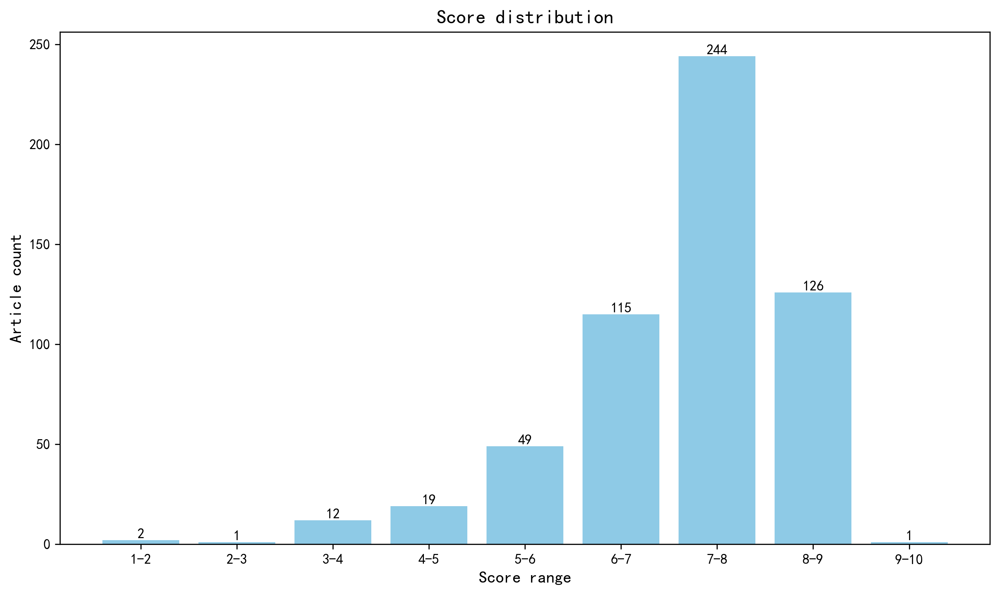

神经科学快讯·第030期 跨物种麻醉脑动力学揭示神经活动的时空隔离 (2026-10-04)
📊 本周概览
第 030 期 · 文献日期：2026-09-28—2026-10-04（含首尾）。共检索并评估 1074 篇；作者与机构信息来自原始来源及 ROR 匹配。16 篇未取得足够摘要，相关条目已标注为仅供初筛；866 篇取得地区信息。作者指标未参与本期来源统计。
本期日期包括预印本版本发布日；另有 20 篇历史期刊论文补全了摘要，单独用于数据库更新。地区图与评分统计排除域外局限条目。
- 头条推荐: 0 篇
- 深度解读: 308 篇
- 简要提及: 220 篇
- 跨界启发: 0 篇
- 已过滤: 546 篇
🌏 环球视野

地区与机构按本期原始来源及 ROR 匹配信息统计，仅覆盖取得机构信息的论文；跨地区合作可重复计入，不作为完整机构排名。评分分布不含“域外局限”文章。
🌍 国家/地区分布 TOP 10
| 排名 | 国家 | 文章数量 |
|---|---|---|
| 1 | United States | 184 |
| 2 | Germany | 49 |
| 3 | China | 44 |
| 4 | Canada | 38 |
| 5 | France | 31 |
| 6 | Switzerland | 23 |
| 7 | United Kingdom | 23 |
| 8 | United Kingdom of Great Britain and Northern Ireland | 17 |
| 9 | Japan | 16 |
| 10 | Netherlands | 12 |
地区计次合计: 437 次
🏢 研究机构 TOP 10
| 排名 | 机构 | 文章数量 |
|---|---|---|
| 1 | Stanford University | 11 |
| 2 | University of Cambridge | 8 |
| 3 | University of Pennsylvania | 8 |
| 4 | McGill University | 8 |
| 5 | Inserm | 8 |
| 6 | University of Michigan | 7 |
| 7 | Brown University | 6 |
| 8 | University of Washington | 6 |
| 9 | Technical University of Munich | 6 |
| 10 | New York University | 6 |
📊 评分分布
| 评分区间 | 文章数量 |
|---|---|
| 1-2 | 2 |
| 2-3 | 1 |
| 3-4 | 12 |
| 4-5 | 19 |
| 5-6 | 49 |
| 6-7 | 115 |
| 7-8 | 244 |
| 8-9 | 126 |
| 9-10 | 1 |
总计: 569 篇评分文章
📈 各领域文章分布
| 领域 | 深度解读 | 简要提及 | 总计 |
|---|---|---|---|
| 认知神经科学 | 59 | 32 | 91 |
| 系统与环路神经科学 | 60 | 18 | 78 |
| 临床与转化神经科学 | 40 | 36 | 76 |
| 计算与理论神经科学 | 34 | 25 | 59 |
| 未知领域 | 0 | 56 | 56 |
| 方法学 | 29 | 23 | 52 |
| 分子与细胞神经科学 | 36 | 12 | 48 |
| 感觉与运动神经科学 | 21 | 8 | 29 |
| 发育神经科学 | 23 | 6 | 29 |
| 社会与情感神经科学 | 6 | 4 | 10 |
合计: 深度解读 308 篇，简要提及 220 篇，共 528 篇
📚 精选文献（按领域分类）
临床与转化神经科学
Restoring brain functions in the Mo-blo mouse model of Menkes disease with copper nanoclusters.
深度解读 8.7/10中文标题: 铜纳米簇恢复门克斯病Mo-blo小鼠模型的脑功能
作者: Audrey Malardé, Jean-Marc Alberto, Benjamin Creusot et al.
单位: Université de Lorraine, Inserm, NGERE, F-54000 Nancy, France.; Université de Lorraine, CITHEFOR, F-54000 Nancy, France.; Université de Lorraine, CNRS, LRGP, F-54000 Nancy, France.; Université de Lorraine, Inserm, NGERE, F-54000 Nancy, France.; Department of Pathology, Nancy Regional University Hospital, F-54000 Nancy, France. 等
关键词: Menkes病, 铜纳米簇, ATP7A, 血脑屏障, 神经退行, 小鼠模型
亮点: 铜纳米簇突破血脑屏障，首次在Menkes病小鼠模型中实现神经功能全面拯救。
核心优势: 开发超小铜纳米簇，成功穿越血脑屏障并恢复铜蛋白活性，显著延长生存并逆转认知与运动缺陷。
研究局限: 尚缺乏长期安全性、剂量优化及大型动物或临床验证，血脑屏障穿透机制和纳米簇代谢途径未完全阐明。
目标读者: 神经退行性疾病、金属代谢、纳米医学和转化神经科学研究者
推荐理由: 本研究针对ATP7A缺陷导致的铜转运障碍和致死性神经退行，设计了超小铜纳米簇（CuNCs）实现全身及脑内铜递送。在Mo-blo小鼠中，每日皮下注射CuNCs显著改善生存、恢复铜蛋白活性，并逆转认知与运动缺陷，其疗效优于传统铜-组氨酸治疗，且能有效穿越血脑屏障。该工作为Menkes病及其他铜代谢相关神经疾病提供了全新的纳米治疗策略，凸显了纳米载体在跨越生理屏障、靶向递送金属离子方面的转化潜力。
中文标题: 肠道菌群通过肠道树突状细胞中的AHR启动中风严重程度
作者: Rosa Delgado Jiménez, Alexandria Ruggles, Mujeeb Adekunle Adedokun et al.
单位: University Medical Center Mainz, Institute of Immunology, Mainz, Germany; Research Center for Immunotherapy, University Medical Center Mainz, Mainz, Germany.; Molecular Systems Biology Unit, European Molecular Biology Laboratory, Heidelberg, Germany.; Institute for Stroke and Dementia Research (ISD), LMU University Hospital, LMU Medizin, LMU Munich, Munich, Germany. 等
关键词: 肠道菌群, 脑-肠轴, 缺血性卒中, 树突状细胞, 芳香烃受体, 免疫调控
亮点: 肠菌通过吲哚-AHR轴预编程肠道免疫，为卒中神经保护提供可成药靶点。
核心优势: 多模态证据链完整，从患者菌群关联、小鼠遗传学、药理学到细胞迁移与Treg依赖的机制闭环，定义微生物-免疫-脑轴。
研究局限: 机制主要在缺血性卒中模型和有限患者队列中验证，吲哚-AHR轴在不同卒中类型、年龄及合并症人群中的普适性仍需前瞻性临床验证。
目标读者: 神经免疫学、卒中转化研究、肠道微生物组与代谢免疫研究者
推荐理由: 该研究揭示了肠道菌群通过吲哚-AHR轴调控树突状细胞功能进而影响卒中严重程度的新机制。在患者和小鼠中均发现产吲哚大肠杆菌富集与不良预后相关，DC特异性AHR缺失可改善卒中结局并保留肠道cDC1，促进免疫调节和CCR7依赖的迁移。这项工作将菌群代谢物、肠道免疫与卒中病理紧密连接，为卒中提供潜在治疗靶点，是脑-肠轴转化研究的典范。
中文标题: 移植到帕金森病患者壳核的多巴胺能神经元中α-突触核蛋白的播种
作者: Duvernay, J. B., Killinger, B. A., Choi, S. G. et al.
单位: Department of Neurological Sciences, Rush University Medical Center, Chicago, IL, USA
关键词: 帕金森病, α-突触核蛋白, 细胞移植, isSID, 路易体病理, 人类
亮点: 利用原位种子检测技术在多例人类移植脑组织中直接捕获α-突触核蛋白播种事件，为帕金森病病理的宿主-移植物传播假说提供了迄今最直接的人体证据。
核心优势: 首次在16年和27年长期存活的人类胚胎中脑移植组织中系统描绘α-突触核蛋白播种的空间分布，并证明播种先于路易病理形成，且与神经黑色素化相关但非其简单后果。
研究局限: 样本量小且为移植患者队列，无法完全排除慢性炎症等宿主环境因素的独立贡献；isSID检测的是播种活性而非确切的分子种，因果推断仍受限于观察性设计。
目标读者: 帕金森病与突触核蛋白病研究人员、神经退行性疾病病理学家、细胞移植治疗与蛋白质错误折叠传播领域科学家
推荐理由: 该研究利用多重原位种子免疫检测（isSID）技术，在帕金森病患者移植的胚胎多巴胺能神经元中追踪α-突触核蛋白的播种位点，为区分宿主源聚集物传播与局部炎症驱动的病理提供了直接证据。这项工作不仅深化了对帕金森病病理传播机制的理解，也为细胞移植疗法的长期安全性评估提供了关键方法学框架，具有重要的临床转化价值。
中文标题: 颈部淋巴结清扫术损害脑淋巴清除和突触蛋白稳态
作者: Zohaib N Khan, Cristina C Clement, Paula Roßmüller et al.
单位: Department of Biochemistry and Radiation Oncology, Weill Cornell Medicine, New York, NY 10065, USA.; Department of Diagnostic and Interventional Neuroradiology, School of Medicine and Health, TUM Klinikum Rechts der Isar, Technical University of Munich, Munich 80333, Germany.; Wihuri Research Institute and Translational Cancer Medicine Program, University of Helsinki, Helsinki 00014, Finland. 等
关键词: 颈淋巴结清扫, 脑淋巴清除, 认知障碍, 突触蛋白稳态, 小鼠模型, 神经影像
亮点: 颈部淋巴结清扫通过损害脑代谢废物清除，引发独特的氧化应激蛋白聚集体，揭示脑淋巴引流与认知障碍的新机制。
核心优势: 结合临床回顾性分析与多物种动物模型，首次将颈部淋巴结清扫与脑淋巴清除障碍、突触蛋白稳态破坏及认知损伤直接关联，机制证据链完整。
研究局限: 临床数据为回顾性，动物模型为急性干预，长期影响及与神经退行性疾病的直接关系尚不明确；机制研究主要聚焦海马，其他脑区未知。
目标读者: 神经科学、免疫学、淋巴学及神经退行性疾病研究者，特别是关注脑-颈淋巴交互和认知障碍机制的专业人士。
推荐理由: 该研究通过临床回顾性分析与啮齿类模型，首次揭示颈部淋巴结清扫术可损害脑膜淋巴引流，导致突触蛋白稳态失衡和认知障碍，且双边手术风险更高。这项工作将淋巴系统与脑健康直接关联，为术后认知下降提供了新机制，并提示保护脑淋巴通路可能是临床干预靶点。
An age-preserving neuronal iSpheroid platform for modeling human aging and Alzheimer disease
深度解读 8.3/10中文标题: 用于模拟人类衰老和阿尔茨海默病的年龄保持神经元iSpheroid平台
作者: Alsolami, S., Wang, M., Sarraf Sabedot, T. et al.
单位: Salk Institute for Biological Studies
关键词: iSpheroid, 直接重编程, 阿尔茨海默病, 脑衰老, 表观遗传年龄, 单核测序
亮点: 免重编程直接诱导的3D神经元球体保留供体表观遗传年龄，自发重现阿尔茨海默病核心病理，打通衰老与AD建模的关键缺口。
核心优势: 直接转分化生成可扩展3D神经元球体，同时保留供体表观遗传年龄并自发形成Aβ沉积、Tau病理和代谢紊乱，整合多组学区分生理性衰老与AD，并提供药物筛选概念验证。
研究局限: 仅以bioRxiv预印本形式发布，尚无同行评审；样本量有限，缺乏独立队列验证，snRNA-seq约96%神经元纯度虽高但微胶质/星形胶质细胞整合后的功能成熟度需进一步确认。
目标读者: 神经退行性疾病建模、衰老生物学、干细胞与类器官技术、AD药物开发及多组学研究者
推荐理由: 该研究建立了一种不经过多能干细胞阶段的直接诱导神经元球体（iSpheroid）平台，能够从不同年龄供体（包括年轻、健康老年及散发性AD患者）的成纤维细胞直接生成三维、长期存活且具有电生理活性的神经元，并保留了供体特异性的表观遗传年龄。这一平台克服了传统重编程抹去衰老特征的缺陷，为研究衰老作为AD最强风险因素的细胞机制提供了人类相关的三维模型，并有望用于药物筛选和个性化医疗。
中文标题: 语音时钟解码痴呆表型、社会暴露组与生物衰老
作者: Hernan Hernandez, Lizeth Katherine Pedraza, Hernando Santamaria-Garcia et al.
单位: Latin American Brain Health Institute (BrainLat), Universidad Adolfo Ibañez, Santiago de Chile, Chile.; Laboratorio de Bases Biológicas del Comportamiento, Facultad de Ciencias del Comportamiento, Universidad de La Sabana, Chía, Colombia.; Pontificia Universidad Javeriana (PhD Program in Neuroscience), Bogotá, San Ignacio, Colombia.; Center of Memory and Cognition Intellectus, Hospital Universitario San Ignacio Bogotá, San Ignacio, Colombia.; Universidad Nacional de Colombia, Bogotá, Colombia.; Fundación Santa Fe de Bogotá, Departamento de Salud Mental, Bogotá, Colombia.; Universidad de los Andes, Bogotá, Colombia. 等
关键词: 语音时钟, 痴呆, 生物衰老, 机器学习, 跨文化, 数字表型
亮点: 基于多国语音的“语音时钟”通过语音年龄差捕捉痴呆表型、社会暴露组与多层级生物衰老，提供可扩展的低成本候选标志物。
核心优势: 在五个拉美国家2928名个体中整合多模态声学/语言特征与监督学习，将语音年龄差与p-Tau217、脑时钟、表观遗传年龄及社会暴露组系统关联，证据链完整且跨诊断组梯度清晰。
研究局限: 横断面设计无法确立因果或纵向预测效度；语音年龄差作为衰老偏差标记的生物学特异性有限，且样本局限于拉美人群，跨文化泛化仍需验证。
目标读者: 神经科学、计算语言学、数字生物标志物、老龄化与痴呆研究及全球健康研究者
推荐理由: 该研究利用五个拉丁美洲国家2928名参与者的语音数据，构建了可跨国家、跨语言推广的语音衰老时钟。通过多模态声学与语言学特征估计年龄，得到的语音年龄差可作为痴呆表型、社会暴露组和生物衰老的横断面标志物。其大规模、多中心设计和机器学习方法为痴呆的早期筛查、远程监测和跨文化应用提供了可扩展的数字解决方案，对临床转化和全球脑健康具有重要价值。
A microglial SPP1-ITGB1 feedback loop sustains thalamic hyperexcitability and post-stroke pain.
深度解读 8.2/10中文标题: 小胶质细胞SPP1-ITGB1反馈环路维持丘脑过度兴奋与卒中后疼痛
作者: Ruicheng Dai, Wenting Wu, Xiangyu Zhou et al.
单位: Peking University, Tsinghua University, NIBS Joint Graduate Program, NIBS, Beijing 102206, China; School of Life Sciences, Tsinghua University, Beijing 100084, China; Beijing Institute for Brain Research, Chinese Academy of Medical Sciences, Peking Union Medical College, Beijing, China; New Cornerstone Science Laboratory, Chinese Institute for Brain Research, Beijing 102206, China.; Beijing Institute for Brain Research, Chinese Academy of Medical Sciences, Peking Union Medical College, Beijing, China; New Cornerstone Science Laboratory, Chinese Institute for Brain Research, Beijing 102206, China.; Beijing Institute for Brain Research, Chinese Academy of Medical Sciences, Peking Union Medical College, Beijing, China; Chinese Institute for Brain Research, Beijing 102206, China. 等
关键词: 卒中后疼痛, 小胶质细胞, SPP1, ITGB1, P2X7, 丘脑
亮点: 小胶质细胞SPP1-ITGB1自放大反馈环路是卒中后中枢痛从急性损伤转向慢性化的关键开关，为顽固性中枢痛提供可干预靶点。
核心优势: 通过P2X7-ATP上游触发、微胶质SPP1自分泌ITGB1环路、光遗传学充分性验证与遗传/药理时序解离实验，构建了从损伤到慢性痛的因果链，并明确区分急性诱导与慢性维持机制。
研究局限: 核心证据主要来自小鼠出血性卒中模型，SPP1-ITGB1轴在人类CPSP及其他类型中枢痛中的保守性、细胞特异性及长期安全性尚未验证；光遗传学激活微胶质状态的行为学特异性也需排除运动或焦虑等混杂因素。
目标读者: 神经免疫、疼痛与卒中机制研究者，以及从事中枢神经系统损伤修复和转化医学的药理学家
推荐理由: 该研究揭示了卒中后中枢性疼痛从急性向慢性转化的关键机制：出血诱导的ATP释放激活小胶质细胞P2X7受体，驱动SPP1表达，进而通过自分泌ITGB1信号形成自我放大的反馈环路，维持丘脑神经元过度兴奋。这一SPP1-ITGB1轴不仅填补了胶质细胞活化与神经元慢性高兴奋性之间的效应分子空白，还提供了可干预的分子靶点。考虑到卒中后疼痛临床治疗棘手，该发现对开发阻止疼痛慢性化的转化策略具有重要价值，值得神经科学读者关注。
中文标题: 不同功能连接梯度反映衰老与阿尔茨海默病
作者: Rittmo, Jonathan, Franzmeier, Nicolai, Strandberg, Olof et al.
单位: Department of Clinical Sciences Malmö, SciLifeLab, Lund University, Lund, Sweden; Institute for Stroke and Dementia Research, University Hospital, LMU Munich, Munich, Germany; Munich Cluster for Systems Neurology (SyNergy), Munich, Germany; Department of Psychiatry and Neurochemistry, Institute of Neuroscience and Physiology, Sahlgrenska Academy, University of Gothenburg, Gothenburg, Sweden; Clinical Memory Research Unit, Department of Clinical Sciences Malmö, Faculty of Medicine, Lund University, Lund, Sweden 等
关键词: 功能连接, 梯度, 阿尔茨海默病, 衰老, fMRI, 皮层层级
亮点: 衰老与阿尔茨海默病分别沿两条正交的功能连接梯度改变全脑通信
核心优势: 利用BioFINDER-2（N=973）和ADNI（N=129）两个独立队列，将衰老和AD相关的功能连接改变分别映射到表征–执行轴与感觉–关联轴，提出正交功能通路框架。
研究局限: 功能连接梯度变化与病理、认知之间的因果方向仍未明确，且在ADNI样本量较小和横断面设计下，年龄与AD效应的分离可能受队列和疾病阶段混杂影响。
目标读者: 神经影像、网络神经科学、阿尔茨海默病和衰老研究领域的研究者
推荐理由: 该研究在BioFINDER-2和ADNI两个独立队列中，通过全皮层功能连接梯度分析，揭示了衰老与阿尔茨海默病分别对应不同的层级脑轴改变。它超越了传统基于种子点的连接分析，将宏观通信模式的改变与皮层层级组织联系起来，为理解AD的异质性及早期诊断提供了新的系统-level框架。对临床转化和系统神经科学读者均有重要参考价值。
中文标题: 神经元胞外囊泡的电子分析实现帕金森病的早期预测
作者: Tianrui Chang, Cheng Jiang, Shijun Yan et al.
单位: Nuffield Department of Clinical Neurosciences, University of Oxford, Oxford, UK.; Kavli Institute for Nanoscience Discovery, University of Oxford, Oxford, UK.; Department of Pathology, the First Affiliated Hospital, Zhejiang University School of Medicine, Hangzhou, Zhejiang, 310003, China.; Nuffield Department of Clinical Neurosciences, University of Oxford, Oxford, UK.; Kavli Institute for Nanoscience Discovery, University of Oxford, Oxford, UK.; School of Medicine, Life and Health Sciences, Chinese University of Hong Kong, Shenzhen, China.; Organic Bioelectronics Laboratory, Biological and Environmental Science and Engineering Division, King Abdullah University of Science and Technology (KAUST), Thuwal 23955-6900, Saudi Arabia. 等
关键词: 帕金森病, 细胞外囊泡, α-突触核蛋白, 有机电化学晶体管, 血液生物标志物, 早期诊断
亮点: 有机电化学晶体管实现血清神经元EV中α-Syn多形态电子检测，为帕金森病早期诊断提供微创方法。
核心优势: 多参数OECT平台同时检测总α-Syn、聚集态和pS129，灵敏度达低飞摩尔，结合L1CAM+EV分离显著降低外周背景。
研究局限: 临床队列仅66例，缺乏独立验证和纵向预后数据，且OECT在复杂血清中的长期稳定性与标准化仍需验证。
目标读者: 神经退行性疾病生物标志物、生物医学工程、临床神经病学及转化医学研究者
推荐理由: 本研究报道了一种基于有机电化学晶体管的多参数诊断平台，能够同时检测血液中神经元来源细胞外囊泡的总α-突触核蛋白、聚集体及Ser129磷酸化形式。该技术解决了外周血α-Syn背景干扰大、神经元EV丰度极低的关键瓶颈，在帕金森病早期甚至前驱期即可实现高灵敏预测。对神经科学读者而言，这不仅提供了一种可落地的液体活检工具，更打通了从分子病理到临床转化的路径，有望推动PD早期干预与疾病修饰疗法的试验设计。
中文标题: 非洲血统富集的H1亚单倍型挑战MAPT单倍型分配并揭示独特的tau调控程序
作者: Sarah A Weitzman, Joshua Orrick, Brian Fulton-Howard et al.
单位: Department of Genetics and Genomic Sciences, Icahn School of Medicine at Mount Sinai, New York, NY 10029, USA; Ronald M. Loeb Center for Alzheimer's Disease, Icahn School of Medicine at Mount Sinai, New York, NY 10029, USA.; Department of Genetics and Genomic Sciences, Icahn School of Medicine at Mount Sinai, New York, NY 10029, USA.; Department of Genetics and Genomic Sciences, Icahn School of Medicine at Mount Sinai, New York, NY 10029, USA; Ronald M. Loeb Center for Alzheimer's Disease, Icahn School of Medicine at Mount Sinai, New York, NY 10029, USA; Nash Department of Neuroscience, Icahn School of Medicine at Mount Sinai, New York, NY 10029, USA. 等
关键词: MAPT单倍型, 17q21.31倒位, 非洲血统, 长读长测序, tau调控, iPSC神经元
亮点: 长读长测序与多组学整合鉴定出非洲血统富集的H1_A亚单倍型，挑战了沿用数十年的MAPT H1/H2二分类范式。
核心优势: 发现rs8070723这一被广泛用于定义保护性H2的单核苷酸变异实际存在于H1_A亚单倍型中，直接动摇了全球MAPT单倍型分型在非欧洲人群中的有效性。
研究局限: 摘要未提供样本量、效应量及多重检验校正细节，H1_A的功能后果在体内病理和疾病终点上的因果证据尚不明确。
目标读者: 神经遗传学、tau蛋白病、群体遗传学以及神经退行性疾病生物标志物研究者
推荐理由: 该研究利用长读长测序、死后脑转录组及iPSC来源神经元和星形胶质细胞，在17q21.31倒位位点发现了一个非洲血统富集的非倒位H1亚单倍型H1_A。令人瞩目的是，H1_A携带通常定义保护性H2单倍型的rs8070723变异，直接挑战了现行MAPT单倍型分型标准。这项工作不仅揭示了不同血统间tau调控程序的差异，更强调了在神经退行性疾病遗传研究中纳入祖先多样性、重新审视单倍型标签的紧迫性，对tauopathies的精准医学具有重要转化意义。
中文标题: PRPF31 .AAV基因治疗在患者来源的RPE和视网膜类器官中自主恢复剪接稳态和RP11表型
作者: Elia, Maria, Pauzuolyte, Valda, Georgiou, Maria et al.
单位: Centre for Gene Therapy & Regenerative Medicine, Faculty of Life Sciences & Medicine, King’s College London, London, UK; Department of Clinical Chemistry, University Medical Center Göttingen, Göttingen, Germany; Max-Planck-Institute for Multidisciplinary Sciences, Göttingen, Germany; Biosciences Institute, Faculty of Medical Sciences, Newcastle University, Newcastle upon Tyne, UK 等
关键词: 视网膜类器官, 基因治疗, RNA剪接, PRPF31, RP11, AAV载体
亮点: PRPF31基因疗法在患者来源RPE和视网膜类器官中恢复剪接稳态并逆转RP11核心病理，且对成熟细胞同样有效。
核心优势: 在两种关键细胞类型（RPE和光感受器）及不同疾病阶段（包括成熟细胞）中验证了基因疗法的广泛疗效，并明确排除了自噬激活药物的附加益处。
研究局限: 研究基于患者来源的细胞和类器官模型，缺乏体内动物模型或临床数据验证；长期安全性和有效性尚未评估；机制上仅聚焦于剪接恢复，未全面探索下游网络。
目标读者: 视网膜疾病研究者、基因治疗科学家、RNA剪接与神经退行性疾病领域的研究人员、临床转化医学专家
推荐理由: 该研究针对PRPF31突变导致的视网膜色素变性11型，利用患者来源的RPE细胞与3D视网膜类器官，证明AAV介导的PRPF31基因替代可恢复剪接稳态并逆转核心病理表型。其创新在于在两种疾病相关细胞类型中实现细胞自主性修复，为剪接体病这一传统上难以靶向的疾病提供了基因治疗概念验证。该工作将罕见病机制与转化医学紧密结合，对神经退行性疾病的基因治疗策略具有广泛借鉴意义。
中文标题: 组织学锚定的超高场定量MRI揭示帕金森病中选择性黑质小体易损性
作者: Li, R., Kirilina, E., Bazin, P.-L. et al.
单位: Norwegian University of Science and Technology; University of Oslo; Ostfold Hospital Trust.
关键词: 帕金森病, 黑质小体, 定量MRI, 7T, 组织学锚定, 选择性易损性
亮点: 利用组织学锚定的超高场定量MRI，首次在活体内无偏地揭示了帕金森病黑质小体的选择性脆弱性空间模式
核心优势: 通过将组织学推导的钙结合蛋白验证的概率性黑质小体掩模变形至7T定量MRI模板，打破了传统MRI研究中的循环论证，提供了退化独立的解剖支架，并在活体内重现了死后解剖发现的黑质亚区脆弱性模式。
研究局限: 样本量较小（28对），且为横断面研究，无法确定因果或纵向变化；结论主要基于相关性，且信号被认为反映继发性铁相关胶质过程而非神经元丢失本身，需进一步验证。
目标读者: 帕金森病研究人员、神经影像学家、神经退行性疾病专家、系统生物学家
推荐理由: 本研究通过将组织学衍生的钙结合蛋白验证的黑质小体概率图谱映射到7T多模态定量MRI模板，构建了独立于疾病对比的解剖支架，从而在活体验证帕金森病中选择性易损性的假说。方法学上解决了以往MRI研究中的循环论证问题，为帕金森病的早期诊断和进展监测提供了可靠的影像学标志物，并推动了超高场定量MRI在神经退行性疾病中的应用。
中文标题: 外周CXCR3阻断减轻tau病变小鼠模型中的T细胞浸润和神经退行性变
作者: Joshua T Emmerson, Hao Hu, Vivek Savani et al.
单位: Department of Neurology, Hope Center for Neurological Disorders, Knight Alzheimer's Disease Research Center, Washington University in Saint Louis, Saint Louis, MO, USA. Electronic address: holtzman@wustl.edu.; Genetics and Aging Research Unit, McCance Center for Brain Health, Mass General Institute for Neurodegenerative Disease, Department of Neurology, Massachusetts General Hospital, Harvard Medical School, Charlestown, MA, USA.; Department of Neurology, Hope Center for Neurological Disorders, Knight Alzheimer's Disease Research Center, Washington University in Saint Louis, Saint Louis, MO, USA.
关键词: T细胞, 趋化因子, tauopathy, 小鼠模型, 神经退行, 认知功能
亮点: 外周CXCR3阻断通过减少T细胞脑浸润来减轻tau病变模型的神经退行并改善认知。
核心优势: 将趋化因子受体CXCR3确立为tau病变中T细胞浸润的关键驱动因素，并通过遗传缺失与抗体阻断的双重证据、单细胞测序与流式验证，证明外周免疫干预可疾病修饰。
研究局限: 机制证据主要来自小鼠模型，CXCR3阻断对人类tau病变的转化价值、长期安全性及对中枢免疫监视的潜在影响尚不明确。
目标读者: 神经免疫学、tau病变与神经退行性疾病研究者、转化医学与药物开发人员
推荐理由: 该研究揭示了趋化因子受体CXCR3在tau蛋白病中介导T细胞浸润的关键作用。通过基因敲除和抗体阻断，作者证明外周CXCR3阻断可减少脑实质CD4+和CD8+ T细胞积累，减轻神经退行并改善认知。这一发现将神经免疫互作与tau病理联系起来，为阿尔茨海默病等tauopathy提供了新的外周免疫治疗靶点，具有较高的临床转化潜力。
中文标题: 长期阿片类药物使用在慢性疼痛中的多分子适应
作者: Marwan N Baliki, Andrew D Vigotsky, Gaelle Rached et al.
单位: Center for Translational Pain Research, Northwestern University, Chicago, IL 60611, USA.; Departments of Biomedical Engineering and Statistics & Data Science, Northwestern University, Evanston, IL 60208, USA.; Center for Translational Pain Research, Northwestern University, Chicago, IL 60611, USA.; Department of Physical Medicine and Rehabilitation, Northwestern University, Chicago, IL 60611, USA.; Shirley Ryan AbilityLab, Chicago, IL 60611, USA.; Center for Translational Pain Research, Northwestern University, Chicago, IL 60611, USA.; Department of Neuroscience, Northwestern University, Chicago, IL 60611, USA. 等
关键词: 慢性疼痛, 阿片类药物, 长期使用, 脑结构与功能, 神经影像, 人类
亮点: 长期阿片类药物治疗慢性疼痛与特定受体（5HT1a、5HT6、MOR）相关脑活动模式改变，而非显著脑结构差异
核心优势: 首次在稳定长期阿片治疗的慢性疼痛患者中，通过多模态影像与受体分布模型（19种受体/转运体）揭示分子定义的大脑活动模式，并关联 psychosocial 维度及用药剂量、戒断与减量成功
研究局限: 样本量相对有限（70+70+30），横断面设计无法确立因果关系，且受体分布模型基于先前知识，可能遗漏其他分子贡献
目标读者: 神经影像学、疼痛研究、阿片类药物成瘾与受体神经科学领域的研究者及临床疼痛专家
推荐理由: 这项研究首次系统揭示了慢性疼痛患者长期稳定使用阿片类药物（平均7.8年）后，脑结构与功能发生的多分子适应性改变。尽管心理社会和脑形态学差异较小，但脑功能活动存在显著改变，提示长期阿片暴露可能导致神经适应性重组。该研究为理解阿片类药物的长期神经心理影响提供了重要证据，并对临床疼痛管理策略具有深远意义。
中文标题: 嘌呤能受体激活可纠正自闭症相关的内皮功能障碍
作者: Julie Ouellette, Sareen Warsi, Phinea Romero et al.
单位: Neuroscience Program, The Ottawa Hospital Research Institute, Ottawa, ON K1H 8L6, Canada.; Departments of Anesthesiology and of Pharmacology, University of Colorado Anschutz Medical Campus, Aurora, CO 80045, USA.; Neuroscience Program, The Ottawa Hospital Research Institute, Ottawa, ON K1H 8L6, Canada; Department of Cellular & Molecular Medicine, University of Ottawa, Ottawa, ON K1H 8M5, Canada. 等
关键词: 自闭症, 16p11.2缺失, 内皮细胞, P2Y2受体, ATP, 血脑屏障
亮点: 16p11.2缺失导致脑内皮细胞ATP耗竭，激活P2Y2受体可修复血管功能并改善自闭症行为
核心优势: 从代谢缺陷到受体靶点再到行为挽救的完整因果链，且P2Y2受体为现有药物靶点，转化潜力明确。
研究局限: 证据主要基于雄性小鼠，性别差异未探讨；P2Y2受体激活改善行为的神经血管耦合机制及长期安全性仍需验证。
目标读者: 神经血管生物学、自闭症谱系障碍、代谢与内皮细胞研究者及转化医学科学家
推荐理由: 本研究揭示16p11.2缺失自闭症模型小鼠脑内皮细胞存在选择性生物能量衰竭（ATP降低），并证明通过P2Y2嘌呤能受体激活可挽救内皮功能障碍。该发现将自闭症病理机制从神经元拓展至脑血管内皮，提出了嘌呤能信号作为潜在治疗靶点，为自闭症的血管-神经交互作用提供了新视角，具有明确的转化意义。
中文标题: 跨疾病精神症状的环路机制
作者: Urs Braun, Johannes Wolf, Dusan Hirjak et al.
单位: Department of Psychiatry and Psychotherapy, Central Institute of Mental Health, Medical Faculty Mannheim, Heidelberg University, Mannheim, Germany; Hector Institute for Artificial Intelligence in Psychiatry, Central Institute of Mental Health, Medical Faculty Mannheim, Heidelberg University, Mannheim, Germany.; Department of Psychiatry and Psychotherapy, Central Institute of Mental Health, Medical Faculty Mannheim, Heidelberg University, Mannheim, Germany; German Centre for Mental Health, partner site Mannheim-Heidelberg-Ulm, Mannheim, Germany.; Department of Psychiatry and Psychotherapy, Central Institute of Mental Health, Medical Faculty Mannheim, Heidelberg University, Mannheim, Germany; Hector Institute for Artificial Intelligence in Psychiatry, Central Institute of Mental Health, Medical Faculty Mannheim, Heidelberg University, Mannheim, Germany; German Centre for Mental Health, partner site Mannheim-Heidelberg-Ulm, Mannheim, Germany. 等
关键词: 精神症状, 多巴胺, 谷氨酸, GABA, 预测编码, 皮层-纹状体-丘脑-皮层环路
亮点: 提出跨诊断精神病性症状的多尺度计算框架，将神经递质异常、环路失衡与吸引子不稳定统一为精度加权与预测误差失调。
核心优势: 将分子、细胞、环路、网络和计算现象学整合为可检验的跨诊断框架，并勾画了个体化机制测试与回路导向干预的路径。
研究局限: 作为观点/综述类文章，缺乏新的原始数据或系统定量整合，核心假设的实证支持有限，部分环节仍停留于概念推演。
目标读者: 精神疾病神经影像、计算精神病学、系统神经科学及回路导向干预研究者
推荐理由: 本文提出一个跨诊断框架，将幻觉、妄想等精神病性症状统一解释为多巴胺、谷氨酸、GABA、5-HT和ACh等神经递质扰动导致神经元增益和突触效能改变，进而破坏感觉证据、预测误差和内部生成表征的精确性加权。这些局部扰动通过皮层-纹状体-丘脑-皮层环路和大规模功能网络传播。该框架整合了多尺度机制，为理解精神病性症状提供了统一理论，并对开发跨诊断治疗策略具有重要转化意义。
中文标题: 超越边际覆盖：多类精神疾病神经影像中的类条件共形预测
作者: Rokham, H., Falakshahi, H., Calhoun, V.
单位: Gerogia State University
关键词: 共形预测, 精神影像, 多分类诊断, 不确定性量化, 多中心, 临床决策支持
亮点: 类别条件保形预测揭示精神疾病多类诊断中的覆盖不平等，并将残差集合大小转化为可解释的个体模糊性度量。
核心优势: 将Mondrian保形校准从方法学概念推进到大规模多中心精神影像实证，系统展示边际覆盖的掩盖效应与个体分层及融合表征比较的实用价值。
研究局限: 主要基于结构/功能MRI的监督分类管道，结论对模型架构、校准集大小和类别先验的依赖仍需跨队列前瞻验证，且临床转化路径尚未展开。
目标读者: 神经影像方法学、计算精神病学、机器学习不确定性量化及临床决策支持研究者
推荐理由: 该研究尖锐指出：在精神疾病多分类诊断中，常规共形预测的边缘覆盖保证可能掩盖类别间覆盖极度不均 —— 边缘覆盖达标时，个别诊断的覆盖率可能严重偏离名义水平。作者在1,520名被试、14个采集站点的四分类情绪与精神病诊断任务上，系统展示了这一失效模式，并提出了类别条件共形预测方案。对神经影像临床转化而言，这提醒我们：模型可信度必须逐类审视，而非只看总体指标。该工作为构建更公平、更可靠的精神疾病辅助诊断系统提供了可直接落地的方法学工具。
中文标题: T-B相互作用产生具有致病特征的CD3+ B细胞和CD20+ T细胞在多发性硬化症中
作者: Selia Baier, Zhongyi Wang, Nathalie Loll et al.
单位: Institute of Clinical Neuroimmunology, LMU University Hospital, LMU Medizin, Ludwig-Maximilians-Universität München, Munich 81377, Germany.; Biomedical Center (BMC), LMU Medizin, Ludwig-Maximilians-Universität München, Martinsried 82152, Germany.; Graduate School of Systemic Neuroscience, Ludwig-Maximilians-Universität München, Martinsried 82152, Germany.; Novartis Biomedical Research, Basel 4056, Switzerland.; Institute of Clinical Neuroimmunology, LMU University Hospital, LMU Medizin, Ludwig-Maximilians-Universität München, Munich 81377, Germany.; Biomedical Center (BMC), LMU Medizin, Ludwig-Maximilians-Universität München, Martinsried 82152, Germany.; Department of Translational Immunology, Department of Medicine 3 - Rheumatology and Immunology, Nikolaus-Fiebiger Center for Molecular Medicine, Friedrich-Alexander-Universität (FAU) Erlangen-Nürnberg and Uniklinikum Erlangen, Erlangen 91054, Germany.; Deutsches Zentrum Immuntherapie, Friedrich-Alexander-Universität (FAU) Erlangen-Nürnberg and Uniklinikum Erlangen, Erlangen 91054, Germany. 等
关键词: 多发性硬化, T-B细胞相互作用, CD20, CD3, 单细胞蛋白质基因组学, 自身免疫
亮点: T-B细胞相互作用通过trogocytosis产生"伪装"淋巴细胞，其CD20+ T细胞在MS中富集并具致病性，抗CD20治疗可清除并阻止其再诱导。
核心优势: 多模态方法（单细胞蛋白基因组学、FACS、ImageStream）系统鉴定CD3+B细胞和CD20+T细胞，并在MS中建立从表型到致病功能的完整证据链。
研究局限: trogocytosis机制的直接体内证据有限，MS中伪装淋巴细胞的因果致病作用尚未通过功能实验完全确立。
目标读者: 神经免疫学、多发性硬化症、B/T细胞生物学及自身免疫疾病研究者
推荐理由: 该研究通过单细胞蛋白质基因组学、流式细胞术和成像流式细胞术，揭示了多发性硬化中T-B细胞相互作用可产生具有致病特征的CD3+ B细胞和CD20+ T细胞。发现约40%的浆母细胞表达CD3，而扁桃体中约80%的滤泡辅助T细胞表达CD20，挑战了经典谱系标志物排他性表达的观点。这一发现为理解MS的自身免疫机制提供了新视角，并可能解释抗CD20疗法在MS中的部分疗效机制。
中文标题: E-选择素通过NLRP3介导IL-1β依赖性神经炎症在长春新碱诱导的神经病变中的作用
作者: Starobova, H., Alshammari, A., Inturi, N. N. et al.
单位: Institute for Molecular Bioscience, The University of Queensland, St Lucia, QLD, Australia
关键词: 化疗诱导神经病理性疼痛, E-选择素, NLRP3炎症小体, IL-1β, 背根神经节, 神经免疫互作
亮点: 在化疗诱导周围神经病变中，E-选择素被定位为连接血管激活与IL-1β依赖性神经炎症的上游枢纽，其阻断可完全预防机械超敏而不依赖结构损伤修复。
核心优势: 多模态证据链完整，从内皮黏附分子的系统性筛选、基因敲除与药理学阻断，到空间转录组揭示细胞通讯重编程，再到局部给药与巨噬细胞依赖性NLRP3/IL-1β机制的因果验证，逻辑严密且转化潜力明确。
研究局限: 主要基于小鼠模型，人类VIPN样本验证缺失；E-选择素非经典功能的具体分子机制（如Fut4/7依赖的配体识别与NF-κB/NLRP3偶联）尚未充分解析；空间转录组未明确Sele表达细胞来源。
目标读者: 神经免疫学、疼痛机制、化疗神经毒性及转化医学研究者；关注神经-血管-免疫交互的计算与系统生物学家。
推荐理由: 该研究在化疗诱导神经病理性疼痛（VIPN）模型中系统筛查了内皮黏附分子，发现阻断E-选择素（而非ICAM-1、PECAM-1或P-selectin）可完全预防机械痛敏并显著减少背根神经节中F4/80+免疫细胞浸润，进而揭示E-选择素通过NLRP3/IL-1β轴驱动神经炎症。这一发现将血管内皮激活与神经免疫炎症在VIPN中直接联系，为化疗神经毒性提供了新的治疗靶点，具有明确的转化潜力。
中文标题: 从网络观测到网络干预：阿尔茨海默病的研究范式转变
输入资料不足：原始摘要未取得，当前评估仅供初筛，推送前需核对原文。
作者: Giacomo Koch, Alessandro Martorana, Emiliano Santarnecchi
单位: Department of Systems Medicine, University of Rome Tor Vergata, 00133 Rome, Italy.; Precision Neuroscience & Neuromodulation Program, Department of Psychiatry, Neurology, Massachusetts General Hospital, MA 02115 USA.; Harvard Medical School, Boston, MA 02115, USA.; Experimental Neuropsychophysiology Lab, LIFE Institute for Research and Health Care Santa Lucia IRCCS, 00179 Rome, Italy.; Department of Neuroscience and Rehabilitation, University of Ferrara, Ferrara, Italy and Center for Translational Neurophysiology of Speech and Communication (CTNSC), Italian Institute of Technology (IIT), 44121 Ferrara, Italy.
关键词: 阿尔茨海默病, 网络干预, 神经影像, 脑网络, 经颅磁刺激, 计算建模
亮点: 从被动观察脑网络到主动干预AD病理网络，为精准神经调控提供新框架。
核心优势: 系统整合多模态网络异常证据，并提出基于因果网络靶点的干预策略，具有明确的转化导向。
研究局限: 作为观点/综述文章，缺乏原始实验数据验证干预假设，具体靶点选择和疗效证据仍需前瞻性试验支持。
目标读者: 阿尔茨海默病、神经影像、神经调控及转化神经科学研究者
推荐理由: 该综述系统梳理了从网络观测到网络干预的阿尔茨海默病研究范式转变，强调基于脑网络拓扑的精准靶向调控策略。文章整合了多模态神经影像、网络建模与神经调控技术，为理解AD的环路级病理机制和开发个体化干预方案提供了统一框架。对关注神经退行性疾病转化研究、脑网络分析与神经调控的读者具有重要参考价值，尤其适合作为AD网络干预方向的入门与进阶指南。
中文标题: 掩蔽磷脂酰丝氨酸可防止两种不同的果蝇神经退行性变模型中的神经元丢失
作者: Naden Khateb, Miri Shwartsburd, Eden Grig et al.
单位: The Herta and Paul Amir School of Medicine, Faculty of Natural Sciences, University of Haifa, Haifa 34988, Israel.; Department of Human Biology, Faculty of Natural Sciences, University of Haifa, Haifa 34988, Israel.
关键词: 果蝇, 神经退行, 磷脂酰丝氨酸, 吞噬作用, 神经保护, MFG-E8
亮点: 通过遮蔽磷脂酰丝氨酸阻断异常胶质吞噬，在两种果蝇神经退行模型中保留神经元并改善运动与寿命。
核心优势: 首次在两种机制迥异的果蝇神经退行模型中验证PS遮蔽作为通用保护策略，概念清晰且转化指向明确。
研究局限: 果蝇模型距离人类神经退行疾病仍有较大差距，仅限两种模型、缺乏哺乳动物验证，疗效受损伤时机和严重程度影响较大。
目标读者: 神经退行疾病、胶质细胞生物学、吞噬作用及果蝇遗传学研究者和转化神经科学家
推荐理由: 该研究揭示磷脂酰丝氨酸（PS）外翻是应激神经元被胶质细胞过早吞噬的关键信号，通过截短型MFG-E8掩蔽PS，在果蝇skpA敲低和亨廷顿病两种神经退行模型中均有效阻止神经元丢失并改善运动与寿命。这项工作将细胞凋亡清除机制与神经退行性病变直接联系，提出了独立于病因的通用神经保护策略，为临床转化提供了新靶点。
中文标题: 家族性帕金森病突变汇聚于与溶酶体、自噬和囊泡运输通路相关的可变剪接程序
作者: Lee, Y. J., Syed, K., Busquets, O. et al.
单位: University of California, Berkeley
关键词: 帕金森病, 可变剪接, 人诱导多能干细胞, 中脑多巴胺神经元, 溶酶体, 自噬
亮点: 12种家族性帕金森病突变在人多巴胺能神经元中汇聚于可变剪接程序，指向溶酶体、自噬与囊泡运输通路。
核心优势: 系统性地利用iSCORE-PD等多种家族性PD突变hPSC模型，结合SNc参考数据集进行深度RNA-seq与pre-mRNA剪接分析，揭示不同遗传病因共享的剪接改变。
研究局限: 预印本尚未经同行评审，缺乏独立队列或体内功能验证，剪接变化的因果作用及生物标志物价值仍需实验证实。
目标读者: 帕金森病遗传学、神经退行性疾病、RNA剪接与系统生物学研究者
推荐理由: 该研究利用12种家族性帕金森病突变的人多能干细胞分化至中脑多巴胺能神经元，结合人脑黑质snRNA-seq数据，系统揭示了不同突变汇聚于可变剪接程序，并指向溶酶体、自噬和囊泡运输通路。这一发现将遗传异质性与共同的剪接失调机制联系起来，为帕金森病的靶向治疗提供了新的分子框架。
中文标题: 脑自动调节丧失驱动卒中后异常灌注模式
作者: Chryso Lambride, Mohamad El Amki, Susanne Wegener et al.
单位: Department of Neurology, University Hospital and University of Zurich, Zurich 8057, Switzerland.; Neuroscience Center Zurich, University of Zurich and ETH Zurich, Zurich 8091, Switzerland.; ARTificial ORGan Center for Biomedical Engineering Research, University of Bern, Bern 3010, Switzerland.; Department of Neurology, University Hospital and University of Zurich, Zurich 8057, Switzerland.; Neuroscience Center Zurich, University of Zurich and ETH Zurich, Zurich 8091, Switzerland.; ARTificial ORGan Center for Biomedical Engineering Research, University of Bern, Bern 3010, Switzerland.
关键词: 脑血流自动调节, 缺血性卒中, 微血管网络, 计算建模, 灌注成像, 神经血管耦合
亮点: 计算模型揭示脑自动调节的层级组织与卒中后异常灌注的机制。
核心优势: 在逼真微血管网络上构建血管特异性静态自动调节模型，系统解析血管拓扑与血管反应性对灌注稳定性的贡献。
研究局限: 研究完全基于 in silico 模拟，缺乏实验验证；模型忽略动态自动调节和神经血管耦合，结论的生理相关性有待证实。
目标读者: 脑血流调节、卒中病理生理学、计算血管生物学和微循环研究者
推荐理由: 该研究构建了可应用于真实微血管网络的静态脑自动调节计算模型，首次揭示了局部血管反应如何在复杂脑血管网络中动态互作以稳定脑血流。模型提供了血管特异性反应性与灌注动力学预测，为理解卒中后自动调节丧失如何驱动异常灌注模式提供了机制框架。对临床转化而言，该工作有望指导个体化血压管理和再灌注策略优化，是神经血管计算建模与卒中转化研究的重要交叉进展。
中文标题: 代谢物比率组学：脑手术中用于胶质瘤快速诊断和分类的术中应用
作者: Mahdiyeh Shahi, Kenneth Lane Virgin, Loizos Michaelides et al.
单位: Department of Chemistry, Purdue University, West Lafayette, IN 47907.; Indiana University School of Medicine, Indianapolis, IN 46202.; Department of Neurosurgery, Mayo Clinic, Jacksonville, FL 32224.
关键词: 质谱成像, 胶质瘤, IDH突变, 术中诊断, 2-羟基戊二酸, 代谢组学
亮点: 基于探针触碰喷雾质谱的代谢物比值组学，可在术中场快速区分胶质瘤与非肿瘤组织并分层IDH突变状态与肿瘤级别。
核心优势: 将比率型代谢物分析策略直接嵌入术中质谱工作流，减少等压和异构干扰，并在86例人脑样本中展示与独立临床分型高度一致的分层能力。
研究局限: 单中心、样本量有限，缺少术中实时前瞻性验证和独立外部队列；代谢物比值与肿瘤细胞比例的线性关系仍属关联性证据，机制解释不足。
目标读者: 神经外科、神经肿瘤学、质谱分析化学和转化医学研究者
推荐理由: 该研究开发了基于触摸喷雾质谱的代谢物比值组学方法，可在脑手术中快速诊断和分类胶质瘤。通过分析86例人脑样本，利用串联质谱区分异构体，实现了IDH突变与野生型胶质瘤的准确区分。这一技术有望为神经外科提供实时分子诊断工具，指导手术切除范围，推动精准神经肿瘤学发展。
中文标题: 血浆细胞外囊泡脂质组学揭示帕金森病中SMPD1驱动的鞘磷脂补救途径崩溃
作者: Rai, S., Chaubey, A., Paul, S. et al.
单位: Department of Biophysics, All India Institute of Medical Sciences, New Delhi, India
关键词: 帕金森病, 细胞外囊泡, 鞘脂代谢, SMPD1, 生物标志物, 溶酶体
亮点: 血浆细胞外囊泡脂质组学锁定SMPD1驱动的鞘磷脂补救通路崩溃，为帕金森病提供可分层的外周生化标志与治疗靶点。
核心优势: 以endosome来源血浆EV脂质组学为核心，结合BODIPY-C5追踪、体外/小鼠/人脑死后多模型正交验证，并映射到PIGD临床亚型，证据链完整。
研究局限: 仍为bioRxiv预印本，样本量与独立队列验证细节有限，SMPD1因果性缺乏遗传或干预实验直接证明，EV脂质组向中枢病理的推断存在外推风险。
目标读者: 帕金森病与溶酶体生物学研究者、脂质组学与细胞外囊泡方法学专家、神经退行性疾病转化医学团队
推荐理由: 该研究利用血浆内体来源细胞外囊泡（PsEV）脂质组学，首次揭示了帕金森病中由SMPD1不对称上调驱动的鞘磷脂-神经酰胺轴双向紊乱，并证实SMPD1扰动严重损害溶酶体鞘磷脂周转。这一发现不仅为PD的溶酶体脂质假说提供了亚细胞分辨率的酶学证据，还将PsEV脂质组学推向PD早期诊断和分型的转化应用前沿，对神经退行性疾病的生物标志物开发和靶向治疗具有重要启示。
中文标题: 人工耳蜗植入后听觉恢复过程中神经与行为系统的纵向适应
作者: Shimin Mo, Claude Alain, Andrew Dimitrijevic
单位: Institute of Medical Science, Temerty Faculty of Medicine, University of Toronto, Toronto, ON M5S 1A8, Canada.; Evaluative Clinical Sciences Platform, Sunnybrook Research Institute, Toronto, ON M4N 3M5, Canada.; Rotman Research Institute, Baycrest Academy for Research and Education, Toronto, ON M6A 2E1, Canada.; Department of Otolaryngology-Head and Neck Surgery, Temerty Faculty of Medicine, University of Toronto, Toronto, ON M5S 1A1, Canada.; Communication Sciences and Disorders, College of Liberal Arts and Sciences, Wayne State Universsity, Detroit, MI 428201.; Biological Sciences, College of Liberal Arts and Sciences, Wayne State University, Detroit, MI 428201.; Institute of Medical Science, Temerty Faculty of Medicine, University of Toronto, Toronto, ON M5S 1A8, Canada.; Rotman Research Institute, Baycrest Academy for Research and Education, Toronto, ON M6A 2E1, Canada.; Department of Psychology, University of Toronto, Toronto, ON M5S 3G3, Canada.; Music and Health Research Collaboratory, Faculty of Music, University of Toronto, Toronto, ON M5S 2C5, Canada.; Institute of Medical Science, Temerty Faculty of Medicine, University of Toronto, Toronto, ON M5S 1A8, Canada.; Evaluative Clinical Sciences Platform, Sunnybrook Research Institute, Toronto, ON M4N 3M5, Canada.; Rotman Research Institute, Baycrest Academy for Research and Education, Toronto, ON M6A 2E1, Canada.
关键词: 人工耳蜗, 纵向追踪, 言语感知, 听觉皮层, 神经可塑性, 脑电
亮点: 纵向连续言语EEG追踪揭示人工耳蜗植入后神经与行为适应在6个月内达平台期，且与言语识别及生活质量直接相关。
核心优势: 首次将生态效度高的连续言语选择性注意任务与12个月多时间点纵向追踪结合，在人工耳蜗用户中建立神经追踪强度与真实聆听获益的功能联系。
研究局限: 样本量仅19人，缺乏被动聆听或非注意对照条件，无法完全排除任务策略或一般性听觉恢复对神经追踪增强的贡献，且未报告植入前基线神经数据。
目标读者: 听觉神经科学家、人工耳蜗临床研究者、神经康复与脑电信号处理方向的计算生物学家
推荐理由: 该研究对19名新植入成人人工耳蜗用户进行了12个月的纵向追踪，在激活时及3、6、12个月时采集连续言语识别与神经电生理数据。其关键创新在于采用连续自然言语而非简单纯音刺激，揭示了真实复杂听觉环境下行为与神经适应的动态耦合。该工作不仅为人工耳蜗术后可塑性提供了高时间分辨率的临床证据，也为语音解码和神经康复评估建立了可迁移的纵向范式，对听觉认知神经科学与转化医学均有重要参考价值。
中文标题: iPSC来源的TH+FOXA2+神经元胞外囊泡在帕金森病中的治疗潜力：基于类器官和大鼠模型的研究
作者: Qi, Z., Li, X., Jin, X. et al.
单位: Putuo Hospital, Shanghai University of Traditional Chinese Medicine
关键词: iPSC, 细胞外囊泡, 帕金森病, 类器官, α-突触核蛋白, 多巴胺能神经元
亮点: 无基质悬浮工艺规模化生产TH+FOXA2+神经细胞胞外囊泡，在PD小鼠、大鼠和人类中脑类器官中展现多模态神经保护与机制洞察。
核心优势: 跨A53T小鼠、6-OHDA大鼠和人类中脑类器官的多模型验证，结合单细胞多组学揭示干扰素反应性小胶质细胞和氧化应激星形胶质细胞亚群保护机制，并采用无N2/B27/FBS的悬浮可扩展制造工艺。
研究局限: preprint尚未经同行评审；EV活性成分与关键效应分子未充分鉴定；缺乏剂量-反应关系和长期安全性数据；对灵长类毒性评估仅作简要提及。
目标读者: 帕金森病转化研究、细胞外囊泡疗法开发、神经免疫与胶质细胞生物学、干细胞制造与神经再生领域研究者
推荐理由: 该研究从TH+FOXA2+中脑底板谱系神经元中分离细胞外囊泡，在类器官和啮齿类模型中系统评估其对帕金森病的治疗潜力。工作将iPSC定向分化、EV介导的细胞间通讯与疾病表型修正相整合，为同时干预α-突触核蛋白病理和促进多巴胺能神经元再生的疾病修饰策略提供了可转化的概念验证。对关注神经退行性疾病的转化研究者而言，该研究提示EV疗法可能绕过细胞移植的若干瓶颈。
Saccadic network dysfunction underlies eye-movement variability in early Parkinson's disease
深度解读 7.3/10中文标题: 扫视网络功能障碍是早期帕金森病眼动变异性的基础
作者: Vasudevan, V., Mournet, S., Beranger, B. et al.
单位: Institut du Cerveau et de la Moelle epiniere (Paris Brain Institute)
关键词: 帕金森病, 眼动, 扫视, 功能连接, 个体内变异, 神经影像
亮点: 眼跳个体内变异性与静息态动态功能连接改变共同构成早期帕金森病的敏感网络标志物。
核心优势: 在91例早期帕金森病患者和46例健康对照中，将行为层面的眼跳个体内变异性与静息态眼跳网络的静态/动态功能连接及图论指标系统关联，并用多变量分类器验证其判别价值，动态连接贡献高于静态连接。
研究局限: 样本量相对有限且为横断面设计，诊断分类的高准确率可能受站点、药物状态和运动伪影等混杂因素影响，因果方向与纵向预测价值尚未验证。
目标读者: 帕金森病与运动障碍临床研究者、眼动神经科学研究者、静息态功能连接与疾病标志物计算建模研究者
推荐理由: 该研究聚焦早期帕金森病中扫视行为的个体内变异性，并揭示其背后的扫视网络功能障碍。通过量化眼动变异性并结合网络分析，研究将行为波动与特定脑网络异常联系起来，为帕金森病的早期诊断和进展监测提供了敏感且可转化的候选标记。这项工作不仅深化了对眼动控制网络的理解，也展示了变异性指标在临床神经科学中的潜力。
中文标题: 使用大型语言模型实现接近最优的P300拼写器性能：基于性能边界的多模型分析
作者: Nithin Parthasarathy, James Soetedjo, Saarang Panchavati et al.
单位: Department of Computer Science, University of Illinois at Urbana-Champaign, Urbana, Illinois, United States of America.; Department of Bioengineering, University of Washington, Seattle, Washington, United States of America.; Department of Radiological Sciences, University of California, Los Angeles, California, United States of America. 等
关键词: 脑机接口, P300拼写器, 大语言模型, EEG, 高性能界, ALS
亮点: 多语言模型统一解码框架量化LLM辅助P300拼写器性能上限，将瓶颈从语言建模推向神经信号解码。
核心优势: 首次系统比较多种LLM并引入理想化模型给出框架内性能上界，发现高性能模型距上界仅5%，说明模型扩展收益递减。
研究局限: 结论主要基于78名受试者EEG数据的仿真而非在线实时BCI闭环验证，性能上界依赖于特定解码框架假设。
目标读者: 脑机接口、BCI解码算法、语言模型辅助通信及计算神经科学研究人员
推荐理由: 该研究系统评估了GPT-2等多种大语言模型在P300拼写器中的应用，并给出了性能上界，证明LLM可大幅提升ALS患者通信BCI的速度与准确率，且减少校准需求。其多模型分析框架为BCI解码提供了可迁移的方法学思路，推动了临床转化。
中文标题: 联合乳酸与低温治疗增强新生儿缺氧缺血性脑损伤后的神经保护
作者: Ibrahim, I. O., Giraud, S., Lemarie, E. et al.
单位: Centre de resonance magnetique des systemes biologiques
关键词: 新生儿缺氧缺血, 治疗性低温, 乳酸, 神经保护, 代谢干预, 动物模型
亮点: 乳酸联合低温通过代谢-表观遗传协同增强新生儿缺氧缺血性脑损伤的神经保护，并揭示治疗时间窗的关键性
核心优势: 多模态验证：纵向MRI、行为学、组织学、免疫印迹及乳酸化修饰检测，系统评估乳酸联合低温的协同效应及给药时机。
研究局限: 仅基于P7 Wistar大鼠Rice-Vannucci模型，缺乏大型动物验证和长期安全性数据；机制探索仍为相关性，未通过基因或药理学手段直接因果验证。
目标读者: 新生儿神经病学、神经保护策略、脑代谢与表观遗传调控研究者及转化医学科学家
推荐理由: 该研究探讨乳酸联合治疗性低温对新生儿缺氧缺血性脑损伤的神经保护作用，并优化给药时机。乳酸作为脑能量代谢底物，其神经保护效应与低温的协同作用代表了一种有前景的辅助治疗策略。研究结合动物模型和分子机制，为临床转化提供了新思路，对新生儿脑病治疗领域具有重要参考价值。
中文标题: 自身免疫控制受损增加EBNA-1血清阳性和阴性儿童多发性硬化风险
作者: Hannes Vietzen, Emmanuelle L Waubant, T Charles Casper et al.
单位: Department of Pediatrics, University of Utah School of Medicine, Salt Lake City, UT 84132.; Center for Virology, Medical University of Vienna, Vienna 1090, Austria.; Department of Neurology, University of California San Francisco, San Francisco, CA 94158. 等
关键词: 多发性硬化, EBV, 自身免疫, 儿童发病, 自身抗体, 中枢神经系统
亮点: 儿童多发性硬化风险并非仅由EBV驱动，CNS自身免疫与NK细胞调控失衡才是核心
核心优势: 在EBNA-1血清阴性人群中同样发现高水平CNS自身反应性抗体，并首次将NKG2C+/NKG2D+ NK细胞的免疫调控缺陷与MS风险直接关联。
研究局限: 血清阴性MS患者仅30例，统计效力有限；自身抗体与疾病风险的关联不能直接证明因果，NK细胞调控机制缺乏功能实验验证。
目标读者: 神经免疫学、多发性硬化症、病毒学及临床转化研究者
推荐理由: 该研究在548例EBNA-1血清阳性与30例血清阴性儿童起病MS患者中，系统评估了EBV核抗原EBNA-1诱导的针对GlialCAM、CRYAB、MBP和ANO2等中枢神经系统蛋白的自身免疫反应。结果揭示，即使缺乏EBNA-1血清学证据，自身免疫调控受损仍可增加儿童MS风险，挑战了EBV感染为MS必要条件的传统观点。这项工作将病毒血清学、自身免疫控制与临床表型相整合，为MS的早期风险分层和靶向免疫干预提供了新思路。
中文标题: 边境相关巨噬细胞耗竭损害脑脊液流动并加剧zQ175DN亨廷顿病小鼠模型中的核外突变亨廷顿蛋白聚集
作者: Jiang, Y., Sondawle, R., Moniz, H. et al.
单位: Johns Hopkins University
关键词: 亨廷顿病, 边界相关巨噬细胞, 脑脊液流动, zQ175DN小鼠, 突变亨廷顿蛋白聚集, 脑膜淋巴系统
亮点: 边界相关巨噬细胞是CSF流动的非冗余调控者，其缺失加剧突变亨廷顿蛋白聚集
核心优势: 首次将BAMs、CSF动力学与mHTT聚集直接关联，提出非神经元治疗靶点
研究局限: 仅使用一种HD小鼠模型以及氯膦酸盐脂质体的非特异性消融，缺乏人类组织验证
目标读者: 神经退行性疾病、脑边界免疫与脑脊液动力学研究者
推荐理由: 该研究首次在亨廷顿病小鼠模型中揭示边界相关巨噬细胞（BAMs）对脑脊液流动和突变亨廷顿蛋白清除的关键调控作用。通过选择性清除BAMs，作者发现脑脊液流动受损并加剧纹状体等区域的突变蛋白聚集，将脑边界免疫细胞与神经退行性疾病的蛋白稳态失衡直接联系起来。这一发现不仅拓展了对HD非神经元自主机制的理解，也为靶向脑膜淋巴系统治疗HD及其他蛋白聚集病提供了新的转化方向。
中文标题: 类器官间移植与促神经发生治疗促进人缺血模型中的移植物整合与神经元修复
作者: Gomez-Oliva, R., Helgueta, S., Alonso-Galeron, N. et al.
单位: University of Liege, Belgium
关键词: 脑类器官, 细胞移植, 缺血性脑损伤, 促神经发生, 人类, 神经修复
亮点: 用人源皮层类器官的“类器官到类器官”移植模型，展示促神经发生小分子ER272与细胞移植协同可增强缺血样损伤后的移植物整合与神经元修复。
核心优势: 建立了全人源的organoid-to-organoid移植与缺血样损伤模型，把小分子促神经发生与细胞移植结合起来，为再生疗法提供了可筛选的转化平台。
研究局限: 仅在线预印本且基于类器官简化模型，ER272的PKC/Notch机制与整合改善的因果链、脱靶效应及在体安全性仍未充分验证。
目标读者: 神经再生、干细胞与类器官、脑缺血修复及转化神经科学研究者
推荐理由: 该研究开发了人源皮层类器官到类器官的移植模型，并联合促神经发生化合物ER272，显著提升了移植物在缺血环境下的存活与整合。这项工作为细胞替代疗法在脑损伤修复中的临床转化提供了新的策略和可筛选的平台，对再生医学和神经修复领域具有重要推动意义。
中文标题: 对侧大脑年龄梯度对慢性卒中失语症严重程度和治疗反应的影响
作者: Nicholas Riccardi, Ansley Martin, Ida Rangus et al.
单位: Department of Psychology, University of South Carolina, Columbia, South Carolina, USA.; Department of Communication Sciences and Disorders, University of South Carolina, Columbia, South Carolina, USA.; Center for Stroke Research Berlin, Charité - Universitätsmedizin Berlin, Germany.; Department of Communication Sciences and Disorders, University of South Carolina, Columbia, South Carolina, USA. 等
关键词: 卒中后失语症, 脑龄, 皮层厚度, 对侧半球, 治疗反应, 神经影像
亮点: 常规T1 MRI衍生的标准化脑龄模型可量化对侧半球老化偏离，预测慢性失语症严重度及治疗反应。
核心优势: 将寿命期脑龄模型（volBrain）应用于常规结构MRI，在188例慢性卒中队列中证明对侧半球老化偏离在病变体积和位置之外独立解释失语症严重度，并在治疗亚组中预测6个月语言增益，具备可扩展性。
研究局限: 脑龄模型基于公共数据集训练，其区域老化偏离在卒中人群中的生物学特异性未充分验证；样本量188例对预测建模而言偏小，缺乏独立外部验证队列，治疗亚组分析可能存在选择偏倚，且未与更精细的扩散或功能影像生物标志物头对头比较。
目标读者: 卒中康复与失语症研究者、神经影像生物标志物与脑龄建模研究者、精准神经康复临床转化人员
推荐理由: 本研究创新性地将脑龄偏差概念引入卒中后失语症研究，发现对侧半球未受损区域亦偏离正常老化轨迹，且该偏差与失语严重程度及治疗反应显著相关。这一发现超越了传统病灶-症状映射框架，揭示了全脑组织健康状态对语言恢复的约束作用。所提出的基于常规MRI的脑龄梯度生物标志物具有良好的可扩展性，为卒中后失语症的个体化预后评估和治疗分层提供了新思路，对临床转化和方法学均有重要启示。
Endothelial Malat1 promotes post-stroke angiogenesis and neurovascular recovery via the Tek axis.
深度解读 7.1/10中文标题: 内皮细胞Malat1通过Tek轴促进卒中后血管新生和神经血管恢复
作者: Tianqing Xiong, Mengqi Zhang, Ping Sun et al.
单位: Department of Neurology, University of Pittsburgh School of Medicine, Pittsburgh, PA, 15213, USA.; Warren Alpert Medical School, Brown University, 222 Richmond Street, Providence, RI 02903, USA.; Department of Neurology, University of Pittsburgh School of Medicine, Pittsburgh, PA, 15213, USA.; Department of Neurology, University of Pittsburgh School of Medicine, Pittsburgh, PA, 15213, USA.; Geriatric Research Education and Clinical Center, Veterans Affairs Pittsburgh Healthcare System, Pittsburgh, PA 15261, USA.
关键词: 缺血性卒中, 血管新生, lncRNA, 内皮细胞, Malat1, Tek
亮点: 内皮Malat1通过Tek轴驱动卒中后血管新生与神经血管修复，为缺血性卒中提供表观遗传治疗新靶点。
核心优势: 以内皮特异性Malat1过表达小鼠结合FACS RNA-seq和AAV-Tek回补，系统建立Malat1-Tek轴的因果链条。
研究局限: Malat1与Tek的直接相互作用及下游信号机制解析不足，单一模型缺乏跨物种和临床样本验证。
目标读者: 卒中与神经血管生物学、lncRNA表观遗传学及血管新生转化研究学者
推荐理由: 该研究首次揭示内皮细胞长链非编码RNA Malat1通过Tek轴促进卒中后血管新生和神经功能恢复，为缺血性卒中的治疗提供了全新的表观遗传靶点。利用内皮特异性过表达小鼠，研究不仅阐明了Malat1调控血管重塑的分子机制，还证明了其改善长期预后的转化潜力。这项工作将lncRNA、血管生物学与卒中修复联系起来，对开发延长治疗时间窗的促血管新生策略具有重要指导意义。
中文标题: 人类餐后多巴胺信号何时发生？
作者: Darcey, V. L., Guo, J., Hall, K. D.
单位: Section on Nutritional and Metabolic Neuroimaging, Diabetes Endocrinology and Obesity Branch, NIDDK
关键词: PET成像, 多巴胺D2受体, 人类, 摄食行为, 营养信号, 时间分辨
亮点: 通过对比禁食与餐后2小时人群的[18F]fallypride PET，提示人类餐后多巴胺信号可能延迟至进食后较晚时段，挑战了早期餐后窗口的测量范式。
核心优势: 利用两个住院标准化喂养队列的相似协议与人群特征，发现餐后2小时全纹状体D2受体结合潜力显著降低，且与BMI的关联因餐后状态而异，为长期争议的人类餐后多巴胺反应提供了新的时间窗口证据。
研究局限: 二次分析、横断面设计而非个体内比较，无法确立因果关系；餐后状态与禁食队列间可能存在未测量的组间差异；样本量中等且仅使用单一示踪剂，未能直接捕捉多巴胺释放动态。
目标读者: 人类神经影像学、摄食行为与能量代谢、多巴胺系统及转化神经科学研究人员
推荐理由: 该研究通过二次分析两项 inpatient 控制喂养队列的 [18F]fallypride PET 数据，探索人类餐后多巴胺 D2 受体结合潜力的时间动态，回答了“餐后多巴胺信号何时出现”这一关键问题。尽管动物研究已明确餐后多巴胺对摄食行为的调控，但人类早期餐后（30分钟）测量的困难使得该信号长期未被捕捉。本文利用不同时间窗的 PET 数据，提示多巴胺响应可能延迟出现，为人类摄食奖赏的转化研究提供了重要时间窗口，并强调了标准化喂养方案与 PET 方法学结合的价值。
中文标题: 多模态证据表明类淋巴脑清除功能受损是精神分裂症“炎症性衰老”的中介因素——整合在体神经影像、组学和死后单核RNA测序数据的见解
作者: Tan, X., Simon, M., Rosebrock, D. et al.
单位: Shengjing Hospital of China Medical University, Shenyang, China
关键词: 精神分裂症, 类淋巴系统, AQP4, 单核RNA测序, 神经影像, 神经炎症
亮点: 多模态证据将精神分裂症的炎症性衰老与类淋巴清除功能障碍及AQP4极性破坏联系起来
核心优势: 整合在体神经影像、死后单核转录组和外周免疫指标，提出类淋巴功能障碍作为精神分裂症炎症性衰老的机制桥梁
研究局限: 生物预印本未经同行评审，各模态样本量和队列异质性可能削弱因果推断，类淋巴功能的在体影像标志物特异性仍有争议
目标读者: 精神分裂症研究者、神经免疫学家、胶质细胞生物学家及脑衰老与神经影像领域科学家
推荐理由: 该研究通过整合在体神经影像、组学和死后单核RNA测序数据，首次提供了精神分裂症中类淋巴清除功能受损的多模态证据，并将其与星形胶质细胞AQP4极化定位异常及炎症性加速衰老联系起来。这项工作不仅揭示了精神分裂症认知损害和寿命缩短的潜在新机制，也展示了跨尺度数据融合在精神疾病研究中的强大潜力，为开发针对类淋巴系统的治疗策略提供了理论依据。
中文标题: 工程化神经血管血栓形成：基于光学的生物打印用于患者特异性建模与女性脑血管健康
作者: Linda Dei-Awuku, Nicole A Yap, Yunduo Charles Zhao et al.
单位: School of Biomedical Engineering, The University of Sydney, Darlington, NSW 2008, Australia.; The University of Sydney Nano Institute (Sydney Nano), The University of Sydney, Camperdown, NSW 2006, Australia.; School of Biomedical Engineering, The University of Sydney, Darlington, NSW 2008, Australia.; Charles Perkins Centre, The University of Sydney, Camperdown, NSW 2006, Australia.; School of Biomedical Engineering, The University of Sydney, Darlington, NSW 2008, Australia.; Charles Perkins Centre, The University of Sydney, Camperdown, NSW 2006, Australia.; The University of Sydney Nano Institute (Sydney Nano), The University of Sydney, Camperdown, NSW 2006, Australia.; Heart Research Institute, Camperdown, Newtown, NSW 2042, Australia. 等
关键词: 脑静脉窦血栓, 颈动脉蹼, 光基生物打印, 女性健康, 血流动力学, 内皮激活
亮点: 光基生物打印构建患者特异性神经血管血栓模型，聚焦女性脑血管健康这一被忽视领域。
核心优势: 将数字光处理和 volumetric bioprinting 与临床影像引导的 CFD 及血管芯片灌注环路整合，首次系统提出可灌注、高保真血管 lumen 轮廓的生物制造策略，直接服务于CVST和CW的女性特异性建模。
研究局限: 作为Perspective，缺乏原始实验数据验证所提平台的实际保真度与生物学有效性；对女性特异性机制（如激素、免疫差异）的讨论较浅，且未充分比较现有微流控或类器官模型的优劣。
目标读者: 神经血管生物学、生物制造与器官芯片、血栓与止血、女性健康及转化医学研究者
推荐理由: 本文提出以数字光处理和体积生物打印构建患者特异性神经血管模型，用于研究脑静脉窦血栓和颈动脉蹼这两种女性高发的脑血管疾病。该方法能复现复杂三维管腔几何与血流动力学，有望弥补传统平台在个体化建模和性别差异研究上的不足，推动血栓机制与治疗靶点的转化研究。
中文标题: 托法替尼克服癫痫一线药物耐药性的临床前模型研究
作者: Koehler, J., Hoffman, O. R., Harvey, Q. R. et al.
单位: University of Wisconsin at Madison
关键词: 癫痫, JAK/STAT3, 托法替尼, 耐药性, 小鼠模型, 认知改善
亮点: JAK抑制剂托法替布可克服癫痫一线药物耐药并独立改善认知，为耐药性癫痫提供老药新用的转化线索。
核心优势: 在CBZ耐药的小鼠多灶性颞叶癫痫模型中，将JAK/STAT通路抑制与一线ASM联合，同时观察到发作频率大幅下降与认知独立恢复，概念方向具有临床启发性。
研究局限: 仅为bioRxiv预印本，单中心单模型、样本与效应量未在摘要中量化，缺乏药代/靶点结合、性别与长期安全性数据，机制仍停留在关联层面；预印本未经同行评审且日期标注可疑。
目标读者: 癫痫与神经药理研究者、转化神经科学家、JAK/STAT信号与神经免疫方向学者
推荐理由: 该研究在临床前癫痫模型中证明，JAK抑制剂托法替尼能克服一线抗癫痫药物的耐药性，并改善认知共病。其创新在于将靶点从神经元兴奋性转向神经炎症信号通路，为耐药性癫痫提供了机制驱动的治疗策略。对神经科学读者而言，这不仅支持JAK/STAT3作为难治性癫痫的生物标志物，也提示免疫调节可能成为改善癫痫共病的新方向。
中文标题: 中年至晚年的饮食质量与晚年脑健康和言语记忆相关：SG70队列研究
作者: NG, E. K. K., Lai, J. S., Ji, F. et al.
单位: Centre for Sleep and Cognition & Centre for Translational Magnetic Resonance Research, Yong Loo Lin School of Medicine, National University of Singapore, Singap
关键词: 饮食质量, DASH饮食, 脑健康, 言语记忆, 队列研究, 中介分析
摘要: 30年生命历程饮食质量轨迹映射晚年脑宏观与微观完整性，并揭示白质体积与自由水分别中介中年与老年DASH-言语记忆关联。
优势: 依托新加坡华人健康研究嵌套队列，使用跨越1993–2025年的长期饮食记录、七个认知域、脑形态测量、白质高信号和自由水MRI，并采用中介分析将生命阶段特异性饮食暴露与脑结构/微结构及言语记忆联系起来。 局限: 观察性设计无法确立因果；饮食依从性为自我报告且跨度长，可能存在测量误差和残余混杂；中介比例仅约12%，效应量有限；样本限于新加坡华人老年人，外推性受限；且为预印本，尚未经同行评审。 受众: 神经影像、认知老化、营养流行病学和生命历程流行病学研究者
中文标题: ANGPTL7介导的驻留免疫细胞效应促进青光眼性视神经乳头神经退行性变
作者: Vollmer, T. R., Dolan, K., Xiang, C. et al.
单位: Novartis Biomedical Research
摘要: ANGPTL7通过LAIR1阳性免疫细胞驱动青光眼视神经头神经炎症，独立于眼压机制。
优势: 结合人类组织表达、基因敲除小鼠和青光眼模型，首次将ANGPTL7从房水流出通路拓展至后眼神经炎症调控，并提示寡聚化依赖性信号。 局限: 证据等级受限于bioRxiv预印本状态，关键机制（LAIR1直接结合、寡聚化功能）缺乏生化与遗传学验证，IOP表型与既往报道矛盾且未充分解析。 受众: 青光眼神经生物学、神经免疫学、视网膜神经节细胞退行性疾病及生物标志物研究者
中文标题: 人类成瘾中巴甫洛夫-工具性转移控制减弱：跨酒精使用障碍和吸烟状况的系统性研究
作者: Thill, L., Chen, H., Bäuchl, C. et al.
单位: Department of Psychiatry and Psychotherapy, Technische Universität Dresden, Dresden, Germany
摘要: 在非治疗寻求的普通人群中证实Pavlovian-to-instrumental transfer干扰可泛化至更广的酒精使用障碍谱系，且独立于吸烟状态。
优势: 大样本（N=200）分层设计结合功能性成像与行为测量，系统考察了AUD严重程度、饮酒量与PIT干扰的维度关联，并明确区分了AUD与尼古丁依赖的效应特异性。 局限: 单杠杆PIT任务无法完全排除反应冲突之外的一般性执行控制缺陷；横断面设计限制因果推断；样本虽来自普通人群但AUD严重度仍以轻中度为主，对重度依赖的推广性有限。 受众: 成瘾神经科学、临床心理学、认知神经影像及计算精神病学研究者
中文标题: 多模态MRI聚类揭示自闭症中游离水升高的生物亚型伴随社交症状加重
作者: McKenna, F., Hemmerling, K. J., Nandi, S. et al.
单位: Albert Einstein College of Medicine
摘要: 多模态MRI无监督聚类在自闭症中识别出以细胞外游离水升高为特征的亚型，并与社交知觉缺陷相关。
优势: 在ABIDE-II多中心数据中整合游离水、DTI-ALPS、脑室体积等弥散与结构指标，通过多种聚类算法和置换检验稳健地复现出一个约占10%的EFW亚型，并首次将其与社交症状维度（尤其社交觉察）定量关联。 局限: EFW亚型样本量小（约15人）、每人仅单次扫描、临床数据不完整且样本以男性为主、年龄跨度大，游离水的生物学含义（炎症、水肿或组织丢失）无法区分，结果尚待独立队列验证。 受众: 自闭症神经影像研究者、临床精神病学家、计算神经科学与生物标志物开发者
中文标题: Slc39a8 基因型对乙醇消耗及相关表型影响的功能验证与表征
作者: Silva-Borges, A. L., Paredes, D.-J. G., Sultana, R. et al.
单位: University of New Mexico Health Sciences Center
摘要: 首次用Slc39a8杂合敲除小鼠结合LA-ICP-MS脑内金属成像，将酒精消费下降与脑区特异性锌/铁分布改变直接关联，为GWAS位点提供功能因果验证。
优势: 多模态验证策略扎实（两种饮酒范式+酒精代谢+锌水平+LA-ICP-MS脑区金属成像），并系统排除代谢、焦虑抑郁、运动等混杂因素，使Slc39a8与酒精消费的因果链条相对完整。 局限: 仅用杂合敲除而非条件性/脑区特异性敲除，且为bioRxiv预印本、行为效应仅在间歇性双瓶选择中出现，锌铁变化与饮酒行为的直接因果机制仍属相关性证据。 受众: 酒精成瘾遗传学、金属离子稳态与神经药理学研究者，以及关注GWAS位点功能验证的转化神经科学家
中文标题: AAV介导的TBR1替代改善Tbr1单倍剂量不足小鼠的行为和电生理异常
作者: Li, T., Jiao, Z., Wang, X. et al.
单位: Songjiang Research Institute, Shanghai Jiao Tong University School of Medicine
摘要: AAV介导的出生后TBR1基因替代可部分改善Tbr1单倍剂量不足小鼠的社交行为与EEG异常，并将EEG功率指标推为候选药效生物标志物。
优势: 多模态读出（行为学+EEG+组织学）在Tbr1单倍剂量不足模型中系统评估了出生后基因替代的治疗潜力，并诚实地报告了前连合解剖异常持续存在、EEG与睡眠-觉醒异常仅部分或未获纠正，结论克制且可复现性强。 局限: 工作停留在临床前概念验证阶段：仅单一剂量、单一载体血清型与注射时间点，缺乏剂量-反应、安全性与长期随访；未建立TBR1蛋白水平与行为/电生理改善的因果剂量关系；皮层细胞计数增加无法排除病毒转导效率或区域采样偏倚；前连合等核心解剖缺陷未被纠正，提示治疗窗口或靶细胞可及性存在根本限制。 受众: 神经发育障碍与自闭症谱系障碍研究者、基因治疗与AAV载体开发人员、系统电生理与转化神经科学家
中文标题: 早期社会隔离使果蝇在晚年更易发生TDP-43依赖性神经退行性变
作者: Murthygowda, S., Huyghue, K., Castillo, B. et al.
单位: stony brook school of medicine
摘要: 果蝇早期社会隔离可作"启动子"，加速TDP-43依赖的神经退行并推动内源逆转录病毒mdg4的激活。
优势: 将心理社会应激（社会隔离）与TDP-43蛋白病变及内源逆转录病毒激活联系起来，因果方向与传播路径设计清晰。 局限: 仅基于果蝇模型，缺乏哺乳动物与人类验证，且为bioRxiv预印本、未经同行评审，社会隔离操作性定义较为单一。 受众: 神经退行性疾病机制、ALS/FTD、社会应激与神经免疫/逆转录病毒研究者
Functional Connectivity Differences Underly Variable Centralized Symptom Relief After Hysterectomy
简要提及 6.9/10中文标题: 功能性连接差异是子宫切除术后中枢化症状缓解程度不一的基础
作者: McLain, N., Kaplan, C., Harte, S. et al.
单位: University of Michigan Medical School
摘要: 术前持续性压力痛任务下的功能连接模式可区分子宫切除术后中枢症状改善者与非改善者，提示中枢痛觉处理差异是症状持续的核心机制。
优势: 在持续性压力痛任务下结合静息态与任务态功能连接分析，发现非改善者存在上行疼痛多感觉整合增强与下行疼痛调制减弱的双重分离模式，为中枢敏化的机制提供了影像学证据。 局限: 观察性研究且样本量有限，缺乏术后纵向影像随访，无法确定功能连接差异是症状持续的原因还是结果；仅使用FSS和感官敏感性等间接指标，未纳入客观疼痛行为或定量感觉测试。 受众: 慢性盆腔痛、中枢敏化、疼痛神经影像学及女性健康领域的临床与基础研究者
Higher-order interdependencies of the epileptogenic network in presurgical resting-state fMRI
简要提及 6.9/10中文标题: 术前静息态fMRI中致痫网络的高阶互依赖性
作者: Knight, J., Neri, M., Makhalova, J. et al.
单位: Aix-Marseille Université, CRMBM, CNRS UMR 7339, Marseille, France
摘要: 首次将多变量信息论的高阶互依指标（S-info/O-info）与立体定向脑电定义致痫网络结合，用于术前静息态fMRI的无创评估，揭示非颞叶癫痫更高的冗余信息共享及其与手术预后的关联。
优势: 创新性地利用高阶信息论指标量化致痫网络中三个及以上脑区之间的交互，并基于侵入性SEEG金标准进行回顾性验证，为术前评估提供了超越传统成对功能连接的新维度。 局限: 研究为回顾性单中心设计，样本量有限且异质性较大；关键预后发现仅来自非颞叶亚组，结果需前瞻性多中心验证；缺乏与现有临床标志物的头对头比较。 受众: 癫痫外科、神经影像、计算神经科学及网络信息论研究者
Assessing the Functional-Structural Reorganization of Connector Hubs in Temporal Lobe Epilepsy
简要提及 6.9/10中文标题: 评估颞叶癫痫中连接枢纽的功能-结构重组
作者: Dascal, A., Delaire, E., Ngo, A. et al.
单位: McGill University
摘要: 利用k-hubness与结构性弥散指标揭示颞叶癫痫中连接枢纽的广泛、不对称重组，突破了病灶局限视角。
优势: 将SPARK框架下的k-hubness功能指标与ADC/FA微结构底物关联，系统刻画了颞叶癫痫中连接枢纽的分布改变与对侧代偿。 局限: 样本量可能有限且为单中心、横断面设计，无法确立因果；未提供外部验证或与临床变量、认知结局的直接联系。 受众: 神经影像学、癫痫网络与图论分析、系统神经科学及计算神经科学研究者
中文标题: 自发眼行为是帕金森病严重程度的客观标志物
作者: Verma, A. K., Nandakumar, B., Feragen, Q. V. et al.
单位: Department of Neurology, University of Minnesota, Minneapolis, MN, USA
摘要: 非人灵长类PD模型中自发性眼动行为与疾病严重程度及丘脑底核beta振荡相关，提示其可作为无创客观生物标志物
优势: 将自发性眼动行为与临床评分及STN beta振荡直接关联，为PD严重程度提供多模态客观指标 局限: 仅基于非人灵长类模型且为bioRxiv预印本，样本量与临床转化验证不足，因果关系与机制尚不明确 受众: 帕金森病临床研究者、运动障碍神经科学家、眼动追踪与神经生理学方法学研究者
Striatal dopamine synthesis in schizophrenia decreases from psychosis to psychotic remission.
简要提及 6.8/10中文标题: 精神分裂症患者从精神病性发作到精神病性缓解期间纹状体多巴胺合成下降
作者: Julia Schulz, Melissa Thalhammer, Moritz Bonhoeffer et al.
单位: Department of Psychiatry and Psychotherapy, School of Medicine and Health, TUM Klinikum Rechts der Isar, Technical University of Munich, Munich, 81675, Germany.; Department of Diagnostic and Interventional Neuroradiology, School of Medicine and Health, TUM Klinikum Rechts der Isar, Technical University of Munich, Munich, 81675, Germany.; TUM-NIC Neuroimaging Center, School of Medicine and Health, TUM Klinikum Rechts der Isar, Technical University of Munich, Munich, 81675, Germany.; Deutsches Zentrum für Psychische Gesundheit DZPG (German Center for Mental Health), Berlin, 10115, Germany.; Department of Diagnostic and Interventional Neuroradiology, School of Medicine and Health, TUM Klinikum Rechts der Isar, Technical University of Munich, Munich, 81675, Germany.; TUM-NIC Neuroimaging Center, School of Medicine and Health, TUM Klinikum Rechts der Isar, Technical University of Munich, Munich, 81675, Germany.; Department of Diagnostic and Interventional Neuroradiology, School of Medicine and Health, TUM Klinikum Rechts der Isar, Technical University of Munich, Munich, 81675, Germany.; TUM-NIC Neuroimaging Center, School of Medicine and Health, TUM Klinikum Rechts der Isar, Technical University of Munich, Munich, 81675, Germany.; Department of Experimental Psychology, Ludwig-Maximilians University Munich, Munich, 80802, Germany.; Graduate School of Systemic Neurosciences (GSN), Ludwig-Maximilians University Munich, Munich, 82152, Germany. 等
摘要: 纵向18F-DOPA PET追踪揭示精神分裂症患者从精神病到缓解期纹状体多巴胺合成动态下降，且缓解期低DSS与复发风险相关
优势: 采用纵向18F-DOPA PET设计，在同一批多次发作精神分裂症患者中对比精神病期与缓解期纹状体亚区DSS，并结合12个月临床随访探索DSS与复发的关联，为多巴胺波动假说提供了直接的人体在体证据。 局限: 样本量较小（患者28例、对照21例），仅覆盖纹状体且缺乏多模态验证；药物状态、病程和扫描间隔异质性可能混淆DSS纵向变化；探索性复发分析统计效力有限，未能证明DSS与复发间的因果或预测关系。 受众: 精神分裂症神经影像、多巴胺系统、PET分子成像及精神疾病纵向队列研究者
中文标题: 一种选择去抑制范式揭示额颞叶痴呆行为去抑制的神经关联
作者: Kobeissi, A. M., Craig, A., Yao, W.-D.
单位: SUNY Upstate Medical University
摘要: 在FTD小鼠模型中通过分离认知与冲动选择的行为范式，首次将行为去抑制与mPFC特定细胞类型（CaMKIIα与SST）的激活联系起来。
优势: 行为范式将一般认知能力与冲动选择分离，并初步定位到mPFC而非ACC中两类中间神经元与自我控制的相关性，为bvFTD去抑制的环路机制提供了可检验的候选靶点。 局限: 仅有预印本且证据强度有限：缺乏因果操纵（如光遗传/化学遗传抑制或激活）、细胞类型特异性依赖相关性活动、样本量与模型验证细节不足，且未验证该范式是否真正对应bvFTD的核心病理。 受众: 行为神经科学、额颞叶痴呆与精神疾病动物模型、前额叶皮层环路与冲动控制研究者
中文标题: 产后行为缺陷的神经环路与行为特征通过基于神经甾体的治疗得到改善
作者: Htet, L., Weiss, G., Dorst, K. E. et al.
单位: Tufts University School of Medicine
摘要: 产后情绪障碍的神经环路机制：BLA theta振荡调控母性行为，神经类固醇治疗可逆转缺陷
优势: 首次将BLA theta振荡与母性行为缺陷及神经类固醇治疗响应直接关联，结合无监督行为解析提供多模态证据。 局限: 基于GABAAR δ亚基敲除小鼠模型，与人类产后抑郁的转化相关性有限；样本量较小，且未深入解析BLA theta振荡的下游环路机制。 受众: 行为神经科学、精神病学、神经药理学及计算行为学研究者
中文标题: AZP2006在帕金森病模型中的作用：一种涉及溶酶体稳态和Progranulin/Prosaposin复合物的有前景的神经保护新疗法
作者: Noelle Callizot, Georgia Culley, Grace Flower et al.
单位: Neuro-Sys, Chemin Départemental, Gardanne, France.; Alzprotect, Parc Eurasanté, Loos, France.
摘要: AZP2006通过Progranulin/Prosaposin复合体恢复溶酶体稳态，在帕金森病模型中展现神经保护潜力
优势: 在体外和体内多种帕金森样模型中系统验证AZP2006的神经保护作用，并阐明其通过Progranulin/Prosaposin复合体调控溶酶体稳态的机制。 局限: 证据主要来自模型系统，缺乏临床患者数据；对Progranulin/Prosaposin复合体的直接分子互作验证尚不充分，且样本量和统计细节未明确。 受众: 神经退行性疾病、溶酶体生物学、帕金森病治疗开发和转化神经科学研究者
Signed Dopaminergic Asymmetry Tracks Contralateral Motor Laterality in Parkinsons Disease
简要提及 6.5/10中文标题: 帕金森病中多巴胺能不对称性与对侧运动偏侧性的关联
作者: Tirhekar, H., Yadav, P., Bajaj, C.
单位: U Texas
摘要: 用带符号的多巴胺不对称性捕捉帕金森病左右镜像状态，比仅用均值影像更贴合对侧运动症状。
优势: 巧妙地将DaT PET/SPECT的均值与带符号不对称性解耦，在大样本PPMI及外部S4队列中系统验证方向性信息；方法简洁、可复现，并坦诚限定边界。 局限: 本质为已知左右不对称性的更精细量化，而非新机制；增量预测增益有限，探索性影像-临床不一致分析未校正多重比较，且缺乏外部独立验证。 受众: 帕金森病影像标志物、运动障碍临床研究及神经退行性疾病进展建模研究者
中文标题: 慢性束缚应激方案的持续时间不能预测行为测试中的效应量：一项元分析
作者: Romano, N., Menzies, J.
单位: University of Edinburgh
摘要: 两项独立元分析一致表明，慢性应激的行为学效应量并不随应激时长增加而增大，质疑了领域内‘越久越有效’的默认假设。
优势: 以严格的元分析方法系统检验了CRS时长与行为效应量的关系，并与先前CVS元分析结果相互印证，为应激模型设计提供了方法学警示。 局限: 仅聚焦于时长这一维度，未深入解析应激类型、强度、动物品系、性别等潜在调节因素；纳入研究的方案异质性仍可能掩盖真实剂量-效应关系；且为预印本，尚未经同行评议。 受众: 行为神经科学、应激与情绪障碍动物模型研究者、元分析方法学者及实验设计人员
中文标题: 核黄素敏化UVA胶原交联诱导离体牛硬脑膜纳米力学强度产生可控的、剂量依赖性增加
作者: Ioannis Vasilikos, Sukesh Mysore Swamy, Ulrich G Hofmann et al.
单位: Department of Neurosurgery, Medical Center - University of Freiburg, Freiburg, Germany.; Faculty of Medicine, University of Freiburg, Freiburg, Germany.; CAST, Department of Neurosurgery, Medical Center - University of Freiburg, Freiburg, Germany.; Laboratory of Experimental Brain & Spine Surgery (LENS), Medical Center, Faculty of Medicine, University of Freiburg, Freiburg, Germany.; Department of Neurosurgery, Faculty of Medicine, University of Freiburg, Freiburg, Germany.; Berta-Ottenstein-Program for Clinician Scientists, Faculty of Medicine, University of Freiburg, Freiburg, Germany.; Neuroelectronic Systems, Department of Neurosurgery, Medical Center - University of Freiburg, Freiburg, Germany.; Faculty of Medicine, University of Freiburg, Freiburg, Germany.; Neuroelectronic Systems, Department of Neurosurgery, Medical Center - University of Freiburg, Freiburg, Germany. 等
摘要: 核黄素-UVA光交联使离体牛硬脑膜纳米力学强度呈剂量依赖性大幅提升，为硬膜缺损的生化加固提供概念验证。
优势: 首次在硬脑膜上系统建立核黄素浓度与UVA剂量的定量-力学响应关系（R2=0.994），用AFM配对纳米压痕给出清晰、可滴定的交联效应。 局限: 仅限离体牛硬脑膜与纳米尺度AFM力学测试，缺乏人源组织验证、宏观生物力学、穿透深度及安全性数据，离临床转化尚远。 受众: 神经外科、硬膜修复材料、光化学交联与生物力学研究者
中文标题: 低密度脂蛋白胆固醇与急性缺血性卒中脑周细胞功能障碍：临床与实验证据
作者: Wang, F., Quan, W., Wu, G. et al.
单位: Saarland University
摘要: 血清sPDGFRβ作为LDL-C驱动脑周细胞功能障碍的临床生物标志物，并揭示氧化应激与I型干扰素信号在其中的跨物种机制。
优势: 双临床队列与跨物种（Apoe-/-小鼠单细胞转录组、人脑周细胞培养）多模态证据，将LDL-C、周细胞损伤、氧化应激和I型干扰素抑制整合为可检验的LDL-周细胞轴。 局限: 临床样本量小（n=97、86）且为相关性分析，小鼠单细胞每组仅4只导致性别交互分析统计效力不足，细胞实验缺乏脂质过氧化或铁死亡直接功能验证，整体证据仍属假说生成阶段。 受众: 脑血管生物学、神经炎症、脂质代谢与卒中转化医学研究者
中文标题: 缺乏tau表达改变颞叶癫痫小鼠模型中与癫痫发生相关的腹侧齿状回神经可塑性
作者: Moseley, M. C., Smith, B. N.
单位: Colorado State University
摘要: tau缺失通过增强腹侧齿状回抑制性突触重组来降低获得性颞叶癫痫的发作负担
优势: 将tau缺失与远离致痫灶的腹侧齿状回颗粒细胞兴奋性及抑制性突触重组直接关联，结合离体电生理与光遗传学验证，为tau调控癫痫网络重塑提供了区域特异性证据。 局限: 基于bioRxiv预印本，缺乏同行评审；样本量、盲法及统计细节未在摘要中披露；仅使用单一IHK模型和tau敲除小鼠，机制因果性仍较薄弱。 受众: 癫痫机制、神经可塑性、tau蛋白生物学及突触电生理研究者
中文标题: 帕金森病缺陷小鼠中重复暴露于病毒和细菌危险信号诱发炎症但未能触发帕金森综合征
作者: Even, A., Mukherjee, S., Giguere, N. et al.
单位: Universite de Montreal
摘要: 交替病毒/细菌样炎症刺激在Parkin缺失小鼠中引发神经炎症但不导致帕金森样运动障碍，提示帕金森病需多因素协同致病。
优势: 采用交替Poly(I:C)/LPS刺激方案，在Parkin KO小鼠中系统评估了长期神经炎症与多巴胺能系统功能，为多因素致病假说提供了直接实验证据。 局限: 阴性结果为主，未观察到多巴胺能神经元丢失或运动障碍，且仅使用年轻成年小鼠，未涵盖衰老等关键风险因素；神经炎症指标较局限（Iba1/GFAP），机制探索不深。 受众: 帕金森病模型研究者、神经免疫学家、神经退行性疾病多因素病因学研究者。
中文标题: 与性别典型脑架构的对齐：与情绪病理、性激素及神经退行性疾病的转录组学关联
作者: Petrican, R., Fornito, A.
单位: University of Liverpool
摘要: 跨样本神经影像与转录组学提示，情绪障碍中‘女性化’功能连接模式可能与特定神经退行性疾病的性别偏倚存在部分分子重叠。
优势: 将发育/临床精神样本的性别典型功能连接梯度与神经退行性疾病的转录组图谱进行空间关联，提出了情绪病理与神经退行之间的跨疾病性别轴假说。 局限: 仅为bioRxiv预印本，未经同行评审；核心推论基于多数据集间接比较与空间相关，因果性和细胞特异性证据薄弱，结果可复现性与混杂因素控制尚不明确。 受众: 精神疾病神经影像、性别差异神经生物学及影像遗传学/转录组学研究者
中文标题: 慢性肩痛患者被动观看肩部运动图片时的心率变异性与疼痛敏感性
作者: Marcela C Tozzo, Felipe J J Reis, Ann Meulders et al.
单位: Experimental Health Psychology, Faculty of Psychology and Neuroscience, Maastricht University, Maastricht, The Netherlands.; Health Psychology, KU Leuven, Leuven, Belgium.; Department of Physiotherapy, Federal Institute of Rio de Janeiro, Rio de Janeiro, Brazil.; School of Physical and Occupational Therapy of McGill University, Montreal, Canada.; Pain in Motion Research Group, Department of Physiotherapy, Human Physiology and Anatomy, Faculty of Physical Education & Physiotherapy, Vrije Universiteit Brussel, Brussels, Belgium.; Department of Health Sciences, Ribeirão Preto Medical School, University of São Paulo, RibeirãoPreto, Brazil.; Experimental Health Psychology, Faculty of Psychology and Neuroscience, Maastricht University, Maastricht, The Netherlands. 等
摘要: 慢性肩痛患者在被动观看肩部运动图片时出现副交感调制减退，且压力痛阈反常升高，提示自主神经-痛觉交互在运动相关视觉线索下失衡。
优势: 采用心率变异性、血压变异性、压力痛阈等多模态自主神经与痛觉指标，在同一实验框架下对比慢性肩痛患者与健康对照，揭示了运动图片诱发的副交感撤退与痛阈变化的关联。 局限: 横断面设计无法推断因果；样本量中等（108人）；压力痛阈在肩痛组反而升高的反常结果未得到充分解释，且未报告效应量或多重比较校正细节。 受众: 肌肉骨骼疼痛、自主神经科学、心理生理学及康复医学研究者
中文标题: 强迫症中药物治疗抵抗的区域和网络水平静息态功能连接标志物
作者: Chhabra, H., Balachander, S., Thimmashetty, V. H. et al.
单位: Leibniz Research Centre for Working Environment and Human Factors (IfADo), Germany
摘要: SSRI难治性OCD患者右侧颞叶活动异常及其与后部皮层连接减弱，为治疗抵抗提供影像学标记
优势: 采用ALFF引导的种子连接分析，在同一队列中比较SSRI响应者、非响应者和健康对照，揭示了颞-后部网络与治疗反应的相关性 局限: 样本量较小（80例OCD + 50例对照），单中心3T横断面设计，未能纵向追踪治疗前后变化，结论的因果性和泛化性有限 受众: 强迫症神经影像、精神药理学和生物标记物研究者
中文标题: 自闭症谱系障碍中颞上不对称小凹仍保持不对称性
作者: Wirtjes, J. W., Willbrand, E. H., Weiner, K. S.
单位: University of California, Berkeley
摘要: 大样本发现自闭症患者颞上沟的偏侧化凹坑（STAP）仍保持右侧不对称，否定了STAP形态改变作为自闭症生物标志物的假设。
优势: 采用发现-复制设计（各100名被试）提高统计稳健性，并结合覆盖200余项研究的元分析，将STAP解剖与社交认知功能解耦，逻辑链较为完整。 局限: 样本仅限5-18岁男性，无法推广至女性和成人；阴性结果无法排除更细微、区域特异或纵向变化，且STAP测量方法本身信度有限，bioRxiv预印本未经同行评审。 受众: 自闭症神经影像、颞叶解剖学及脑偏侧化研究者
中文标题: 超越完成时间：多发性硬化症九孔钉测试中眼手协调的多模态表征方法
作者: Mahya Beheshti, Rajvardhan Gadde, Diana Maloku et al.
摘要: 多模态眼动-手部追踪揭示多发性硬化症患者9-HPT操作中眼手协调缺陷，超越单纯完成时间的评估局限。
优势: 首次将同步眼动追踪、无标记手部追踪与物体检测整合于9-HPT范式，将动作分解为多阶段并发现MS患者 slowdown 集中于操作与转换阶段而非全程均匀减慢。 局限: 样本量极小（9例MS vs 9例对照），为探索性研究，缺乏预注册与多重比较校正，且未报告效应量或置信区间，结论稳健性有限。 受众: 多发性硬化症康复研究、运动控制与眼手协调神经科学、临床运动评估方法学研究者
White matter cognition mapping in pediatric cancer survivors: a two-cohort NODDI-Bingham study
简要提及 5.3/10中文标题: 儿童癌症幸存者的白质-认知映射：一项双队列NODDI-Bingham研究
作者: Nandi, S., McKenna, F., Henry, S. et al.
单位: Albert Einstein College of Medicine
摘要: NODDI-Bingham多壳扩散MRI揭示儿童癌症幸存者白质微结构的双通路损伤模式：小脑脚取向弥散升高与放射冠/胼胝体神经突密度降低，且微结构与认知的关联模式发生重建。
优势: 首次将NODDI-Bingham模型（同时量化NDI、ISO及平行/垂直/总纤维取向弥散）应用于儿童癌症幸存者化疗相关认知障碍研究，在体素水平揭示了常规扩散指标无法分辨的白质病理亚成分——纤维扇散度升高与神经突密度降低的分离现象。 局限: 样本量极小（21例幸存者 vs 21例对照），统计效力不足；两组间多个微结构指标与认知的回归模式差异缺乏直接统计检验支持，存在假阳性风险；HCP验证仅复现了健康对照模式而无法验证幸存者模式；摘要称HCP效应量按比例缩小以排除样本量效应，但该论证逻辑不严谨；横断面设计无法推断化疗因果，且未说明认知复合分数与特定白质通路的先验假设。 受众: 神经影像方法学研究者、儿童肿瘤学/神经肿瘤学临床研究者、扩散MRI生物物理建模研究者
中文标题: 连接蛋白40缺陷改变局灶性癫痫发作后氧动态的时间特征
作者: Welsh, D. G., Farrell, J. S., Teskey, G. C. et al.
单位: Memorial University
摘要: 内皮连接蛋白Cx40选择性调控局灶性癫痫后低氧恢复的时间动态
优势: 首次将内皮缝隙连接蛋白Cx40与癫痫后神经血管恢复的时间特征直接联系，利用基因敲除小鼠结合连续组织氧监测揭示Cx40缺失导致早期低氧加重和延迟的二次氧反弹，为癫痫相关神经血管功能障碍提供了新的血管靶点。 局限: 研究仅基于bioRxiv预印本，缺乏同行评议；样本量、统计功效和具体机制（如Cx40如何影响血流调节）未充分展示；仅使用雄性小鼠和单一海马点燃模型，结论的普适性有限；观察性氧动态数据不能确立Cx40与神经血管恢复的因果关系。 受众: 癫痫与神经血管耦合领域的研究者、脑血流与血氧监测技术人员、内皮缝隙连接生物学专家
中文标题: 连接组粒度的影响：基于感兴趣区与网络水平方法的早期精神分裂症分类比较
作者: Tomecek, D., Klepl, D., Pitra, Z. et al.
单位: Institute of Computer Science, The Czech Academy of Sciences, Czech Republic
摘要: 中等分辨率ROI功能连接足以区分首发精神分裂症患者，连接粒度的影响超过分区方法本身。
优势: 在首发患者队列中系统比较了多种分区方案与粒度水平，并进行了跨站点验证。 局限: 属于已有方法的实证比较与参数优化，缺乏理论机制或新计算框架突破；分类精度中等。 受众: 神经影像方法学、精神分裂症计算精神病学及脑连接组研究者
中文标题: 在腹侧海马红藻氨酸模型中用合成红藻氨酸稳健诱导自发性反复癫痫发作和海马硬化
作者: Grillo, A. R., O'Gorman, P., Krummradt, M. et al.
单位: Massachusetts General Hospital
摘要: 合成海人藻酸（KA）的注射参数优化可稳定诱发自发复发癫痫和海马硬化，并揭示发作频率与时间聚集的个体间高变异性
优势: 系统比较了合成KA两种注射方案（大体积低浓度 vs 小体积高浓度），明确了在低死亡率下可靠诱发TLE样表型的条件，为广泛使用的IHK模型在试剂来源变更后的实施提供了急需的参数框架。 局限: 属于方法学改进与参数优化研究，缺乏机制性突破；样本量有限、未报告统计学功效分析，且个体间高变异性限制了模型的一致性与转化潜力。 受众: 癫痫研究、临床前神经科学模型开发、神经药理学及转化医学研究者
中文标题: 临床高风险个体的纵向白质微结构与精神病转化
作者: Bolte, L., Gifford, G., Serpa, M. et al.
单位: University of Oxford
摘要: 迄今为止规模最大的临床高危精神病纵向弥散成像研究，发现基线及纵向更新的白质FA降低与转化风险呈弱而分布式的关联，但均未通过多重比较校正。
优势: 前瞻性纵向设计（基线、6个月、12个月）结合Cox比例风险模型，覆盖全脑及多条纤维束，为“白质微结构改变是否为精神病转化的稳健预测标志”这一争议问题提供了阴性/弱效应的高质量证据。 局限: 转化事件仅23例，统计效能不足；所有关联经多重比较校正后均不显著，纵向更新FA未优于基线单次测量；结果仅为趋势性、方向一致性证据，无法支持任何临床预测或机制性结论。 受众: 精神病早期识别与转化预测研究者、临床高危队列研究者、弥散磁共振影像方法学与神经影像统计学者
中文标题: 轻量级语义脑电基础模型用于冻结跨障碍迁移
作者: Rita Huan-Ting Peng, Nhat Bui
摘要: 仅146万参数的轻量级EEG基础模型通过冻结迁移在跨疾病任务上接近更大规模模型，为资源受限场景提供高效方案
优势: 参数量仅为现有模型的五分之一却在TUAB/TUEP上保持竞争力，并展示了冻结编码器潜表征的语义组织性 局限: 仅在一个公开语料（TUEG）和两个下游任务上评估，性能增益有限且未超越现有模型，缺乏多中心、多疾病泛化验证 受众: 脑机接口、临床神经生理和计算神经科学中关注高效EEG表示学习的研究者
中文标题: 基于图论的机器学习利用情绪任务fMRI自动诊断纤维肌痛
作者: Leila Solouki, Soodeh Shahsavari, Hamid Sharini et al.
单位: Health Data Science Research Center, Health Research Institute, Kermanshah University of Medical Sciences, Kermanshah, Iran.; Department of Biomedical Engineering, Faculty of Medicine, Kermanshah University of Medical Sciences, Kermanshah, Iran.; Student Research Committee, Kermanshah University of Medical Sciences, Kermanshah, Iran.; Health Data Science Research Center, Health Research Institute, Kermanshah University of Medical Sciences, Kermanshah, Iran.; Health Data Science Research Center, Health Research Institute, Kermanshah University of Medical Sciences, Kermanshah, Iran.; Department of Biostatistics, School of Health, Kermanshah University of Medical Sciences, Kermanshah, Iran. 等
摘要: 小样本fMRI结合图论特征与混合核SVM，尝试提升纤维肌痛的客观诊断分类。
优势: 将情绪调节网络图论指标与多种机器学习分类器结合，在较小样本中系统比较了不同核函数SVM及集成方法，并采用交叉验证与遗传算法进行特征选择。 局限: 样本量仅62人，缺乏独立外部验证，图论与机器学习流程均为已有方法组合，无方法学原创；诊断准确率提升有限，结论未能证明临床可推广的客观生物标志物。 受众: 关注慢性疼痛神经影像、精神疾病机器学习诊断及临床转化研究的神经科学与生物医学工程研究者
中文标题: 血流限制训练联合视觉反馈训练对卒中患者下肢功能及血清BDNF和VEGF水平的影响
作者: Hai Jiang, Chengzhuo Yang, Pan Wang et al.
单位: Department of Rehabilitation Medicine, The Affiliated Rehabilitation Hospital of Chongqing Medical University, Chongqing, China.
摘要: 血流限制训练联合视觉反馈可提升卒中患者下肢功能并上调BDNF/VEGF，但证据强度有限
优势: 将外周血流限制干预与神经营养/血管因子血清水平变化联系起来，为神经血管可塑性提供初步临床数据 局限: 样本量仅40例且缺乏假刺激对照与盲法，血清BDNF/VEGF变化与功能改善仅为相关性，无法推断因果机制 受众: 卒中康复临床研究者、神经康复治疗师及关注神经血管可塑性的转化医学研究者
中文标题: 机器辅助的系统综述与Meta分析：柑橘类黄酮在链脲佐菌素诱导的痛性糖尿病神经病变中的作用
作者: Jindal, S., Muthaiyan, J., Smith, S. et al.
单位: University of Edinburgh
摘要: 机器辅助系统综述框架NP-SOLES用于加速临床前神经病理性疼痛证据合成，并以柑橘类黄酮在STZ糖尿病痛模型中的Meta分析作为概念验证。
优势: 提出并演示了NP-SOLES这一机器辅助系统综述与Meta分析流程，能显著减少人工筛选负担，为快速扩张的临床前疼痛文献提供可扩展的证据合成路径。 局限: 作为预印本，机器辅助流程的敏感性/特异性未经独立验证；纳入研究普遍存在随机化与盲法报告不足的高偏倚风险，证据异质性大、亚组分析受数据稀疏限制，且柑橘类黄酮的镇痛结论仅为初步且不能支持临床转化。 受众: 循证医学与Meta分析方法学研究者、临床前疼痛模型研究者、神经病理性疼痛转化医学与自动化证据合成方向的学者
中文标题: 从神经元到对话：语音脑机接口
作者: Moein Khajehnejad, Forough Habibollahi, Tommaso Boccato et al.
摘要: 系统级视角重新定位语音脑机接口：从离线解码器转向包含神经可塑性、闭环反馈与用户学习的自适应临床系统。
优势: 提出将语音BCI评价标准从单一离线准确率扩展到跨session鲁棒性、校准负担、延迟、不确定性与用户能动性等系统级指标，并系统梳理了信号分辨率-侵入性、运动-语义目标、解码准确率-用户自主性、语言模型流畅性-神经忠实度等核心权衡。 局限: 作为arXiv预印本综述，缺乏原创实验数据与定量基准比较；对非侵入式语音BCI、跨语言泛化、长期临床植入稳定性等关键方向的覆盖可能不足；伦理与监管讨论停留在原则层面，未给出可操作的评估框架或标准化清单。 受众: 语音神经科学、神经工程、脑机接口解码算法与神经伦理研究者，以及关注临床转化的系统与计算神经科学家。
分子与细胞神经科学
中文标题: 脑微血栓促进局灶性Cav-1依赖性血脑屏障损伤，引发创伤性脑损伤后的神经炎症和神经元损伤
作者: Wehn, A., Schifferer, M., Shrouder, J. et al.
单位: Institute Blood, Brain and Memory @ Caen-Normandie (BBM@C), Physiopathology and Imaging of Neurological Disorders (PhIND), Normandie University, Caen, France
关键词: 创伤性脑损伤, 血脑屏障, 微血栓, Caveolin-1, 单细胞转录组, 神经炎症
亮点: 微血栓是 TBI 后 Cav-1 依赖性血脑屏障局灶性破坏的触发点，通过病理性内皮转胞吞作用连接凝血异常与继发性神经损伤。
核心优势: 多模态证据链（纳米示踪、CLEM、单细胞转录组、Cav-1 基因敲除与 AAV 回补、人 iPSC 神经元、人 TBI 数据）系统性地将微血栓、Cav-1 转胞吞和神经元损伤因果串联。
研究局限: 预印本尚未经同行评议；小鼠模型结论与人类数据的因果性仍需更多转化验证，Cav-1 靶向治疗窗口和长期安全性未评估。
目标读者: 神经创伤、血脑屏障、神经血管单元、凝血与神经炎症研究者及转化医学团队
推荐理由: 该研究利用高灵敏纳米示踪剂、光电关联成像和单细胞转录组学，首次揭示创伤性脑损伤后血脑屏障（BBB）渗漏并非弥漫性，而是局灶性发生于脑微血栓形成位点。微血栓旁的内皮细胞虽结构完整，却呈现独特的Cav-1依赖性转录程序，驱动神经炎症和神经元损伤。这一发现将微血栓从旁观者提升为BBB功能障碍的始动因素，为TBI的靶向治疗提供了全新视角。
Orthosteric and allosteric inhibition of the brain V-ATPase outside the alternating-access cycle
深度解读 8.8/10中文标题: 脑V-ATPase在交替访问循环之外的直位和别位抑制
作者: Kosmidis, Eleftherios, Fokaeos, Maria, Shuttle, Christopher G. et al.
单位: Department of Chemistry, University of Copenhagen, Copenhagen, Denmark; Department of Chemistry, University of Copenhagen, Copenhagen, Denmark; Illum Biotech, Copenhagen, Denmark; Department of Chemistry, University of Copenhagen, Copenhagen, Denmark; Cancelight, Munich, Germany 等
关键词: V-ATPase, 单分子技术, 质子转运, 变构抑制, 脑, 哺乳动物
亮点: 单分子层面颠覆经典药理学教条：抑制剂可不减慢转运速率而通过驱动V-ATPase进入超长寿命的循环外失活模式来阻断质子泵。
核心优势: 首次在单分子水平直接解耦“体相酸化抑制”与“单转运体催化速率下降”，揭示on-cycle与off-cycle两条正交药理学控制轴。
研究局限: 目前主要基于哺乳动物脑V-ATPase的体外单分子重建体系，在完整神经元与在体脑环境中的普适性和病理相关性仍待检验。
目标读者: 分子药理学、膜转运蛋白生物物理学、单分子生物物理学和神经能量代谢研究者
推荐理由: 该研究利用单分子技术颠覆了关于活性转运蛋白抑制机制的传统认知：正构和变构抑制剂并非通过减缓转运循环，而是通过促使V-ATPase进入循环外的可逆状态来阻断整体酸化。这一发现不仅为分子药理学提供了新范式，也为理解脑内V-ATPase在突触传递和稳态中的调控提供了新视角，对神经科学和药物开发具有重要意义。
中文标题: 人类tau株在小鼠脑内的类朊病毒传播
作者: Lövestam, Sofia, Shimozawa, Aki, Tarutani, Airi et al.
单位: MRC Laboratory of Molecular Biology, Cambridge, UK; Laboratory of Neuropathology, Tokyo Metropolitan Institute of Medical Science, Tokyo, Japan; Department of Clinical Medical Sciences, Tokyo Metropolitan Institute of Medical Science, Tokyo, Japan 等
关键词: tau蛋白, 朊病毒样传播, 蛋白质构象株, 神经退行性疾病, 小鼠模型, 结构生物学
亮点: 首次在野生型小鼠脑中证明人tau菌株经模板播种后保持其结构身份，为prion样传播假说提供了关键直接证据。
核心优势: 利用冷冻电镜断层成像直接比较注射前后tau纤维的结构，在体内验证了菌株结构在跨物种传播中的保真性，填补了prion假说的核心空白。
研究局限: 仅使用了AD和CBD两种tau菌株，样本量有限；小鼠模型虽能复制结构传播，但未充分展示疾病表型的完整传递；跨物种屏障对人源菌株的长期适应性影响仍需评估。
目标读者: 神经退行性疾病、蛋白质错误折叠、冷冻电镜结构生物学及转化神经科学研究者
推荐理由: 该研究首次在体内证实了人类tau蛋白构象株的朊病毒样传播，并保留其结构身份，这是朊病毒假说的关键证据。通过将AD和CBD患者脑内tau纤维注射到小鼠脑内，作者展示了不同构象株诱导出独特的病理和传播模式。这一发现不仅深化了对tau蛋白病发病机制的理解，也为开发针对特定构象株的诊断工具和疗法提供了重要基础。
中文标题: 多巴胺释放位点的突触样特化协调高效精准的神经调质信号传导
作者: Chandima Bulumulla, Deng Zhang, Deepika Walpita et al.
单位: Janelia Research Campus, Howard Hughes Medical Institute, Ashburn, VA 20147, USA.
关键词: 多巴胺, 单突触释放位点, D1/D2受体, 神经调控, 轴突靶向, 光学成像
亮点: 打破神经调质“广播式”信号的传统教条，揭示多巴胺释放位点与受体簇形成突触样精确空间耦合。
核心优势: 结合单膨体释放成像与ALFA标签D1/D2受体敲入小鼠，在多个脑区证明受体 puncta 与多巴胺 varicosities 的突触样对位及其尺寸增大，构建了从释放到受体组织的高分辨率空间图谱。
研究局限: 主要基于解剖学空间关联和体外/离体成像，缺乏在体行为状态下因果性操控实验来直接证明这种突触样架构对信号精度和信息传递效率的功能必要性。
目标读者: 神经调质系统、多巴胺信号、突触生物学、系统神经科学及计算神经科学研究者
推荐理由: 该研究颠覆了神经调质弥漫性广播的传统观点，揭示多巴胺释放位点具有类似突触的精细分子特化。作者发现多巴胺轴突倾向于靶向表达D1或D2受体的神经元，并在单突触释放位点水平上实现高效、精准的调控。这一发现将神经调质信号传递提升到与快速突触传递相当的精度，为理解多巴胺在奖赏、动机和运动控制中的特异性作用提供了全新框架。方法上结合了光学成像与分子遗传学，结论坚实，对系统与环路神经科学具有广泛启示。
Structural basis of GABA transport by the vesicular inhibitory amino acid transporter VIAAT
深度解读 8.6/10中文标题: 囊泡抑制性氨基酸转运体VIAAT转运GABA的结构基础
作者: Chen, j., Chen, n., Ge, j. et al.
单位: Chinese Academy of Sciences Shanghai Institute of Organic Chemistry
关键词: 冷冻电镜, GABA, 甘氨酸, 突触囊泡, 转运体, LeuT折叠
亮点: 首次解析人源VIAAT的冷冻电镜结构，揭示GABA识别与囊泡转运的分子机制，为癫痫相关变异提供结构框架。
核心优势: 提供了人类VIAAT在apo和GABA结合状态的近原子分辨率结构，识别出芳香笼和Phe315门控残基，将结构与功能 rescue 实验相结合。
研究局限: 证据主要基于体外结构和细胞功能实验，缺乏在完整突触或动物模型中的生理验证，且预印本尚未经同行评审。
目标读者: 膜转运蛋白结构生物学家、神经递质释放与抑制性突触传递研究者、癫痫遗传学与药物开发人员
推荐理由: 该研究利用冷冻电镜首次解析了人源VIAAT在腔侧开放和GABA结合闭合两种状态下的高分辨率结构，揭示了其独特的11次跨膜螺旋LeuT样折叠，不同于其他囊泡神经递质转运体。研究阐明了由芳香族残基构成的中枢结合口袋如何识别GABA和甘氨酸，为理解抑制性神经递质装载的分子机制提供了结构基础。这项工作不仅填补了囊泡GABA/甘氨酸转运机制的结构空白，也为靶向VIAAT的神经精神药物设计提供了关键模板。
中文标题: LRRC57/RABIN是谷氨酸能神经元中Rab GTP酶的突触前抑制因子
作者: Garic, D., Murphy, J. G., Teubner, B. J. W. et al.
单位: St. Jude Children's Research Hospital
关键词: 突触囊泡循环, Rab GTP酶, 谷氨酸能神经元, LRRC57/RABIN, 小鼠, 电生理
亮点: 首次鉴定LRRC57/RABIN为谷氨酸能突触前Rab GTPase的竞争性诱饵抑制因子，揭示突触囊泡释放的“刹车”机制及其癫痫保护潜力。
核心优势: 鉴定了一种非经典的诱饵效应蛋白机制，通过多模态电生理、生化与在体癫痫模型证实其同时调控基础突触传递和兴奋性环路稳定性，概念新颖且转化意义明确。
研究局限: 预印本尚未经同行评议；核心机制主要依赖过表达/敲低和药理学层面，Rabin与各Rab亚型的直接结合结构基础及内源复合物组成尚未完全解析。
目标读者: 突触传递、Rab GTPase信号、癫痫与神经兴奋性调控领域的神经科学家及计算/系统生物学家
推荐理由: 本研究鉴定出LRRC57/RABIN是一种突触前抑制因子，通过竞争性阻断GTP负载的Rab GTP酶与其效应蛋白结合，为突触囊泡循环提供了关键的“刹车”机制。该发现不仅揭示了神经递质释放稳态调控的新分子节点，也解释了过度释放如何导致神经病理。对理解突触传递精确性、可塑性及兴奋性毒性相关疾病具有广泛意义。
Endogenous SMN Heterogeneity Defines Dynamic States of Motor Neuron Vulnerability and Resilience
深度解读 8.5/10中文标题: 内源性SMN异质性定义运动神经元脆弱性与恢复力的动态状态
作者: Thomas, J., Ramme, A., Yun, J. et al.
单位: DZNE
关键词: SMN蛋白, 运动神经元, 选择性易损性, 脊髓性肌萎缩, 活细胞成像, 神经退行性疾病
亮点: 内源性SMN蛋白丰度的天然异质性决定运动神经元动态易感状态，并揭示神经元韧性是可被治疗性强化的可塑分子状态
核心优势: 结合长期活细胞成像、SMN-Clover报告系统与多组学整合，在SMA和ALS背景下直接追踪同一神经元的SMN动态与存活命运，并用LMO3过表达验证韧性的可干预性
研究局限: 仅为bioRxiv预印本，尚未经过同行评议；体内验证以相关性为主，SMN异质性的因果上游机制及LMO3调控SMN的具体通路仍需进一步实验确证
目标读者: 神经退行性疾病、运动神经元生物学、单细胞组学与蛋白质稳态研究者，以及SMA/ALS转化治疗开发人员
推荐理由: 该研究首次揭示内源性SMN蛋白丰度的自然异质性决定了运动神经元的动态易损与 resilient 状态，并能预测神经元命运。通过SMN-Clover报告基因结合纵向活细胞成像，在单细胞水平追踪了蛋白丰度与退化轨迹的因果关系。这一发现不仅为脊髓性肌萎缩等疾病中“为何相同遗传背景下仅部分运动神经元退化”提供了内在解释，也为靶向SMN水平的精准干预策略提供了理论依据，对神经退行性疾病的选择性易损性机制研究具有范式意义。
中文标题: 昆虫离子型受体的冷冻电镜结构揭示谷氨酸受体祖先为环境感知而生的结构适应
作者: Petrovich, G. D., Chen, A. Q., Simjanoska, M. et al.
单位: Harvard Medical School
关键词: 冷冻电镜, 离子型受体, 昆虫, 异源四聚体, 谷氨酸受体, 环境感知
亮点: 三种昆虫离子型受体的冷冻电镜结构揭示其从突触谷氨酸受体祖先进化为环境传感受体的“张开、非交换”结构重排与共受体螺旋束组装机制。
核心优势: 首次系统解析跨越主要功能亚家族的多个昆虫IR异源多聚体结构，发现共受体特异性螺旋束、亚家族组装预测代码以及调谐与共受体门控耦合机制，显著推进对IR架构起源与功能多样化的理解。
研究局限: 研究仅基于昆虫IR的冷冻电镜结构，缺少配套电生理或体内功能验证，且结构解析分辨率与构象动态信息有限；“预测代码”及门控耦合模型的普适性仍需跨物种突变与功能实验检验。
目标读者: 结构生物学、神经科学、感觉生物学、分子进化与计算系统生物学家
推荐理由: 该研究利用冷冻电镜解析了三种昆虫离子型受体（IR）复合物的高分辨率结构，涵盖主要功能亚家族。通过比较IR与突触iGluR的结构差异，揭示了IR如何以保守共受体搭配高度分化的调谐亚基，实现从谷氨酸感知到化学、温度及湿度感知的功能转变。这项工作不仅阐明了环境感知受体的进化与组装机制，也为理解感觉信号转导的分子基础提供了关键结构框架。
中文标题: 脊髓运动回路中蜂窝突触的发现
作者: Broadhead, M. J., Löer, C., Malseed, J. et al.
单位: University of St Andrews
关键词: 脊髓, 运动回路, 突触超微结构, 支架蛋白, 三维电镜重建, 小鼠
亮点: 在脊髓运动回路中发现一种全新突触亚型——Honeycomb Synapse——其纳米级支架基质同时支持化学传递与电突触穿孔，并揭示其选择性易损于ALS。
核心优势: 首次鉴定出一种结构独特的突触亚型，将突触纳米结构多样性、Ia单突触牵张反射回路功能以及ALS中选择性易损性直接联系起来。
研究局限: 主要基于小鼠解剖与遗传模型，缺乏直接的电生理或功能因果实验来证明混合化学/电传递特性，且预印本尚未经过同行评审。
目标读者: 脊髓回路、突触生物学、运动系统神经科学、ALS疾病机制及计算神经解剖学研究者
推荐理由: 该研究在哺乳动物脊髓运动回路中发现了一种全新的突触后特化结构——蜂巢突触，其由约6个支架蛋白结构域环构成，形成多个穿孔，并整合混合信号传递机制。这一发现不仅拓展了突触结构多样性的边界，还提示脊髓运动控制回路可能具有独特的信号整合逻辑。对于理解突触纳米级组织如何支撑运动行为及开发靶向突触病变的干预策略，具有重要价值。
中文标题: 功能性神经元脂质组由活动及PS合成指定，利用膳食和溶酶体输入
作者: Lee, R. J., Rivas-Serna, I. M., Theisen, E. K. et al.
单位: UCSF
关键词: 脂质组学, 磷脂酰丝氨酸, omega-3, 溶酶体, 突触形成, 果蝇
亮点: 揭示神经元膜脂质组由发育活动、饮食omega-3与溶酶体代谢共同指定的保守机制，并发现神经退行与体外iPSC模型中的脂质组缺陷。
核心优势: 跨物种（果蝇到人）多模态证据整合脂质组学、遗传操纵、行为学与疾病突变分析，系统定义n-3 PS为成熟神经元的保守标志及其与突触功能的因果联系。
研究局限: 机制层面仍以关联性为主，PS合成与活性依赖的具体分子通路及溶酶体输入如何被活动调控尚不清晰；iPSC模型缺陷的转化意义需进一步验证。
目标读者: 神经生物学、脂质代谢、突触发育与神经退行性疾病研究人员，以及系统与计算生物学家
推荐理由: 该研究揭示了成熟神经元的一种保守脂质特征——含omega-3脂肪酸的磷脂酰丝氨酸（n-3 PS），并阐明其动态积累依赖于膳食n-3摄入和溶酶体分解代谢途径（Saposin、PLA2G15、SPNS1）。这一发现将神经元膜脂质组成与突触发生、饮食和溶酶体功能直接联系，为理解神经元膜特化及其在终身回路功能中的作用提供了全新视角。研究跨果蝇到人类保守，不仅拓展了脂质神经生物学，也为营养与神经发育的交互提供了分子机制。
中文标题: 核内乙酰辅酶A积累驱动年龄匹配的阿尔茨海默病神经元中可逆的RBP超乙酰化和转录组范围剪接转变
作者: Traxler, L., Borgogno, O., Champion, K. et al.
单位: University of California San Diego
关键词: 阿尔茨海默病, 诱导神经元, 乙酰辅酶A, 可变剪接, RBP乙酰化, 代谢重编程
亮点: 在年龄匹配的AD患者诱导神经元中揭示核内乙酰辅酶A积累驱动RBP高乙酰化与转录组剪接偏移，且可通过抑制ACLY逆转。
核心优势: 多模态证据链完整，从代谢组、乙酰化蛋白质组、单细胞长读长RNA测序到亚细胞代谢成像与ACLY抑制恢复实验，机制与因果性验证扎实。
研究局限: 基于成纤维细胞直接重编程的诱导神经元模型，可能与成人大脑真实神经元环境存在差异；样本量有限，AD患者异质性及衰老信号保持程度仍需进一步验证。
目标读者: 神经退行性疾病、代谢神经科学、RNA剪接调控及计算/系统生物学研究者
推荐理由: 该研究利用散发性AD患者成纤维细胞直接重编程为诱导神经元，在保留供体衰老特征的细胞模型中揭示了核内乙酰辅酶A积累驱动RBP高乙酰化并导致全转录组剪接偏移的新机制。工作首次将代谢异常与剪接失调在人类AD神经元中因果关联，为理解AD发病的代谢-表观转录组轴提供了直接证据，并提示乙酰化修饰酶可能成为可干预靶点。
中文标题: 硫酸乙酰肝素硫酸化对髓鞘再生的层级控制
作者: Muthaiah, R., Ravichandar, R., Poddeti, R. et al.
单位: SUNY University at Buffalo
关键词: 硫酸乙酰肝素, 髓鞘再生, 少突胶质前体细胞, Sulf1/Sulf2, BMP/WNT信号, 细胞外基质
亮点: 硫酸化修饰层次控制再髓鞘化：2-O与6-O硫酸基团反向决定OPC再生信号
核心优势: 利用OPC特异性条件敲除结合硫酸化糖组重塑分析，揭示Hs2st1缺失通过6-O硫酸化代偿性富集抑制BMP/WNT信号，从而确立再髓鞘化中硫酸化模式的层级调控。
研究局限: 尚属预印本未经同行评审；机制证据主要依赖条件敲除与信号通路关联，缺乏直接操控硫酸化糖链的生化或结构验证，且再髓鞘化功能恢复的长期行为学评估有限。
目标读者: 神经胶质细胞生物学、髓鞘再生与脱髓鞘疾病、细胞外基质糖生物学及信号转导研究者
推荐理由: 该研究揭示了硫酸乙酰肝素硫酸化模式对髓鞘再生的层级调控机制。作者发现内源性硫酸酯酶Sulf1/Sulf2通过去除6-O-硫酸基团，抑制OPC的招募、分化和髓鞘再生，且该过程依赖于BMP和WNT信号通路的激活。这项工作不仅阐明了细胞外基质微环境调控髓鞘再生的精细分子机制，也为脱髓鞘疾病（如多发性硬化）的再生医学策略提供了新的靶点。其创新性在于将糖胺聚糖修饰酶与神经胶质细胞再生直接关联，为理解中枢神经系统修复提供了新视角。
中文标题: 一种致病性AMPAR突变破坏海马突触成熟与稳态
作者: Xu, J., Wang, Y.-Z., Nomura, T. et al.
单位: Northwestern University Feinberg School of Medicine
关键词: AMPA受体, GluA1, 海马, 突触成熟, 稳态可塑性, 基因敲入小鼠
亮点: 一种与自闭症相关的AMPA受体突变通过持续存在的沉默突触和异常突触增强破坏海马突触成熟，并伴随年龄依赖的代谢重塑。
核心优势: 多模态整合（电生理、蛋白质组学、转录组学与形态学）系统刻画了GluA1 p.A636T在突触、分子与代谢层面的年龄依赖性影响，揭示突触成熟缺陷与成年期代谢适应之间的联系。
研究局限: 作为bioRxiv预印本尚未同行评审；分子变化与行为表型之间的因果关系仍为相关性证据，且缺乏细胞类型特异性机制验证（如线粒体与胶质变化是原发性还是继发性）。
目标读者: 突触生理学、神经发育疾病（ASD/ID）及神经蛋白质组学研究者
推荐理由: 该研究聚焦于GluA1 p.A636T这一复发性致病突变，利用基因敲入小鼠揭示了AMPAR功能异常如何破坏海马突触成熟与稳态可塑性。研究将自闭症/智力障碍的风险基因与突触发育和稳态失衡直接联系，为理解神经发育障碍的细胞机制提供了重要证据，也为靶向AMPAR的治疗策略奠定了理论基础。
中文标题: TMEM119-tankyrase轴抑制小胶质细胞吞噬以维持记忆并实现药理学遗忘
作者: Suhua Sun, Chenfeng Wang, Yang Bian et al.
单位: School of Life Sciences, Tsinghua University, Beijing 100084, China.; School of Basic Medical Sciences, Tsinghua Medicine, Tsinghua University, Beijing, China; Changping Laboratory, Beijing, China; New Cornerstone Laboratory, Tsinghua Medicine, Tsinghua University, Beijing, China; Laboratory of Dynamic Immunobiology, Institute for Immunology, Tsinghua University, Beijing, China; Tsinghua-Peking Center for Life Sciences, Beijing 100084, China.; School of Basic Medical Sciences, Tsinghua Medicine, Tsinghua University, Beijing, China; Laboratory of Dynamic Immunobiology, Institute for Immunology, Tsinghua University, Beijing, China. 等
关键词: 小胶质细胞, 突触吞噬, TMEM119, tankyrase, 记忆维持, 药理学遗忘
亮点: 小胶质细胞专属蛋白TMEM119通过隔离tankyrase限制轴蛋白降解与actin成核，构成可药物调控的吞噬“刹车”，从而在维持记忆与实现药物性遗忘之间取得平衡。
核心优势: 首次揭示TMEM119-tankyrase-axin轴作为小胶质细胞吞噬作用的内源性变阻器，并通过可穿透血脑屏障的肽段在体内实现药理学遗忘，将基础机制与行为操控直接连接。
研究局限: 机制主要基于急性敲除和药理学干预，缺乏条件性基因敲除或长期突触/记忆稳定性的纵向验证；TMEM119对tankyrase的隔离是否影响其他Wnt/axin相关通路尚未明确。
目标读者: 神经免疫学、突触可塑性、记忆机制及药物神经科学研究者，尤其是关注小胶质细胞吞噬调控与认知干预的学者。
推荐理由: 该研究首次揭示小胶质细胞特异性蛋白TMEM119通过隔离tankyrase、稳定axin、限制游离APC，从而组成性抑制吞噬活性的分子轴。这一机制不仅解释了稳态下小胶质细胞吞噬能力的内在制动，还通过药理学干预实现了对记忆的主动遗忘，为记忆持久性与突触消除之间的因果联系提供了直接证据。对认知神经科学和分子细胞神经科学均有重要启示，并提示TMEM119-tankyrase轴可作为调控病理性记忆或异常突触修剪的潜在靶点。
中文标题: Tau蛋白过度磷酸化损害与微管的协同结合并扰乱神经元中的细胞器运输
作者: Daniel Beaudet, Christopher L Berger, Adam G Hendricks
单位: Department of Bioengineering, McGill University, Montreal, Canada.; Department of Molecular Physiology and Biophysics, University of Vermont, Burlington, United States.
关键词: Tau蛋白, 微管, 磷酸化, 轴突运输, 细胞器运输, 神经退行性疾病
亮点: 磷酸化修饰破坏tau在微管上的协作性包被，差异化调控KIF5C/KIF1A并扰乱溶酶体运输，为tau病变早期降解通路缺陷提供机制解释。
核心优势: 整合体外重构、单分子运动分析与活细胞溶酶体运输成像，定量区分tau不同磷酸化状态对协作结合、轴突分布及两种驱动蛋白的差异化抑制。
研究局限: 磷酸化变异体为模拟/抗磷酸化突变，无法完全复现病理tau的磷酸化位点组合与动态修饰；细胞类型与微管修饰等生理复杂性简化。
目标读者: 细胞神经生物学、神经退行性疾病、轴突运输与细胞骨架研究者
推荐理由: 该研究在体外重构系统中揭示，Tau过度磷酸化通过削弱其与微管的协同结合，破坏Tau在微管表面形成的保护性包被，进而扰乱轴突细胞器运输。这一机制直接将阿尔茨海默病等Tau病变中的磷酸化异常与轴突运输障碍联系起来，为理解神经退行性疾病的早期病理提供了定量化的分子框架。
A human-induced pluripotent stem cell-derived spheroid model to investigate myelin injury and repair
深度解读 8.1/10中文标题: 人诱导多能干细胞来源的球状体模型用于研究髓鞘损伤与修复
作者: Ramesan, Shwathy, Mason, Joel, Kumar, Sandeep S. et al.
单位: Florey Institute of Neuroscience and Mental Health, University of Melbourne, Parkville, Australia; Melbourne Integrative Genomics, University of Melbourne, Melbourne, Australia; School of Mathematics and Statistics, University of Melbourne, Melbourne, Australia; Centre for Brain Research, University of Auckland, Auckland, New Zealand; School of Biological Sciences, University of Auckland, Auckland, New Zealand 等
关键词: iPSC, 髓鞘损伤, 少突胶质细胞, 微胶质细胞, 球体模型, 髓鞘再生
亮点: 人源iPSC髓鞘损伤与修复球体模型，可重现脱髓鞘、小胶质细胞反应及再髓鞘化全过程，为多发性硬化机制研究与药物筛选提供人源平台。
核心优势: 首次在同一人源iPSC球体模型中整合成熟髓鞘化少突胶质细胞与功能性小胶质细胞，并利用超微结构定量证明损伤后再髓鞘轴突髓鞘变薄，紧密对应MS病理特征。
研究局限: 当前证据主要来自体外球体模型，缺乏体内移植验证与多发性硬化患者组织的直接对照；微环境复杂性及免疫-胶质互作网络仍可能简化，长期稳定性与可扩展性尚待评估。
目标读者: 多发性硬化与髓鞘生物学研究者、神经胶质细胞生物学家、人源iPSC疾病模型与药物筛选平台开发人员
推荐理由: 该研究构建了一种人iPSC来源的球体模型，富集成熟髓鞘化少突胶质细胞和功能性微胶质细胞，能够重现髓鞘损伤后的碎片化、微胶质细胞反应性及髓鞘碎片吞噬等过程。这一模型为研究人类中枢神经系统髓鞘再生的细胞机制提供了可重复的平台，并可用于筛选促进髓鞘修复的候选药物。其创新性在于将多种细胞类型整合于三维球体中，更接近体内环境，有望弥补现有二维培养和动物模型的不足。
中文标题: 部分激活K+通道电压门控的结构基础
作者: Agrawal, Richa, Mendoza Uriarte, Ramon, Pinto-Anwandter, Bernardo I. et al.
单位: Department of Chemistry, The University of Chicago, Chicago, USA; Department of Biochemistry and Molecular Biology, The University of Chicago, Chicago, USA; Department of Biochemistry and Molecular Biology, The University of Chicago, Chicago, USA; Center for Mechanical Excitability, The University of Chicago, Chicago, USA 等
关键词: 电压门控, Kv通道, 冷冻电镜, AlphaFold2, 分子动力学, 门控机制
亮点: 冷冻电镜捕获部分激活的Shaker钾通道中间态，结合计算模拟揭示电压门控机电耦合的动态机制
核心优势: 首次解析了电压感受域部分激活而孔道关闭的中间态结构，并通过AlphaFold2建模与分子动力学模拟提供了S4-S5 linker动态平衡介导机电耦合的机制性证据。
研究局限: 结构仅为静态快照，未直接捕捉构象动态；ILT突变体的生理相关性需进一步验证；计算模型依赖AlphaFold2预测，可能引入偏差。
目标读者: 离子通道生物物理学家、膜蛋白结构生物学家、计算神经科学家及分子动力学模拟研究者
推荐理由: 该研究通过冷冻电镜解析了Shaker钾通道ILT突变体的部分激活中间态结构，首次在原子层面捕捉到电压感受域部分激活而孔道仍关闭的构象。结合AlphaFold2预测与分子动力学模拟，揭示了VSD到PD的动态变构耦合路径，为理解电压门控的逐步激活机制提供了关键结构证据。这项工作不仅深化了对离子通道门控物理基础的认识，也为神经科学中电信号产生与调控的分子机制研究树立了方法学典范。
中文标题: 状态依赖性钾通道抑制的结构与动力学机制
作者: Efthimios Kyriakis, Agnese Roscioni, Jodene Eldstrom et al.
单位: Department of Life and Environmental Sciences, Polytechnic University of Marche, Via Brecce Bianche, Ancona 60131, Italy.; Center for Synaptic Neuroscience and Technology, Istituto Italiano di Tecnologia, Largo Rosanna Benzi 10, Genova 16132, Italy.; The Department of Anesthesiology, Pharmacology and Therapeutics, University of British Columbia, Vancouver V6T 1Z3, Canada.; Department of Life and Environmental Sciences, Polytechnic University of Marche, Via Brecce Bianche, Ancona 60131, Italy. 等
关键词: KCNQ1, 冷冻电镜, 分子动力学模拟, 门控机制, 状态依赖性抑制, 心脏心律失常
亮点: 冷冻电镜与分子动力学模拟揭示KCNQ1钾通道状态依赖性抑制的对称性破缺与孔道坍塌机制
核心优势: 首次解析UCL2077与KCNQ1在两种激活态下的高分辨率复合物结构，结合MD模拟阐明药物结合打破四聚体对称性并驱动变构性孔道坍塌的结构动力学机制
研究局限: 研究聚焦于单一抑制剂UCL2077与KCNQ1的相互作用，模型系统可能无法完全反映心肌细胞中的生理环境，且状态依赖性抑制机制的普适性尚待在其他通道和抑制剂中验证
目标读者: 离子通道结构生物学、心脏电生理学、计算生物物理学及药理学研究者
推荐理由: 该研究结合冷冻电镜与分子动力学模拟，首次揭示了KCNQ1钾通道在中间激活态下被抑制剂UCL2077不对称结合的结构与动力学机制。发现抑制剂打破四聚体对称性，仅结合对角原体，并阐明状态依赖性抑制的构象基础。这不仅为理解离子通道门控与药理学提供了新范式，也为开发靶向KCNQ1的心律失常药物提供了精确结构模板。方法学上，多尺度模拟与结构生物学的整合值得神经科学领域借鉴。
中文标题: 原核电压门控钠通道慢失活的结构动力学与分子耦合
作者: Irie, Katsumasa, Han, Shuo, Applewhite, Sarah et al.
单位: Department of Biophysical Chemistry, School of Pharmaceutical Science, Wakayama Medical University, Wakayama, Japan; Division of Biological and Biomedical Systems, School of Science and Engineering, University of Missouri-Kansas City, Kansas City, USA
关键词: 电压门控钠通道, 慢失活, 单分子FRET, 选择性过滤器, 构象动态, NavAb
亮点: 单分子FRET与晶体学联用，揭示原核Nav慢失活中L176-T206位阻耦合器驱动的选择性过滤器构象动态。
核心优势: 多模态整合smFRET动态测量与高分辨率晶体结构，给出慢失活门控的结构-功能耦合证据，并验证L176F/T206A突变对门控的解耦效应。
研究局限: 基于原核NavAb模型，与真核Nav慢失活机制存在物种差异；突变体可能引入非天然构象，且缺乏电生理直接验证慢失活时间常数。
目标读者: 离子通道生物物理学、神经科学、计算与系统生物学研究者
推荐理由: 该研究利用单分子FRET技术，首次实时捕捉了原核电压门控钠通道NavAb选择性过滤器在慢失活过程中的三种构象状态，并鉴定了关键残基L176和T206的分子耦合作用。这项工作不仅为慢失活的“选择性过滤器门控”假说提供了直接的结构动力学证据，还揭示了远端门控与失活门之间的变构耦合机制。其方法学框架可推广至其他离子通道研究，对理解神经元兴奋性调控及相关疾病（如癫痫、心律失常）具有重要启示。
中文标题: 人类缰核的多组学空间图谱定义了内外侧亚区的分子和解剖组织
作者: Montgomery, K. D., Werner, J. M., Eagles, N. J. et al.
单位: Lieber Institute for Brain Development
关键词: 人类, 缰核, 单核多组学, 空间转录组, 表观遗传, 抑郁症
亮点: 首个人类缰核多组学空间图谱，在单细胞水平解析内外侧亚区的转录与表观遗传组织及其与精神疾病风险的关联。
核心优势: 整合snMultiome与高分辨率空间转录组，跨物种锚定4个MHb和5个LHb神经元类型，并建立开放染色质-转录因子-靶基因的调控关系。
研究局限: 作为bioRxiv预印本尚未经同行评议；样本量有限且人类死后组织可能引入批次与保存偏差；细胞类型划分依赖啮齿类/斑马鱼保守性，功能验证缺失，疾病风险富集仅为关联性证据。
目标读者: 精神疾病遗传学、单细胞多组学、空间转录组学及缰核-奖赏环路研究者
推荐理由: 该研究首次以单核多组学联合空间转录组技术，在人类缰核中实现了高分辨率分子解剖图谱绘制，明确区分了内侧与外侧缰核在转录组和表观遗传层面的组织原则。缰核是奖赏处理和情绪调控的关键节点，与抑郁症、成瘾等重大脑疾病密切相关，但人类缰核的分子细胞架构长期缺乏系统描述。该工作填补了这一空白，为跨物种比较和靶向药物开发提供了基础资源。
Substrate coupling and inhibition in human Na + -dependent Cl − /HCO 3 − exchanger NCBE (SLC4A10)
深度解读 7.9/10中文标题: 人源Na⁺依赖性Cl⁻/HCO₃⁻交换体NCBE（SLC4A10）的底物耦合与抑制机制
作者: Sun, Peixin, Wang, Xinmin, Huang, Yang et al.
单位: Institutes of Biomedical Science, Fudan University, Shanghai, China; Institute for Translational Brain Research, Fudan University, Shanghai, China; Department of Hepatobiliary Surgery and Liver Transplantation, Zhongshan Hospital, Fudan University, Shanghai, China; Institute for Translational Brain Research, Fudan University, Shanghai, China; State Key Laboratory of Brain Function and Disorders and MOE Frontiers Center for Brain Science, Fudan University, Shanghai, China 等
关键词: 冷冻电镜, SLC4A10, 脉络丛, pH稳态, DIDS抑制, 离子转运
亮点: 首次解析人源NCBE多状态冷冻电镜结构，揭示Na⁺/Cl⁻/HCO₃⁻偶联与DIDS抑制机制
核心优势: 多状态冷冻电镜结构结合功能实验与分子动力学模拟，系统阐明了NCBE的离子结合位点、意外K⁺位点及抑制剂DIDS的亚家族选择性机制。
研究局限: 研究主要基于体外重组体系，NCBE在神经元和脉络丛中的生理相关性及病理意义尚需在体实验验证；AlphaFold3预测的内向构象未通过实验结构直接证实。
目标读者: 膜转运蛋白结构生物学家、神经科学家（尤其关注脑脊液稳态与神经元兴奋性）、计算生物学家及SLC4家族药理学研究者
推荐理由: 该研究利用冷冻电镜解析了人源NCBE（SLC4A10）在多种功能状态下的高分辨率结构，揭示了Na⁺、Cl⁻和HCO₃⁻的保守结合位点，并意外发现K⁺结合位点，表明其阳离子选择性较为宽松。抑制剂DIDS结合于底物腔上方，将转运体锁定在外向构象。这些发现为理解脉络丛如何调控脑脊液pH提供了关键分子机制，并可能为相关神经系统疾病提供新的干预靶点。
中文标题: 腔面区室化的PKD2L1通道是脑脊液接触神经元的双模式pH传感器
作者: Magdalena Vitar, Daniel Prieto, Stavros Malas et al.
单位: The Cyprus Institute, Nicosia, Cyprus.; Departamento de Neurofisiología Celular y Molecular, Instituto de Investigaciones Biológicas Clemente Estable, Montevideo, Uruguay.
关键词: PKD2L1, 脑脊液接触神经元, pH传感, 离子通道, 脊髓, 斑马鱼
亮点: 脑脊液接触神经元的PKD2L1通道被特化性地定位于顶端突起，作为高灵敏度pH传感器驱动神经元的双模式电活动。
核心优势: 结合完整/离体顶端突起电生理记录与激光光解质子技术，直接证明PKD2L1通道的功能性定位及其对神经元兴奋性的精确调控。
研究局限: 研究主要基于体外或离体标本，缺乏在体行为或生理条件下的功能验证，且PKD2L1通道在pH传感以外的多模态整合机制未充分探讨。
目标读者: 神经生理学、离子通道生物物理学、脑脊液接触神经元及感觉转导研究者
推荐理由: 本研究揭示了脑脊液接触神经元（CSFcNs）顶端突起中PKD2L1通道作为双模式pH传感器的分子机制，解决了这类独特形态神经元如何在不同微环境中整合化学信号的长期谜题。通过结合电生理和解剖学证据，作者证明PKD2L1不仅介导酸诱发的激活，还参与碱诱发的抑制，从而赋予CSFcNs双向pH监测能力。这一发现对理解中枢神经系统化学感受、脑脊液稳态调控及相关疾病（如脑积水、神经源性膀胱）具有重要启示。
中文标题: BAG3通过蛋白酶体、自噬和逆转体相互作用协调星形胶质细胞中阿尔茨海默病相关蛋白的蛋白质稳态
作者: Zachary M Augur, Garrett M Fogo, Courtney R Benoit et al.
单位: Department of Biochemistry, Emory School of Medicine, Atlanta, GA 30322.; Center for Translational and Computational Neuroimmunology, Department of Neurology and the Taub Institute for the Study of Alzheimer's Disease and the Aging Brain, Columbia University Irving Medical Center, New York, NY 10032.; Ann Romney Center for Neurologic Diseases, Department of Neurology, Brigham and Women's Hospital and Harvard Medical School, Boston, MA 02115.
关键词: 星形胶质细胞, 蛋白质稳态, 阿尔茨海默病, BAG3, 自噬, 蛋白酶体
亮点: BAG3作为星形胶质细胞蛋白稳态中枢，通过自噬、蛋白酶体和retromer多途径调控AD相关蛋白，并标记衰老应激反应性星形胶质细胞亚型。
核心优势: 多模态整合策略——单核RNA测序、CRISPR敲除、蛋白质组/转录组、免疫共沉淀以及APP/PSEN1突变神经元共培养——系统性地将BAG3从分子互作网络链接到功能性的星形胶质细胞Aβ稳态失衡。
研究局限: 研究主要基于体外iPSC模型和共培养体系，缺乏体内功能验证（如BAG3条件性敲除小鼠）；retromer活性测量和AD相关蛋白调控的因果机制尚待深入，且未提供人类脑组织功能实验证据。
目标读者: 神经退行性疾病、星形胶质细胞生物学、蛋白质稳态与自噬/蛋白酶体/retromer通路研究者
推荐理由: 该研究首次系统揭示BAG3在星形胶质细胞中协调蛋白质稳态的分子机制，通过整合蛋白酶体、自噬和逆行转运体通路，清除AD相关蛋白聚集。利用单核RNA测序确认星形胶质细胞富集，结合CRISPR/Cas9编辑的人iPSC模型，为阿尔茨海默病中胶质细胞功能障碍提供了新的机制见解，并提示BAG3作为潜在治疗靶点。
中文标题: Magel2缺陷驱动小胶质细胞突触吞噬并改变Prader-Willi综合征中的神经元-小胶质细胞互作
作者: Helen, J., Wimmer, M. C., Kanmaz, B. et al.
单位: Institute of Human Genetics, Heidelberg University Hospital, Heidelberg, Germany
关键词: 小胶质细胞, 突触吞噬, Prader-Willi综合征, Magel2, 单核RNA测序, 下丘脑
亮点: Magel2缺陷通过重塑小胶质细胞状态并增强补体依赖的突触吞噬，将Prader-Willi综合征的环路异常与过度突触修剪联系起来。
核心优势: 整合三维形态学、单核RNA测序、人死后组织验证和配体-受体推断，形成从细胞表型到人类相关性的多模态证据链。
研究局限: 结论主要依赖相关性证据，缺乏直接的功能挽救实验（如补体抑制或小胶质细胞特异性操控）来证明过度吞噬因果性驱动PWS表型。
目标读者: 神经发育障碍、小胶质细胞生物学、突触修剪与系统神经科学研究者
推荐理由: 该研究揭示Prader-Willi综合征模型小鼠中Magel2缺失导致下丘脑小胶质细胞形态简化、 territorial domain收缩，并增强突触吞噬，独立于肥胖表型。单核RNA测序进一步描绘小胶质细胞状态重塑及神经元-小胶质细胞交互异常。这项工作将印记基因缺陷、小胶质细胞功能与神经发育障碍的环路异常直接联系，为PWS及相关认知障碍提供了新的细胞机制和潜在干预靶点。
Progressive remodeling of global protein interaction networks in a mouse model of tauopathy.
深度解读 7.7/10中文标题: tau蛋白病小鼠模型中全局蛋白质相互作用网络的渐进性重塑
作者: Weiwei Lin, Sadhna Phanse, Sophie J F van der Spek et al.
单位: Department of Biochemistry, Boston University Chobanian & Avedisian School of Medicine, Boston, MA 02118, USA; Department of Biomedical Engineering, Division of Oncological Sciences, Knight Cancer Institute, Oregon Health and Science University, Portland, OR 97201, USA.; Department of Pharmacology, Physiology & Biophysics, Boston University Chobanian & Avedisian School of Medicine, Boston, MA 02118, USA; Department of Anatomy & Neurobiology, Boston University Chobanian & Avedisian School of Medicine, Boston, MA 02118, USA.; Department of Biochemistry, Boston University Chobanian & Avedisian School of Medicine, Boston, MA 02118, USA; Department of Pharmacology, Physiology & Biophysics, Boston University Chobanian & Avedisian School of Medicine, Boston, MA 02118, USA. Electronic address: linww@bu.edu. 等
关键词: tauopathy, 蛋白质互作网络, 共分级质谱, 磷酸化蛋白质组学, 机器学习, 小鼠模型
亮点: 首个时间分辨的tauopathy蛋白互作组图谱，揭示磷酸化驱动的多蛋白复合物动态重构与疾病进展的因果联系。
核心优势: 整合共分级质谱、定量磷酸化蛋白质组学与机器学习，系统解析tauopathy中全局蛋白互作网络的渐进性重塑，并功能验证了MAPT-Dpysl2、Cyfip1-actin等复合物的病理作用。
研究局限: 仅基于小鼠模型，结论向人类tauopathy的转化需进一步验证；互作网络的细胞类型特异性未解析，且机器学习模型的预测能力缺乏独立队列验证。
目标读者: 神经退行性疾病、蛋白质组学、系统生物学及计算神经科学研究者
推荐理由: 该研究绘制了tauopathy小鼠模型中多蛋白复合物重塑的时间分辨图谱，整合共分级质谱、定量磷酸化蛋白质组学和机器学习，揭示了磷酸化依赖的蛋白质互作动态变化。研究不仅提供了丰富的互作组资源，还发现了如MAPT-Dpysl2等关键功能组装，为理解神经退行性疾病的早期分子事件和病理机制提供了系统级视角。方法学上，多组学整合与计算分析的策略对复杂疾病研究具有广泛借鉴意义。
中文标题: SIK3通过RhoA信号将突触强度与睡眠压力联系起来
作者: Kitazono, T., Juichi, M., Nishida, K. et al.
单位: International Institute for Integrative Sleep Medicine (WPI-IIIS)/Tsukuba Institute for Advanced Research (TIAR), University of Tsukuba; Department of Molecular
关键词: SIK3, RhoA, 突触可塑性, 睡眠压力, 树突棘, cLTP
亮点: SIK3通过两条相互对立的RhoA信号通路调控树突棘大小与睡眠需求，为睡眠稳态的分子机制提供关键线索。
核心优势: 首次揭示SIK3通过RhoA信号将突触强度与睡眠压力联系起来的分子通路，并发现两条功能上相互冲突的调控途径，颠覆了简单的线性模型。
研究局限: 研究采用药理学激活、组成型活性突变体等工具，且人为将EEG delta密度作为睡眠压力替代指标，无法完全反映自然睡眠稳态的复杂性。
目标读者: 神经科学、睡眠研究、突触可塑性及细胞信号转导领域的专业研究人员
推荐理由: 该研究揭示了睡眠稳态调控的分子桥梁：激酶SIK3通过RhoA信号通路将突触强度与睡眠压力直接偶联。在培养皮层锥体神经元中，SIK3是化学LTP诱导树突棘增大所必需，且该过程依赖RhoA活性。这一发现将突触可塑性的细胞事件与整体睡眠行为联系起来，为“睡眠压力即突触增强”假说提供了首个明确的胞内信号机制。对于理解睡眠-觉醒调控、突触稳态及精神疾病中睡眠障碍的病理机制具有重要启示。
中文标题: 果蝇谷胱甘肽S-转移酶S1通过血细胞介导的机制加重功能获得性电压门控钠通道突变体paraShu的表型
作者: Mrkvicka, J. A., Johnson, W. A., Kasuya, J. et al.
单位: University of Iowa
关键词: 果蝇, 电压门控钠通道, 癫痫, 谷胱甘肽S转移酶, 血细胞, 免疫-神经互作
亮点: 揭示果蝇GstS1通过血细胞介导的神经免疫互作调控神经发育与癫痫易感性的新机制。
核心优势: 利用血细胞特异性RNAi结合行为、解剖及脂质补充实验，建立GstS1-神经免疫-发育-兴奋性毒性的因果链条，并提示ω-3多不饱和脂肪酸的干预潜力。
研究局限: 机制研究主要依赖果蝇遗传学，缺乏GstS1下游脂质代谢物（如前列腺素D2）的直接生化证据；且神经免疫信号如何具体影响钠通道功能尚不明确。
目标读者: 神经发育生物学、神经免疫学、癫痫与离子通道病研究者，以及果蝇遗传学与脂质信号领域的科学家。
推荐理由: 该研究揭示果蝇GstS1通过血细胞介导的机制加剧电压门控钠通道突变体paraShu的过度兴奋表型，首次将谷胱甘肽S转移酶与癫痫易感性联系起来。其创新性在于发现GstS1的脊椎动物同源物为造血型前列腺素D合成酶，提示免疫细胞可能参与调控神经元兴奋性。这项工作为理解癫痫的神经免疫机制提供了新视角，并强调了血细胞在神经系统疾病中的潜在作用，对转化研究具有重要启示。
Not letting go: tRNA sequestration as a unifying mechanism driving synthetase-linked neuropathies.
深度解读 7.6/10中文标题: 不放手：tRNA隔离作为驱动合成酶相关神经病的统一机制
输入资料不足：原始摘要未取得，当前评估仅供初筛，推送前需核对原文。
作者: James N Sleigh
单位: Department of Neuromuscular Diseases, UCL Queen Square Institute of Neurology, University College London, London, UK.; UCL Queen Square Motor Neuron Disease Centre, UCL Queen Square Institute of Neurology, University College London, London, UK.; UK Dementia Research Institute, University College London, London, UK.
关键词: tRNA, 氨酰tRNA合成酶, 神经退行性疾病, 周围神经病, 分子机制, 翻译调控
亮点: 提出tRNA螯合作为氨酰-tRNA合成酶相关神经病变的统一机制，将多种罕见病基因缺陷收敛到蛋白质翻译的起始环节。
核心优势: 以“tRNA被扣留”这一简洁概念整合了分散的合成酶突变表型，为GARS、YARS、AARS等基因相关周围神经病提供了可检验的共同病理框架。
研究局限: 作为观点/综述类文章，缺乏新实验数据验证该统一机制在不同合成酶突变中的普适性，且对tRNA螯合与显性毒性、轴突变性之间的因果链条仍以推理性论述为主。
目标读者: 神经遗传学、周围神经病、tRNA生物学与蛋白质翻译调控领域的研究者和临床医生
推荐理由: 该研究提出tRNA螯合作为氨酰tRNA合成酶相关神经病的统一机制，将多种看似无关的遗传性周围神经病和神经退行性疾病连接起来。这一机制创新性地强调了tRNA稳态和翻译保真度在神经元存活中的核心作用，为理解Charcot-Marie-Tooth病等疾病的病理提供了新视角，并可能指导针对RNA代谢的精准治疗策略。
中文标题: 刺胞动物机械感觉细胞作为脊椎动物毛细胞的祖先：古老机械转导复合体的分子靶向
作者: Zeeshan Z Banday, Amelia M Randich, Raymond E Hulse et al.
单位: Department of Biochemistry and Molecular Biology, The University of Chicago, Chicago, IL 60637.; Center for Mechanical Excitability, The University of Chicago, Chicago, IL 60637.; Marine Biological Laboratory, Woods Hole, MA 02543.; Department of Biochemistry and Molecular Biology, The University of Chicago, Chicago, IL 60637.; Center for Mechanical Excitability, The University of Chicago, Chicago, IL 60637.; Department of Biochemistry and Molecular Biology, The University of Chicago, Chicago, IL 60637. 等
关键词: 机械转导, TMC1, 毛细胞, 刺细胞, 演化发育生物学, 钙成像
亮点: 首次在刺胞动物中证明TMC5/TMC7驱动机械转导，将脊椎动物毛细胞起源推至与线虫刺细胞共享的远古祖先。
核心优势: 跨物种（Clytia、Nematostella）整合形态学、药理学、RNAi和FM染料摄取多种证据，系统性地将TMC通道而非TRP通道锚定为机械转导核心，进化论证有力。
研究局限: 缺乏电生理直接记录机械敏感电流，TMC5/TMC7是否为成孔亚基仍属推断；RNAi敲低存在脱靶可能，且行为表型（刺细胞弹出）与转导通路之间的因果链尚不完整。
目标读者: 听觉/前庭系统研究者、机械转导与离子通道生物学家、进化发育生物学与比较神经科学家
推荐理由: 该研究揭示了脊椎动物毛细胞机械转导复合物的演化起源，发现刺胞动物刺细胞中表达TMC1/2同源基因及类似METC组分，并在机械刺激下产生钙信号。这一发现将听觉/前庭机械感受器的起源追溯至刺胞动物门，为理解机械感觉细胞的分化与演化提供了分子证据。对神经科学读者而言，它不仅连接了感觉生物学与演化发育生物学，也为遗传性耳聋相关基因的祖先功能研究提供了新模型。
中文标题: 溶酶体多组学揭示衰老大脑中鞘脂分解代谢改变与溶酶体功能障碍相关
作者: Chinmoy Sarkar, Yi Chen, Dexter Ph Nguyen et al.
单位: Department of Biology, Center for Bioinformatics and Computational Biology, University of Maryland College Park, College Park, MD, USA.; Department of Anesthesiology, University of Maryland Baltimore, School of Medicine, Baltimore, MD, USA; Shock, Trauma and Anesthesiology Research Center, University of Maryland Baltimore, School of Medicine, Baltimore, MD, USA.; Department of Anesthesiology, University of Maryland Baltimore, School of Medicine, Baltimore, MD, USA. 等
关键词: 溶酶体, 多组学, 鞘脂代谢, 脑衰老, 小鼠皮层, 质谱
亮点: 溶酶体多组学纵向图谱揭示脑衰老中髓鞘来源糖脂累积与溶酶体功能障碍的因果关联，首次系统刻画溶酶体脂质组在衰老过程中的动态重塑。
核心优势: 首次对小鼠皮层溶酶体组分进行3至24个月的纵向脂质组与蛋白质组联合分析，并利用MOFA整合多组学数据提出可实验验证的假设，最终通过功能实验证实髓鞘来源糖脂累积与小胶质细胞溶酶体功能障碍的关联。
研究局限: 研究仅基于小鼠皮层，未在人类脑组织或其它脑区验证；溶酶体分离纯度可能影响脂质组归属；糖脂累积与溶酶体功能障碍之间的因果方向仍需更直接的干预实验（如基因敲除或溶酶体功能调控）来确立。
目标读者: 神经退行性衰老、脂质代谢、溶酶体生物学及多组学整合分析领域的研究者
推荐理由: 该研究通过溶酶体分离结合质谱，纵向追踪小鼠皮层从3到24月龄的溶酶体脂质组与蛋白质组，并利用MOFA整合多组学数据，揭示衰老过程中鞘脂分解代谢的改变与溶酶体功能障碍的关联。这项工作首次系统描绘了脑衰老中溶酶体脂质动态，为理解神经退行性疾病的溶酶体-脂质轴提供了新视角，也为多组学在亚细胞器水平的研究树立了方法学范例。
中文标题: 磷酸化与脂滴驱动活细胞中α-突触核蛋白的不可逆相变
作者: Idi, W., Sheta, R., Teixeira, M. et al.
单位: Universite Laval
关键词: α-突触核蛋白, 相分离, 帕金森病, 光遗传学, 脂滴, 磷酸化
亮点: 光遗传学LIPA系统在活细胞中实现α-Syn相分离的时空可控驱动，揭示PLK2-Ser129磷酸化与脂滴协同驱动液-固相变不可逆的机制。
核心优势: 首次在活细胞中通过光遗传学时空控制α-Syn相分离，并结合iPSC衍生神经元验证，清晰区分可逆液态与不可逆固态凝聚体的降解命运，将Ser129磷酸化和脂滴生物学直接联系到相变病理进程。
研究局限: 主要证据基于HEK-293T细胞系，iNeuron数据较为有限；脂滴与α-Syn凝聚体相互作用的分子机制尚未阐明；缺乏体内动物模型验证，结论向PD病理的转化仍需谨慎。
目标读者: 神经退行性疾病、蛋白质相分离、帕金森病分子机制及细胞稳态研究领域的科研人员
推荐理由: 该研究利用光遗传学LIPA系统在活细胞中精准驱动α-突触核蛋白液-液相分离，并揭示磷酸化与脂滴协同诱导不可逆相变。这项工作不仅为帕金森病中路易小体形成的早期机制提供了直接证据，还建立了在人类iPSC神经元中时空操控蛋白聚集的强大平台，对神经退行性疾病机理与干预研究具有重要价值。
ALS/FTD-linked TDP-43 alterations prevent HSV-1 infection by disrupting cell-adhesion pathways
深度解读 7.3/10中文标题: ALS/FTD相关TDP-43改变通过破坏细胞粘附通路阻止HSV-1感染
作者: Jackvony Infurna, S., Ijaz, L., Hardin, E. J. et al.
关键词: TDP-43, HSV-1, ALS, FTD, 细胞黏附, 神经退行
亮点: ALS/FTD相关TDP-43功能丧失通过破坏细胞黏附通路意外阻断HSV-1感染，揭示神经退行性疾病与病毒感染之间的反向关联。
核心优势: 多模型验证（多种TDP-43突变、散发性ALS、C9ORF72-ALS、患者来源细胞和动物模型）结合机制解析，将TDP-43功能丧失与黏附通路破坏、FAK/PTK2失调及病毒入侵减少联系起来。
研究局限: 预印本未经同行评审；病毒感染的保护效应与人类ALS/FTD发病机制的因果关联尚不明确，HSV-1在疾病中的作用存在争议。
目标读者: 神经退行性疾病、病毒学、细胞黏附信号及转化神经科学研究者
推荐理由: 该研究揭示ALS/FTD相关TDP-43改变通过破坏细胞黏附通路，赋予神经元对HSV-1感染的细胞自主抗性。这一发现将神经退行性疾病的关键蛋白与病毒易感性直接联系，挑战了病毒感染作为ALS/FTD风险因素的简单模型，提示TDP-43病理可能通过重塑细胞黏附微环境改变病毒入侵。对理解神经退行与感染交互、开发靶向细胞黏附的干预策略具有重要启示。
中文标题: CTL1 (SLC44A1) 调控施万细胞髓鞘脂质组成与结构
作者: Patel, A., Heffernan, C., Desai, S. et al.
单位: Rutgers University
关键词: 施万细胞, 髓鞘, 脂质代谢, 胆碱转运, SLC44A1, 小鼠
亮点: 外周髓鞘形成不依赖CTL1介导的胆碱摄取，但CTL1通过维持髓鞘脂质组成与架构保障神经结构完整性，挑战了胆碱代谢是髓鞘生成限速步骤的传统观点。
核心优势: 整合细胞特异性条件敲除、脂质组学、转录组学与信号通路分析，清晰证明CTL1对PNS髓鞘总量非必需，而选择性影响长链脂质种类与髓鞘折叠结构，并揭示了mTOR信号代偿性变化。
研究局限: 仅基于小鼠模型和bioRxiv预印本，缺乏人类遗传或临床证据；脂质组学与mTOR信号变化的因果机制未完全阐明，且对神经功能长期影响评估不足。
目标读者: 髓鞘生物学、神经胶质细胞代谢、脂质组学及外周神经损伤修复领域的研究者
推荐理由: 该研究利用施万细胞特异性Ctl1敲除小鼠，意外发现CTL1（SLC44A1）缺失虽不影响髓鞘形成和厚度，却导致髓鞘结构异常和脂质组成改变。结合脂质组学与电镜分析，首次揭示胆碱转运体在周围神经髓鞘脂质稳态中的特异性作用，修正了CTL1对髓鞘形成必要性的传统观点，为髓鞘相关疾病提供了新的代谢干预靶点。
中文标题: T1R2/T1R3被鉴定为Aβ受体：连接Aβ42/40比率与阿尔茨海默病神经元超兴奋性的新机制
作者: Saito, M. L., Saito, M. R.
关键词: 阿尔茨海默病, Aβ42/40, T1R2/T1R3, 神经元过度兴奋, 电压门控钠通道, 受体信号
亮点: 提出T1R2/T1R3作为Aβ42/40比值受体，将AD生物标志物比值与早期神经元过度兴奋直接关联。
核心优势: 概念创新性强，将Aβ42/40比值从被动生物标志物转变为主动信号配体，并初步定位T1R2/T1R3受体，提出人类特异性机制。
研究局限: 尚为bioRxiv预印本，缺乏体内验证和独立重复；使用Aβ25-35及细胞系，未直接证明内源性Aβ42/40通过T1R2/T1R3在生理条件下调控INa；机制细节（如G蛋白偶联下游通路）未阐明。
目标读者: 阿尔茨海默病、神经兴奋性、GPCR信号转导及生物标志物转化研究领域的神经科学家与计算/系统生物学家
推荐理由: 该研究首次将Aβ42/40比值从诊断标志物提升为主动信号分子，并鉴定T1R2/T1R3为Aβ受体，解释了AD早期神经元过度兴奋的新机制。这一发现不仅为AD的病理生理学提供了直接分子链接，也为靶向该受体的治疗策略开辟了新途径。对关注神经退行性疾病、受体信号和兴奋性调控的读者具有重要参考价值。
中文标题: 解锁表观遗传学与表观转录组学在神经精神疾病中的复杂相互作用
作者: Yogesh Dwivedi, Bhaskar Roy
单位: Department of Psychiatry and Behavioral Neurobiology, Heersink School of Medicine, University of Alabama at Birmingham, Birmingham, AL 35294, USA.
关键词: DNA甲基化, 组蛋白修饰, m6A, 表观转录组, 突触可塑性, 精神疾病
亮点: 将DNA/组蛋白表观遗传与m6A等RNA表观转录机制整合为神经精神疾病风险与韧性的统一调控框架。
核心优势: 系统梳理m6A修饰的非编码RNA（carRNA、eRNA、miRNA、circRNA）与染色质结构、R-loop形成及RNA稳定性之间的双向互作，并提出其在神经元信号与可塑性中的潜在作用。
研究局限: 大量关键证据来自非神经组织或非神经精神疾病模型，对疾病特异性、因果方向及治疗转化的论证仍偏推测性，缺乏对现有争议的系统批判。
目标读者: 神经精神疾病遗传学、表观遗传学/表观转录组学、分子精神病学及RNA生物学研究者
推荐理由: 该综述系统整合了表观遗传（DNA甲基化、组蛋白修饰）与表观转录组（m6A等RNA修饰）在神经精神疾病中的双向交互机制。它打破了传统上独立研究这两层调控的局限，提出二者协同调控基因表达、影响脑发育和突触可塑性的统一框架。对于理解精神分裂症、抑郁症等复杂疾病的分子病因，以及开发靶向RNA修饰的新型干预策略，具有重要参考价值。
中文标题: PRNP突变最初产生一种替代性错误折叠的PrP种类，其阻碍朊病毒复制
作者: Amano, G., Arshad, H., Mehra, S. et al.
单位: University of Toronto
关键词: PRNP突变, 朊蛋白, D178N, E200K, 错误折叠, 细胞模型
亮点: PRNP突变并非直接启动朊病毒复制，而是先产生一种保护性错误折叠PrP物种，为遗传性朊病毒病的晚发机制提供了新假说。
核心优势: 提出并表征了PrPAM这一新型错误折叠PrP中间体，结合多种细胞模型和转基因小鼠数据，从机制层面重新审视了PRNP突变与朊病毒形成之间的因果关系。
研究局限: 主要证据来自细胞模型和年轻无症状敲入小鼠，缺乏PrPAM向真实朊病毒转变的纵向体内证据，且PrPAM是否普遍存在于其他PRNP突变或人类患者中尚不明确。
目标读者: 神经退行性疾病、朊病毒生物学、蛋白质错误折叠和遗传性神经疾病研究者
推荐理由: 该研究利用内源性PrP缺失的CAD5和N2a细胞系，发现D178N和E200K突变体岸鼠PrP自发产生一种新型错误折叠构象PrPAM，该构象反而抑制朊病毒复制。这一发现颠覆了突变直接促发模板复制的传统观点，揭示了遗传性朊病毒病早期分子事件中“构象中间体”的双重角色，为理解PRNP突变致病机制及开发干预策略提供了全新视角。
中文标题: 人脑中的微嵌合现象：定量评估与单核转录组分析确立细胞类型与多样性
作者: Kanaan, S. B., McDonough, A., Gentil, C. et al.
单位: Fred Hutchinson Cancer Center
关键词: 微嵌合体, 单核RNA测序, 遗传去卷积, 人类大脑, 癫痫, 细胞多样性
摘要: 母胎微嵌合细胞在人类大脑中广泛存在并呈现神经元、胶质和免疫细胞多样性，为脑内细胞镶嵌现象提供新证据。
优势: 结合多脑区qPCR与跨年龄段单核RNA测序及遗传去多重分析，在人类脑组织中系统鉴定出稀有同种异体细胞的多种细胞身份。 局限: 主要基于癫痫手术样本和公共数据集，样本量及健康脑验证有限，微嵌合细胞频率低且功能意义未明。 受众: 神经免疫学、发育神经生物学、单细胞基因组学及脑内细胞镶嵌现象研究者
LRSAM1, an E3 ubiquitin ligase, modulates TDP-43 proteostasis in amyotrophic lateral sclerosis.
简要提及 7.0/10中文标题: LRSAM1，一种E3泛素连接酶，在肌萎缩侧索硬化中调节TDP-43的蛋白质稳态
作者: Takayuki Shirakawa, Satsuki Mikuriya, Yuki Inoue et al.
单位: Discovery Technology Laboratories, Sohyaku. Innovative Research Division, Tanabe Pharma Corporation, Yokohama, Kanagawa 227-0033, Japan.; Discovery Technology Laboratories, Sohyaku. Innovative Research Division, Tanabe Pharma Corporation, Fujisawa, Kanagawa 251-8555, Japan.; NeuroDiscovery Lab, Tanabe Pharma America, Boston, MA 02135, USA.
摘要: LRSAM1作为E3泛素连接酶通过促进致病性TDP-43 C端片段降解来维持运动神经元蛋白稳态，揭示ALS新的治疗靶点。
优势: 多模态证据链（患者脊髓组织、iPSC来源运动神经元、机制性蛋白互作）将LRSAM1与TDP-43早期病理加工和功能 readout（STMN2剪接）直接关联。 局限: 样本量小（5例患者和5例对照组织，3例和4例iPSC系），缺乏体内动物模型验证和LRSAM1调控的因果性拯救实验。 受众: 神经退行性疾病、蛋白质稳态、泛素-蛋白酶体系统和ALS转化研究的研究者
中文标题: 急性ClC-2阻断增加神经元胞内氯离子并去极化EGABA
作者: Shiu, F. H., Dzhala, V. I., Lillis, K. et al.
单位: Harvard Medical School, Massachusetts General Hospital
摘要: 急性ClC-2阻断通过延迟依赖性机制提高神经元胞内氯离子并去极化EGABA，将ClC-2确立为突触GABA能氯信号传导的急性调控者。
优势: 结合光遗传学靶向抑制性中间神经元、穿孔膜片钳EGABA测量与SuperClomeleon氯成像三种技术，在同一制备中实现了电生理与光学氯动态的交叉验证，并揭示刺激延迟依赖的ClC-2电压门控特征。 局限: 仅基于器官型海马切片培养，缺乏在体验证；AK-42的选择性未通过基因敲除或敲低对照独立确认；样本量和统计细节未在摘要中呈现，效应量可能有限。 受众: 氯离子稳态、GABA能抑制、癫痫机制及离子通道药理学研究者，以及神经电生理与光学成像方法学专家
中文标题: 系统鉴定p11作为GPCR组信号调控因子
作者: Marcus Saarinen, Ilana B Kotliar, Inga Höffkes et al.
单位: Department of Clinical Neuroscience, Karolinska Institutet, Stockholm, Sweden.; Science for Life Laboratory, School of Engineering Sciences in Chemistry, Biotechnology and Health, KTH Royal Institute of Technology, Solna, Sweden.; Department of Clinical Neuroscience, Karolinska Institutet, Stockholm, Sweden.; Laboratory of Chemical Biology and Signal Transduction, The Rockefeller University, New York, NY, USA.; Tri-Institutional PhD Program in Chemical Biology, New York, NY, USA. 等
摘要: 大规模GPCR-p11互作组筛选将p11从抗抑郁相关支架蛋白拓展为广泛、活动依赖的GPCR信号放大器
优势: 构建211个GPCR的多重悬浮珠阵列互作组筛选，并结合PAR2的功能验证、转录组指纹和体内炎症模型，多模态证据链较完整。 局限: 核心发现依赖单一新型互作PAR2的案例研究，缺乏对大多数新发现互作的功能验证；p11作为放大器的一般性机制和结构基础仍不明确。 受众: GPCR信号转导、神经药理学、疼痛与感觉神经元生物学及蛋白质互作组学研究者
中文标题: MAPT 4R RNA 的毒性导致 ALS 中的运动神经元退化
作者: Crerar, H., Stasi, M., Pal, K. et al.
单位: Neurobiology Programme, Life Sciences Institute, Centre for Life Sciences, National University of Singapore
摘要: 4R Tau mRNA的RNA内在毒性而非蛋白改变驱动ALS运动神经元退化，提出MAPT RNA作为治疗新靶点。
优势: 利用患者iPSC来源运动神经元、剪接转换ASO和亚型特异性siRNA，将4R MAPT RNA的细胞毒性与RNA二级结构/生物凝聚改变关联，并配以死后脊髓组织的临床表型证据，构建了从机制到人类病理的连贯证据链。 局限: 核心机制（RNA二级结构/自聚集的直接毒性）仍主要依赖体外预测和相关性证据，缺乏体内遗传学验证或结构-功能因果实验；临床遗传关联样本量和机制深度有限，尚未证明4R RNA毒性在ALS中的普适性。 受众: ALS/FTD疾病机制研究者、神经退行性疾病RNA代谢与剪接领域专家、寡核苷酸治疗开发人员
中文标题: 内体pH触发阿尔茨海默病中淀粉样β寡聚化与适应不良的表型可塑性
作者: Meena, R. K., Duddu, A. S., Jolly, M. K. et al.
单位: Centre for Brain Research, Indian Institute of Science Campus
摘要: 计算模型将内体pH动态与Aβ寡聚化及AD表型可塑性联系起来，提出NHE6剂量阈值假说
优势: 整合内体酸化定量模型、人脑转录组与患者变异数据及实验对照，提出内体pH作为可塑性失调保守调控枢纽的概念框架。 局限: 核心结论主要依赖数学模型预测，缺乏内体pH变化直接驱动Aβ寡聚化的原位实验验证，NHE6表达阈值的人脑因果证据不足；预印本未经同行评审。 受众: AD病理机制、内体生物学、计算系统生物学及神经退行性疾病建模研究者
中文标题: CMT1A中的慢性增殖与胶质细胞异质性：RUNX2阳性施万细胞和神经内膜成纤维细胞的参与
作者: Visigalli, D., Camera, M., Ceresa, D. et al.
单位: Department of Neuroscience, Rehabilitation, Ophthalmology, Genetics, Maternal and Child Health (DINOGMI), University of Genoa, Genoa, Italy
摘要: CMT1A周围神经存在持续至成年的细胞增殖，RUNX2阳性雪旺细胞和内膜成纤维细胞驱动的多细胞重构揭示了新的病理机制。
优势: 纵向多时间点转录组与组织学结合，首次在CMT1A大鼠模型中系统揭示RUNX2-SOX10-JUN损伤样程序及SMOC2+内膜成纤维细胞的持续激活和异质性。 局限: 仅基于单一动物模型且以描述性分析为主，缺乏功能因果验证和人类样本验证，RUNX2及SMOC2的具体驱动作用未通过遗传或药理学干预证明。 受众: 周围神经病、雪旺细胞生物学、神经胶质异质性和神经修复领域的研究者
中文标题: 跨来源蛋白质基因组学分析揭示人类小胶质细胞保守的核心膜蛋白和HERV特征
作者: Wong, H. T., Gleason, C., Boylan, A. et al.
单位: 1Department of Microbiology, Icahn School of Medicine at Mount Sinai, New York, NY, USA, 2Center for Vaccine Research and Pandemic Preparedness, Icahn School of
摘要: 跨来源蛋白质基因组学揭示人微胶质的保守膜蛋白与HERV表达特征，为模型选择提供依据。
优势: 首次在转录组和蛋白质组层面系统比较BdMG、iMG和MDMi三种微胶质来源，并整合HERV表达谱，为替代模型的可靠性提供多组学证据。 局限: bioRxiv预印本未经同行评审；样本量可能有限，缺乏功能验证（如吞噬、细胞因子释放），且HERV分析未明确区分内源性与外源性表达。 受众: 神经免疫学、神经退行性疾病、蛋白质基因组学及微胶质模型开发研究者
中文标题: 星形胶质细胞分泌组在健康与疾病中促进成年海马神经发生和空间记忆
作者: Vilademunt, M., Carron, C., Casse, F. et al.
单位: Center for Psychiatric Neuroscience, Department of Psychiatry, Lausanne University Hospital, University of Lausanne
摘要: 星形胶质细胞分泌组可恢复衰老和阿尔茨海默病模型中的成年海马神经发生与空间记忆
优势: 在两种AD模型（tau与淀粉样蛋白病理）及衰老小鼠中一致显示ACS改善AHN和认知，并伴随炎症与斑块相关小胶质细胞反应减轻，转化指向明确。 局限: 仅bioRxiv预印本，ACS成分未解析、关键分子机制缺失，且缺乏人体组织或临床数据验证。 受众: 神经发生、星形胶质细胞生物学、衰老与阿尔茨海默病及转化神经科学研究者
中文标题: BMP4限制基底前脑胆碱能投射的轴突分支和突触扣结密度
作者: Higashi, T., Kobayashi, Y., Seki, A. et al.
单位: National Defense Medical College
摘要: 基底前脑胆碱能神经元中BMP4信号限制轴突分支和突触扣结密度，揭示发育后轴突终末局部调控的新机制。
优势: 利用胆碱能神经元特异性Bmp4条件敲除小鼠，在体证明了BMP4对基底前脑胆碱能投射终末分支和突触扣结密度的负向调控作用，为BMP4在出生后神经环路成熟中的局部轴突终末调控提供了直接遗传学证据。 局限: 仅基于bioRxiv预印本，未经同行评议；缺乏BMP4下游信号通路机制的直接证据；未进行电生理或行为学功能验证；仅分析了雄性成年小鼠，性别差异未知；BMP4来源和局部作用模式未明确。 受众: 神经发育生物学、胆碱能系统、轴突导向与突触形成研究者
中文标题: 野生型骨髓来源的微胶质样细胞缓解Csf1r突变小鼠的菌株依赖性神经病理
作者: Taylor, I., Patkar, O. L., Liu, Y. et al.
单位: University of Queensland
摘要: 骨髓移植重建的微胶质样细胞可预防Csf1r突变小鼠的丘脑钙化，挑战了损伤相关微胶质表型的致病观点。
优势: 利用遗传背景多样的Csf1r突变模型，结合RNA-seq和骨髓移植，系统解析微胶质缺失的年龄依赖病理及细胞替代疗法的保护效应。 局限: 主要基于小鼠模型且机制探讨较浅（如未明确微胶质样细胞的具体功能），RNA-seq仅描述性分析，因果证据不足，且行为学阴性结果削弱了功能相关性。 受众: 神经免疫学、微胶质生物学、神经退行性疾病及细胞治疗研究者
中文标题: 背侧海马中连接蛋白43介导的ATP释放：抑郁与焦虑样行为的共同底物
输入资料不足：原始摘要未取得，当前评估仅供初筛，推送前需核对原文。
作者: Emory Hsieh
单位: Neuroscience Graduate Program, University of Michigan, Ann Arbor, Michigan 48109-2215 emoryh@umich.edu.
摘要: 以背侧海马星形胶质细胞连接蛋白43介导的ATP释放为共同机制，统一解释抑郁与焦虑共病。
优势: 将缝隙连接-嘌呤能信号与情绪障碍共病联系起来，并针对背侧海马这一情绪相关亚区，概念清晰、临床意义直接。 局限: 仅凭标题与摘要判断，缺少具体实验设计、样本量、对照组和因果验证信息；单一分子机制解释抑郁与焦虑高度异质性表型，可能过度简化，且ATP释放的下游通路、细胞特异性与行为学因果链尚不明确。 受众: 情绪障碍神经生物学、海马生理学与胶质细胞信号研究者
发育神经科学
中文标题: 人类神经元经历延长的功能成熟直至成年
作者: Verhoog, M. B., Hattingh, R. M., Scharein, P. et al.
单位: University of Cape Town
关键词: 人类皮层, 膜片钳, 颞叶皮层, 出生后发育, 神经元成熟, 电生理
亮点: 人类皮层神经元功能成熟持续到成年，其时间尺度远超脑体积增长预测，揭示人类认知延长的细胞生理基础。
核心优势: 跨婴儿到成人的祖源多样性队列结合膜片钳记录，首次系统绘制人类皮层神经元功能成熟的长期轨迹，并跨物种比较与生成模型统一多生理域。
研究局限: 基于颞叶皮层的离体切片记录，样本可及性与体外存活状态可能影响生理保真度；跨物种比较主要限于小鼠，且生成模型需独立队列验证。
目标读者: 神经发育生物学家、系统与计算神经科学家、进化神经科学家及认知神经科学研究者
推荐理由: 该研究首次对婴儿至成人的人类颞叶皮层进行离体膜片钳记录，直接证明人类浅层锥体神经元的固有生理特性成熟远滞后于既往预期，持续至成年期。这为理解人类认知发育的漫长窗口提供了关键的细胞电生理证据，并提示跨物种比较中需重新校准成熟时间轴。对研究皮层发育、突触整合及精神疾病风险窗口的读者具有重要参考价值。
中文标题: 群体连接场建模揭示产前人脑原始视网膜拓扑视觉皮层组织
作者: So-Hyeon Yoo, Anne-Sophie Kieslinger, Michael A Skeide
单位: Research Group Learning in Early Childhood, Max Planck Institute for Human Cognitive and Brain Sciences, 04103, Leipzig, Germany.; Institute for Child and Adolescent Psychiatry, Christian-Albrechts-Universität zu Kiel, 24105, Kiel, Germany.; Research Group Learning in Early Childhood, Max Planck Institute for Human Cognitive and Brain Sciences, 04103, Leipzig, Germany.
关键词: fMRI, 人类, 视觉皮层, 视网膜拓扑, 静息态, 连接场建模
亮点: 产前人类大脑在妊娠第21周即具备原视网膜拓扑组织，挑战了视觉经验驱动皮层映射形成的传统观点。
核心优势: 利用大规模产前至成年静息态fMRI（871例）结合群体连接场建模，首次在体内揭示人类胎儿V2/V3的原视网膜拓扑偏心率和极角地图，时间窗早于视觉经验。
研究局限: 静息态连接场建模的推断依赖于血氧信号和模型假设，产前数据样本量不均且缺乏视觉刺激验证，因果机制未明。
目标读者: 发育神经科学家、视觉系统研究者、神经影像方法学家及计算神经科学家
推荐理由: 该研究利用871例静息态fMRI数据，结合群体连接场建模，首次在体揭示了人类产前（最早21周）视觉皮层V2/V3已具备原型视网膜拓扑组织，包括偏心率和极角连接图。这一发现将视觉皮层功能架构的形成时间大幅提前，挑战了“出生后经验塑造”的传统观点，为理解人类脑功能网络的自发组装提供了关键证据，并展示了连接场建模在发育神经影像中的强大潜力。
中文标题: 新生小鼠前脑的时空克隆结构
作者: Yuan, Guohua, Kunst, Michael, Steyert, Marilyn R. et al.
单位: Department of Neurological Surgery, University of California, San Francisco, San Francisco, USA; The Eli and Edythe Broad Center of Regeneration Medicine and Stem Cell Research, University of California, San Francisco, San Francisco, USA; Allen Institute for Brain Science, Seattle, USA; Department of Neurological Surgery, University of California, San Francisco, San Francisco, USA 等
关键词: 前脑, 克隆条形码, 空间转录组, 谱系追踪, 小鼠, 皮层
亮点: 借病毒条形码与空间转录组绘制新生小鼠前脑克隆图谱，揭示谷氨酸能神经元与星形胶质细胞区域限定、GABA能神经元与OPC克隆相关并远距离分散的发育原则。
核心优势: 首次以单细胞克隆分辨率系统覆盖前脑主要亚区，将克隆谱系、空间位置和细胞类型统一，发现GABA能宽域分散克隆富集神经发育障碍基因，为前脑发育与疾病提供基础参考。
研究局限: 病毒条形码与空间转录组的分辨率及克隆回收率可能限制稀有细胞类型和深层谱系的全面捕获；小鼠模型结论向人类及疾病状态的转化仍需验证。
目标读者: 发育神经生物学、系统神经科学、单细胞与空间组学、神经发育障碍遗传学研究者
推荐理由: 该研究利用慢病毒条形码技术结合空间转录组学，系统绘制了新生小鼠前脑主要亚区（皮层、海马、纹状体、丘脑、嗅球）的克隆谱系空间图谱。它突破了以往仅聚焦皮层的局限，揭示了前脑各区域克隆结构的时空规律，为理解哺乳动物前脑细胞类型的发育起源与组织原则提供了全新框架。方法上整合谱系追踪与空间信息，对发育神经生物学和单细胞空间组学具有重要参考价值。
I err, therefore I am: Neural signature of error-monitoring predicts self-awareness in infants
深度解读 8.5/10中文标题: 我错故我在：错误监测的神经特征预测婴儿的自我意识
作者: Gal, C. G., Askitis, D., Begus, K.
单位: University of Copenhagen
关键词: EEG, 眼动追踪, 错误相关负波, 婴儿, 自我意识, 纵向追踪
亮点: 婴儿12个月时的内部错误监测（ERN）信号可预测6个月后镜像自我识别能力的出现，提示元认知可能不是自我意识的产物，而是构建概念性自我的功能基础。
核心优势: 首次在人类婴儿中建立纵向发展性预测关系，结合眼动与EEG多模态指标，并揭示只有后来能自我识别的婴儿才在行为上表现出错误后调整，为“元认知先于自我”提供了罕见的发展神经科学证据。
研究局限: 样本量较小且来自单一实验室队列，ERN作为错误监测指标可能受成熟度与注意状态混杂；镜像自我识别仅代表概念性自我的一个行为层面，因果机制尚不能由纵向关联直接确立。
目标读者: 发展认知神经科学、元认知与自我意识研究者、婴儿EEG/眼动方法学专家及计算发展生物学家
推荐理由: 该研究利用眼动追踪与EEG相结合的注视匹配范式，在12个月婴儿中记录错误相关负波（ERN），并纵向追踪至18个月，发现早期错误监测能力可预测概念性自我的出现。这项工作首次在发育早期建立错误监测与自我意识之间的纵向神经关联，为理解自我建构的神经基础提供了关键证据，对发育认知神经科学具有重要理论意义。
中文标题: 成年新生齿状回颗粒细胞上丘脑上乳头核谷氨酸能/GABA能共传递的顺序成熟
作者: Hashimotodani, Y., Konno, K., Yamasaki, M. et al.
单位: Doshisha University
关键词: 成年神经发生, 谷氨酸/GABA共传递, 下丘脑-海马环路, 突触成熟, 电生理, 小鼠
亮点: 揭示下丘脑SuM至成体新生颗粒细胞的谷氨酸/GABA共传递突触经历从纯GABA到共传递的时序成熟，并受经验调控
核心优势: 首次系统性地描绘了单突触共传递在成体神经发生中的功能与结构成熟轨迹，并结合电生理、形态学和化学遗传学多维度证据
研究局限: 突触后受体组织成熟度的分子机制未深入，环境富集和化学遗传学实验的相关性不能完全确立因果
目标读者: 神经发生、突触可塑性、海马环路及系统神经科学研究者
推荐理由: 本研究揭示下丘脑乳头体上核（SuM）向成年新生齿状回颗粒细胞（GC）的谷氨酸/GABA共传递遵循“先GABA、后谷氨酸”的顺序成熟规律，且这种发育程序与突触结构成熟密切相关。该发现为理解成年海马神经发生过程中兴奋-抑制平衡的建立提供了新的环路机制，并提示共传递突触可能是调控新生GC整合的关键节点。对发育神经科学和系统环路研究均有重要参考价值。
中文标题: 精准概率映射揭示早期产后人脑的个性化功能拓扑
作者: Zhao, J., Xu, Y., Cui, Z. et al.
单位: Beijing Normal University
关键词: 新生儿, 功能连接, 个体化图谱, 多模态MRI, 认知预测, 早产儿
亮点: 婴儿脑功能拓扑的个性化精度映射，跨越出生到18个月认知结局
核心优势: 基于419例婴儿多模态影像与纵向认知评估，首次将个体化功能拓扑与早期认知结局直接联系
研究局限: 早产儿样本相对较小，且仅预测18个月结局，长期泛化性待验证
目标读者: 发育神经科学、神经影像、计算神经科学与儿科认知研究者
推荐理由: 本研究利用419名新生儿多模态MRI数据，首次绘制了出生时个体化功能拓扑图，并验证其可预测18个月认知结局。发现功能拓扑从感觉运动向联合皮层逐步分化，早产儿偏离典型轨迹。该工作将个体差异研究提前到围产期，为发育认知神经科学提供了新框架，并提示早期干预的关键窗口。
中文标题: 运动神经元成熟过程中胚胎身份崩溃与功能多样性的出现
作者: Yijia Chen, Hsuan-Ming Chi, Aileen Tian et al.
单位: Department of Neuroscience and Cell Biology, Rutgers Robert Wood Johnson Medical School, Piscataway, NJ 08854, USA.; Department of Neuroscience and Cell Biology, Rutgers Robert Wood Johnson Medical School, Piscataway, NJ 08854, USA. Electronic address: patel.tulsi@rutgers.edu.
关键词: 单核多组学, 小鼠, 运动神经元, 转录组多样性, 神经成熟, 脊髓
亮点: 单细胞多组学揭示运动神经元在成熟过程中彻底重写转录多样性，从胚胎期肌肉靶向程序转向出生后功能亚型身份。
核心优势: 利用时间序列单核多组学（转录组+表观组）追踪小鼠骨骼运动神经元从胚胎到成年的成熟轨迹，首次系统展示同一神经元类型内部转录多样性发生近乎完全的替换，并关联到已知运动柱、运动池及成体alpha/gamma/type3亚型的调控程序。
研究局限: 研究基于小鼠模型，人类运动神经元成熟保守性未知；转录多样性丢失与功能需求之间的因果链接主要依赖相关性，缺乏功能扰动验证；单核多组学在低丰度亚型上的分辨率可能受限。
目标读者: 发育神经生物学、运动系统神经科学、单细胞基因组学及计算生物学研究者
推荐理由: 该研究利用时序单核多组学测序，精细描绘了小鼠骨骼肌运动神经元从轴突靶向到功能环路形成过程中的转录组动态。核心发现是胚胎期运动神经元存在数十个转录亚群，但随着成熟，这些胚胎身份急剧塌缩，转而呈现与功能相关的多样性。这一发现挑战了传统认为运动神经元多样性随发育逐渐增加的观点，揭示了成熟过程中身份重塑的独特逻辑，为理解神经环路组装与功能特化提供了新的分子框架。
Next-generation brain organoids: neural complexity from cellular diversity to functional networks.
深度解读 8.2/10中文标题: 下一代脑类器官：从细胞多样性到功能网络的神经复杂性
作者: Chun-Hui Duan, Yu-Kai Wang, Tie-Shan Tang et al.
单位: Department of Neurology & Innovation Center for Neurological Disorders, Xuanwu Hospital, Capital Medical University, National Center for Neurological Disorders, Beijing 100053, China.; Human Organ Physiopathology Emulation System, State Key Laboratory of Organ Regeneration and Reconstruction, Institute of Zoology, Chinese Academy of Sciences, Beijing, 100101, China.; Beijing Institute for Stem Cell and Regenerative Medicine, Beijing 10010l, China.; Human Organ Physiopathology Emulation System, State Key Laboratory of Organ Regeneration and Reconstruction, Institute of Zoology, Chinese Academy of Sciences, Beijing, 100101, China.; Beijing Institute for Stem Cell and Regenerative Medicine, Beijing 10010l, China.; University of Chinese Academy of Sciences, Beijing, 100049, China.
关键词: 脑类器官, 单细胞测序, 光遗传学, 钙成像, 神经环路, 疾病建模
亮点: 系统梳理脑类器官从细胞多样性到功能网络的前沿进展，为下一代平台提供整合路线图。
核心优势: 全面整合细胞多样性、结构组织、功能复杂性及疾病建模、生物工程、多器官整合与伦理等维度，兼具批判性与前瞻性。
研究局限: 作为综述缺少原始数据，对血管化、成熟度、可重复性等瓶颈的解决方案多停留在概念层面，未提供量化比较或标准化评估框架。
目标读者: 神经科学、发育生物学、生物工程及类器官/疾病建模领域的研究者与临床转化人员
推荐理由: 这篇综述系统阐述了脑类器官从细胞多样性到功能网络的最新进展，重点讨论了提升神经元成熟度、血管化和结构组织化的策略。它不仅为研究人脑发育和疾病机制提供了整合框架，还强调了类器官在个性化药物筛选和神经肿瘤建模中的应用潜力。对于关注三维体外模型和神经环路形成的读者，本文是理解该领域前沿挑战与机遇的重要参考。
中文标题: 人脑慢速与快速θ振荡的发育
作者: Cross, Z. R., Gray, S. M., Dede, A. J. O. et al.
单位: La Trobe University
关键词: 颅内脑电, 人类, 海马, 前额叶, θ振荡, 记忆
亮点: 大规模颅内电生理揭示全脑慢/快theta频率的发育梯度与记忆预测。
核心优势: 101名儿童至成人的5691个颅内电极，跨任务/静息态刻画全脑慢/快theta频率的发育轨迹。
研究局限: 横断面设计难以推断因果，iEEG样本多为临床癫痫患者，泛化性与发育机制仍需纵向验证。
目标读者: 认知神经科学、发育神经科学、记忆与注意研究者及计算系统神经科学家。
推荐理由: 该预注册研究利用大规模发育队列的颅内脑电数据，首次在全脑尺度上刻画了慢θ（~1.5-4.5 Hz）和快θ（~4.5-9.0 Hz）振荡频率的发育轨迹及其与记忆能力的关联。研究发现θ频段在发育中分离为两个功能亚频段，其频率和连接性的成熟变化追踪记忆能力的发展。这项工作为理解注意和记忆的神经振荡机制提供了关键的发育视角，对认知神经科学和发育神经科学均有重要启示。
中文标题: 关键期经历选择性永久抑制嗅觉处理通道
作者: Hans C Leier, Julius Jonaitis, Alexander J Foden et al.
单位: Department of Neurosciences, Case Western Reserve University School of Medicine, Cleveland, United States.; Department of Biology, Case Western Reserve University, Cleveland, United States.
关键词: 果蝇, 嗅觉系统, 关键期, 胶质细胞吞噬, 嗅觉受体, 神经环路
亮点: 关键期气味暴露通过胶质细胞选择性修剪Or42a嗅感觉神经元末端，导致该气味通道终生功能抑制，且该修剪在嗅小球和细胞类型层面具有高度选择性。
核心优势: 结合双光子钙成像、ASAP5电压指示和果蝇连接组，在体内建立了关键期经验诱导的结构修剪与终生功能抑制之间的因果联系，并证明了通道特异性。
研究局限: 功能抑制仅通过钙和电压成像间接推断为突触输入丧失，缺少直接的突触电流记录或超微结构定量；对Or43b的适度修剪与其功能保留之间的机制解释仍不充分。
目标读者: 嗅觉系统、关键期可塑性、胶质细胞-神经元相互作用及果蝇神经环路研究者
推荐理由: 该研究在果蝇嗅觉系统中揭示了关键期经历诱导的胶质细胞吞噬作用对特定嗅觉处理通道的终身选择性抑制。通过结合行为学与功能成像，作者证明了早期暴露于丁酸乙酯会导致Or42a感觉神经元轴突末梢被胶质细胞清除，从而持久削弱该通道的功能，而其他通道不受影响。这项工作不仅为感觉关键期可塑性提供了细胞和环路机制，还强调了胶质细胞在长期塑造神经环路中的主动角色，对理解发育期经历如何精细调控感觉编码具有广泛意义。
中文标题: 同基因前脑类器官揭示戈谢病早期神经发育改变和神经元功能失衡导致过度兴奋
作者: Crowe, J. A., Matusova, Z., Girard, A. S. et al.
单位: University of Zurich
关键词: 脑类器官, GBA1, 戈谢病, 神经发育, 钙成像, 脂质沉积
亮点: 等基因前脑类器官揭示戈谢病早期神经发育异常及兴奋/抑制失衡，为治疗耐药性癫痫提供新模型
核心优势: 利用等基因iPSC来源的皮层和皮层下类器官，结合单细胞转录组和功能验证，首次在人类模型中系统揭示戈谢病早期神经发育和功能异常，并发现兴奋/抑制失衡这一临床相关表型。
研究局限: 研究基于体外类器官模型，缺乏体内验证；样本量未明确，且戈谢病为罕见病，患者来源细胞系数量有限；机制细节（如具体分子通路）仍需深入。
目标读者: 神经科学、罕见病、溶酶体贮积症、神经发育生物学、类器官模型及药物筛选研究者
推荐理由: 该研究利用同基因前脑类器官，在人类细胞背景下揭示了GBA1突变导致神经元超兴奋的早期发育机制，突破了以往动物模型和晚期表型的局限。其同基因策略有效控制了遗传背景，为戈谢病神经病理机制提供了新见解，也为其他溶酶体贮积症的神经发育研究提供了可借鉴的范式，对理解神经发育障碍与癫痫易感性具有重要价值。
中文标题: 协同三重抑制生成人CA1、CA3和DG神经元及海马星形胶质细胞，形成长存活且电生理复杂的培养物
作者: Abu-Bonsrah, K. D., Desouza, C., Chan, H. W. et al.
单位: Cortical Labs
关键词: hiPSC, hippocampus, CA1, tri-inhibition, astrocytes, electrophysiology
亮点: 三抑制分化策略首次在体外同时生成人海马CA1、CA3和DG神经元及区域特异性星形胶质细胞，并构建可长期培养、电生理复杂的类器官模型。
核心优势: 通过早期SHH抑制结合时序WNT激活，实现了对海马三个亚区神经元身份和胶质细胞区域特化的模块化控制，突破CA1体外生成难题。
研究局限: 转录组与标志物验证充分，但缺乏单细胞分辨率的亚区比例定量和成熟突触功能（如LTP）的直接电生理证据；类器官长期活性与网络复杂性的因果机制未深入解析。
目标读者: 神经发育生物学、干细胞与类器官技术、海马环路与计算神经科学研究者
推荐理由: 该研究建立了一种可重复的模块化分化方案，通过早期三重抑制（包括SHH抑制）和FGF2处理，引导人类多能干细胞依次经过背内侧端脑祖细胞，最终生成DG、CA3和CA1神经元以及区域特异性的海马星形胶质细胞。这是首次在体外同时获得全部三个海马亚区的神经元身份，尤其是难以诱导的CA1神经元。这些细胞能够形成长期存活且具有复杂电生理特性的培养物，为研究人类海马环路功能、疾病机制（如阿尔茨海默病）以及药物筛选提供了强大的体外模型。
中文标题: 一个单一且可复现的维度组织着早期环境与发育中大脑之间的关联
作者: Antonacci, C., Kwan, K., Giampetruzzi, E. et al.
单位: Stanford University
关键词: fMRI, 结构MRI, 儿童青少年, 社会经济地位, 童年逆境, 全脑关联分析
亮点: 一个可重复的单一环境-脑维度以社会经济剥夺为主导，而非地域特异性的皮层结构模式。
核心优势: 在5,976名青少年中联合建模104项环境指标与7种神经影像模态，识别出一个可重复的单一低维维度，并显示其与六年后的认知和健康结局相关。
研究局限: 横断面主导且因果解释有限；社会经济地位与剥夺的混杂难以完全分离；样本代表性及维度跨队列泛化仍需验证。
目标读者: 发展神经科学、神经影像、流行病学及计算精神病学研究者
推荐理由: 该研究在大规模青少年样本中，同时建模了104项环境暴露与7种神经影像模态，发现早期环境对大脑的影响可由单一、可重复的“剥夺”维度解释，主要反映社会经济与社区剥夺。这一维度在独立样本中稳健复现，说明环境对脑发育的复杂影响具有低维组织原则。该框架为理解贫困、忽视等逆境如何塑造脑结构与功能提供了统一标尺，也为发育认知神经科学和公共卫生政策提供了可操作的量化指标。
中文标题: 果蝇视觉系统胶质细胞的发育单细胞图谱揭示细胞类型多样化和亚细胞mRNA区室化
作者: Amanda A G Ferreira, Sergio Córdoba, Raghuvanshi Rajesh et al.
单位: Department of Biology, New York University, New York, New York, United States of America.; Center for Genomics and Systems Biology, New York University Abu Dhabi, Abu Dhabi, United Arab Emirates.; Department of Biology, New York University, New York, New York, United States of America.
关键词: 单细胞测序, 果蝇, 视觉系统, 胶质细胞, 发育轨迹, mRNA定位
亮点: 开发出从单细胞数据解析细胞体与突起mRNA空间区室化的计算框架，并绘制果蝇视觉系统胶质细胞发育图谱。
核心优势: 整合两个大规模发育scRNA-seq图谱，系统追踪胶质细胞类型分化轨迹，并实验验证突起富集的mRNA定位，方法学与证据链扎实。
研究局限: 果蝇视觉系统胶质细胞的发现向哺乳动物及疾病模型的转化价值尚不明确，且突起mRNA区室化的功能意义仅停留在转录组层面。
目标读者: 神经发育生物学、胶质细胞生物学、单细胞组学与计算神经科学研究者
推荐理由: 该研究利用两个大规模单细胞mRNA测序图谱，系统注释了果蝇视觉系统从幼虫到成体的全部胶质细胞类型，并追踪其发育轨迹，揭示了胶质细胞多样化的产生机制。研究进一步发现亚细胞mRNA区室化现象，为理解胶质细胞功能特化提供了新视角。这项工作不仅为果蝇胶质细胞生物学提供了宝贵资源，也为研究其他物种神经胶质发育提供了范式。
中文标题: 离心率而非类别组织婴儿腹侧颞叶皮层
作者: Tung, S. S., Chen, E. M., Tay, C. et al.
单位: Stanford University
关键词: fMRI, 婴儿, 腹侧颞叶, 类别选择性, 偏心度, 视觉发育
亮点: 婴儿腹侧颞叶皮层的偏心度梯度先于类别选择性出现，为范畴特化提供发育支架。
核心优势: 首次在清醒行为婴儿中独立操纵刺激大小与类别，揭示 collateral sulcus 在场景选择性出现前已具备外周偏心偏好，为“偏心度脚手架”发育假说提供直接证据。
研究局限: 样本量小且为横断设计，缺乏纵向追踪和成人对照；仅fMRI相关证据，无法确立偏心度偏好与后续类别特化之间的因果方向。
目标读者: 发育认知神经科学家、视觉神经科学家、神经影像研究者及计算发育生物学家
推荐理由: 本研究利用清醒婴儿fMRI，在2-10个月龄婴儿中独立操纵刺激大小和位置，发现腹侧颞叶皮层的类别选择性区域尚未形成，但其组织主要由偏心度偏好决定。这一发现挑战了成人中类别与偏心度对齐的固有观点，表明视觉场位置偏好先于类别选择性出现，为理解视觉皮层功能发育提供了关键证据。
中文标题: 与性别典型脑架构的区域对齐、母亲健康和环境丰富度预测早期精神症状
作者: Petrican, R., de Pascalis, L., Murgatroyd, C. et al.
单位: University of Liverpool
关键词: dHCP, 静息态fMRI, 大脑性别差异, 精神疾病风险, 母婴健康, 环境丰富度
亮点: 新生儿脑功能连接与性别典型架构的个体化对齐程度可预测幼儿期精神病症状，并受母体健康与环境丰富度调节。
核心优势: 创新性地将性别脑架构的连续谱应用于早期精神病理风险预测，整合多中心发育样本、静息态功能连接、表观遗传年龄和环境因素，发现互补的性别典型连接模式跨诊断区分内化与外化症状。
研究局限: 横断面关联设计无法直接推断因果关系；性别典型模板基于成人数据，与新生儿发育匹配性存疑；环境与表观遗传调节效应仅在外化症状中显著，机制通路尚未明确。
目标读者: 发育神经科学、精神病理学、神经影像遗传学及计算精神病学研究者
推荐理由: 该研究基于dHCP和Oregon ADHD 1000两个发育队列，将大脑形态的性别差异从传统的二分分类重新概念化为连续维度，并据此构建区域水平的性别典型性对齐指标，用于预测早期生活中的精神症状。研究表明，与性别典型脑架构的区域对齐程度、母亲健康状况及环境丰富度共同影响精神疾病风险，为理解精神疾病的性别偏倚及其早期发育起源提供了新的定量框架。
中文标题: CLOK：一种化学遗传学多色标记系统用于可视化神经元出生日期和环路整合
作者: Faini, Giulia, Tuffery, Matthieu, Saleem, Amna et al.
单位: Department of Biological Sciences, University of Toronto Scarborough, Toronto, Canada; Institut de la Vision, Sorbonne Université, Inserm S968, CNRS UMR7210, Paris, France; Janelia Research Campus, Howard Hughes Medical Institute, Ashburn, USA; Advanced Imaging and Microscopy Resource, National Institutes of Health, Bethesda, USA 等
关键词: HaloTag, 荧光配体, 出生日期标记, 小鼠, 皮层, 在体成像
亮点: 化学遗传多色标记系统CLOK实现活体神经元出生日期编码与环路整合的光学追踪
核心优势: 基于HaloTag与多色荧光配体的化学遗传策略，首次在活体斑马鱼中实现按出生日期对神经元进行多色编码，并无缝兼容钙/电压成像与光遗传操控。
研究局限: 目前证据主要局限于斑马鱼幼体视觉与运动系统，哺乳动物大脑中的长期稳定性、标记效率及与内源基因表达谱的对应性仍待验证。
目标读者: 发育神经生物学、系统神经科学、神经环路追踪与光学成像技术研究者
推荐理由: 该研究开发了CLOK——一种基于HaloTag和多种荧光配体的化学遗传学多色标记系统，能够在活体内精确标记神经元的出生日期，并追踪其形态和环路整合过程。相比传统方法，CLOK具有更高的通量和时空分辨率，且无需侵入性操作。这一工具为研究脑发育、可塑性及神经元亚群的环路功能提供了强大手段，对发育神经科学和系统环路研究具有重要价值。
中文标题: 小胶质细胞以社会经验依赖的方式塑造多巴胺受体介导的青春期行为
作者: Clark, M., Gershowitz, E., Devlin, B. et al.
单位: Duke University
关键词: 小胶质细胞, 多巴胺D1受体, 青少年, 社会隔离, 伏隔核, 大鼠
亮点: 小胶质细胞通过补体依赖的D1受体修剪，在社会隔离应激下以性别特异性方式塑造青少年奖赏回路与行为。
核心优势: 首次将小胶质细胞对NAc D1受体的吞噬修剪与青少年社会行为（玩耍、攻击、理毛）的长期改变直接联系起来，并证明NIF阻断补体通路可消除行为-受体相关性，提供了因果性证据链。
研究局限: 仅限雄性大鼠数据，结论无法推广至雌性；NIF为补体通路全局抑制剂，缺乏小胶质细胞特异性操控；行为相关性分析不能完全排除多巴胺系统之外的混杂因素；预印本尚未经同行评议。
目标读者: 神经免疫学、发育神经生物学、多巴胺系统与精神疾病动物模型研究者
推荐理由: 该研究揭示小胶质细胞通过修剪伏隔核D1受体，以社会经验依赖的方式塑造青少年雄性大鼠的玩耍行为，首次将免疫细胞与多巴胺系统发育可塑性直接关联。这项工作为理解早期社会剥夺如何导致精神疾病提供了细胞机制，并提示小胶质细胞是青少年脑发育的关键调控者。其创新性在于将神经免疫、发育和多巴胺环路整合，对精神疾病早期干预有重要启示。
中文标题: 男性典型脑架构的区域相似性将儿童期ADHD与成年后期的神经生理衰老相关联
作者: Petrican, R., Fornito, A., John, A. et al.
单位: University of Liverpool
关键词: ADHD, 神经生理衰老, 性别差异, 脑架构相似性, 神经影像, 生命周期
亮点: 儿童ADHD的脑连接模式偏向男性典型架构，并与成年期神经生理衰老和AD相关认知下降相关联
核心优势: 利用儿童ADHD样本和独立成人样本的多模态数据，首次将ADHD相关脑功能连接特征与睾酮水平、生殖衰老标志物及AD认知表现联系起来。
研究局限: 仅提供相关性证据，缺乏纵向因果验证；样本虽较大但来源单一，ADHD和AD的多基因风险评分预测方向及机制尚不明确。
目标读者: 神经发育与衰老研究、精神疾病遗传学、神经影像学及计算神经科学研究者
推荐理由: 该研究创新性地利用性别差异作为桥梁，将童年期ADHD与成年后神经生理衰老联系起来。通过量化个体脑架构与男性典型模式的区域相似性，发现ADHD儿童在成年后期表现出加速的神经生理衰老。这一发现不仅揭示了发育与衰老过程的连续性，还为早期识别衰老轨迹异常的生物学标志提供了新视角，对开发延迟病理性衰老的干预策略具有重要转化意义。
中文标题: 突触输入的时间组织与内在兴奋性塑造发育中非洲爪蟾视顶盖的方向选择性
作者: Mondal, Y., Zheng, K., Calabrese, R. et al.
单位: Brandeis University
关键词: 方向选择性, 视顶盖, 非洲爪蟾, 视网膜顶盖投射, 突触整合, 内在兴奋性
亮点: 结合发育期在体突触输入记录与阶段特异性生物物理模型，解析突触输入时序与内在兴奋性如何共同塑造视觉方向选择性。
核心优势: 用真实记录的突触输入事件序列驱动单房室电导模型，并通过重排事件幅度、解耦的时间结构扰动做因果式归因分析，将方向信息主要归因于输入的时序组织而非内在可兴奋性。
研究局限: 依赖单房室被动/简化电导模型，缺乏树突与真实网络回路的空间结构；样本量与动物数有限，扰动仅针对原事件时间与幅度做重分配，不能完全排除内在成熟及其他机制（如抑制性输入、突触可塑性）的贡献；bioRxiv预印本尚缺同行评审，且与配套Zheng等（2026）工作高度耦合，独立证据链不足。
目标读者: 发育神经生物学、视觉运动检测与计算神经科学研究者
推荐理由: 该研究结合实验与建模，揭示发育期视顶盖方向选择性由突触输入时序与内在兴奋性共同塑造：突触输入的时间组织（如NMDA受体介导的慢成分）与电压门控通道的表达变化协同调节方向选择性锐化。与Zheng等（2026）的姊妹工作互补，为理解感觉环路发育中时序信息转换提供了机制框架，对研究其他模态方向选择性具有借鉴意义。
中文标题: 内在时间尺度在青少年期从感觉运动皮层到联合皮层等级化发展并在成年期稳定
作者: Golia Shafiei, Joëlle Bagautdinova, Valerie J Sydnor et al.
单位: Penn Lifespan Informatics and Neuroimaging Center (PennLINC), Perelman School of Medicine, University of Pennsylvania, Philadelphia, Pennsylvania, United States of America.; Department of Psychiatry, Perelman School of Medicine, University of Pennsylvania, Philadelphia, Pennsylvania, United States of America.; Lifespans Brain Institute (LiBI), Children's Hospital of Philadelphia and Penn Medicine, Philadelphia, Pennsylvania, United States of America.; Department of Psychiatry, University of Pittsburgh, Pittsburgh, Pennsylvania, United States of America.; Department of Bioengineering, University of Pennsylvania, Philadelphia, Pennsylvania, United States of America.; Department of Electrical & Systems Engineering, University of Pennsylvania, Philadelphia, Pennsylvania, United States of America.; Department of Physics & Astronomy, University of Pennsylvania, Philadelphia, Pennsylvania, United States of America. 等
关键词: 内在时间尺度, 层级组织, fMRI, 人类, 毕生发展, 皮层梯度
亮点: 内在时间尺度沿感觉运动-联合皮层轴层级化发育并在成年早期稳定，揭示皮层组织与发育轴汇聚。
核心优势: 采用两个独立青少年队列（HCPD与HBN，总样本超千人）验证内在时间尺度的层级发育模式，并加入成人数据集（HCPYA）证实其成年后稳定，样本量足、泛化性较好。
研究局限: 概念与方法创新有限，内在时间尺度计算及其与层级组织的关系已有较多报道；横断面设计无法直接追踪个体发育轨迹；仅依赖fMRI静息态指标，缺乏多模态机制验证。
目标读者: 发育认知神经科学、神经影像学、计算神经科学及网络神经科学研究人员
推荐理由: 该研究利用两个独立发育队列的静息态fMRI数据，刻画了内在时间尺度从儿童期到成年的皮层层级成熟轨迹：感觉运动皮层时间尺度较短且较早稳定，联合皮层时间尺度较长并持续发育至成年早期。这一发现不仅将内在时间尺度的层级组织扩展到人类发育轴，还通过跨样本泛化验证了其稳健性，为理解皮层功能层级如何随经验与成熟逐步形成提供了重要的宏观尺度证据，对发育认知神经科学和计算精神病学具有参考价值。
Precocious maturation and Purkinje cell dysfunction in the mouse Chd8 haploinsufficient cerebellum
深度解读 7.2/10中文标题: 小鼠Chd8单倍不足小脑的早熟成熟与浦肯野细胞功能障碍
作者: Seban, N., Merino, E., D'Ambra, A. et al.
单位: Center for Neuroscience, University of California Davis, Davis, CA, United States
关键词: CHD8, 小脑, 浦肯野细胞, 自闭症, 转录组学, 电生理
亮点: Chd8单倍不足驱动小脑浦肯野细胞成熟异常与电生理障碍，支持小脑在CHD8相关神经发育疾病中的关键病理作用。
核心优势: 多模态整合（单核转录组、形态学与电生理）系统刻画了Chd8+/-小鼠小脑细胞类型特异性扰动，并首次将浦肯野细胞突出为转录负荷最重的细胞类型。
研究局限: 仅基于P12单一发育时间点，缺乏因果操纵或行为学验证，且bulk RNA-seq的成年期证据不足以建立从转录扰动到功能后果的直接联系。
目标读者: 神经发育障碍、小脑生物学、单细胞组学及自闭症谱系障碍机制研究者
推荐理由: 该研究聚焦CHD8单倍不足小鼠小脑，整合转录组、形态学和电生理手段，揭示了浦肯野细胞早熟成熟及功能障碍。CHD8-NDD患者常伴小脑异常，但机制不明。本文首次系统刻画了P12小脑发育轨迹，发现早熟成熟伴随突触传递和内在兴奋性改变，为小脑参与自闭症病理提供了直接证据。研究将发育时序失调与细胞功能缺陷关联，对理解神经发育障碍的小脑贡献具有重要推动意义，也为靶向小脑的治疗策略提供了新思路。
NDE1 -Mediated Regulation of Neural Progenitor Regional Identity and Its Implication in Microcephaly
深度解读 7.2/10中文标题: NDE1介导的神经祖细胞区域身份调控及其与小头症的关联
作者: Tshuva, Rami Yair, Bok, Jeyoon, Nonaka, Mio et al.
单位: Department of Mechanical Engineering, University of Michigan, Ann Arbor, USA; Department of Molecular Genetics, Weizmann Institute of Science, Rehovot, Israel; Department of Molecular Neuroscience, Weizmann Institute of Science, Rehovot, Israel; Department of Mechanical Engineering, University of Michigan, Ann Arbor, USA; Division of Developmental Biology, Center for Stem Cell and Organoid Medicine, Cincinnati Children’s Hospital Medical Center, Cincinnati, USA 等
关键词: 脑类器官, 小鼠模型, NDE1, 小头症, ERK信号通路, 前脑区域化
亮点: NDE1缺失通过异常ERK信号驱动前脑神经祖细胞尾侧化，为小头症区域化缺陷提供新机制。
核心优势: 结合人脑类器官与小鼠模型，跨物种验证NDE1在维持祖细胞区域身份中的关键作用，并揭示ERK通路的可干预性（激活ERK可恢复PAX6表达）。
研究局限: 机制仍停留在相关性层面（ERK信号异常与区域化改变未建立直接因果），且人脑类器官与小鼠表型存在差异，尚未在患者组织中验证。
目标读者: 神经发育生物学、小头症与脑类器官研究、ERK信号通路及转化神经科学研究者
推荐理由: 该研究结合人脑类器官与小鼠模型，揭示NDE1缺失通过异常ERK信号使前脑神经祖细胞身份后移、延长有丝分裂并扰乱区域模式，而激活ERK可恢复尾侧化类器官中PAX6的吻侧表达。这不仅将NDE1相关小头症的机制从增殖缺陷拓展到区域身份失调，还提供了可干预的信号节点。对发育神经科学和计算系统生物学读者而言，该工作强调了信号通路在时空模式中的核心作用，并为类器官建模神经发育疾病树立了范例。
Adversity severity shapes caregiving predictors and neural correlates of infant social behavior
简要提及 6.8/10中文标题: 逆境严重程度塑造婴儿社会行为的照料预测因子和神经相关物
作者: Su, A., Regier, E., Lim, C. et al.
单位: Kennedy Krieger Institute
摘要: 即使在标准化资源限制下，幼鼠社会行为的个体差异仍由不同的照料经历和杏仁核ITC细胞招募分别关联，揭示早期逆境结果的异质性来源。
优势: 采用梯度限制性垫料与筑巢模型，在标准化环境约束下仍保留发育经验与结果的变异，并首次将母鼠运输行为的组成（典型vs粗暴）与幼鼠社会趋近及杏仁核ITC细胞招募联系起来。 局限: 研究为观察性关联，无法确立因果；样本量有限且仅覆盖P8-P12至P13的短期窗口；血浆皮质酮与主要行为/神经指标缺乏协变，机制解释力受限。 受众: 发育神经科学、行为神经内分泌学、早期逆境与应激研究领域的科研人员
中文标题: Presenilin依赖的ErbB4核信号通过PARP1调控星形胶质细胞生成
作者: Ibrahim, M. M. H., Sardoiwala, M. N., Nelson, M. M. et al.
单位: University of Michigan
摘要: 揭示presenilin依赖的ErbB4胞内域入核并与PARP1形成转录抑制复合物，从而调控星形胶质细胞生成 timing 的RTK-PARP1核信号轴。
优势: 将ErbB4核信号与PARP1转录调控及GFAP抑制直接联系，提出RTK-PARP1核轴扩展PARP1功能库，概念新颖且针对星形胶质细胞生成时机的核心问题。 局限: 仅bioRxiv预印本；核心机制主要依赖过表达和体外分化，缺失ErbB4或PARP1的体内表型较粗，缺乏核内复合物的内源生化证据及PARP1催化活性与转录抑制的因果分离实验。 受众: 神经发育生物学、胶质细胞生物学、RTK信号转导及PARP1转录调控研究者
中文标题: 幼年AAV介导的MEF2C基因替代改善Mef2c单倍剂量不足小鼠的部分表型
作者: Jiao, Z., Yu, C., Li, T. et al.
单位: Songjiang Research Institute, Shanghai Jiao Tong University School of Medicine
摘要: 青少年期AAV介导的MEF2C基因替代可选择性改善单倍不足小鼠的社交新奇偏好与睡眠异常
优势: 针对MEF2C单倍不足综合征这一无药可医的严重神经发育障碍，系统比较了脑富集与肌肉富集两种MEF2C异构体的基因替代效果，并整合行为、睡眠脑电与全脑图谱多模态读出。 局限: 表型挽救具有高度选择性，细胞水平挽救证据仅局限于次级运动区，缺乏分子机制与长期疗效验证，且为bioRxiv预印本尚未经同行评审。 受众: 神经发育障碍基因治疗、AAV载体设计及MEF2C相关疾病机制研究者
Age-Adjusted Cerebellar Volumetry and Developmental Outcomes in Extremely Low Birth Weight Infants
简要提及 4.9/10中文标题: 极低出生体重婴儿的年龄校正小脑体积测量与发育结局
作者: Yao, L., Brown, A. M., Park, J. et al.
单位: Baylor College of Medicine
摘要: 早产极低出生体重儿的小脑体积随孕龄增长速率与发育结局相关，提示年龄校正后的体积轨迹具预后价值。
优势: 在临床常规MRI中纳入孕龄与发育结局的交互分析，揭示平均体积掩盖的轨迹差异，具备潜在临床转化意义。 局限: 回顾性单中心设计、样本量小（n=42）、敏感性分析表明交互效应不稳定，且缺乏标准化成像与发育评估，结论仅为假设生成。 受众: 新生儿神经影像、早产儿神经发育及临床神经科学研究人员
中文标题: 典型发育人类婴儿中mRGC瞳孔收缩与昼夜节律的差异化成熟
作者: Nystrom, P., Jonsdottir, L. K.
单位: Uppsala University
摘要: 在1-12月龄婴儿中首次利用瞳孔测量追踪mRGC介导的瞳孔收缩与昼夜节律成熟的不同步轨迹
优势: 在人类婴儿中采用非侵入性眼动瞳孔测量结合睡眠日记，开发了红蓝光刺激范式以分离视杆/视锥/mRGC信号，首次刻画mRGC通路在出生后第一年的成熟时间线。 局限: 仅发布于bioRxiv，尚未经同行评审；样本量和纵向设计细节未在摘要中说明，缺乏电生理或分子层面验证，与鼠类结果的跨物种类比仍属推测。 受众: 发育神经科学家、视觉神经科学家、昼夜节律与睡眠研究者、儿科研究者
中文标题: 小鼠耳蜗核发育过程中I组代谢型谷氨酸受体的新型共表达
作者: Sakano, H., Wheeler, J., Lam, J. et al.
单位: University of Texas Southwestern Medical Center
摘要: 发现小鼠耳蜗核发育过程中mGluR5向mGluR1的受体转换，并证明该转换独立于听觉活动
优势: 系统描绘了耳蜗核发育中八种代谢型谷氨酸受体的表达谱，首次报道mGluR5在早期发育阶段占主导并与mGluR1共表达于多种神经元类型 局限: 仅依赖表达层面的描述性数据，缺乏功能验证和机制探究；Fmr1 KO中无显著差异的阴性结果削弱了与脆性X综合征的关联；预印本未经同行评审 受众: 听觉神经科学、谷氨酸受体生物学及脆性X综合征相关发育障碍研究者
感觉与运动神经科学
中文标题: 脊髓小胶质细胞对于阿片类药物诱导的痛觉过敏的发展并非必需
作者: Nickols, J. E. R., Wilson, T., Lee, K. V. et al.
单位: University of Alberta
关键词: 阿片类药物, 痛觉过敏, 脊髓微胶质, 单细胞转录组, 小鼠, 形态学分析
亮点: 脊髓小胶质细胞完全缺失仍无法阻止阿片诱导的痛觉过敏，挑战了胶质细胞驱动阿片副作用的既有范式。
核心优势: 采用Csf1rΔΔFIRE小鼠实现小胶质细胞完全清除，结合单细胞转录组、形态学及外周/中枢给药分离设计，以强因果证据推翻小胶质细胞参与阿片诱导痛觉过敏的假说。
研究局限: 仅基于小鼠模型且预印本未经同行评审，单细胞转录组变化轻微的原因（如时间窗、细胞状态）未深入解析，人类转化相关性仍待验证。
目标读者: 疼痛神经生物学、神经免疫学、胶质细胞生物学及阿片类药物副作用机制研究者
推荐理由: 该研究通过形态学与单细胞转录组分析，明确脊髓微胶质细胞在阿片诱导的痛觉过敏中并非必需，挑战了微胶质细胞驱动阿片副作用的传统观点。这一发现对疼痛管理和阿片减量策略有重要临床意义，提示需重新审视靶向微胶质的治疗思路，并推动对阿片副作用机制的更精确解析。
中文标题: 内感受机械感觉的皮层基础
作者: Rafael, O., Shtiglitz, S., Miller, J. et al.
单位: Weizmann Institute of Science
关键词: 内感受, 机械感觉, 皮层表征, 光遗传学, 小鼠, 钙成像
亮点: 通过非侵入性光遗传学实现小鼠内感受心理物理学，揭示岛叶皮层在不确定性下支持内感受知觉报告的特异性机制
核心优势: 首次将遗传学靶向的迷走机械感觉神经元非侵入光遗传激活与定量行为报告结合，建立内感受心理物理学范式，并区分岛叶在知觉报告与不确定性知觉中的双重角色
研究局限: bioRxiv预印本未经同行评审，且基于小鼠模型，从迷走机械感觉到人类复杂内感受意识的转化需谨慎；任务范式与自然内感受刺激的生态效度待验证
目标读者: 内感受与脑-体交互研究者、系统与计算神经科学家、精神疾病神经环路机制研究者
推荐理由: 该研究首次系统鉴定了内感受机械感觉的皮层基础，通过遗传学手段特异性标记内感受初级神经元，结合在体成像与行为学，揭示了内脏机械信号如何上行至皮层并产生 conscious perception。这项工作打破了内感受研究长期聚焦于脑干和岛叶的局限，为理解脑-体交互、情绪和认知的躯体基础提供了全新框架。其方法学策略也可推广至其他内感受模态，对精神疾病中内感受缺陷的机制研究具有重要转化意义。
中文标题: 痒觉与痛觉功能分离的分子与脊髓环路基础
作者: Myung-Chul Noh, Kelly A Corrigan, Sean-Paul G Williams et al.
单位: Department of Neurobiology, University of Pittsburgh, Pittsburgh, PA, USA.; Department of Neurobiology, University of Pittsburgh, Pittsburgh, PA, USA; Pittsburgh Center for Pain Research, University of Pittsburgh, Pittsburgh, PA, USA; University Clermont-Auvergne, INSERM U1107: Neuro-Dol, Clermont Ferrand, France.; Department of Neurobiology, University of Pittsburgh, Pittsburgh, PA, USA; Pittsburgh Center for Pain Research, University of Pittsburgh, Pittsburgh, PA, USA. 等
关键词: 脊髓背角, GRPR神经元, Tac1, 痒觉, 痛觉, 光遗传学
亮点: 痒觉与痛觉在Grpr+脊髓神经元群体内部由Tac1表达与否实现分子和环路层面的功能分离。
核心优势: 通过Tac1亚群划分Grpr+神经元，结合化学遗传学、光遗传学、转录组学和增强子工具，系统解耦了痒觉与机械性痛觉超敏的脊髓环路基础。
研究局限: 研究主要基于小鼠模型和急性/亚急性损伤范式，慢性痛状态下的长期可塑性及灵长类保守性仍需进一步验证。
目标读者: 脊髓感觉编码、痒觉与痛觉环路、神经免疫相互作用及计算神经生物学研究者
推荐理由: 该研究挑战了GRPR神经元仅编码痒觉的传统观点，通过分子分型（Tac1）揭示了脊髓背角内痒与痛功能分离的亚群基础。结合光遗传学和行为学，证明Grpr+神经元包含功能异质性亚群，为感觉模态区分提供了环路和分子机制。这项工作对理解慢性痒和疼痛的交互及靶向治疗有重要启示。
Sex-specific mechanisms of chronic pain.
深度解读 8.1/10中文标题: 慢性疼痛的性别特异性机制
作者: Archana Venkataraman, Élora Midavaine, Holly A Ingraham
单位: Department of Cellular and Molecular Pharmacology, University of California, San Francisco, CA, USA.; Department of Anatomy, University of California, San Francisco, CA, USA.
关键词: 慢性疼痛, 性别差异, 免疫-神经交互, 性激素, 胶质细胞, 临床转化
亮点: 系统整合性激素、神经免疫与肠-脑轴证据，揭示女性慢性疼痛优势的机制性解释并指向精准治疗。
核心优势: 将性作为生物学变量的研究进展从描述性偏差推进到机制层面，跨越内脏痛与躯体痛整合多条性别特异性通路。
研究局限: 作为综述缺乏原始实验数据，对所述机制因果性与人类转化的确定性受限于所引研究异质性。
目标读者: 疼痛神经生物学、神经免疫学、内分泌学及转化医学研究者
推荐理由: 这篇综述系统整合了慢性疼痛性别差异的最新进展，涵盖内脏痛与躯体痛，深入探讨性激素、免疫-神经交互及胶质细胞机制。它打破了传统疼痛研究的性别盲区，为理解疼痛慢性化提供了全新的机制框架，对开发性别特异性的疼痛治疗策略具有重要指导意义。
中文标题: 利用嗅觉纤毛对人源气味受体进行功能图谱分析，将其激活与气味品质关联
作者: Lempert, E., Omura, M., Mina, R. et al.
单位: Hunter College, CUNY
关键词: 嗅觉受体, 嗅觉纤毛, 基因表达调控, 单细胞, 气味编码, 增强子
亮点: 通过多聚化增强子将单一人类气味受体富集于嗅觉纤毛，首次把受体激活谱与人类 smoky 气味质量维度直接对应。
核心优势: 9x21 增强子实现约 75% 神经元单受体表达，配合 CELIA 纤毛配体筛选，在单受体层面连接 cAMP 信号、配体结构与人类心理物理嗅觉质量。
研究局限: bioRxiv 预印本尚未同行评审；OR10G4 仅代表一个受体，其他受体与气味维度的普适性、以及内源受体转录下调对编码的潜在干扰仍需验证。
目标读者: 嗅觉系统神经科学家、感觉神经生物学与计算/系统生物学家、GPCR 信号与基因表达调控研究者
推荐理由: 该研究通过多聚化一个21bp的同源域增强子，显著提高了嗅觉感觉神经元中单一嗅觉受体基因的选择概率，从而实现了对人类嗅觉受体OR10G4的功能剖析。利用嗅觉纤毛，研究人员将受体的激活与气味品质直接联系起来。这项技术突破不仅克服了因受体基因选择机制导致的表达稀少难题，还为研究嗅觉受体功能、轴突投射和气味编码提供了强大工具。
Adaptive spatiotemporal filtering of social electrosensory signals by cerebellar feedback
深度解读 8.1/10中文标题: 小脑反馈对社交电感觉信号的自适应时空滤波
作者: Miller, D. R., Shinn, E. K., Harrison, B. et al.
单位: West Virginia University
关键词: 电感受, 小脑反馈, 自适应滤波, 单细胞记录, 棕色幽灵刀鱼, 自然刺激
亮点: 小脑样反馈回路对自然电感觉信号进行联合时空滤波，动态适应近期刺激统计以优化空间定位编码。
核心优势: 首次在自然社交信号范式中证明同一小脑下行通路同时调控时间与空间编码，并通过信息论分析揭示反馈强度对刺激对比度的动态适应性。
研究局限: 仅基于单物种电感觉系统的药理学阻断-单单位记录，缺乏因果环路解析和计算模型验证，向哺乳动物及其他感觉模态的推广需谨慎。
目标读者: 系统神经科学家、感觉编码与预测处理研究者、计算神经科学家及小脑-感觉整合领域学者
推荐理由: 该研究以棕色幽灵刀鱼为模型，探究小脑样反馈如何塑造真实社交电感受信号的编码。通过使用具有自然空间结构和时间对比度的刺激，结合电感受侧线叶锥体细胞单细胞记录，揭示了反馈对可预测感觉输入的时空自适应滤波机制。这项工作超越了简化刺激的传统范式，将感觉反馈抑制从一维时间维度拓展到时空整合层面，为理解大脑在自然情境下处理复杂社交信号提供了重要环路机制。
中文标题: 水平细胞非线性在灵长类视网膜ON和OFF输出通路中产生不对称纹理处理
作者: Hong, Arthur, Rieke, Fred
单位: Department of Neurobiology and Biophysics, University of Washington, Seattle, USA
关键词: 灵长类, 视网膜, 水平细胞, ON/OFF通路, 纹理处理, 感受野
亮点: 水平细胞非线性空间整合驱动灵长类视网膜ON/OFF通路不对称纹理处理，挑战传统线性整合模型。
核心优势: 通过多模态电生理记录与计算建模，首次揭示水平细胞非线性空间整合是灵长类视网膜ON/OFF通路纹理处理不对称的起源，修正了水平细胞传统线性整合的经典观点。
研究局限: 研究主要基于离体或麻醉动物视网膜电生理数据，天然纹理刺激与体内视觉行为之间的因果联系尚待验证。
目标读者: 视网膜神经科学家、视觉计算神经科学家、系统与计算生物学家
推荐理由: 该研究揭示了灵长类视网膜中水平细胞非线性如何导致ON和OFF通路对纹理刺激的不对称处理：ON parasol和ON midget细胞的感受野周围空间结构增强反应，而OFF对应细胞则被抑制。这一发现修正了视网膜感受野的传统线性模型，阐明了视觉信息在最早阶段就根据对比极性被差异化编码的机制，对理解下游视觉计算和纹理感知具有奠基意义。
中文标题: 微在线与微离线学习反映运动技能习得中稳定但随机分布的策略
作者: Christopher Fricke, Christoph Muehlberg, Paulina Juettner et al.
单位: Department of Neurology, University of Leipzig Medical Center, Leipzig 04103, Germany.
关键词: 运动学习, 微在线学习, 微离线学习, 行为学, 计算建模, 个体差异
亮点: 微学习动力学揭示运动技能获取中的稳定个体特质——在线与离线学习是随机分布而非互斥策略。
核心优势: 大规模多队列数据（146人，含健康年轻/老年及帕金森病患者）结合线性混合效应模型，系统解构了微在线/离线学习的动态、稳定性和群体差异，并揭示负相关的数学假象。
研究局限: 微学习模式可能部分反映测量特性而非独立学习过程；组间效应相对个体间变异较小，且缺乏神经机制的直接证据。
目标读者: 运动学习、认知神经科学、计算精神病学和神经康复研究者
推荐理由: 该研究通过重新分析五项运动序列学习实验的大样本数据，揭示了微在线与微离线学习并非短暂的波动或简单的反应抑制，而是稳定且随机分布的学习策略。这一发现挑战了传统运动学习理论，强调了在秒级时间尺度上理解学习机制的重要性，并为个体化学习干预提供了新视角。
中文标题: 一种快速、机器学习的耳蜗神经退行性变读数，可从动物迁移到人类
作者: Andrino, L. S., Gall, R., Klara, J. et al.
单位: University of Pittsburgh
关键词: 耳蜗神经退化, 包络跟随反应, 机器学习, 蒙古沙鼠, 人类转化, 听觉生理
亮点: 单次扫频刺激结合机器学习实现快速无创耳蜗神经退化的客观读数，并在动物到人类间零样本迁移
核心优势: 以组织学验证的沙鼠CND模型为基准，用dAM EFR高调制频率选择性缺损及400–500 Hz功率追踪突触计数，展示跨物种可迁移的临床可行标记
研究局限: 人类验证仅区分年龄组且性能仅略高于随机，缺乏人类突触计数的直接金标准，样本量小且为预印本、尚未经同行评审
目标读者: 听觉神经科学、耳科与听力学转化研究者及机器学习生物标记开发者
推荐理由: 该研究针对标准听力检查无法检测的耳蜗神经退化（CND），开发了一种动态调幅包络跟随反应（dAM EFR），可在一次简短刺激中扫描全调制频谱。在组织学验证的蒙古沙鼠模型上，dAM EFR能选择性检测快速调制速率下的缺陷，且阈值不受影响。更重要的是，经机器学习解码后的特征可跨物种迁移至人类，实现快速、非侵入性的CND检测。这为约十分之一有不明听力困难的成人提供了临床可行的诊断新途径，也展示了跨物种生理信号与机器学习结合的方法学潜力。
中文标题: 从模式化光遗传响应解码小鼠视觉皮层中的自然场景
作者: Jia, S., Xin, T., Li, C. et al.
单位: Peking University
关键词: 视觉皮层, 光遗传学, 解码, 小鼠, 皮层假体, 神经编码
亮点: 利用模式化光遗传学在清醒小鼠V1中人工注入自然电影信息，并以深度学习解码重建视觉场景，为皮层视觉假体提供概念验证。
核心优势: 首次在清醒小鼠中实现自然电影帧到V1模式化时空光遗传刺激的转换，并定量比较自然与人工驱动的皮层状态，结合STAR模型完成跨模态解码。
研究局限: 预印本尚未经过同行评审，解码保真度的绝对水平及闭环性能未充分报告，长期稳定性和因果验证仍需加强。
目标读者: 视觉神经科学、神经假体、光遗传学与脑机接口、计算神经科学及深度学习研究者
推荐理由: 该研究建立了一个定量框架，用于评估自然视觉和模式化光遗传刺激在小鼠视觉皮层中诱发的活动能否解码自然场景。通过比较自然与人工诱发活动的信息含量，研究回答了皮层假体开发中的核心问题：人工刺激模式在多大程度上能复现自然视觉表征。这项工作为视觉假体的刺激策略优化提供了可量化的评估标准，并推动了光遗传学在感觉修复中的应用。
中文标题: 视网膜自适应机制赋予自然场景中均质物体选择性
作者: Lorenzi, B., Varro, D., Baroux, R. et al.
单位: Sorbonne Universite; Institut de la Vision; Inserm; CNRS, Paris, France; Rothschild Foundation Hospital, 29 rue Manin, Paris 75019, France
关键词: 视网膜, 神经节细胞, 自然场景, 适应性机制, 电生理, 小鼠
亮点: 视网膜自适应机制并非仅归一化反应，而是主动塑造神经节细胞对自然场景中均质物体的选择性，为威胁检测提供新视角。
核心优势: 结合小鼠视网膜多电极记录与生物启发神经网络建模，首次证明自适应机制在自然刺激下赋予特定细胞类型对均质区域的选择性，挑战了传统归一化观点。
研究局限: 仅基于小鼠视网膜和特定自然图像序列，细胞类型覆盖有限，且缺乏行为学验证来直接证实威胁检测功能，模型计算细节未充分披露。
目标读者: 系统神经科学家、计算神经科学家、视觉科学家及视网膜生理学研究者
推荐理由: 该研究挑战了视网膜适应仅实现响应归一化的传统观点，通过记录小鼠视网膜神经节细胞对自然图像序列的反应，揭示适应性机制能够重塑特征选择性，使神经节细胞对自然场景中的均质物体产生选择性响应。这一发现将自适应机制从简单的增益控制提升为动态特征检测器，对理解感觉系统如何在统计特性多变的自然环境中高效编码信息具有重要意义，也为视网膜假体和视觉修复策略提供了新的理论依据。
中文标题: 基于模型的功能磁共振成像绘制人类视野中的视觉对比敏感度和视力丧失
作者: Hugo T Chow-Wing-Bom, Matteo Lisi, Noah C Benson et al.
单位: Department of Psychology, Royal Holloway, University of London, London, United Kingdom.; eScience Institute, University of Washington, Seattle, United States.; Institute of Ophthalmology, University College London (UCL), London, United Kingdom.; Birkbeck/UCL Centre for NeuroImaging, London, United Kingdom. 等
关键词: fMRI, pRF映射, 对比敏感度, 视野, 人类, 视觉皮层
亮点: 无需精确注视的模型化fMRI对比敏感度视野图，为视觉丧失患者提供可临床转化的皮层视觉功能评估工具。
核心优势: 将大视野刺激、多空间频率与对比度设计同pRF模型或结构视网膜拓扑图谱结合，在V1中跨40°视野重建对比敏感度分布，并系统验证其对注视不稳的鲁棒性。
研究局限: 核心验证仅基于7名健康被试和2名模拟眼动被试，疾病相关敏感度丧失的证据多来自模拟或少量病例，缺乏大规模患者队列和传统视野计的金标准对照。
目标读者: 视觉神经科学、fMRI方法学、视网膜拓扑映射、临床视觉评估及视觉康复研究者
推荐理由: 该研究开发了一种基于模型的功能磁共振成像方法，无需精确注视即可在整个视野内测量对比敏感度。传统视野检查依赖患者配合，对严重视力损伤者困难，而该方法利用群体感受野映射原理，通过建模不同对比度下的反应，实现了对视野缺损的客观评估。这项工作不仅为研究周边视觉提供了新工具，也为临床评估视力丧失提供了更可行的途径，特别适用于无法完成标准视野检查的患者。
中文标题: 改良本体感觉反馈对肌内协同的影响：基于肌肉振动的探索
作者: De, S. D., Jahanian, S., Sinha, O. et al.
单位: The Pennsylvania State University
关键词: 肌肉振动, 本体感觉, 肌间协同, 高密度肌电, 三指力量任务, Ia传入纤维
亮点: 肌肉振动揭示肌内协同不依赖单突触Ia反馈，且噪声可能通过随机共振优化力稳定性
核心优势: 高密度肌电与无控流形结合，在运动单位模式空间精细量化振动对肌内协同稳定性的影响
研究局限: 样本量小且仅限年轻健康成人，振动非特异性，缺少直接Ia传入神经调控证据
目标读者: 运动控制、神经肌肉生理学及计算神经科学研究者
推荐理由: 该研究利用肌肉振动选择性增加Ia传入纤维的突触前抑制，结合高密度肌电分解，精细刻画了本体感觉反馈如何调控手指间肌肉协同以稳定力量输出。它首次揭示了不同肌肉的振动对肌内协同的差异化影响，为理解感觉反馈在运动控制中的层级作用提供了新证据，也展示了振动干预作为因果探针在人类运动神经科学中的方法学价值。
中文标题: 行动中的颜色辨别：沉浸式虚拟现实中的高通量测量
作者: Giulia Agosti, Jacob Hadnett-Hunter, Karl R Gegenfurtner
单位: Abteilung Allgemeine Psychologie and Center for Mind, Brain & Behavior, Justus-Liebig-Universität Gießen, Gießen, Germany.; gegenfurtner@uni-giessen.de https://www.allpsych.uni-giessen.de/karl/.; Abteilung Allgemeine Psychologie and Center for Mind, Brain & Behavior, Justus-Liebig-Universität Gießen, Gießen, Germany.; jacob.hadnett-hunter@psychol.uni-giessen.de.; Abteilung Allgemeine Psychologie and Center for Mind, Brain & Behavior, Justus-Liebig-Universität Gießen, Gießen, Germany.; giulia.agosti@psychol.uni-giessen.de.
关键词: VR, 颜色辨别, 心理物理学, 高通量, 感觉运动, 人类
亮点: 沉浸式VR游戏化心理物理测量在保持精度的同时将颜色辨别数据采集吞吐量提升至约每秒一个试次，为大规模绘制颜色空间度量结构提供可扩展方案。
核心优势: 通过校准VR头显结合Beat Saber式交互，实现了高通量且与标准键盘反应精度相当的颜色辨别阈值测量，并以问卷证明其动机与愉悦度优势。
研究局限: 本质上是已有心理物理范式的VR应用与验证，未提出新的理论或神经机制；样本与颜色参照数量有限，长期稳定性及跨设备泛化仍需检验。
目标读者: 心理物理学、视觉神经科学、人机交互及计算神经科学研究者
推荐理由: 该研究将经典四选一色觉辨别任务嵌入沉浸式VR游戏（灵感来自Beat Saber），通过动作切片实现高通量数据采集。使用色彩校准头显，在保证心理物理学数据质量的同时大幅提升测量效率，为感觉与运动神经科学提供了可推广的范式。其方法学创新有望加速颜色视觉、感觉运动整合及临床视觉评估研究。
中文标题: 直接光遗传学激活内毛细胞提高听觉编码的效率和保真度
作者: Li, W., Bordier, V., Schorscher-Petcu, A. et al.
单位: Université Paris Cité, Institut Pasteur, AP-HP, INSERM, CNRS, Fondation Pour l'Audition, Institut de l'Audition, IHU reConnect, F-75012 Paris, France
关键词: 光遗传学, 耳蜗植入, 听觉编码, 毛细胞, 小鼠
亮点: 直接光遗传激活内毛细胞可降低光能需求并提升听觉编码的动态范围与时间保真度。
核心优势: 提出并验证了靶向内毛细胞而非听神经的光遗传耳蜗植入新策略，结合在体记录与生物物理模型，为光学人工耳蜗的编码性能优化提供了机制性证据。
研究局限: 预印本尚未经同行评审，样本量、长期安全性与行为学验证不足，且模型预测需实验进一步确证。
目标读者: 听觉神经科学、光遗传学、神经假体与计算神经科学研究者
推荐理由: 该研究采用光遗传学直接激活内毛细胞，绕过传统电刺激的电流扩散问题，显著提高了听觉编码的效率和保真度。这项工作为开发新一代高分辨率人工耳蜗提供了关键概念验证，展现了光遗传学在感觉神经假体中的转化潜力。
Vestibular signals enhance the temporal precision of predictive movements to musical rhythms
深度解读 7.3/10中文标题: 前庭信号增强音乐节奏预测性运动的时间精度
作者: Yamazaki, R., Ushiyama, J.
单位: Graduate School of Media and Governance, Keio University
关键词: 前庭刺激, 感觉运动同步, 电生理, 人类, 音乐节奏, 运动预测
亮点: 前庭电刺激通过模拟头部运动的前馈信号，因果性地降低节拍同步运动的时间变异性，揭示前庭系统在预测性运动计时中的新角色。
核心优势: 首次结合亚阈值GVS波形设计与节拍同步任务，提供前庭系统参与音乐节奏计时因果证据，范式巧妙且问题新颖。
研究局限: 样本量小、行为指标单一、缺乏神经生理或成像证据，且GVS波形特异性效应的机制解释仍存替代可能。
目标读者: 感觉运动整合、前庭神经科学、音乐认知与运动控制研究者
推荐理由: 该研究首次将前庭电刺激（GVS）与音乐节拍同步任务结合，证明前庭信号能提升预测性运动的时序精度。通过设计亚阈值GVS波形，在节拍前施加前庭刺激，显著改善了健康成人的感觉运动同步表现，揭示了前庭系统在听觉-运动耦合中的主动贡献。这项工作不仅拓展了前庭功能 beyond 平衡控制，也为运动康复和节奏训练提供了新思路，兼具理论创新与临床转化潜力。
A mechanical parameter of coasting varies bout to bout and predicts swim timing in larval zebrafish
深度解读 7.3/10中文标题: 滑行的一个力学参数逐次变化并预测斑马鱼幼体的游泳时序
作者: How, J. J., Schwinn, S., Haesemeyer, M. et al.
单位: Janelia Research Campus
关键词: 斑马鱼, 运动学, 间歇性运动, 行为量化, 神经力学, 幼体
亮点: 幼体斑马鱼滑行阶段的时间常数并非固定，而是逐次变化并与下一次游动启动间隔相关，提示滑行是主动控制而非被动物理衰减。
核心优势: 以高精度行为追踪量化了滑行时间常数的逐次波动，并将其与游动间隔耦合，为间歇性运动中的主动后推进控制提供了直接行为证据。
研究局限: 结论主要基于行为相关性与时间常数估计，缺乏肌肉活动、神经回路或流体力学等因果性机制验证；预印本尚未经同行评审，通用性也需更多物种和扰动实验确认。
目标读者: 运动控制、系统神经科学、行为生态学及计算神经科学研究者
推荐理由: 该研究聚焦于被长期忽视的滑行阶段，通过对幼体斑马鱼逐次游泳回合的精细量化，揭示滑行并非被动减速过程，而是一个随回合变化的主动力学参数，并能预测下一次游泳的启动时机。这项工作将运动控制研究从主动推进扩展到运动间期，为理解间歇性运动的节律生成和能量策略提供了新的行为学与计算切入点，对运动神经科学和神经力学建模具有参考价值。
中文标题: 不同的先验期望塑造触觉和本体感觉定位
作者: Hüseyin O Elmas, W Pieter Medendorp, Luke E Miller
单位: Donders Institute for Brain, Cognition and Behaviour, Radboud University, Nijmegen, The Netherlands.
关键词: 触觉定位, 本体感觉, 贝叶斯建模, 先验期望, 多感觉整合, 人类行为
亮点: 用贝叶斯模型分离触觉与本体感觉定位的潜在计算机制，首次为“整合假说”提供关键计算证据。
核心优势: 将两种竞争假说形式化为可检验的贝叶斯模型，并通过模型拟合在多数被试中区分了触觉与本体感觉的先验分布差异，设计干净、逻辑清晰。
研究局限: 样本量仅19人且全部为指尖被动定位任务，效应稳健性与生态效度有限；先验与似然的建模假设缺乏独立神经或行为验证，结论可能受模型选择偏差影响。
目标读者: 触觉/本体感觉、多感觉整合、贝叶斯认知建模及感觉运动控制的神经科学与计算研究者
推荐理由: 该研究通过精巧的行为实验与计算建模，首次明确区分了触觉与本体感觉在空间定位中各自依赖的先验期望，为长期争论的“整合假说”与“线索假说”提供了关键判决性证据。它揭示了大脑如何灵活利用不同的先验信息解决身体空间定位这一基本问题，对理解多感觉整合的神经计算原理具有重要理论意义。
中文标题: 翅膀机械感觉对蝴蝶视流敏感下行神经元的调制
作者: Lin, Z., Supple, J. A., Yarger, A. M. et al.
单位: Imperial College London
关键词: 蝴蝶, 下降神经元, 光流, 机械感觉, 飞行控制, 电生理
亮点: 翅膀机械感觉反馈通过提升兴奋性和缩短反应潜伏期选择性调节蝴蝶视觉下降神经元，揭示状态依赖调节的平行机制。
核心优势: 首次证明翅膀机械感觉输入足以快速调节光流敏感下降神经元的基线放电和反应潜伏期，且具有细胞类型和翅膀区域特异性，将外周机械感觉与中枢视觉下行控制直接联系起来。
研究局限: 仅基于bioRxiv预印本，采用单侧气流刺激可能低估其他WFDN类型的调制效应；样本量和统计细节未充分呈现，行为相关性尚未在自由飞行中验证。
目标读者: 昆虫神经生物学、感觉运动整合、飞行控制与计算神经科学研究者
推荐理由: 该研究聚焦蝴蝶视流敏感下降神经元（WFDNs），首次揭示翅膀机械感觉输入足以调节其基线活动和反应潜伏期，而不改变增益或时间频率调谐。这一发现挑战了视觉主导的运动控制观点，强调了多感觉整合在飞行行为中的重要性，为理解行为状态依赖的感觉处理提供了新机制。方法上结合电生理与机械刺激，在昆虫模型中获得环路级证据，对系统与计算神经科学具有参考价值。
中文标题: 小鼠听觉皮层对结构化噪声中发声的表征
作者: Cai, Z., Peters, J., Arends, S. et al.
单位: Computational Neuroscience Lab, Donders Institute for Brain, Cognition and Behavior, Radboud University, Nijmegen, The Netherlands
关键词: 听觉皮层, 小鼠, 宽场钙成像, jGCaMP8m, 结构化噪声, 发声加工
亮点: 宽场钙成像揭示小鼠听觉皮层如何在结构化噪声背景下表征声音目标，并解码噪声的时频统计结构
核心优势: 结合可控时频统计的结构化噪声与耳蜗图重建/解码分析，系统刻画了噪声统计结构与时间历史对声目标表征的塑造作用。
研究局限: 仅为bioRxiv预印本，采用宽场钙成像的细胞类型与层特异性分辨率有限，发声行为学层面的证据薄弱，缺乏因果性操控验证。
目标读者: 听觉系统神经科学家、感觉编码与计算神经科学研究者、听觉神经工程与语音处理研究者
推荐理由: 该研究利用高速宽场钙成像和jGCaMP8m，在清醒小鼠听觉皮层中系统操控结构化噪声的时域方差与跨频率相关性，揭示了噪声统计特性如何塑造发声信号的皮层表征。其创新在于将自然声加工置于可控统计结构的噪声背景下，发现噪声并非简单掩蔽，而是动态重构了时空响应模式。这项工作为理解听觉场景分析和噪声下言语感知的神经机制提供了新视角，并对感觉编码的统计不变性理论有重要启示。
中文标题: 重复惯性刺激揭示外周和中枢前庭通路中不同的可塑性
作者: Naqvi, S. D., Niwa, M., Braun, R. D. et al.
单位: Wayne State University - School of Medicine, John D. Dingell VAMC
摘要: 重复惯性刺激揭示前庭外周与中枢通路在同步化、适应可塑性和时频动力学上的分离机制
优势: 通过系统操纵jerk重复、强度和持续时间，在同一VsEP波形中分离早期外周与晚期中枢成分，证明中枢前庭通路对机械负荷参数具有独特的敏感性，为中枢适应可塑性提供了电生理证据。 局限: 研究仅为bioRxiv预印本，样本量、盲法及独立重复等关键方法学细节未充分披露；大鼠模型到人类的转化效度有限；VsEP仅反映同步化群体活动，无法直接解析突触或环路层面机制。 受众: 听觉与前庭系统神经科学家、神经电生理学家、感觉运动整合及神经可塑性研究者
中文标题: 主动手动探索中触觉感知的序列依赖
作者: Zhang, Y., Nakamura, T., Hanakawa, T. et al.
单位: University of Yamanashi
摘要: 首次证明主动触觉感知中存在吸引性序列依赖，且该偏差独立于手部运动学。
优势: 结合自制触觉装置与运动学记录，清晰分离了感知判断与运动输出中的序列依赖，为躯体感觉领域提供了新证据。 局限: 仅基于bioRxiv预印本，样本量与统计细节未充分披露；仅测试单一坡度维度及短期序列效应，缺乏神经机制与跨任务泛化验证。 受众: 触觉/躯体感觉研究者、感知与运动控制神经科学家、计算神经科学建模者
中文标题: 遗传定义的颈静脉伤害感受器的分子特征及其对过敏性气道炎症的反应
作者: Wang, Y., Lawson, K., Stewart, R. et al.
单位: School of Biological Sciences, Georgia Institute of Technology, Atlanta, GA, USA
摘要: 首次系统性定义颈静脉神经节伤害感受器的转录组特征，并揭示过敏性气道炎症中颈静脉与结状神经节传入的相反转录适应。
优势: 结合遗传标记（MrgprC11、MrgprD）和深度转录组学，发现MrgprC11与P2ry1神经元在OVA模型中超过400个差异基因呈相反调控方向，提出颈静脉代谢抑制/结状代谢激活的镜像适应假说。 局限: 仅基于bioRxiv预印本，尚无同行评审；样本量未明确，仅使用OVA单一过敏模型，缺乏功能验证（如电生理或行为学）来支持转录组发现；MrgprC11和MrgprD作为颈静脉标记的特异性未充分讨论。 受众: 内脏感觉神经生物学、神经免疫学、气道生理学及单细胞转录组学研究者。
中文标题: 前庭姿势控制对电前庭刺激的响应偏离韦伯定律
作者: Omerani, A., Mackrous, I., Carriot, J. et al.
单位: Laval University
摘要: 前庭电刺激诱发的姿势控制辨别阈值呈亚线性增长，首次将韦伯定律偏离拓展至平衡控制领域。
优势: 将心理物理学中的韦伯定律偏离框架创新性地应用于前庭-姿势控制回路，利用信号检测理论从地面反作用力中提取辨别阈值，揭示了增益与变异性共同塑造阈值的机制。 局限: 样本量仅10名健康年轻人，EVS作为一种非自然刺激其生态效度存疑，且缺乏神经环路或计算模型的直接证据来支撑机制性结论。 受众: 前庭系统神经科学家、姿势控制与运动控制研究者、心理物理学与感觉整合领域学者
中文标题: 精准绘画利手性的神经机制：双手控制中依赖手别的皮层网络参与
作者: Kapil, N., Kim, T., Gassass, S. et al.
单位: Washington University School of Medicine
摘要: 通过左右手精度绘画的fMRI对比，首次描绘出利手相关的双侧运动-顶叶网络差异化参与模式
优势: 在精细视觉引导绘画任务中结合BOLD幅度与gPPI功能连接分析，提出左半球运动-前运动网络与右半球顶叶网络在左利手绘画时的不同参与机制。 局限: 样本量小（33人，其中患者仅10人），无组间显著效应使PNI患者结论仅停留于推测；任务特异性强、先验ROI选择限制全脑机制推断，且缺乏行为-神经因果验证。 受众: 运动控制与利手神经机制研究者、神经影像方法学人员、脑卒中后康复与神经调控领域学者
中文标题: 蝴蝶视叶板细胞中光流处理的状态依赖性调制
作者: Yarger, A. M., Krapp, H. G.
单位: Imperial College London
摘要: 蝴蝶视觉中间神经元在翅膀拍打时接收内部抑制信号，主动滤除自生成视觉运动，同时保留对外部光流刺激的敏感性。
优势: 首次在Monarch蝴蝶中系统记录光流处理小叶板细胞的翼拍周期相位锁定和基线放电调制，即使在全暗条件下也观察到与翼拍相关的活动，提供了自生成运动抑制的直接电生理证据。 局限: 仅提供定性估计，缺乏对翼诱导视觉运动的定量分析和内部抑制信号的直接因果操控；样本量和统计检验细节在摘要中未充分展示，机制推断仍需更严格的实验验证。 受众: 昆虫视觉神经生物学、感觉运动整合和飞行控制研究者
中文标题: 近端上肢运动任务的全脑精准功能映射
作者: Reddy, N. A., Medina, M. C., Acosta, A. M. et al.
单位: Northwestern University
摘要: 用MR兼容等长肩外展设备对近端上肢运动系统进行全脑、个体化精度功能映射，并刻画负荷依赖的分布式激活。
优势: 在个体水平重复采样肩外展任务，结合全脑fMRI刻画扭矩-反应关系，揭示了组水平定位掩盖的个体空间变异。 局限: 样本量小、未见行为学或临床外部验证，个体变异性的生物学与临床意义尚未确证；方法学为已有精度映射范式的应用扩展，而非根本性创新。 受众: 运动神经影像学、神经康复与系统神经科学研究者
中文标题: 嗅觉和味觉障碍患者中跨模态影响食物感知：一项初步研究
作者: Lorenzo D Stafford, Abigail Morris, Duncan Boak et al.
单位: Department of Psychology, University of Portsmouth, United Kingdom.; SmellTaste, United Kingdom.; UEA, Norwich, England.
摘要: 初步探索视觉、形状和声音跨模态线索对嗅觉味觉障碍患者食物感知的影响，但量化结果与质性发现不一致，提示需更严谨设计。
优势: 首次在嗅觉味觉障碍人群中系统操纵视觉、形状和声音模态考察食物感知，并揭示质性数据（患者依赖质地和香料）与量化数据之间的有趣分歧。 局限: 样本量小（n=33）、无对照组、缺乏预注册和效应量估计，且未发现显著效应，结论仅为初步提示，无法支撑跨模态干预有效的论断。 受众: 嗅觉味觉障碍临床研究者、多感官知觉与食品科学交叉领域学者
方法学
中文标题: 去除时序捷径改进非侵入式脑到文本解码
作者: Dulhan Jayalath, Oiwi Parker Jones
关键词: 脑机接口, 脑电解码, 时序捷径, 基准评测, 可重复性, 深度学习
亮点: 揭示非侵入式脑到文本解码中的计时捷径并移除后显著提升性能
核心优势: 通过合成信号对照严谨证明现有方法依赖非脑部计时信息，并给出简单有效的解决方案。
研究局限: 尚属预印本，实验条件与侵入式解码不同，泛化性待验证。
目标读者: 脑机接口、神经解码、计算神经科学和语音解码研究者
推荐理由: 该研究系统揭示，d'Ascoli等(2025)等主流非侵入式脑到文本解码的"大幅提升"很大程度上源于时序捷径：固定长度滑窗在分词边界重叠，隐含地泄露了词间间隔与词长信息，使模型无需脑信号即可复现大部分性能。作者通过去除捷径重评，给出更严谨的解码基准。对神经科学读者而言，这既是方法学警示——高精度未必源自神经表征，也为脑机接口与语言解码研究提供了可迁移的评测规范，避免将统计伪影误读为脑机制。
AREION: A Foundation Model for Atlas-Agnostic Representation Learning of Brain Connectome
深度解读 8.7/10中文标题: AREION：面向脑连接组的图集无关表示学习基础模型
作者: Zhang, Z., Li, H., Zhang, Y. et al.
单位: University of Pennsylvania
关键词: fMRI, 脑连接组, 基础模型, 表征学习, 跨图谱, 人类
亮点: 首个无需重新训练即可跨脑图谱迁移的脑连接组基础模型，为异质神经影像数据提供统一表征。
核心优势: 通过脑区情境化与分层Transformer编码器实现图谱无关表征，在多个下游任务中超越强监督基线，且参数量显著更少。
研究局限: 预印本未经同行评审，摘要未提供具体下游任务、数据集规模、基线细节与统计检验，外部泛化与可解释性的证据强度待全文评估。
目标读者: 神经影像、计算神经科学、脑连接组学与医学AI基础模型研究者
推荐理由: AREION 提出了一种图谱无关的脑连接组基础模型，通过区域编码与图谱对齐等创新，解决了现有 fMRI 基础模型因绑定特定脑图谱而难以跨研究泛化的瓶颈。该模型可直接应用于不同图谱表示的 fMRI 数据，无需重新训练，显著提升了跨数据集、跨中心研究的可迁移性。对于神经科学领域，这意味着更高效的生物标志物发现和更广泛的临床转化潜力，也为连接组表征学习设立了新标准。
中文标题: BI-TfR1 CapX快速穿越血脑屏障实现高效低剂量全中枢神经系统基因递送
作者: Chan, K. Y., Lin, C.-Y., Huang, Q. et al.
单位: Broad Institute of MIT and Harvard
关键词: AAV衣壳工程, 血脑屏障穿越, 基因治疗, 人源化小鼠, 低剂量递送, 全CNS转导
亮点: BI-TfR1 CapX以低剂量快速穿越血脑屏障，实现全中枢神经系统高效基因递送和疾病相关基因沉默。
核心优势: 在成年人源化TFRC小鼠中实现低剂量静脉注射后超过80%皮层和脊髓神经元转导，且24小时内基因组快速入核，并展示Prnp表观沉默和碱基编辑的强效治疗应用。
研究局限: 研究主要基于人源化TFRC小鼠模型，尚未在非人灵长类或人类中验证；外周组织分布虽降低但长期安全性和免疫原性未充分评估。
目标读者: 基因治疗、神经退行性疾病、血脑屏障生物学和AAV载体工程研究者
推荐理由: 该研究报道了BI-TfR1 CapX——一种靶向人转铁蛋白受体的AAV衣壳。在成人人源化TFRC小鼠中，低剂量静脉注射即可转导超过80%的皮层和脊髓神经元及约60%的皮层星形胶质细胞，且相比AAV9减少了外周组织的分布与表达。其独特之处在于数分钟内结合CNS血管并快速穿越血脑屏障，克服了现有工程化衣壳肝富集、需高剂量等瓶颈。这一策略为全CNS基因治疗提供了高效、低毒的新载体，对神经退行性疾病和遗传性神经病的转化研究具有重要价值。
中文标题: 大规模深度规范建模揭示原发性脑沟模式在谱系障碍中的偏差
作者: Kwon, H., Morton, S. U., Newburger, J. W. et al.
单位: Fetal-Neonatal Neuroimaging & Developmental Science Center, Boston Children's Hospital and Harvard Medical School, Boston, MA, USA
关键词: 脑沟模式, 规范建模, 深度生成模型, 神经发育, 精神疾病, 大规模队列
亮点: 基于万人级常模的深度生成模型首次实现个体化初级沟沟纹偏差的量化与疾病分层
核心优势: 采用生成重建误差与扩散生成伪异常图训练判别器的混合框架，在10,349例常模上实现跨站点、跨疾病谱的个体化偏差评估，并关联神经发育结局。
研究局限: 常模数据以特定人群为主，跨种族、跨扫描仪泛化能力需进一步验证；临床队列样本量相对有限，因果推断不足。
目标读者: 神经影像、计算神经科学、发育神经生物学及临床神经精神病学研究者
推荐理由: 该研究提出基于深度生成模型的无监督规范建模框架，从10,349名典型发育个体的MRI数据中学习初级脑沟模式的规范基线，首次在大规模尺度上量化个体脑沟拓扑偏差。该方法克服了脑沟模式高度个体差异的挑战，揭示了多种神经发育和精神疾病中脑沟模式的谱系偏差，为早期诊断和预后提供了可量化的影像学标志物，也为神经发育障碍的维度分类提供了新视角。
中文标题: 基于高分辨率表面电生理的全脑接口探索
作者: Ho, E., Barth, K., Dister, J. et al.
关键词: 高分辨率皮层脑电, 全脑接口, 神经假体, 脑机接口, 实时解码, 人类
亮点: 通过70例患者、超过10万电极植入的跨受试者聚合，构建高分辨率表面电生理功能图谱，逼近全脑接口的规模化范式。
核心优势: 首次在统一解剖框架下跨多受试者、多脑区（含脑干与脊髓）系统整合高分辨率表面电生理记录，揭示体感拓扑、频带特征与跨区域群体动态的高度保守性。
研究局限: 数据仍为多受试者聚合而非单一个体全脑同步记录，且缺乏长期稳定性、个体差异量化及全脑覆盖的完整性证据。
目标读者: 系统与计算神经科学家、神经假体与脑机接口研究者、功能神经外科医生及神经工程专家
推荐理由: 本文系统阐述了利用高分辨率表面电生理构建全脑接口的前景，强调同时从大规模微电极阵列记录并生成中枢神经系统实时数字表征的可能性。该框架将电生理记录空间和时间分辨率推进到既往需侵入性手段才能达到的水平，为机制神经科学、神经假体与闭环神经调控提供了统一的技术路线。对系统与计算神经科学家而言，这不仅是一篇方法学综述，更提出了从高维神经数据到全脑状态建模的新研究议程。
中文标题: OpenFISH实现同切片空间转录组学与MALDI-MSI的整合
作者: Xinyang Li, Yuan Huang, Shuo Wang et al.
单位: Institute of Genetics and Developmental Biology (IGDB), Chinese Academy of Sciences, Beijing 100101, China.; Chinese Institute for Brain Research, Beijing (CIBR), Beijing 102206, China; Beijing Institute for Brain Research, Chinese Academy of Medical Sciences & Peking Union Medical College, Beijing 102206, China.; Institute of Genetics and Developmental Biology (IGDB), Chinese Academy of Sciences, Beijing 100101, China; University of Chinese Academy of Sciences, Beijing 100101, China. 等
关键词: 空间转录组, MALDI-MSI, 代谢组学, 单细胞分辨率, 开源平台, 神经退行性疾病
亮点: 开源同一切片空间转录组与MALDI-MSI联用，在单细胞水平连接细胞身份与代谢状态。
核心优势: OpenFISH以低成本开源平台突破兼容性瓶颈，实现同一切片单细胞级转录组与代谢物共定位，并首次在CNS中揭示细胞类型特异的代谢异质性与海马分区代谢图谱。
研究局限: 5xFAD等疾病模型结论为探索性，样本量、统计稳健性与跨平台/跨组织泛化能力尚待严格验证；注册流程对组织切片质量依赖较高。
目标读者: 空间多组学、代谢组学、神经退行性疾病及系统神经科学研究者
推荐理由: OpenFISH 提出了一种开源、低成本的模块化空间转录组学平台，首次实现了在同一组织切片上整合高分辨率空间转录组与 MALDI 质谱成像。该工作通过优化组织处理和图像配准流程，使细胞类型特异性的转录本与代谢物共映射成为可能。对于神经科学而言，这一技术能够直接在单细胞水平关联细胞身份与代谢状态，为研究阿尔茨海默病、帕金森病等神经退行性疾病中代谢异常与细胞类型易感性的关系提供了强大工具。其开源设计降低了空间多组学门槛，有望推动跨实验室的标准化应用。
中文标题: 亲密伴侣暴力的神经影像学研究可能低估了受影响最严重的幸存者
作者: McFarland, C. W., Kucyi, A., Valera, E. M.
单位: Stanford University
关键词: 神经影像, 亲密伴侣暴力, 脑损伤, 样本代表性, 招募偏倚, 女性健康
亮点: 神经影像研究对亲密伴侣暴力受害者的系统性代表性偏差首次被定量揭示，警示现有证据可能低估了最严重受害者的脑损伤负担。
核心优势: 基于352名筛查女性和207名入组女性的真实队列数据，在资格、参与和数据质量控制三个关键阶段系统量化了代表性偏差，证据链完整且贴近现实。
研究局限: 为横断面观察性研究且基于单一研究队列，无法直接检验代表性偏差对神经影像结论的因果影响，外推需谨慎。
目标读者: 神经影像方法学、临床神经科学、亲密伴侣暴力与脑损伤研究以及公共卫生政策研究者
推荐理由: 该研究系统分析了亲密伴侣暴力（IPV）神经影像研究中样本构建的三个关键阶段，发现最受影响的幸存者往往因安全、健康或社会因素无法参与或提供可用数据。这一发现对依赖神经影像推断IPV相关脑损伤机制的研究构成根本性方法学挑战，提示当前文献可能系统性低估了IPV的神经影响。对临床与转化神经科学而言，该工作呼吁在招募、筛选和数据报告环节引入更公平、更具包容性的标准，以避免对最脆弱群体的科学忽视。
中文标题: MEG-Mamba：面向脑磁图的可扩展状态空间基础模型
作者: Chetan Gohil, SungJun Cho, Oiwi Parker Jones et al.
关键词: MEG, 基础模型, Mamba, 自监督学习, 脑电源成像, 神经影像
亮点: Mamba状态空间架构首次应用于MEG基础模型，以22 GPU小时（较Transformer快18倍）实现更长上下文和更优生成保真度，为神经基础模型的可扩展性提供新骨干。
核心优势: 架构迁移的方法学创新扎实：在源重建分区MEG上系统训练Mamba并全面对比MEG-GPT，量化训练效率（22 vs 400 GPU小时）和上下文长度（4 vs 0.32秒）优势，并通过LoRA刺激条件生成验证了生成任务诱发电位的能力。
研究局限: 预印本未经同行评审；下游证据局限于生成保真度和嵌入可解释性，缺乏对神经科学假设的直接检验；未与Transformer在相同计算预算或模型规模下公平对比，且未报告架构差异对频谱/空间保真度的误差分析。
目标读者: 神经影像与脑电/MEG方法学研究者、神经基础模型与自监督学习领域计算科学家、系统神经科学中关注生成模型应用的学者。
推荐理由: MEG-Mamba 是首个基于 Mamba 架构的 MEG 生成式基础模型，利用自监督学习从源重建、分区 MEG 数据中学习神经活动的通用表征。相比 Transformer 架构，Mamba 的线性复杂度使其能更高效地处理长时程 MEG 信号，为脑动力学建模提供了可扩展的新范式。该模型有望推动 MEG 在认知神经科学和临床诊断中的应用，例如脑机接口、疾病生物标志物发现等。对神经科学家而言，它提供了一种强大的工具来揭示毫秒级脑活动的时空模式，并促进跨被试、跨任务的泛化研究。
中文标题: 利用MYCEL从神经元邻域解码脑解剖结构
作者: Gonzalez-Ferrer, J., Moreno-Ochando, A., Minnick, J. R. et al.
单位: University of California Santa Cruz
关键词: Neuropixels, 图神经网络, 细胞类型, 电生理, 小鼠, 视觉皮层
亮点: 可学习图神经网络从神经元邻域波形与几何推断记录解剖深度，跨物种泛化。
核心优势: 将局部聚合从固定规则升级为可学习消息传递，用图神经网络统一几何与波形特征，在多个标准数据集和跨物种验证中展示解剖解码能力，并系统比较了学习与固定聚合的差异。
研究局限: 作为bioRxiv预印本尚未经过同行评审；解剖标签（层流深度）主要依赖已知电极轨迹或细胞类型标记，存在噪声；跨物种泛化虽展示但样本和脑区有限，深度解码的绝对精度未与现有解剖参考标准充分比较。
目标读者: 计算神经科学、神经信息学、电生理方法学和脑图谱研究者
推荐理由: MYCEL利用图神经网络对神经元邻域信息进行可学习聚合，从细胞外记录中解码神经元位置。其核心创新是以spike-sorted单元为节点、电极几何为边，将波形和放电时序特征整合入消息传递框架，在Allen Brain Observatory数据上超越固定聚合方法。该工作凸显了细胞类型信息对解剖定位的增益，并为Neuropixels等高密度电生理数据提供了可推广的位置推断工具，有望提升大规模记录中单元定位的精度与自动化程度。
中文标题: 用于小鼠探索和社交行为中大体积钙成像的头戴式开源光场显微镜
作者: Hao Li, Tobias Nöbauer, Hossein Sarafraz et al.
单位: Laboratory of Neurotechnology and Biophysics, The Rockefeller University, New York, NY 10065, USA; Kavli Neural System Institute, The Rockefeller University, New York, NY 10065, USA. Electronic address: vaziri@rockefeller.edu.; Laboratory of Neurotechnology and Biophysics, The Rockefeller University, New York, NY 10065, USA; Kavli Neural System Institute, The Rockefeller University, New York, NY 10065, USA.; Laboratory of Neurotechnology and Biophysics, The Rockefeller University, New York, NY 10065, USA.
关键词: 光场显微镜, 钙成像, 在体成像, 自由行为, 社交行为, 小鼠
亮点: 无需GRIN透镜的轻量头戴式光场显微镜，实现自由活动小鼠大体积、近衍射极限的深部钙成像。
核心优势: MiniLFMv2通过定制非球面透镜与电可调透镜的光学设计，在无需GRIN光学的情况下实现⌀1×0.2 mm³体积视野、~350-400 μm深度和近衍射极限分辨率，并在探索与社交行为中稳定记录数百神经元活动，对小鼠移动性影响极小。
研究局限: 体积视野仍限于较小柱状区域（⌀1×0.2 mm³），深度约400 μm难以覆盖深部脑区；行为学相关性分析停留在调谐子群描述，缺乏因果性操控或环路机制验证；与台式光场显微镜或其他头戴式 volumetric 成像系统的定量基准比较有限。
目标读者: 系统神经科学、行为神经科学、光学显微成像技术及计算神经科学研究者
推荐理由: 该研究报道了MiniLFMv2，一种轻量级头戴式光场显微镜，实现了直径1 mm、深度0.2 mm、速率高达30 Hz的体成像，工作距离1 mm。其定制非球面透镜和电可调透镜消除了传统机械聚焦，并达到近衍射极限分辨率。这一开源工具使小鼠在探索和社交行为中大规模神经元群体活动的体积钙成像成为可能，为研究自然行为下的神经环路动力学提供了强大且易推广的方法学平台。
中文标题: 神经解码中的个体差异稳定但依赖测量工具
作者: Miri, M. A., Bonyadian, S., Hedjam, R. et al.
单位: Bishops University
关键词: 神经解码, EEG, MEG, fMRI, 个体差异, 颅内脑电
亮点: 跨EEG/MEG/iEEG/fMRI证明个体神经解码能力差异既稳定存在又高度依赖测量仪器，解剖距离与局部类别选择性是关键结构性来源。
核心优势: 罕见地在统一框架下跨四种记录模态重复验证同一被试差异假设，并用源到传感器距离与iEEG类别选择性给出可检验的机制解释。
研究局限: 跨仪器、跨站点的预测一致性较弱，部分结论依赖特定刺激集与队列，实际可推广的解码增益仍需前瞻性验证。
目标读者: 脑机接口、神经解码、多模态神经影像与计算系统神经科学研究者
推荐理由: 该研究首次系统评估了神经解码中个体差异的稳定性及其跨模态可复现性，比较了EEG、MEG、颅内EEG和fMRI四种技术。结果发现，个体解码能力的差异高度稳定，但很大程度上受记录模态和源-传感器距离影响，而非简单的注意力或行为因素。这一发现挑战了“解码能力纯粹反映个体神经认知特质”的假设，对认知神经科学中基于解码的个体差异研究具有重要方法学启示，并为跨模态解码研究的设计与解释提供了关键参考。
中文标题: 联合记录过去与现在的转录组重建单细胞轨迹
作者: AYDIN, Z., OVCHINNIKOVA, S., UNTERWEGER, I. A. et al.
单位: Institut Pasteur and CNRS UMR3738, Paris, France
关键词: 单细胞多组学, DNA甲基化, 转录组, 细胞记忆, 神经干细胞, 轨迹重建
亮点: DNA甲基化“细胞记忆”记录器同步读取单细胞过去与现在转录状态，重建发育轨迹
核心优势: 将TimeMachine脉冲标记与单细胞甲基化-转录组联合测序整合，在单细胞分辨率上把历史转录状态与当前转录组、甲基化组直接对接，为轨迹追踪提供新范式。
研究局限: 证据主要来自bioRxiv预印本，仅在NSC、胰腺类器官和斑马鱼中验证；DCM甲基化记忆的写入动力学、保真度与长期稳定性尚未充分量化，缺乏与谱系追踪金标准的头对头比较。
目标读者: 单细胞组学、发育神经生物学、干细胞与计算生物学研究者
推荐理由: 该研究开发了scReMeMber-Seq，一种基于DNA甲基化的细胞记忆记录系统，首次在单细胞水平将过去的转录状态与当前的转录组和甲基化组连接起来。通过脉冲诱导TimeMachine记录器，结合单细胞甲基化-转录组测序，实现了对神经干细胞等细胞状态转变的轨迹重建，为发育、稳态和疾病中的细胞命运追踪提供了强大工具，对神经科学中干细胞分化与可塑性研究具有重要意义。
中文标题: 用于纤维束成像的Transformers和RNNs系统分析基础
作者: Emmanuelle Renauld, Philippe Poulin, Hugo Larochelle et al.
关键词: 弥散MRI, 纤维追踪, Transformer, RNN, CNN嵌入, EOS令牌
亮点: 通过系统基准测试与生成-验证训练框架，在ISMRM2015挑战数据集上刷新序列模型纤维束成像性能纪录，并揭示其泛化瓶颈
核心优势: 在统一基准下系统比较RNN与Transformer、多种输入表示和监督策略，严谨量化了缺失纤维束、训练数据噪声与无效纤维的影响，并开源可复现框架
研究局限: 仅限白质纤维束追踪任务；主要依赖合成/幻影数据评估，对活体数据的泛化验证有限，未提供临床或神经科学下游应用的直接证据
目标读者: 扩散磁共振成像与纤维束追踪方法学研究者、医学图像计算与序列建模研究者、计算神经科学工具开发人员
推荐理由: 这项工作为弥散MRI纤维追踪提供了系统性的基准分析，直接回应了局部扩散信息与全局解剖合理性之间的核心矛盾。作者系统比较了RNN与Transformer在迭代追踪中的表现，并深入探讨了训练策略、输入表征（CNN嵌入、EOS令牌）和超参数选择的影响。提出的生成-验证框架不仅提升了追踪的解剖可信度，还为该领域建立了可复现的评估基础。对神经科学读者而言，该研究揭示了序列模型在连接组学中的适用边界，并为发展更可靠的脑白质通路重建方法指明了方向。
中文标题: 静息态EEG微状态：是否只需一种新的形式？
作者: Corsi, L., Liuzzi, P., Oddo, C. M. et al.
单位: IRCCS Fondazione Don Carlo Gnocchi ETS
关键词: EEG, 静息态, 微状态, 一阶形式, 模板匹配, 头皮地形
亮点: FORM：用传感器几何的固定球谐子空间先验描述EEG微状态几何，将场本身属性与模板拟合质量解耦，为微状态分析提供可解释的连续参考。
核心优势: FORM完全由传感器几何定义，不依赖任何微状态聚类解，却在五类元微状态（解释能量0.990-0.998）和313个文献模板（角度保持Spearman 0.987）上复现经典微状态组织，并解释连续EEG中获胜模板相关性的中位74.4%个体内方差。
研究局限: 核心分析为预印本、主要基于LEMON数据集与仿真/文献模板回顾，缺少独立队列与多中心跨物种验证；结论EEG数据未经同行评审，且FORM的三维子空间假设可能对非标准电极布局或病理状态敏感。
目标读者: EEG微状态分析、静息态神经影像、脑电信号处理与聚类方法学研究者
推荐理由: 该研究提出了一种独立于微状态解的一阶形式方法，用于刻画微状态头皮地形的固有几何结构。它揭示了传统相关系数混合了地形相似性、几何位置和模板表征三个因素，从而可能高估或误判微状态匹配质量。这一方法学创新为静息态EEG微状态分析提供了更可解释的量化框架，有助于提升脑电微状态在认知与临床研究中的可重复性和标准化。
中文标题: 人脑组装体作为研究胶质母细胞瘤与驻留胶质细胞相互作用的模型
作者: Kalpazidou, S., Moysidou-Tsiorva, P., Özbaykent, B. et al.
单位: LMU Munich
关键词: 类器官, 胶质母细胞瘤, 小胶质细胞, 星形胶质细胞, iPSC, 单细胞测序
亮点: 人脑类器官组装体揭示胶质母细胞瘤诱导反应性胶质增生及细胞外囊泡的关键作用
核心优势: 构建了包含固有小胶质细胞和巨胶质细胞的人iPSC来源大脑类器官组装体，并成功移植胶质母细胞瘤，重现了患者肿瘤关键特征，单细胞测序发现反应性胶质细胞中细胞外囊泡富集，并在患者样本中验证。
研究局限: 预印本未经同行评审；模型仍缺乏完整的免疫微环境和血管系统，细胞外囊泡调控胶质反应的具体分子机制未深入解析。
目标读者: 神经肿瘤学、胶质细胞生物学、类器官与疾病建模、单细胞组学研究者
推荐理由: 该研究构建了人iPSC来源的前脑组装体，整合固有小胶质细胞和宏胶质细胞，并移植胶质母细胞瘤细胞，成功模拟了患者肿瘤的关键特征，包括肿瘤区域异质性、反应性胶质增生和組織硬度改变。结合单细胞测序，该模型揭示了胶质瘤-胶质细胞互作的新机制，为研究肿瘤微环境提供了强大的人源化平台。对神经科学和肿瘤生物学交叉领域具有重要价值，尤其适合研究胶质细胞在脑肿瘤进展中的作用。
Separating personal from population gains when calibrating EEG foundation models for new users
深度解读 7.7/10中文标题: 区分个人增益与群体增益：校准EEG基础模型用于新用户时
作者: Xilin Tao, Kani Chen
关键词: EEG, 基础模型, 个性化校准, 迁移学习, 脑机接口, 运动想象
亮点: 用交换适配器与群体预算双对照，戳破EEG基础模型个性化增益的“伪提升”泡沫
核心优势: 在235名跨三个运动想象数据集的被试上系统分离了个人增益与群体模型强度，发现增益随群体训练预算增加而缩小且群体模型未达平台，并证明少标签校准与元学习初始化并不稳定优于匹配对照。
研究局限: 仅评估三个冻结EEG基础模型和运动想象范式，缺乏对微调、更大模型或跨任务（如情感、睡眠、癫痫）的验证；未提出替代性个性化方法，且使用全部前半段标签的理想化设置与真实BCI在线校准仍有距离。
目标读者: 脑机接口、EEG基础模型、个性化迁移学习与神经工程研究者
推荐理由: 该研究针对EEG基础模型在新用户上的校准问题，严格区分了个人适配增益与群体模型增益，并系统评估了三种冻结基础模型在235名被试上的表现。其核心价值在于揭示了个人化增益可能仅反映群体模型更强的假象，为BCI校准策略提供了严谨的评估框架。这一方法学贡献对推动EEG基础模型的实际应用和个性化神经解码具有重要指导意义，尤其适合关注跨被试泛化与迁移学习的研究者。
中文标题: 数字孪生优化的经颅时间干涉电刺激改变大鼠脑活动模式及深部结构的代谢
作者: Wenk, P., Ahmadi, K., Mertens, D. et al.
单位: Leibniz Institute for Neurobiology, Brenneckestr. 6, 39118 Magdeburg, Germany
关键词: 时间干涉刺激, fMRI, 数字孪生, 深部脑刺激, 大鼠, 计算建模
亮点: 数字孪生优化的大鼠经颅时间干涉电刺激实现无创深部脑刺激，并借多模态fMRI与MRS揭示其脑网络与代谢效应。
核心优势: 将解剖真实的有限元数字孪生优化与清醒大鼠fMRI/MRS读出相结合，形成从模型预测到活体验证的系统闭环，为个体化TI刺激提供可复现流程。
研究局限: 单次刺激后静息态连接变化有限、谷氨酸/GABA仅呈趋势，样本与效应量尚待更大规模及纵向研究确认，且缺乏行为学或疾病模型的因果功能验证。
目标读者: 神经调控、神经影像、计算神经科学与转化神经科学研究者
推荐理由: 该研究提出了一套基于数字孪生优化的大鼠经颅时间干涉电刺激（TI-tACS）预临床方案，通过解剖学真实的有限元头部模型优化电极布局与注入电流，并在活体实验中验证了模型预测。结合fMRI与代谢成像，研究揭示了TI-tACS可改变大鼠全脑活动模式及深部结构的代谢特征。这项工作将计算建模与在体功能验证紧密衔接，为非侵入性深部脑刺激的靶向优化和机制研究提供了系统化方法学框架，对神经调控领域具有重要参考价值。
Volcanite: Commodity-Hardware Segmentation Volume Visualization for Connectomics and Beyond
深度解读 7.7/10中文标题: Volcanite：面向连接组学及更广领域的商用硬件分割体可视化
作者: Max Piochowiak, Reiner Dolp, Julian Herold et al.
关键词: 连接组学, 分割体积, 可视化, 商品硬件, Vulkan, 压缩
亮点: 在普通商品硬件上直接交互式渲染半万亿体素分割体积，无需网格化或分布式基础设施。
核心优势: 提出了面向密集分割数据的渲染框架，将压缩感知数据处理、Vulkan GPU后端与分割感知渲染结合，在消费级硬件上实现高帧率探索，显著降低了大规模体素标签数据的可视化门槛。
研究局限: 作为arXiv预印本，文章主要展示工程技术效果，缺乏与现有主流方法（如Neuroglancer、distributed mesh-based workflows）的系统量化对比；且未提供公开代码或详细基准测试细节，证据强度受限。
目标读者: 连接组学、神经影像、体数据可视化及计算/系统生物学中处理大规模分割数据的研究者与工具开发者
推荐理由: Volcanite为连接组学等产生TB级分割体积的领域提供了突破性的可视化方案。它利用商品硬件和Vulkan GPU后端，结合压缩感知数据处理，实现了对密集分割体积的直接、交互式探索，克服了传统切片或分布式工作流造成的空间上下文丢失和体素级缺陷难以察觉的问题。该工具使神经科学家能在标准工作站上无缝浏览全脑连接组，显著加速数据质量控制和科学发现。
High-SNR Whole-Brain Mesoscale Diffusion MRI Using Rotating-View Acquisitions (ROVER-dMRI)
深度解读 7.7/10中文标题: 高信噪比全脑介观扩散磁共振成像采用旋转视图采集（ROVER-dMRI）
作者: Liu, Q., Wang, Y., Pan, Y. et al.
单位: Department of Psychiatry, Brigham and Women's Hospital, Harvard Medical School, Boston, Massachusetts, USA; College of Engineering, Northeastern University, Bos
关键词: 扩散MRI, 超分辨率重建, 隐式神经表示, 全脑成像, 介观尺度, Bloch仿真
亮点: 旋转视图采集结合隐式神经表示与物理感知超分辨率，实现活体全脑亚毫米扩散MRI的高信噪比重建。
核心优势: 将旋转厚层采集与哈希编码隐式神经表示、Bloch模拟切片轮廓前向模型统一于自监督超分辨率框架，在活体人脑与猴脑中实现最高13倍超分辨并大幅缩短扫描时间。
研究局限: 仍属方法学预印本，缺乏独立站点复现、临床患者验证及对微结构指标偏差的系统定量评估，超分辨率结果的真实分辨率增益尚需组织学或仿真金标准确认。
目标读者: 扩散磁共振方法学、神经影像重建、计算神经科学与系统生物学研究者
推荐理由: ROVER-dMRI提出旋转视角采集结合隐式神经表示的超分辨率重建框架，在临床可行扫描时间内实现全脑各向同性亚毫米级扩散MRI，显著提升信噪比。该工作巧妙融合物理驱动的Bloch仿真前向模型与多分辨率哈希编码，为介观尺度脑连接组学提供了实用成像方案，对神经科学中精细白质通路解析和跨尺度脑图谱构建具有重要推动意义。
中文标题: 评估空模型在病变网络映射中的价值与局限
作者: van den Heuvel, M., Libedinsky, I., Quiroz Monnens, S. et al.
单位: VU Amsterdam
关键词: Lesion Network Mapping, 零模型, normative connectome, 统计推断, 脑网络, 病灶网络映射
亮点: 零模型无法解决病变网络映射的非特异性核心局限：统计基准而非方法学修复
核心优势: 逐步解构零模型在LNM中的实际作用，证明其仅将连接组矩阵C替换为C'，保留低维结构，因此非特异性持续存在。
研究局限: 作为方法学评论/实证评估，未提出替代性解决方案；跨数据集验证虽强，但应用场景限于LNM，广泛性有限。
目标读者: 神经影像方法学家、网络神经科学家、临床脑映射研究者及计算系统生物学家
推荐理由: 该研究系统评估了病灶网络映射（LNM）中零模型的值与局限。LNM 常用于绘制症状相关脑回路，但其衍生网络在不同疾病间常表现出高度空间重叠，特异性存疑。作者指出，零模型虽可提供统计参考，但规范性连接组矩阵仍是网络推导的源头，因此零模型并非万能解决方案。这项工作强调了 LNM 结果解释需谨慎，并为方法学改进指明了方向，对认知与临床神经科学研究者具有重要参考价值。
中文标题: 剂量依赖性超声神经调控人脑
作者: Kop, B. R., Mohammadjavadi, M., Feredoes, E. et al.
单位: Stanford University
关键词: 经颅超声刺激, MR-ARFI, fMRI, 剂量-反应, 外侧膝状体, 人类
亮点: MR-ARFI在体测量超声组织位移并预测丘脑皮层通路的神经调控效应，为个体化超声剂量学提供实证基础。
核心优势: 在24名健康成人中结合MR-ARFI与同步TUS-fMRI，采用双盲、平衡、被试内设计，将机械位移与LGN及同侧V1的BOLD调制直接关联，并验证了视网膜拓扑特异性。
研究局限: 样本量有限且仅验证单一丘脑皮层通路，模拟原位强度与位移/调控反应无显著关联，机制链条中超声参数到机械效应的映射仍不完整。
目标读者: 经颅超声刺激、神经调控、神经影像方法学及转化神经科学研究者
推荐理由: 该研究首次在人类中系统刻画了经颅超声刺激的剂量-反应关系，将MR-ARFI测量的组织位移与TUS-fMRI的神经调控效应直接关联。通过双盲、自身对照设计，在24名健康成人中证实超声剂量可预测局部及下游脑区的功能调控，为TUS的精准剂量学奠定了基础。这项工作不仅推动了无创深部脑刺激的标准化，也为感觉丘脑等深部结构的因果性研究提供了可量化的工具，对神经调控领域具有重要方法学意义。
Millisecond-scale detection of mouse ultrasonic vocalizations enables closed-loop experiments
深度解读 7.6/10中文标题: 毫秒级检测小鼠超声发声实现闭环实验
作者: Mohammadi, A., Tillmann, J., Schwarz, M. K.
单位: Institute for Experimental Epileptology and Cognition Research, University of Bonn Medical Faculty
关键词: 超声发声, 闭环实验, 实时检测, 深度学习, 小鼠, 社交行为
亮点: 毫秒级实时检测小鼠超声发声，实现闭环实验与事件触发数据采集。
核心优势: 波形级神经网络在5毫秒片段内以2.5毫秒延迟检测USV，使实时闭环干预和高效数据存储成为可能。
研究局限: 仅基于bioRxiv预印本，未经同行评审；闭环实验的因果验证和神经机制探索尚浅显，缺乏多实验室复现。
目标读者: 社会行为神经科学家、计算神经科学家、神经工程与闭环实验研究者
推荐理由: DeepFisFis 是一个基于波形的神经网络，能够以约2.5毫秒的延迟检测小鼠超声发声，快于音频流的产生速度，从而首次实现基于发声的闭环实验。该方法解决了社交行为研究中长期存在的实时检测瓶颈，使研究者能够在发声发生的毫秒级时间窗内触发光遗传学或电生理干预，从而因果性地探究发声的神经机制及其在社交互动中的功能。这项技术将推动社会行为神经环路研究从相关观察走向实时因果操控，并为其他快速行为序列的闭环研究提供范例。
中文标题: 时间分辨谱参数化：建议与指南
作者: Dillan Cellier, Sydney E Smith, Michael Preston et al.
单位: Department of Psychology, Yale University, New Haven, CT 06510, USA.; Neurosciences Graduate Program, University of California, San Diego, La Jolla, CA 92093, USA.; Department of Cognitive Science, University of California, San Diego, La Jolla, CA 92093, USA. Electronic address: dillancellier.research@gmail.com. 等
关键词: 时频谱参数化, 非周期活动, 时间分辨分析, 脑电/脑磁图, 计算建模, 神经振荡
亮点: 面向短时窗、低信噪比场景的时域频谱参数化操作指南，系统梳理气节律与非周期成分分离的统计陷阱与建模准则。
核心优势: 针对短窗口和事件相关脑电/脑磁分析中非周期活动建模的实际痛点，整合出可操作的拟合评估、参数选择与可重复性报告流程，直接回应领域内快速扩散但常被误用的方法学需求。
研究局限: 作为方法学指南，未提供新的实证数据或算法突破，对参数化失败时如何区分真实非周期动态与模型误设仍缺乏基准测试与外部验证；推荐意见多基于作者经验，证据等级有限。
目标读者: 脑电/脑磁、时频分析、认知神经科学与计算系统生物学研究者，尤其适合使用频谱参数化工具的硕博生与早期研究者。
推荐理由: 该论文针对时域频谱参数化这一前沿分析工具，系统梳理了在短时间窗、高噪声条件下区分神经振荡与非周期活动的统计陷阱与实用风险，并给出了具体推荐和指南。对于利用EEG/MEG、局部场电位等信号研究认知或系统生理学的学者，这是避免方法学误用、提升结果可重复性的关键参考。
中文标题: 超越快照：用于连续运动单位追踪的动态框架以增强神经生理评估
作者: Soedirdjo, S., Holobar, A., Dhaher, Y. Y.
单位: University of Texas Southwestern Medical Center
关键词: 运动单元追踪, 高密度肌电, 纵向追踪, 计算框架, 神经生理评估
亮点: 动态框架实现跨次连续运动单位追踪，揭示激素驱动的神经肌肉可塑性细微变化。
核心优势: 整合电极网格位移自动估计与MUAP波形变异补偿，在纵向追踪中显著优于现有方法，并成功应用于雌激素调控的运动单位行为分析。
研究局限: 预印本尚未经同行评审，追踪精度仍有提升空间（63%-75%），样本量、激素干预细节及跨疾病验证不足。
目标读者: 神经生理学、运动控制、神经肌肉疾病生物标志物及计算神经科学研究者
推荐理由: 该研究针对运动单元纵向追踪中电极位移和动作电位形状变异的关键难题，提出了整合自动位移估计与MUAP形状补偿的计算框架，显著提升了追踪准确性。这项工作为神经肌肉适应性、疾病进展的长期监测提供了可靠工具，对临床神经生理评估和运动控制研究具有重要价值。
SILICA-SNC: FROM STREAMLINES TO NETWORKS
深度解读 7.3/10中文标题: SILICA-SNC：从流线到网络
作者: Wu, L., Calhoun, V.
单位: Georgia State University, Georgia Institute of Technology, Emory University
关键词: 白质 tractography, 结构连接组, 独立成分分析, 全脑网络, 神经影像
亮点: 用SILICA分解全脑纤维束并构建成分级耦合网络SNC，把轨迹级信息转译为可解释的白质网络组织。
核心优势: 将流线独立成分分析（SILICA）从轨迹分解拓展到网络层面，SNC成分直接对应白质通路，并在分半样本中高度稳定、独立重现连合/投射/联络系统。
研究局限: 仅基于bioRxiv摘要且方法在单一结构MRI队列上验证，缺乏跨模态、跨数据集泛化及与其他结构连接组方法的系统比较，生物学与临床解释力尚待验证。
目标读者: 神经影像方法学、结构连接组学与白质解剖研究者，以及关注可解释网络表征的计算神经科学家
推荐理由: 该研究提出 SILICA-SNC 框架，通过独立成分分析将全脑纤维束追踪数据分解为结构源成分，并构建成分级网络（Structural Network Coupling），从而在传统结构连接组基础上保留轨迹级信息。这一方法为白质组织建模提供了新视角，有望提升结构-功能耦合分析的敏感性与可解释性，对系统神经科学和计算神经科学读者具有重要参考价值。
中文标题: STAMP-LME：用于群体水平iEEG的时空表面映射框架
作者: Blenkmann, A. O., Leske, S. L., Knight, R. et al.
单位: University of Oslo
关键词: iEEG, 人类, 全脑, 时空映射, 群体分析, 计算建模
亮点: 将稀疏异质的颅内电极数据映射到标准化皮层表面，实现无需预设ROI的群体水平时空统计推断
核心优势: 提出完整的开源iEEG群体分析流程，通过距离加权映射、空间平滑与置换检验LME模型在顶点-时间点水平实现数据驱动的皮层激活图谱
研究局限: 实证验证仅基于9名被试的听觉oddball任务，样本量小且任务单一，框架在更复杂认知范式和更大群体中的泛化能力尚未验证
目标读者: 颅内脑电研究者、认知与临床神经科学家、以及关注群体水平时空统计方法的神经影像方法学研究人员
推荐理由: 该研究提出STAMP-LME框架，通过时空表面映射解决iEEG群体分析中电极覆盖稀疏、解剖变异和跨个体整合的难题。它能在保留毫米级空间精度的同时进行组水平统计，避免传统ROI方法的信息损失，为人类认知神经科学提供更精细的时空分析工具，尤其适用于语言、记忆等需高时空分辨率的领域。
中文标题: 时空动力学分解：用于功能磁共振盲源分离的联合空间与动力学准则
作者: Wiafe, S.-L., Soleimani, N., Adali, T. et al.
单位: Georgia State University
关键词: fMRI, 盲源分离, 独立成分分析, 动力学, 非高斯性, 功能连接
亮点: 空间非高斯性与时间动力学独立性联合盲源分离，在自然刺激fMRI中改善源恢复与刺激追踪。
核心优势: 提出无需权重的空间-时间联合BSS准则，在130个自然刺激fMRI运行中验证，并展示源跨独立片段可复现性，概念上突破传统单域或加权双域方法。
研究局限: 尚未正式发表且仅基于bioRxiv预印本，模拟与自然刺激fMRI验证有限，缺乏多中心、多模态（如任务/静息态、MEG）泛化证据及与先进深度学习方法比较。
目标读者: 功能磁共振盲源分离、独立成分分析、脑网络动力学及计算神经影像方法学研究者
推荐理由: 该研究提出时空动力学分解（SDD），通过联合空间非高斯性与时间动力学独立性实现fMRI盲源分离，克服了传统ICA仅利用单一域信息的局限。SDD为静息态和任务态fMRI数据的源分离提供了更符合神经动力学特性的新框架，有望提升功能网络识别的准确性与可解释性，对脑成像方法学发展具有重要价值。
中文标题: 多层MEG源建模实现人类深度分辨的层流推断
作者: Szul, Maciej J., Maspoli, Matteo G., Shelepenkov, Danila et al.
单位: Université Claude Bernard Lyon 1, Université de Lyon, Lyon, France; Lyon Neuroscience Research Center, CRNL, INSERM U1028, CNRS UMR5292, Lyon, France; INRIA, Computation, Cognition and Neurophysiology (COPHY) team, Lyon, France; Decision, Action, and Neural Computation (DANC) team, Institut des Sciences Cognitives Marc Jeannerod, Lyon, France; Université Claude Bernard Lyon 1, Université de Lyon, Lyon, France; Lyon Neuroscience Research Center, CRNL, INSERM U1028, CNRS UMR5292, Lyon, France; INRIA, Computation, Cognition and Neurophysiology (COPHY) team, Lyon, France; Decision, Action, and Neural Computation (DANC) team, Institut des Sciences Cognitives Marc Jeannerod, Lyon, France; Université Claude Bernard Lyon 1, Université de Lyon, Lyon, France; Department of Psychiatry and Psychotherapy, Faculty of Medicine, University of Tübingen, Tübingen, Germany 等
关键词: MEG, 层流推断, 源重建, 人类, 信噪比, 计算建模
亮点: 多层MEG源重建框架首次系统评估人类无创深度分辨层流推断的可行边界。
核心优势: 将多层源建模与仿真、三个独立数据集结合，明确界定MEG层流分辨对信噪比、配准和柱方向精度的依赖。
研究局限: 目前仍为可行性论证，层流推断依赖有利条件且缺乏侵入性电生理金标准直接验证。
目标读者: 人类神经影像、MEG/EEG源定位、皮层计算与系统神经科学研究者
推荐理由: 该研究提出了多层MEG源重建框架，系统评估了无创深度分辨层流推断的可行性边界。通过模拟和人类实验，作者证明在足够信噪比和精确配准条件下，MEG可区分不同皮层层级的神经活动，突破了传统非侵入方法仅能粗略区分深浅层的限制。这项工作为人类皮层计算的研究提供了新的无创工具，对理解层流特异的神经动力学具有重要意义。
Covariance Eigenspace Provides Latent Attribution of Longitudinal Effects in Brain Age Gap
深度解读 7.1/10中文标题: 协方差特征空间为脑年龄差距的纵向效应提供潜在归因
作者: Jason Scheffel, Saurabh Sihag
关键词: 脑龄差距, 协方差神经网络, 轻度认知障碍, 纵向分析, 神经影像, 可解释AI
亮点: 纵向脑龄差距的协方差特征空间归因：单特征向量解释83.2%纵向效应，远超任何单脑区的7.7%。
核心优势: 将协方差神经网络与Integrated Gradients归因结合，揭示了协方差特征谱作为脑龄差距纵向变化的潜在协调模式，而非局限于单脑区定位。
研究局限: 仅基于MCI队列的初步结果，缺乏独立队列和跨诊断验证；未与其它纵向脑龄归因方法进行定量对比。
目标读者: 神经影像计算、脑龄建模、可解释机器学习及阿尔茨海默病研究者
推荐理由: 该研究基于协方差神经网络（VNN）框架，利用协方差特征空间对纵向脑龄差距进行潜在归因分析，为轻度认知障碍（MCI）的脑老化轨迹提供了可解释的机器学习视角。其核心创新在于将VNN决策分解到正交协方差特征向量上，从而在解剖可验证的潜空间中识别纵向效应， bridging 了黑箱预测与神经生物学解释之间的鸿沟。对神经影像和计算精神病学研究者而言，这一方法为脑老化生物标志物的机制解读提供了新工具。
中文标题: 用于理解功能与疾病的人类大脑空间分辨蛋白质组图谱
作者: Xiao, Q., Xie, Y., Luo, M. et al.
单位: Westlake University
关键词: 蛋白质组学, 人类, 全脑图谱, 空间转录组, MRI, 多组学整合
摘要: 以MRI引导的空间蛋白质组图谱，首次系统描绘人脑区域特异的蛋白质分布，并揭示癫痫相关靶点P2RX7。
优势: 构建了跨四个个体、两千余个MRI引导位点的人脑空间蛋白质组图谱，整合转录组揭示广泛的转录后调控，并发现超越解剖边界的分子区域及癫痫治疗新靶点。 局限: 样本量仅四人，无法充分捕捉人群异质性；图谱分辨率受MRI引导采样限制；作为预印本，结果尚待同行评议与独立验证。 受众: 神经科学家、蛋白质组学研究者、计算生物学家及神经药理学与药物开发人员
中文标题: 展平连接组谱：功能连接的光谱滤波器为fMRI编码器诱导预训练靶标
作者: Giovanni Marraffini, Victoria Shevchenko, Carlo Alberto Barbano et al.
摘要: 揭示并修正功能连接矩阵特征值错配，用谱滤波为fMRI编码器提供高效自监督预训练目标。
优势: 在5个数据集、11种分区、6个预测目标上系统验证光谱滤波可匹配或超越KRR，并据此预训练出参数少一个数量级仍媲美6个已发表脑基础模型的编码器，同时开源权重、代码和预处理数据。 局限: 主要围绕表型预测和指纹识别等基准任务，缺乏对神经生物学机制的直接解释；预训练数据虽广但来源异质，模型规模小，谱滤波的理论最优性未充分证明，且与当前最优BFM的绝对性能差距未量化。 受众: 计算神经科学、脑影像方法学、自监督学习与脑基础模型研究者
中文标题: 电极密度有多重要？从EEG信号到皮层网络的多层次评估
作者: Kabbara, A., Verin, M., HASSAN, M.
单位: lebanese american university
摘要: 多层级EEG电极密度评估揭示：全局信号特征稳健，但源级脑网络拓扑在低密度下极不可靠，约64通道是空间推断的实用转折点
优势: 系统性地在128与256通道两个独立数据集上，从信号质量、频谱功率、微状态、有效连接、行波到源级hub拓扑逐层评估电极密度敏感性，方法学框架清晰且高度可复现。 局限: 核心发现为渐进式敏感性衰减，缺乏颠覆性理论或方法突破；结论本质上是方法学指南，未提出新的神经科学机制，且64通道阈值受限于静息态范式。 受众: EEG/脑网络方法学研究者、临床神经生理学家、认知神经科学中依赖源定位的研究者
中文标题: 用于高保真长期脑电传感的高拉伸性、兼容毛发多通道神经接口与时间稳定水凝胶
作者: Ju-Chun Hsieh, Mengmeng Yao, Hussein Alawieh et al.
单位: Department of Biomedical Engineering, Cockrell School of Engineering, The University of Texas at Austin, Austin, TX 78712, USA.; Department of Biomedical Engineering, Cockrell School of Engineering, The University of Texas at Austin, Austin, TX 78712, USA.; Chandra Department of Electrical and Computer Engineering, Cockrell School of Engineering, The University of Texas at Austin, Austin, TX 78712, USA.; Department of Neurology, Dell Medical School, The University of Texas at Austin, Austin, TX 78712, USA.; Mulva Clinic for the Neurosciences, The University of Texas at Austin, Austin, TX 78712, USA.; Chandra Department of Electrical and Computer Engineering, Cockrell School of Engineering, The University of Texas at Austin, Austin, TX 78712, USA.
摘要: 集成kirigami弹性网格、EGaIn可变形互连与可拆卸水凝胶锥形电极的可拉伸、适发式多通道EEG平台，实现长期稳定高保真脑电采集。
优势: 通过kirigami力学设计、液态金属互连与水凝胶电极的工程整合，系统解决了EEG在头发、运动和重复使用下的接触稳定性问题，并展示了纵向运动想象与在线BCI实验中的稳定记录。 局限: 创新以工程集成与材料优化为主，缺乏对神经科学机制或BCI性能上限的突破性验证；长期稳定性与安全性数据范围有限，对照组与量化基准不明确。 受众: 神经工程、脑机接口、柔性电子与生物医学工程研究者，以及临床神经生理与家庭健康监测应用开发人员。
Receptive-field-constrained stimulus optimization for human early and intermediate visual cortex
简要提及 6.8/10中文标题: 基于感受野约束的人类早期与中期视觉皮层刺激优化
作者: Junru Zhao, Hanfei Guo, Andrew Luo et al.
摘要: 引入感受野约束的生成框架，为人脑早期视觉皮层单个体素合成最兴奋刺激，实现数据驱动的特征选择性探测。
优势: 提出两种互补的MEI生成方法（RF-DiVE与RF-GO），并系统比较不同生成框架与编码骨干对MEI属性（外观、可解释性、跨模型泛化）的影响，方法学设计较为严谨。 局限: 仅基于Natural Scenes Dataset的fMRI数据，缺乏直接神经生理验证；MEI的生物学有效性主要依赖模型预测，且未与动物电生理金标准MEI进行对比，结论的因果解释力有限。 受众: 计算神经科学、视觉神经影像、脑机接口及AI生成模型交叉领域研究者
中文标题: 快速髓鞘成像采集的开放重测数据集
作者: Meisler, S. L., Salo, T., Cieslak, M. et al.
单位: University of Pennsylvania, Philadelphia, PA, USA
摘要: 首个在相同被试中系统比较27种髓鞘敏感MRI指标开放重测数据集，为可扩展髓鞘成像提供基准。
优势: 多模态、同被试、重复采集的开放数据集，系统量化灰白质对比、指标间空间对应、重测可靠性与个体特异性，并公开数据与代码。 局限: 样本量仅22名健康成人，缺乏临床或病理验证，未提供组织学金标准；创新以资源与基准为主，而非范式突破。 受众: 神经影像方法学、髓鞘生物学、MRI采集与计算神经科学研究者
中文标题: 单细胞膜片钳-蛋白质组学协议：从单个神经元中鉴定与电生理特性相关的特定蛋白质
作者: Althaus, J. C., Cao, Y., Song, Y. et al.
单位: University of Michigan
摘要: 将全细胞膜片钳电生理与单细胞质谱蛋白质组学一对一配对，从单个神经元层面连接功能表型与分子身份。
优势: 电生理特性与单细胞蛋白质组的细胞匹配设计为神经元功能分子机制研究提供了可直接因果关联的方法框架。 局限: 仅为bioRxiv方法方案，未提供实质性验证数据、通量或灵敏度指标，且单细胞蛋白质组覆盖深度和与电生理记录的兼容性仍待证明。 受众: 膜片钳电生理学家、单细胞蛋白质组学与质谱方法学研究者、细胞类型特异性神经环路研究者
中文标题: 从荧光显微镜图像自动生成专家级神经元分割掩码用于相差图像的深度无创分析
作者: Gerard Villarroya-Piqué, Víctor M. González, Esther Serrano-Pertierra et al.
摘要: 利用配对荧光-相差显微图像，以经典计算机视觉流水线自动生成专家级神经元分割掩膜，从而免染色训练深度学习模型，实现相差图像中神经元的无创分割。
优势: 方法设计务实巧妙：借助同一视野的荧光图像自动生成高质量标注，再做跨模态转换训练，系统性地解决了相差图像神经元分割中标注困难这一瓶颈，验证指标涵盖IoU、Accuracy和Gwet's AC1较为全面。 局限: 本质是已有计算机视觉方法在特定任务上的工程化整合与流程改进，缺乏算法层面的原创突破；证据上仅报告了与专家标注的一致性指标，缺少下游生物学应用的实证验证（如神经毒性分析结果）；数据集规模和多样性未在摘要中说明，泛化性存疑；arXiv预印本尚未经同行评审。 受众: 神经科学研究中从事细胞培养与高通量成像分析的研究者、生物医学图像处理与深度学习应用方向的方法学研究者
中文标题: 使用suite2p-in-depth校正双光子钙成像中的轴向运动伪影
作者: Baruchin, L. J., Cozan, M., Mikhniak, A. et al.
摘要: 面向行为小鼠双光子成像的实用轴向运动伪影校正工具箱，集成于 Suite2p 工作流。
优势: 针对轴向脑运动这一被忽视的伪影源，提出两种互补、可自动选择的校正方法，并提供与主流分析工具 Suite2p 集成的开源诊断工具箱。 局限: 方法本质是已有深度估计与配准策略的工程化组合，突破性有限；验证主要基于实验诱导的轴向位移，缺乏大规模自发行为下与真实神经活动的系统基准对比，且预印本尚未经同行评议。 受众: 从事在体双光子钙成像的系统神经科学家、计算神经科学家及数据分析工具开发者
VRPTR prediction of individual language activation and uncertainty from resting state fMRI
简要提及 6.4/10中文标题: VRPTR从静息态fMRI预测个体语言激活及不确定性
作者: Di Giovanni, D. A., Collins, D. L.
单位: McGill University
摘要: 变分Transformer从静息态预测个体语言激活图谱，并系统剖析架构组件与群体模板各自的贡献与不确定性校准难题。
优势: 在HCP大队列上进行了系统的因子消融与组件交换，清晰区分了Transformer处理、变异采样与多尺度跳连对预测性能的不同贡献。 局限: 相对紧凑基线方法提升幅度较小（Δr≈0.037），个体特异性成分依赖群体模板显著；latent不确定性未校准（原始95%区间仅覆盖4.7%），仅限健康成人单一语言对比，临床泛化未验证。 受众: 神经影像预测建模、静息态-任务映射、不确定性量化及计算神经科学研究者
中文标题: 磁共振波谱中的运动校正结构重对准与定量体素靶向
作者: Manting, C. L., Takahashi, A., Ahveninen, J. et al.
单位: Harvard Medical School/Massachusetts Institute of Technology/Karolinska Institutet
摘要: 无需专用硬件的MRS运动校正方案，可在35秒内将体素重新对准目标脑区，并消除骨组织脂质污染。
优势: 实用、易推广，可与现有扫描流程集成，并提出了可量化的体素-ROI重叠指标；在N=31的三区域采样中，重叠平均提升24%，组织变异降低8.1%。 局限: 样本量小，缺乏与金标准运动追踪或前瞻运动校正的系统头对头比较；目前仅为会议摘要级别的初步报告，未评估代谢物浓度估计的重复性或诊断影响。 受众: 磁共振波谱方法学研究者、临床神经影像技术人员及需要可重复定量MRS的认知/临床神经科学家
中文标题: MorphoBranch：面向分支细胞结构形态计量学的精细结构保留工作台
作者: Song Zhiying, Ling Hanyi, Wu Junyi et al.
摘要: 集成自动骨架提取与大模型自然语言调参的显微镜形态分析工具，提升分支细胞精细结构重建与量化精度
优势: 提出确定性形态引擎与LLM辅助细化引擎的混合框架，在轴突和小胶质细胞数据集上骨架F1、clDice和长度误差均优于现有方法，并实现人可审核、可复现的分析流程 局限: 方法学创新以工程集成与参数自适应为主，未见颠覆性算法突破；LLM辅助仅映射到预定义操作，对异常或复杂自然语言请求的处理能力有限；评测主要限于荧光显微骨架提取任务，跨模态与跨组织泛化性未验证 受众: 神经形态学、计算神经科学、生物图像分析及工具开发研究者
中文标题: TEFAR：一个轻量级、可配置的框架，用于脑电图和经颅磁刺激脑电图中的半自动伪迹成分分类
作者: Dimitriadou, C., Furl, N.
单位: Royal Holloway, University of London
摘要: 首个面向FieldTrip的轻量级TMS-EEG伪迹成分自动分类框架，以稳健统计替代主观ICA成分挑选。
优势: 两阶段detector设计针对普通EEG与TMS-EEG伪迹（含TMS decay/recharge），基于中位数与MAD的稳健阈值避免主导伪迹成分抬升自身检测门限，并兼容FieldTrip生态。 局限: 目前仅基于30例仿真报告性能（特异性1.000、敏感性0.96-0.97），真实EEG/TMS-EEG验证缺席；单一作者组、bioRxiv未同行评审，泛化性与临床实用性证据不足。 受众: 从事EEG/TMS-EEG预处理的方法学研究者、FieldTrip/EEGLAB工具开发人员，以及对自动化伪迹去除感兴趣的系统与认知神经科学家
中文标题: 评估加速度测量术作为肌电图替代方案用于小鼠睡眠评分
作者: Amilhon, B., Green, D., Fortin-Houde, J. et al.
单位: Université de Montréal
摘要: 系统比较加速度计与肌电在清醒-睡眠状态评分中的一致性，验证非侵入性替代方案的可行性。
优势: 采用七名评分者双模态手动评分，报告超过90%的epoch准确率和0.8以上的kappa值，且不一致epoch对应信号相关性降低，为加速度计替代肌电提供了较严谨的量化支持。 局限: 作为bioRxiv预印本，缺乏同行评审；无组织学或独立生理指标验证金标准；加速度计低估清醒4.92%、高估NREM 3.29%的系统性偏差可能影响睡眠结构相关结论，且样本量和统计稳健性报告有限。 受众: 睡眠研究、系统神经科学、生物医学工程及行为神经科学领域的研究者
中文标题: 通过统一多尺度时间编码和层次序列学习的上下文感知时间建模用于单通道脑电睡眠分期
作者: Amir Ali Vakili, Salar Jahanshiri, Armin Salimi-Badr
单位: Faculty of Computer Science and Engineering, Shahid Beheshti University, Tehran, Iran.
摘要: 提出TempoSleep统一多尺度时序编码与层次序列学习框架，在单通道EEG睡眠分期中显著提升N1阶段检测性能。
优势: 通过子epoch分块与softmax概率平均增强上下文建模，结合类别加权损失和数据增强有效缓解N1阶段类别不平衡问题。 局限: 方法学为现有技术的改进组合而非原创突破，缺乏可解释性声明的量化验证（如注意力可视化或特征重要性分析），且仅在SleepEDF数据集上评估，跨数据集泛化能力未知。 受众: 睡眠医学、生物医学信号处理、深度学习与神经工程领域的研究者
中文标题: 一种高度可重复、安全的成年斑马鱼端脑靶向在体操作颅窗手术
作者: Zabegalov, K. N.
单位: Life Improvement by Future Technologies (LIFT) Center LLC
摘要: 一种几何学驱动的非致死性颅窗手术，在成年斑马鱼端脑中实现高存活率并保全神经血管完整性，为无创/微创体内神经科学提供可复现工具。
优势: 针对成年斑马鱼颅骨开窗高死亡率这一具体痛点，提出几何学驱动的改进方案并声称达到90-100%术后存活，方法描述简洁、可复现性导向明确。 局限: 仅为bioRxiv预印本且偏重方法学描述，缺乏同行评审与定量基准比较；摘要暗示主要证据为存活率和血管完整性观察，缺少神经血管功能、行为学或多模态验证，也未与现有斑马鱼开窗方案做系统性对照。 受众: 斑马鱼模型研究者、比较神经科学、精神药理学筛选及需要在体显微成像/神经刺激的实验神经科学家
中文标题: 一种集成式立体定位注射架构：结合AI驱动领域专长的小鼠颅内手术
作者: Raza, M. A., Downing, R., Beer, O. et al.
单位: University of Dayton
摘要: 开源低成本硬件+AI知识架构让小鼠脑立体定位注射从昂贵手工专家操作走向可复现的标准化流程。
优势: 以约300美元的成本实现了与商用注射器可比的在体DAPI注射扩散和细胞计数，并整合了基于3738篇文献的RAG协议指导与CCFv3图谱导航，工程完成度较高。 局限: 定位为工程/工具类论文，科学突破性有限；在体验证仅限DAPI染料单一位点，缺乏多脑区、多注射体积及功能读出；RAG输出准确性和图谱坐标误差未量化，同行评审状态未知。 受众: 需要高通量或低成本颅内注射的神经科学实验研究者、实验室工程师以及脑图谱与AI辅助实验设计工具开发者
中文标题: 小鼠浦肯野细胞末端的在体光遗传学刺激及下游小脑核团活动的电生理表征的病毒策略
作者: Merino, E., Jung, S. J., Antzoulatos, E. G. et al.
单位: University of California Davis
摘要: 两套病毒策略实现小脑浦肯野细胞轴突末端的活体光遗传操控，并同步电生理记录下游深部小脑核团活动。
优势: 提供可复现、可适配的病毒-光遗传-电生理整合方案，系统性解决了浦肯野细胞轴突末端选择性操控与下游核团功能读取的技术难题。 局限: 属于方法学/操作方案类论文，缺乏实质性新生物学发现或机制性突破；病毒特异性、长期稳定性及行为学因果验证不足，创新性和证据强度有限。 受众: 小脑生理学、运动与认知神经科学、光遗传学及电生理方法学研究者
中文标题: SkeleSketch：一款用于在Fiji/ImageJ中量化微胶质细胞形态的开源工具
作者: Pascoe, L. A., Masegosa, V. M., Liu, S. et al.
单位: Van Andel Institute
摘要: 开源Fiji插件SkeleSketch简化小胶质细胞形态骨架化定量，兼容标准荧光显微与两种标记策略
优势: 提供免费、可重复的自动化小胶质形态分析流程，并与商业软件Imaris结果正相关，降低了形态学定量门槛。 局限: 仅为工具性应用改进，缺乏新生物学发现；验证仅限于脊髓小胶质细胞和LPS模型，样本与脑区覆盖有限，未与更多主流开源工具系统比较。 受众: 神经免疫学、胶质细胞生物学及需要低成本形态定量方法的研究者与实验室技术员
Single Cell Cytometry of Mouse Brain Tissue
简要提及 5.0/10中文标题: 小鼠脑组织的单细胞细胞计量术
作者: Roe, C. E., Miller, C., Calero, N. et al.
单位: University of Colorado Anschutz Medical Campus
摘要: 系统比较成年小鼠脑组织单细胞悬液制备方案，并用质谱流式验证酶解、去碎片与冻存对脑细胞组成及信号通路的扰动。
优势: 以质谱流式对神经元、星形胶质细胞、少突胶质细胞、内皮细胞、室管膜细胞、微胶质细胞和白细胞等主要脑细胞群体进行组成分析，并同时评估冻存后细胞比例和磷酸化信号变化。 局限: 方法学上属于已有解离流程的系统性比较，缺乏机制性突破；Percoll去碎片导致活细胞大幅损失，且未展示功能验证、电生理或体内回植，质谱流式通道与统计细节有限。 受众: 需要制备脑单细胞悬液并开展质谱流式或单细胞组学研究的神经免疫学、胶质生物学和神经退行性疾病研究者
中文标题: 基于YOLOv8算法的自由活动普通狨猴实时多动物自动面部检测与识别模型
作者: Jiayue Yang, James Wang, Justine Cléry
单位: The Neuro, Department of Neurology and Neurosurgery, McGill University, Montreal, Canada.; Integrated Program in Neuroscience, McGill University, Montreal, Canada.; The Neuro, Department of Neurology and Neurosurgery, McGill University, Montreal, Canada.; McConnell Brain Imaging Centre, The Neuro, Montreal Neurological Institute and Hospital, McGill University, Montreal, Canada.; Azrieli Centre for Autism Research, The Neuro, Montreal, Canada.
摘要: 基于YOLOv8的实时多动物面部检测-身份识别流程，用彩色项圈珠辅助区分相似个体，实现人类水平表现。
优势: 工程实现完整、面向使用者的自动化管道：在成年与幼年普通狨猴上达到>82.9%精确率与>91.5%召回率，并加入颜色编码项圈珠来缓解视觉相似个体误判。 局限: 本质是YOLOv8在狨猴脸部的应用集成，方法学创新有限；未报告跨实验室/跨硬件泛化测试、长期稳定性与个体识别混淆矩阵，且身份识别依赖人工可移除标记（项圈珠）。 受众: 从事非人灵长类社会行为、群体神经科学和自动化行为追踪的实验神经科学家与动物行为学研究者
中文标题: 30 Hz 高精度经颅交流电刺激左侧额叶皮层降低对侧半球脑电的频谱斜率
作者: Stylianou, O., Senel Kara, B., Behr, J.
单位: Department of Psychiatry, Psychotherapy and Psychosomatic Medicine, Brandenburg Medical School, Neuruppin, Germany
摘要: 30 Hz 高清经颅交流电刺激改变对侧额叶 EEG 非周期频谱斜率，提示 tACS 可调控兴奋/抑制平衡
优势: 将 aperiodic EEG（频谱斜率）作为 HD-tACS 调控效应的读出指标，并初步探索其作为个体化筛选生物标志物的可能。 局限: 样本量极小（n=9）且为自身前后对照设计，缺乏假刺激对照，结果受顺序效应、状态漂移和多重比较影响；作者据频谱斜率变化推断 E/I 平衡也属过度解读，未提供独立机制证据。 受众: 神经调控、脑电信号处理及经颅电刺激机制研究方向的研究者
社会与情感神经科学
中文标题: 自私与亲社会个体都会扭曲其行为影响，但自私的扭曲更具传染性
作者: Vollberg, Marius C., Gross, Jörg
单位: Zurich Center for Neuroeconomics Department of Economics, University of Zurich, Zurich, Switzerland; Swiss Center for Affective Sciences, University of Geneva, Geneva, Switzerland; Department of Psychology, University of Zurich, Zurich, Switzerland
关键词: 行为实验, 亲社会行为, 自我欺骗, 社会决策, 在线实验, 传染效应
亮点: 在行动后果模糊时，自私者系统性扭曲选择的社会影响，且这种扭曲具有传染性，可促使他人变得更自私。
核心优势: 九项预注册实验（N=8,769）提供了稳健的证据，证明扭曲反映社会偏好而非事后合理化，并首次揭示自私扭曲的行为传染效应。
研究局限: 研究依赖在线行为任务和自我报告，缺乏神经机制或生态效度验证；样本以美国成人为主，跨文化泛化性有限；未涉及实际代价高昂的经济决策。
目标读者: 社会神经科学、行为经济学、道德心理学及计算社会科学研究者
推荐理由: 该研究通过九项预注册在线实验（N=8769）揭示了自私与亲社会个体在模糊情境下如何扭曲对自己行为社会影响的评估，并首次证明自私的扭曲更具传染性。这为理解人类社会决策中的动机性推理和信念传播提供了大规模行为证据，对社会神经科学中关于共情、道德判断和群体行为的神经机制研究具有重要启发。
Social Dominance Reorganizes the Transcriptomic Neuropeptidome in a Highly Social Cichlid Fish
深度解读 7.8/10中文标题: 社会支配地位重组高度社会性慈鲷鱼转录组神经肽组
作者: Miller-Crews, I., Hofmann, H. A.
单位: The University of Texas at Austin
关键词: 丽鱼, 视前区, 单细胞转录组, 社会等级, 神经肽, 下丘脑
亮点: 通过单核转录组揭示社会地位如何重塑下丘脑-视前区神经肽共表达网络，为社会行为的细胞分子机制提供新视角。
核心优势: 将单核RNA测序应用于社会地位可塑的丽鱼，结合细胞类型特异性分析，首次系统描绘了社会支配状态下的转录组神经肽组重塑。
研究局限: 仅基于雄性丽鱼且为预印本，样本量和独立验证有限，结论向哺乳动物及雌性的推广需谨慎。
目标读者: 社会神经科学、比较神经生物学、单细胞组学和神经肽信号研究者
推荐理由: 该研究在高度社会化的丽鱼中，结合单细胞转录组与社会等级操纵，解析了视前区/下丘脑神经肽能细胞的转录组动态。它揭示了社会地位如何重编程神经肽组，为理解社会行为的细胞类型特异性分子基础提供了跨物种可比较的框架，对神经肽调控社会行为的机制研究具有重要方法学与概念意义。
中文标题: 特质攻击性的多尺度架构：从元分析收敛到多模态表征
作者: Abudukadier, A., Chen, S., Jiang, K. et al.
单位: Tianjin Normal University
关键词: 特质攻击性, 多模态MRI, 元分析, VBM, 转录组, 结构-功能耦合
亮点: 多尺度融合框架揭示特质攻击性从结构变异、功能网络到分子梯度与皮层层级的可重复神经架构。
核心优势: 整合大样本VBM、两种坐标元分析、功能连接、影像转录组与神经递质图谱，并嵌入多模态皮层梯度，提供系统级多尺度刻画。
研究局限: 属高维相关与预测性证据，因果方向不明；被试样本和文化背景可能限制泛化；方法整合创新性高于原理突破。
目标读者: 神经影像、计算与系统神经科学、攻击/冲动行为及精神病理学研究者和可复现多尺度建模读者
推荐理由: 该研究以大规模VBM（n=922）与两种坐标元分析（ALE和SDM）收敛为基础，进一步整合结构、功能、分子与宏观组织多尺度数据，系统刻画特质攻击性的神经生物学架构。其核心价值在于突破单一模态的局限，揭示了攻击性跨尺度（从灰质体积到基因表达梯度）的嵌套组织规律，为理解反社会行为的生物学根源提供了可复用的多模态融合框架，对临床转化与计算精神病学具有重要参考意义。
Tetradic Dynamics of Dyadic Sensorimotor Coordination: A Multiscale EEG Hyperscanning Study
深度解读 7.1/10中文标题: 二元感觉运动协调的四元动力学：一项多尺度EEG超扫描研究
作者: Olarewaju, E., Palaniyappan, L., Dumas, G.
单位: McGill University
关键词: EEG超扫描, 双脑耦合, 感觉运动协调, 领导者-追随者, 镜像与匹配, 精神分裂症
亮点: 双脑EEG超扫描结合信息论分解，揭示双人感觉运动协调中领导者与跟随者角色的四元动态不对称架构
核心优势: 提出四元协调框架，结合行为、EEG超扫描与信息论分解，系统区分自动镜像与控制匹配两种协调模式，并识别出角色特异的神经信息特征。
研究局限: 样本量较小（EEG分析仅15对），仅限健康成人，缺乏临床验证，且四元框架的普适性和理论必要性尚需独立重复验证。
目标读者: 社会神经科学、EEG超扫描、人际协调及计算精神病学研究者
推荐理由: 该研究提出“四元动力学”框架，用双脑EEG超扫描结合2x2被试内设计，同时操纵角色（领导者/追随者）与任务（镜像/匹配），系统刻画人际感觉运动协调的脑间耦合机制。首次将角色不对称性与任务需求分解为可分离的神经动力学成分，为理解精神分裂症和自闭症中互惠社会协调缺陷提供了可量化的双脑标记。方法学上，其多尺度超扫描分析流程对社交互动研究具有范式意义。
中文标题: 环境对果蝇社会隔离诱导睡眠丧失的调节
作者: Castillo, B., Gugala, F., Li, Y. et al.
单位: Texas AM University
关键词: 社会隔离, 睡眠, 果蝇, 环境调节, 行为学, 感觉线索
亮点: 在果蝇中证明社交隔离诱导的睡眠丧失对隔离与监测环境高度敏感：社会线索不足为解，空间限制与光周期反而决定睡眠轨迹。
核心优势: 系统操纵社会、空间与光周期三类环境维度，并有条件区分隔离期与行为监测期的独立影响，框架清晰且可复现。
研究局限: 结论依赖果蝇睡眠范式，缺乏跨物种验证，且嗅觉/触觉社会线索的传递强度与对照设计仍需更严格排除非社会性因素。
目标读者: 社会神经科学、睡眠与昼夜节律、行为遗传学及果蝇模型研究者
推荐理由: 该研究利用果蝇模型揭示了社会环境与物理环境如何共同调节社会隔离导致的睡眠丢失。发现同种个体的社会感觉信息及环境背景可缓解隔离效应，为理解社会隔离影响睡眠的神经机制提供了可遗传操控的框架。这项工作将社会神经科学与睡眠环路研究相连接，并提示环境干预可能缓冲隔离的负面后果，对跨物种转化具有启示意义。
中文标题: 昼夜节律调节自我责备行为及自传体内疚记忆的神经处理：特质性与状态性机制
作者: Zareba, M. R., Gonzalez-Garcia, I., Ibanez Montolio, M. et al.
单位: Universitat Jaume I
摘要: 昼夜节律特质与状态交互调制自我责备行为和sgACC/sATL神经活动
优势: 首次在同一范式中结合昼夜节律特质、任务时段状态与自传体内疚记忆fMRI，区分特质与状态对自我责备神经相关物的交互效应。 局限: 仅为bioRxiv预印本，样本量与统计效力未明，行为与神经关联为相关性设计，无法确立因果，且缺乏独立队列验证。 受众: 昼夜节律与情绪障碍、自我相关加工及社会认知神经影像研究者
中文标题: 慢性社会隔离重塑果蝇代谢组
作者: Migliaccio, D., Spicer, C., Nguyen, A. D. et al.
单位: Texas AM University
摘要: 首次通过非靶向代谢组学揭示慢性社会隔离在果蝇中跨氨基酸、碳水化合物和脂质的系统代谢重塑特征
优势: 将社会隔离这一行为干预与系统代谢组变化直接关联，为睡眠-进食-代谢协同调控提供了新的分子层面切入点 局限: 仅基于bioRxiv预印本，缺乏同行评审；摘要未体现多模态验证、因果机制解析或与睡眠/进食行为表型的直接关联，证据强度受限 受众: 果蝇行为遗传学、社会神经生物学、代谢组学及昼夜节律研究领域的研究者
中文标题: 急性和慢性社会挫败应激后性别特异性应激结果
作者: Stewart, E., Manganaro, A., Anderson, K. et al.
单位: Division for Child and Adolescent Health, Department of Pediatrics, Columbia University Irving Medical Center, New York, NY, United States
摘要: 双打击设计结合新型雌雄配对社交挫败范式，揭示雌性应激反应的特异性行为策略
优势: 采用创新的paired male-female社交挫败范式与纵向two-hit设计，系统比较急性和慢性应激在雌雄两性中的行为后果，填补了雌性应激研究的方法学空白。 局限: 目前仅以bioRxiv预印本形式发布，未经同行评审；行为学结论主要依赖社交互动比和角落区域占用等有限指标，缺乏神经环路或分子机制的深入解析，且样本量、效应量及统计细节未知。 受众: 应激神经生物学、行为神经内分泌学及精神疾病动物模型研究者，尤其关注性别差异的研究人员
中文标题: 在观察浪漫伴侣疼痛时有无安慰性触摸的EEG mu节律与特质共情
作者: Love, S., Rowden, L., Ballenger, B. et al.
单位: Tarleton State University
摘要: 情侣间疼痛共情与安慰性触摸的脑电mu节律研究，揭示个人痛苦特质与感觉运动皮层反应的关联。
优势: 首次在浪漫伴侣疼痛观察范式中结合安慰性触摸条件，并发现个人痛苦特质与mu节律增强的特异性关联，为共情的自我导向成分提供了神经生理证据。 局限: 样本量小（20对情侣），仅报告了mu节律在C4和Cz电极的增强，未进行源定位分析；安慰性触摸无显著效应可能受限于统计功效；缺乏对mu节律抑制/增强功能意义的深入讨论；预印本未经同行评审。 受众: 社会神经科学、共情与疼痛研究、脑电生理学领域的 researchers 和研究生
系统与环路神经科学
中文标题: 跨系统发育的麻醉期间脑动力学全面分析
作者: Luppi, Andrea I., Uhrig, Lynn, Tasserie, Jordy et al.
单位: Cognitive Neuroimaging Unit, CEA, INSERM, Université Paris-Saclay, NeuroSpin Center, Gif-sur-Yvette, France; Center for Brain Circuit Therapeutics, Brigham and Women’s Hospital, Harvard Medical School, Boston, USA; Department of Psychiatry and Centre for Eudaimonia and Human Flourishing, University of Oxford, Oxford, UK; Montréal Neurological Institute, McGill University, Montréal, Canada; St John’s College, University of Cambridge, Cambridge, UK; Cognitive Neuroimaging Unit, CEA, INSERM, Université Paris-Saclay, NeuroSpin Center, Gif-sur-Yvette, France; Department of Anesthesiology and Critical Care, Necker Hospital, Université de Paris Cité, Paris, France 等
关键词: 麻醉, 跨物种比较, 内在时间尺度, 神经动力学, 电生理, 深部脑刺激
亮点: 跨物种多尺度神经动力学分析揭示麻醉的保守特征：时间尺度缩短与空间同步性丧失
核心优势: 整合六个物种、多尺度神经活动数据，结合大规模特征提取、深部脑刺激因果验证、转录组共变分析和生物物理建模，系统阐明麻醉的跨物种保守动力学表型。
研究局限: 行为恢复与动力学逆转的因果关系主要来自猕猴丘脑刺激实验，其他物种缺乏直接因果操控；生物物理模型对分子靶点的参数化依赖假设，跨尺度机制链条仍需更直接的实验验证。
目标读者: 系统神经科学、麻醉与意识研究、计算神经科学、跨物种比较神经生物学研究者
推荐理由: 该研究横跨人类、猕猴、狨猴、小鼠、斑马鱼和线虫六个物种，整合多尺度神经活动数据，运用超过6000个时间序列特征刻画麻醉状态下的局部神经动力学。研究发现麻醉导致跨物种保守的动力学特征：神经活动的内在时间尺度缩短、脑区间同步性降低。这一发现揭示了麻醉作用的深层保守机制，对理解意识状态的神经动力学基础具有重要意义。该研究还结合深部脑刺激，为麻醉深度的跨物种客观评估提供了潜在生物标志物。
中文标题: 杏仁核至前下丘脑环路调控应激敏感性
作者: Pennington, Zachary T., LaBanca, Alexa R., Mahmud, Afra N. et al.
单位: Nash Family Department of Neuroscience, Icahn School of Medicine at Mount Sinai, New York, USA; Department of Neuroscience, Medical University of South Carolina, Charleston, USA; Nash Family Department of Neuroscience, Icahn School of Medicine at Mount Sinai, New York, USA; Nash Family Department of Neuroscience, Icahn School of Medicine at Mount Sinai, New York, USA; Department of Pharmacology, Icahn School of Medicine at Mount Sinai, New York, USA
关键词: 应激敏感性, 杏仁核, 前下丘脑核, 全脑活动映射, 光遗传学, 小鼠
亮点: 前额应激通过杏仁核→前下丘脑核回路放大负效价信号，从而门控应激敏感性
核心优势: 以无偏全脑活动图谱锁定此前鲜受关注的前下丘脑核（AHN），并用Miniscope成像与投射特异性操控从相关到因果完整刻画了杏仁核→AHN通路的门控作用。
研究局限: 因果证据主要依赖小鼠中的光遗传/化学遗传操控，AHN在人类应激敏感性及精神疾病中的转化意义尚未验证；因果链中AHN下游效应机制与负效价编码的分子基础仍不明确。
目标读者: 系统神经科学、应激与情绪神经环路、精神疾病动物模型及计算神经科学研究者
推荐理由: 该研究通过全脑活动映射，首次揭示了前下丘脑核（AHN）在应激敏感性中的关键作用，并阐明了杏仁核-AHN环路对应激反应的调控机制。这一发现不仅挑战了传统应激回路的观点，还为理解应激相关精神疾病（如PTSD、抑郁症）的神经基础提供了新视角。研究结合了 unbiased 映射与因果操控，方法严谨，为开发靶向干预提供了潜在靶点。
中文标题: 多巴胺神经元在毫秒级驱动基底前脑奖赏预测
作者: Jhong, Y.-J., Chiang, M.-C., Guillaumin, A. et al.
单位: National Yang Ming Chiao Tung University
关键词: 光遗传学, 电生理, VTA, 基底前脑, 多巴胺, 奖赏预测
亮点: VTA多巴胺神经元以毫秒级精度驱动基底前脑非胆碱能爆发神经元的奖赏预测信号，揭示两个功能迥异系统之间的直接因果传递。
核心优势: 多模态因果证据链（自由活动大鼠同步记录、光遗传学激活/抑制、D1/D2受体阻断、解剖追踪）一致表明谷氨酸共释放介导快速的DA→BF传递，时间分辨率达毫秒级。
研究局限: 尚在bioRxiv预印本阶段，未经同行评议；谷氨酸共释放的直接证据（如条件性敲除或快速谷氨酸传感器）仍不够充分，且行为学功能意义有待进一步验证。
目标读者: 系统与环路神经科学家、奖赏与学习研究者、计算神经科学家及神经调质系统研究者
推荐理由: 该研究首次在毫秒尺度上揭示了VTA多巴胺神经元对基底前脑非胆碱能爆发神经元的因果驱动作用，解决了两个系统奖赏预测信号高度相似但因果不明的问题。通过结合光遗传学、电生理和环路追踪，作者证明BF的奖赏预测信号继承自VTA多巴胺输入，而非独立计算。这一发现不仅重新定义了奖赏处理的环路层级，也为理解多巴胺如何协调下游多个靶区以实现快速行为适应提供了新范式，对系统神经科学和计算神经科学均具有重要启示。
中文标题: 脊髓背角细胞类型分辨的连接组重建揭示感觉神经元突触组织与模态特异性抑制
作者: Xiang, W., Delgado, K., Zhang, Q. et al.
单位: Harvard Medical School, FM Kirby Neurobiology Center, Boston Children's Hospital
关键词: 脊髓背角, 连接组, 感觉神经元, 突触组织, 抑制性环路, 电镜重建
亮点: 大规模突触分辨电镜与深度学习分类器首次实现脊髓背角感觉神经元亚型的细胞类型分辨连接组重建，揭示同型与异型双重抑制逻辑。
核心优势: dSC1大规模突触分辨EM数据集与SPINE深度学习分类器的结合，实现从EM图像直接识别感觉神经元亚型，并揭示模态特异性前馈抑制的双模式组织原则。
研究局限: 预印本尚未经同行评审；仅基于小鼠脊髓背角，SPINE分类器对其他物种、脑区及病理状态的泛化能力需进一步验证。
目标读者: 系统神经科学、连接组学、躯体感觉生物学及计算神经科学研究者
推荐理由: 该研究利用连接组学工具dSC1对脊髓背角进行细胞类型分辨的重建，首次在突触水平揭示了多种外周感觉神经元亚型在脊髓背角中的突触组织规律，并发现抑制性中间神经元对特定感觉模态的靶向抑制。这项工作将感觉模态与脊髓环路的突触架构直接对应，为理解触觉、温度、疼痛等信息的初级整合提供了精细的结构蓝图，也为解析慢性疼痛等疾病的环路异常奠定了基础。方法学上，dSC1工具和细胞类型分辨策略可推广至其他神经环路研究。
Lateral hypothalamic control of the striatal dopamine landscape during consummatory behavior.
深度解读 8.6/10中文标题: 外侧下丘脑在摄食行为中对纹状体多巴胺景观的控制
作者: Adam G Gordon, Barbara M Benowitz, Joumana M Barbakh et al.
单位: Graduate Program in Statistics, University of Washington, Seattle 98195, USA.; Center for the Neurobiology of Addiction, Pain, and Emotion, Department of Anesthesiology and Pain Medicine, Department of Pharmacology, University of Washington, Seattle 98195, USA; Graduate Program in Neuroscience, University of Washington, Seattle 98195, USA.; Center for the Neurobiology of Addiction, Pain, and Emotion, Department of Anesthesiology and Pain Medicine, Department of Pharmacology, University of Washington, Seattle 98195, USA. 等
关键词: 外侧下丘脑, 纹状体, 多巴胺, 光遗传学, 光纤记录, GABA能神经元
亮点: 下丘脑外侧区通过GABA/谷氨酸能动态设定纹状体前后轴多巴胺空间景观，驱动摄食行为
核心优势: 首次区分LHA GABA能/谷氨酸能神经元在摄食中的独立编码，并证明多巴胺释放的局部控制非扩散传播，建立“下丘脑-纹状体多巴胺景观”因果框架。
研究局限: 因果依赖主要基于小鼠舔舐范式，人类转化及自然摄食行为的泛化性未验证；光遗传学操作可能引入非生理性同步。
目标读者: 系统神经科学、摄食与奖赏回路、多巴胺生物学、计算神经科学及行为神经科学家
推荐理由: 该研究系统解析了外侧下丘脑（LHA）GABA能与谷氨酸能神经元在摄食行为中对纹状体多巴胺释放的差异性调控。作者采用多通道光纤记录和遗传学操作，发现两类神经元独立编码奖赏与厌恶刺激，并通过其活动平衡在纹状体前后轴上塑造空间组织的多巴胺景观。这一发现不仅揭示了LHA-中脑-纹状体环路在消费行为中的精细分工，也为理解动机行为中多巴胺信号的区域异质性提供了全新框架，对系统与计算神经科学均具重要启示。
中文标题: 学习过程中伏隔核多巴胺和乙酰胆碱的序贯招募
作者: Zhang, Z., Costa, K. M., Zhuo, Y. et al.
单位: NIDA-IRP
关键词: 伏隔核, 多巴胺, 乙酰胆碱, 联想学习, 在体记录, 大鼠
亮点: 揭示伏隔核多巴胺与乙酰胆碱在学习中的序贯招募规律，并证明胆碱能信号编码“联想显著性”以调控学习速率。
核心优势: 通过多任务行为范式、双神经递质动态记录、光遗传学因果操控与计算建模的深度整合，首次系统阐明了多巴胺与乙酰胆碱在学习过程中互补的时序动态及其功能分工。
研究局限: 研究基于大鼠操作式任务，结论向其他物种、学习范式及脑区的推广性仍需验证；神经递质记录的技术分辨率可能无法完全捕捉毫秒级动态。
目标读者: 系统神经科学、学习与记忆、神经调制、计算神经科学及行为神经科学研究者
推荐理由: 该研究首次同步追踪大鼠伏隔核内多巴胺与乙酰胆碱在学习过程中的动态变化，揭示两者在时间上的序贯招募：多巴胺早期编码预测误差，乙酰胆碱随后参与巩固与行为调整。这一发现突破了以往对乙酰胆碱在联想学习中角色模糊的认识，为理解神经调质协同驱动学习提供了直接证据。方法上结合在体电化学与光遗传学，数据扎实，对系统与认知神经科学均有重要启示。
中文标题: 伏隔核核心内多巴胺动态的分化
作者: Kang, S., Burke, D. A., Kornbrek, C. et al.
单位: University of California, San Francisco
关键词: 伏隔核, 多巴胺, 双光子成像, 微棱镜, 奖赏, 厌恶
亮点: 利用微棱镜双光子成像揭示伏隔核核心区多巴胺动态沿前后轴存在平滑梯度混合，而非均一或碎片化信号，挑战了多巴胺编码统一奖赏预测误差的经典理论。
核心优势: 技术创新性强，通过微棱镜实现清醒小鼠深部脑区高空间分辨率多巴胺成像，首次清晰呈现伏隔核核心区多巴胺信号的空间组织梯度。
研究局限: 预印本未经同行评审，样本量和可重复性尚待验证；仅描述现象，未建立空间梯度与具体行为功能之间的因果联系。
目标读者: 系统神经科学、多巴胺与奖赏环路、计算神经生物学及行为神经科学研究者
推荐理由: 该研究利用微棱镜双光子成像在行为小鼠中揭示了伏隔核核心区多巴胺动态的显著空间异质性：后部对奖赏和厌恶刺激均产生相位性增加，前部则对相同刺激产生相位性减少，且学习后信号可转移至预测线索。这一发现直接挑战了多巴胺信号空间均匀性的传统假设，为动机、学习和价值编码的环路机制提供了全新视角，并强调了在体高分辨率记录对解析神经调质功能的重要性。
中文标题: 昼夜节律对多巴胺能信号至蘑菇体的控制通过果蝇中Pka-C1的节律性转录调节睡眠
作者: Blanca Lago Solis, Rafael Koch, Emi Nagoshi
单位: Department of Genetics and Evolution and Institute of Genetics and Genomics of Geneva (iGE3), University of Geneva, Quai Ernest-Ansermet 30, CH-1205 Geneva, Switzerland. Electronic address: emi.nagoshi@unige.ch.; Department of Genetics and Evolution and Institute of Genetics and Genomics of Geneva (iGE3), University of Geneva, Quai Ernest-Ansermet 30, CH-1205 Geneva, Switzerland.
关键词: 果蝇, 蘑菇体, 多巴胺, 昼夜节律, PKA, 睡眠
亮点: 昼夜节律通过LNd→PAM-γ5→γ-KC的多级神经环路，将时钟信号转化为Pka-C1转录节律与神经元活动的反馈互锁，从而驱动日间清醒。
核心优势: 识别出一条从昼夜节律起搏器到蘑菇体Pka-C1转录的动态通路，并揭示转录与神经活动之间的反馈环路，为理解节律如何调控睡眠提供可操作的机制框架。
研究局限: 机制证据主要来自果蝇蘑菇体，哺乳动物同源性及在复杂睡眠-清醒行为中的因果贡献仍需进一步验证。
目标读者: 果蝇神经遗传学、昼夜节律生物学、睡眠与神经环路研究者
推荐理由: 该研究揭示了果蝇蘑菇体γ叶中Pka-C1的节律性转录如何受多巴胺能信号调控，进而控制睡眠-觉醒周期。通过新型体内荧光素酶报告基因，作者首次将昼夜节律 pacemaker、多巴胺信号与PKA转录节律在特定神经环路中联系起来，为理解睡眠调控的分子与环路机制提供了重要突破。
中文标题: 脉冲电磁场激活外周内感受通路抑制交感神经NPY以促进骨生成
作者: Wang, Tiantian, Liang, Zejun, Zeng, Wenjuan et al.
单位: Transplantation Center & Institute of Organ Transplantation, NHC Key Lab of Transplant Engineering and Immunology, Institutes for Systems Genetics, Frontiers Science Center for Disease-Related Molecular Network, West China Hospital, Sichuan University, Chengdu, China; Department of Radiology, West China Hospital, Sichuan University, Chengdu, People’s Republic of China; Department of Neurology, Institute of Neurology, West China Hospital of Sichuan University, Chengdu, China 等
关键词: 慢性应激, 交感神经, 神经肽Y, 骨代谢, 脉冲电磁场, 小鼠
亮点: 脉冲电磁场通过激活骨内感觉神经释放Semaphorin 3A、抑制交感NPY，从而以一种独立于中枢的外周内感受回路逆转应激性骨质疏松。
核心优势: 首次在骨内描绘出感觉—交感局部反馈回路（Sema3A–NPY–Y1R），并用NPY条件性敲除与Sema3A阻断完成了机制层面的因果闭环，兼具无创神经调控的转化潜力。
研究局限: 机制解析主要依赖雄性小鼠的UCMS模型和体外共培养，缺少雌性、年龄及不同骨病理模型验证；Sema3A受体与感觉神经元亚型等上游细节尚未完全厘清；单细胞衰老证据仍较为有限。
目标读者: 神经-骨交互、内感受与自主神经调控、骨质疏松与神经调控治疗方向的基础与转化研究者
推荐理由: 该研究揭示了慢性应激下交感神经末梢释放的神经肽Y通过诱导骨髓脂肪细胞衰老抑制成骨的新机制，将应激-交感-骨代谢轴从传统的儿茶酚胺通路拓展至神经肽Y。更关键的是，脉冲电磁场通过激活外周内感受通路抑制Npy表达，实现非侵入性骨保护，为应激性骨质疏松提供了可转化的神经调控策略。研究融合了光遗传学、化学遗传学与骨表型分析，对系统神经科学和转化医学均有启发。
中文标题: 神经元群体反应的异方差性
作者: Okun, M.
单位: University of Nottingham
关键词: 群体编码, 异方差性, 放电率, 计算建模, 脑状态, 统计方法
亮点: 慢放电神经元在行为状态变化时的相对反应变异远大于快放电神经元，异方差性是神经群体反应的基本组织原则，源于对数F-I曲线的凹性，并决定下游读出的能量-判别权衡。
核心优势: 跨多个脑区与物种的大规模电生理记录、尖峰子采样与可解释方差分析及网络模型相互印证，把细胞层面的非线性传递函数与群体编码及能量效率直接联系起来。
研究局限: 结论主要依赖对现有记录数据的重新分析，机制链条中部分环节（如不同神经元类型、抑制性网络的具体贡献）尚未通过因果性扰动实验直接检验。
目标读者: 系统与计算神经科学家、神经编码与群体动力学研究者，以及对神经能量效率和类脑表征感兴趣的计算生物学家
推荐理由: 该研究揭示了神经元群体反应中一个此前被忽视的普遍规律：在跨条件保持放电率相关性的同时，低放电率神经元（<1 spike/s）的相对重排变异性显著更高——即强烈的异方差性。这一发现挑战了将群体反应简化为均匀噪声的常见假设，提示不同神经元对条件变化的信息编码贡献存在系统性差异。对系统与计算神经科学而言，它提供了新的群体活动组织原则，并可能影响解码模型、降维分析和网络动力学建模的构建方式。
Neuronal primary cilia are not required for hippocampal circuit function or behavior in adult mice
深度解读 8.4/10中文标题: 成年小鼠海马回路功能和行为不需要神经元初级纤毛
作者: Eom, T.-Y., Bayazitov, I. T., Teubner, B. J. et al.
单位: St. Jude Children's Research Hospital
关键词: 初级纤毛, 海马, 小鼠, 电生理, 双光子成像, 行为学
亮点: 通过慢性基因敲除与急性激光消融双策略，证明成年海马神经元初级纤毛对突触传递、可塑性及学习记忆行为并非必需，直接挑战纤毛作为成熟神经元信号枢纽的主流观点。
核心优势: 多模态证据链（单细胞电生理、双光子成像、行为学）结合两种独立纤毛去除手段，结论高度稳健，对领域长期假设构成有力反证。
研究局限: 仅聚焦海马CA1/CA3兴奋性锥体神经元与有限行为范式，未评估其他脑区、抑制性神经元或纤毛介导的代谢/稳态信号，阴性结果的普适性需谨慎解读。
目标读者: 细胞神经生物学、纤毛信号转导、海马突触可塑性及纤毛病机制研究者
推荐理由: 该研究通过遗传学、行为学、单细胞电生理和双光子成像，系统性地检验了初级纤毛在成年小鼠海马环路功能和行为中的作用。结果挑战了初级纤毛在成熟神经元中持续发挥关键作用的传统观点，表明其对于海马环路功能及行为并非必需。这一发现对理解纤毛信号在成熟大脑中的角色具有重要意义，并提示需要重新评估纤毛相关疾病中成年期神经元功能障碍的机制。研究结合多层次技术，为神经环路与细胞器功能的交叉提供了严谨证据。
Precision editing of an aggression-encoding network relay suppresses violent action in mice
深度解读 8.3/10中文标题: 精准编辑攻击性编码网络中继可抑制小鼠暴力行为
作者: Grossman, Y. S., Talbot, A., Gallagher, N. M. et al.
单位: Duke University
关键词: mPFC, 攻击行为, 脑网络, 电振荡, 光遗传学, 精准编辑
亮点: 通过连接蛋白环介导的长效电路编辑精准抑制攻击行为，同时保留正常社交，实现攻击性神经环路的持久因果操控。
核心优势: 将大规模攻击性编码网络定位至内侧前额叶皮层，并结合闭环刺激、因果中介分析与新型LinCx持久电路编辑技术，实现行为特异性攻击抑制。
研究局限: 仅限预印本、未同行评审；LinCx长期安全性、可逆性及跨物种适用性未验证；攻击性网络与社交行为分离的机制仍不明确。
目标读者: 系统与行为神经科学家、神经环路与攻击行为研究者、基因与电路编辑技术开发者。
推荐理由: 该研究揭示了小鼠攻击性内部状态由广泛脑网络编码，并以内侧前额叶皮层（mPFC）为枢纽，通过同步电振荡协调全脑细胞放电。作者进一步对网络节点进行精准细胞操作，因果性地抑制了暴力行为，建立了从网络动力学到攻击行为的直接因果链。这项工作将攻击行为的神经环路研究提升到全脑网络振荡层面，为理解情绪状态如何转化为行动提供了可检验的机制框架，也为病理性攻击的干预提供了新靶点。
中文标题: 浅层脊髓背角模态特异性上行通路的突触连接图谱
作者: Xiang, W., Khajeh, R., Delgado, K. et al.
单位: Harvard Medical School, HHMI
关键词: 脊髓背角, 突触连接组, 投射神经元, 光遗传学, 小鼠, 感觉模态
亮点: 基于大规模电镜连接组学，首次揭示了浅层脊髓背角将不同感觉模态分派到独立前外侧束上行通路的突触接线逻辑。
核心优势: 利用dSC1大规模EM数据集重建从初级传入到ALT投射神经元的单突触级连接，并用连接组定义细胞类型，明确了直接与多突触通路在痛温觉和触痒觉分离中的编码原则。
研究局限: 目前证据完全基于小鼠解剖连接推断功能，缺少在体电生理、行为学或功能成像对连接-功能因果关系的验证，且预印本状态尚未经同行评议。
目标读者: 脊髓背角回路、感觉神经生物学、连接组学与系统神经科学研究者
推荐理由: 该研究利用大规模电子显微镜数据集dSC1，首次绘制了小鼠脊髓背角浅层从初级感觉传入到前外侧束投射神经元的突触连接图。发现不同模态（触觉、温度、痒、痛）的传入纤维与特定投射神经元形成模块化连接，揭示了模态特异性上行通路的突触组织原则。这项工作将连接组学与功能模态映射结合，为理解感觉信息从脊髓到大脑的传递提供了精细的环路框架，对疼痛、瘙痒等临床研究具有重要参考价值。
中文标题: 斑马鱼后脑功能集合图谱将结构与分子特征与行为联系起来
作者: Aimon, S., Naumann, H., Bahl, A.
单位: University of Konstanz
关键词: 斑马鱼, 后脑, 全脑成像, 功能集群, 行为解码, 光场显微镜
亮点: 全脑尺度功能集合图谱将斑马鱼后脑的共激活网络与空间基因表达、双侧对称性和行为直接关联。
核心优势: 在行为斑马鱼中无先验标签提取70个可重复的功能集合，并与分子、解剖数据整合为公共空间参考。
研究局限: 工作尚未经过同行评审，证据主要基于相关性和候选回路，缺乏因果扰动验证。
目标读者: 系统神经科学、计算神经生物学、脑图谱与比较神经解剖学研究者
推荐理由: 该研究利用斑马鱼幼体透明特性，通过全脑光场成像在行为状态下无标签提取后脑功能集群，构建了首个链接结构、分子特征与行为的后脑功能图谱。其鉴定出的70个功能集群与哺乳动物同源区域对应，为理解后脑作为整体如何控制行为提供了系统级框架，也为跨物种比较研究提供了宝贵资源。
中文标题: 一个电活动脑网络在健康与抑郁状态下编码焦虑
作者: Hughes, D. N., Klein, M. H., Walder-Christensen, K. K. et al.
单位: Duke University
关键词: 电生理, 焦虑, 多脑区网络, 机器学习, 自由活动小鼠, 抑郁状态
亮点: 多脑区电生理网络通过机器学习被解码为焦虑状态的跨范式神经编码，并在抑郁模型中发生核心改变。
核心优势: 利用自由活动小鼠的平行电生理记录、多种焦虑诱导范式和机器学习，发现了一个可跨行为情境泛化且对非焦虑情境不响应的多脑区网络，并证明该网络在两种抑郁模型中被显著改变，将焦虑的神经编码从局部脑区提升到网络层面。
研究局限: 研究基于bioRxiv预印本，尚未经过同行评审；网络与焦虑的因果关系、细胞类型特异性以及从啮齿类到人类的转化效度仍需进一步验证；抑郁模型中的网络改变是否直接导致焦虑症状也有待确定。
目标读者: 系统神经科学、情感障碍与应激研究、计算神经科学以及神经工程与脑网络建模领域的研究者
推荐理由: 该研究通过多脑区并行电生理记录、多种焦虑诱导范式和机器学习，首次揭示了一个编码焦虑状态的多区域电网络。该网络在健康与抑郁状态下均能稳健地表征焦虑，并可能作为跨动物、跨范式的生物标志物。这项工作不仅推进了对焦虑神经环路机制的理解，也为情绪障碍的客观诊断和闭环神经调控提供了潜在靶点。
中文标题: 先天感觉运动策略限制小脑适应性校正
作者: Shenoy, A., Portugues, R.
单位: Cornell University
关键词: 斑马鱼, 小脑, 浦肯野细胞, 感觉运动整合, 闭环VR, 适应性行为
亮点: 先天感觉运动策略作为加性先验与橄榄-小脑指令信号交互，限制小脑适应性校正的边界。
核心优势: 结合闭环虚拟现实行为、浦肯野细胞消融、颗粒细胞/下橄榄核/浦肯野细胞成像和actor-critic建模，多模态地揭示先天行为结构对小脑学习的约束机制。
研究局限: 结论主要基于幼体斑马鱼视觉-运动范式，哺乳动物中先天策略与Olivo-cerebellar交互的普适性及环路特异性仍需验证；bioRxiv预印本尚未经同行评审。
目标读者: 系统与计算神经科学家、小脑与运动控制研究者、斑马鱼行为神经科学家
推荐理由: 本研究利用斑马鱼幼体闭环虚拟现实，巧妙逆转自我转向的视觉反馈，揭示了先天感觉运动策略与适应性纠正的快速切换。浦肯野细胞消融实验表明，小脑是纠正性转向的必要环节，而先天视动反应不受影响，提示小脑选择性地调控反馈驱动的行为可塑性。成像结果显示感觉运动结果不变的表征，为理解小脑如何灵活约束先天行为以适应环境变化提供了环路级证据。
Autism-associated SCN2A deficiency disrupts cortico-striatal circuitry in human brain assembloids.
深度解读 8.2/10中文标题: 自闭症相关SCN2A缺陷破坏人脑类组装体中的皮质-纹状体环路
作者: Xiaoling Chen, Jingliang Zhang, Jiaxiang Wu et al.
单位: Purdue Institute for Cancer Research, Purdue University, West Lafayette, IN 47907, USA.; Borch Department of Medicinal Chemistry and Molecular Pharmacology, College of Pharmacy, Purdue University, West Lafayette, IN 47907, USA; Purdue Institute for Integrative Neuroscience, Purdue University, West Lafayette, IN 47907, USA.; Borch Department of Medicinal Chemistry and Molecular Pharmacology, College of Pharmacy, Purdue University, West Lafayette, IN 47907, USA; Purdue Institute for Integrative Neuroscience, Purdue University, West Lafayette, IN 47907, USA; Davidson School of Chemical Engineering, Purdue University, West Lafayette, IN 47907, USA. 等
关键词: 类脑器官, 皮层-纹状体环路, SCN2A, 自闭症, 钠通道, 突触传递
亮点: 人源皮层-纹状体组装体揭示SCN2A缺陷导致的远程投射受损与网络高兴奋性悖论，并通过基因回补实现回路拯救。
核心优势: 人类皮层-纹状体组装体模型结合基因型分层与犬腺病毒2型介导的SCN2A基因回补，系统解析了SCN2A单倍剂量不足对人源回路中投射、突触传递和内在兴奋性的多层面影响。
研究局限: 组装体模型仍缺乏体内环境中的完整神经调质、免疫及胶质细胞相互作用，且SCN2A缺陷导致的网络高兴奋性悖论的机制与在体相关性尚不明确。
目标读者: 神经发育障碍、自闭症谱系障碍、类器官/组装体模型、离子通道与突触生理学及基因治疗研究者
推荐理由: 该研究利用人类皮层-纹状体组装体模型，首次揭示自闭症相关SCN2A杂合截短突变如何破坏长程皮层轴突投射、降低纹状体树突棘密度并减弱兴奋性皮层-纹状体突触传递。这项工作将单基因突变与人类特定环路缺陷直接关联，为理解SCN2A相关自闭症的病理机制提供了人源化平台，并展示了组装体在神经发育疾病研究中的独特价值。
中文标题: Dravet综合征小鼠模型中的癫痫发作抑制蓝斑但局部引发超生理性去甲肾上腺素释放
作者: Zhao, M., Demetriou, Y., Noor, A. et al.
单位: University of Michigan
关键词: Dravet综合征, 蓝斑, 去甲肾上腺素, 癫痫, 钙成像, 小鼠
亮点: 在Dravet综合征小鼠中揭示癫痫发作时蓝斑去甲肾上腺素能胞体活动被抑制而下游去甲肾上腺素释放异常升高的矛盾现象，并提出局部谷氨酸能驱动机制。
核心优势: 结合电皮层记录与在体成像，同步测量蓝斑胞体活动和下游去甲肾上腺素释放，并在多种癫痫模型和诱导方法中验证了该分离现象的普遍性。
研究局限: 机制层面主要依赖药理学和相关性证据，谷氨酸受体激活与局部去甲肾上腺素释放之间的因果链条尚未通过环路特异性操控完全确立；热性惊厥模型向其他癫痫类型的推广仍需谨慎。
目标读者: 癫痫与发作机制研究者、去甲肾上腺素能系统与神经调质研究者、系统神经科学家及转化神经药理学家
推荐理由: 该研究结合皮层脑电与在体钙/荧光成像，首次刻画了Dravet综合征小鼠发作期间蓝斑-去甲肾上腺素（LC-NE）环路的动态：胞体活动被抑制，而局部NE释放却达到超生理水平。这一“抑制-高释放”的解离提示发作期LC-NE信号并非简单的整体抑制或激活，而可能重塑觉醒、注意和记忆相关的NE调质模式，也为解释癫痫共病（如猝死、认知障碍）和靶向LC-NE的治疗策略提供了新的环路级证据。
Amygdala beta bursts modulate hippocampal neuronal dynamics during human emotional processing
深度解读 8.1/10中文标题: 杏仁核beta爆发调节人类情绪加工中的海马神经元动力学
作者: Zhou, Yajun, Huang, Yuqing, Pittaro, Giana F. et al.
单位: Department of Neurology, Yale University, New Haven, USA; Department of Psychiatry, Yale University, New Haven, USA; Wu Tsai Institute, Yale University, New Haven, USA; Department of Neurosurgery, Yale University, New Haven, USA 等
关键词: 人类, 杏仁核, 海马, 在体电生理, 情绪加工, beta振荡
亮点: 人类杏仁核β爆发以价态依赖方式双向调控海马中间神经元，为情绪处理中的跨脑区瞬时协调提供细胞级证据。
核心优势: 同步人脑单神经元与LFP记录，揭示β爆发-γ耦合及杏仁核→海马的价态依赖性单细胞调控通路。
研究局限: 癫痫患者样本量小且病理背景可能影响泛化，β爆发的因果作用仍需刺激实验证实。
目标读者: 系统与计算神经科学家、情绪与记忆研究者、神经调控及癫痫临床研究者
推荐理由: 该研究利用癫痫患者颅内电极，同步记录杏仁核与海马的单神经元活动和局部场电位，首次揭示beta burst（13-30 Hz瞬态高功率事件）作为跨区域通讯载体，选择性调节海马神经元对情绪效价的编码。传统频谱分析未见效价特异性，而beta burst动态捕捉到了传统方法遗漏的瞬态协调机制，为情绪记忆的环路机制提供了细胞-振荡跨尺度证据。该发现不仅推进了对情绪加工中杏仁核-海马交互的理解，也为癫痫、焦虑等情绪障碍的环路干预提供了新靶点。
中文标题: 习得性口腔信号驱动持久的口渴饱腹感
作者: Liu, Z., Namkung, H., Zhang, J. et al.
单位: University of California, San Francisco
关键词: 渴觉神经元, 假饮, 摄食行为, 电生理记录, 小鼠, 下丘脑
亮点: 口腔饮水信号通过习得性预测机制驱动长达数十分钟的持久饱水感，重新定义解渴为可学习的大脑预测过程。
核心优势: 结合假饮水范式与渴觉神经元记录，证明无补水状态下饮水仍能持久抑制渴觉神经元，并揭示该过程为双向可习得的预测而非硬连线反射。
研究局限: 预印本尚未经同行评审，假饮水仅部分解耦口腔与补水，学习消退机制及具体神经环路/突触可塑性尚不明确，人体推广性有待验证。
目标读者: 系统与行为神经科学、内感受与稳态调控、计算神经科学及代谢/摄食饮水研究者
推荐理由: 该研究揭示了口腔信号在解渴中的核心作用：即使没有水分吸收，假饮也能迅速抑制下丘脑渴觉神经元，且抑制程度与饮水量成正比，并持续数十分钟。这一发现颠覆了传统以体液渗透压为中心的解渴模型，首次系统阐明了“学习性口腔信号”驱动持久饱腹感的神经环路机制，对理解摄食行为的预测性调控具有里程碑意义。
中文标题: 来自视交叉上核神经调节素S神经元亚群的单突触GABA能投射抑制雌鼠视前区kisspeptin神经元放电
作者: Wahab I Abdulmajeed, Peighton N Neuman, Bradley B Jamieson et al.
单位: Brain Health Research Institute and Department of Biological Sciences, Kent State University, Kent, OH 44242, United States; rpiet@kent.edu.; Centre for Neuroendocrinology and Department of Physiology, University of Otago, Dunedin 9054, New Zealand.; Brain Health Research Institute and Department of Biological Sciences, Kent State University, Kent, OH 44242, United States.
关键词: 视交叉上核, 视前区, Kisspeptin神经元, GABA能投射, 神经内分泌, 生殖节律
亮点: 发现SCN中NMS神经元向视前区KISS1神经元提供单突触GABA能抑制，揭示生物钟调控排卵时间的新抑制性通路。
核心优势: 结合解剖示踪、光遗传学与电生理，明确证明从SCN NMS到RP3V KISS1的功能性单突触GABA能投射，挑战了经典SCN神经肽主导的调控模型。
研究局限: 研究主要基于离体电生理与急性光刺激，缺乏在体LH surge时序行为学验证；NMS肽本身作用微弱，其生理角色仍需明确。
目标读者: 神经内分泌学、昼夜节律与生殖神经生物学研究者
推荐理由: 该研究在雌性小鼠中揭示了视交叉上核（SCN）内表达神经介素S（NMS）的神经元亚群向视前区kisspeptin（RP3V KISS1）神经元发送单突触GABA能抑制性投射。通过光遗传学、电生理和环路示踪，作者证明激活SCN NMS神经元可抑制kisspeptin神经元放电，为中枢生物钟调控排卵前LH surge提供了直接的环路机制。这一发现将昼夜节律、生殖神经内分泌和GABA能抑制性环路整合到统一框架，对理解女性生殖周期紊乱和节律相关不孕具有重要转化意义。
中文标题: 恐惧反应的依概率缩放而非无条件刺激膨胀依赖于中脑导水管周围灰质
作者: Liliuokalani H Counsman, Genevieve E Valvo, Courtney F Lamberson et al.
单位: Boston College, Department of Psychology & Neuroscience, 140 Commonwealth Ave., Chestnut Hill, MA 02467.
关键词: 中脑导水管周围灰质, 恐惧学习, 威胁估计, 条件性恐惧, 病毒删除, 小鼠
亮点: PAG 不仅被动组织冻结反应，还负责按威胁概率动态缩放恐惧行为，但不参与无条件刺激膨胀更新。
核心优势: 结合双病毒全跨度神经元删除、机器学习量化删除范围、完整行为谱系分析及双向实验设计，系统论证了 PAG 在威胁概率估计中的必要性。
研究局限: 仅采用雄性大鼠电击恐惧范式，未验证其他威胁模态或物种；机器学习删除量化方法虽创新但需独立验证；膨胀任务的行为指标（光/声消退）与威胁估计的直接联系可进一步强化。
目标读者: 系统神经科学、恐惧与焦虑回路、行为神经科学及计算精神病学研究者
推荐理由: 该研究挑战了中脑导水管周围灰质（PAG）仅作为恐惧表达下游中继的传统观点。作者采用双病毒策略全跨度删除PAG神经元，发现PAG是概率依赖性恐惧反应缩放所必需，但不参与通过无条件刺激膨胀更新威胁估计。这一双重解离表明PAG在威胁估计与恐惧反应之间起关键接口作用，为理解恐惧适应的环路机制提供了新视角，对焦虑障碍的靶向干预具有转化意义。
中文标题: 成年Danionella鱼端脑图谱揭示幼体特征的保留
作者: Perelmuter, J. T., Bass, A. H.
单位: Cornell University
关键词: Danionella, 全脑成像, 端脑图谱, 连接组学, 幼态延续, 透明鱼
亮点: Danionella成体端脑保留了幼体特征，为全脑成像和连接组学提供了有透明小脑的脊椎动物模型。
核心优势: 整合分子标记、示踪和定量细胞分布，构建了Dracula鱼成体端脑的详细图谱，并发现细胞迁移减少和类似昆虫肾小球的隔室状结构。
研究局限: 样本量、定量统计细节和功能验证深度在摘要中未充分展示，且作为bioRxiv预印本尚未经过同行评审。
目标读者: 神经解剖学、进化神经生物学、全脑成像和连接组学研究者
推荐理由: Danionella 是一种与斑马鱼近缘的微型透明鱼，其成体仅约10毫米，却保留了幼体特征，使得全脑成像和连接组学在成体中成为可能。本文利用分子标记、示踪和定量分析构建了成体端脑图谱，揭示其保留了幼体特征，为在成体中研究全脑回路动力学提供了蓝图。该资源将推动系统神经科学在小型脊椎动物中的环路解析，并连接发育与进化视角。
中文标题: 脑损伤后通过成年神经发生实现适应性脑重连
作者: Chakraborty, O., Maturi, S., Zabolocki, M. et al.
单位: Institute of Molecular Biotechnology of the Austrian Academy of Sciences (IMBA), Vienna BioCenter (VBC), Vienna, Austria
关键词: 成年神经发生, 脑损伤, 视觉皮层, 全脑成像, 单细胞活动, 嗅觉系统
亮点: V1局灶损伤通过远端成年神经发生招募嗅球回路，实现跨感觉系统的功能代偿性重连。
核心优势: 全脑单细胞活动筛查结合高密度电生理与双光子钙成像，首次系统性揭示局灶损伤远隔效应及成年神经发生参与嗅觉代偿的完整因果链。
研究局限: 仅基于小鼠V1与运动皮层对照，成年神经发生的因果必要性尚未通过基因敲除或谱系追踪充分证明，行为改善的量化指标有限。
目标读者: 系统神经科学、神经再生、感觉代偿与神经环路可塑性研究者
推荐理由: 本研究通过全脑单细胞活动筛查，揭示了V1局灶损伤后嗅觉处理区域的远程激活，并首次证明成年神经发生是驱动脑损伤后跨脑区功能重塑的关键机制。这项工作将损伤修复从局部可塑性拓展到全脑网络重组，为理解脑损伤后功能代偿提供了新的环路框架，也为促进神经康复的干预策略提供了潜在靶点。
Cannabinoid modulation of central amygdala population dynamics during threat investigation
深度解读 7.9/10中文标题: 大麻素对威胁探究过程中中央杏仁核群体动态的调控
作者: Yasmin, Farhana, Naskar, Saptarnab, Zaidi, Danyal et al.
单位: Stephen M. Stahl Center for Psychiatric Neuroscience, Department of Psychiatry and Behavioral Sciences, Northwestern University Feinberg School of Medicine, Chicago, USA
关键词: 大麻素, 中央杏仁核, 生长抑素神经元, 在体电生理, 威胁防御, 小鼠
亮点: 大麻素通过抑制局部GABA释放增强中央杏仁核SOM神经元群体动力学，进而放大威胁回避行为，为焦虑和恐慌的神经机制提供了新见解。
核心优势: 首次在体内揭示了大麻素对中央杏仁核SOM神经元群体动态的剂量依赖性影响，并将突触机制与行为输出（威胁回避而非冻结）直接关联，结合了电生理、钙成像和计算分析。
研究局限: 主要基于小鼠模型，因果性证据（如光遗传学或化学遗传学操作）可能有限；未详细探讨其他杏仁核亚区或长期效应；人类转化相关性仍需验证。
目标读者: 系统神经科学、行为神经科学、神经药理学和内源性大麻素系统研究者
推荐理由: 本研究首次在体记录了大麻素如何剂量依赖性地调控中央杏仁核（CeA）生长抑素（SOM）神经元的群体动态，并揭示其在威胁回避与僵直行为中的差异化作用。该工作将大麻素药理、特定细胞类型与行为状态下的环路动力学直接联系起来，为理解大麻素诱发焦虑和恐慌的神经机制提供了关键证据，也为焦虑障碍的精准干预提供了潜在靶点。
中文标题: 离子通道的分布和电压依赖性塑造单神经元计算
作者: Renée M Vieira, Michael Deistler, Clémentine Guillemet et al.
单位: Max Planck Institute for Biological Intelligence, Martinsried 82152, Germany.; Machine Learning in Science, University of Tübingen, Tübingen 72076, Germany.; Tübingen AI Center, Tübingen 72076, Germany.; Max Planck Institute for Biological Intelligence, Martinsried 82152, Germany.; Machine Learning in Science, University of Tübingen, Tübingen 72076, Germany.; Tübingen AI Center, Tübingen 72076, Germany.; Department Empirical Inference, Max Planck Institute for Intelligent Systems, Tübingen 72076, Germany. 等
关键词: 果蝇, 离子通道, 电压门控, 树突计算, 单细胞模型, 连接组
亮点: 在果蝇T5运动敏感神经元中绘制内源离子通道的亚细胞定位与电压门控曲线，并将这些数据整合进生物物理逼真模型，揭示电压门控钠通道在非发放神经元中的计算作用。
核心优势: 将内源离子通道的亚细胞定位与稳态激活/失活曲线直接测定，并整合入形态逼真模型，成功复现T5神经元的方向选择性调谐，桥接了分子/结构数据与单神经元计算功能。
研究局限: 研究局限于果蝇视觉系统的一类神经元，模型仍依赖部分假设与简化，缺乏对学习、行为状态等动态调控因素的考察，跨物种与跨脑区推广需进一步验证。
目标读者: 计算神经科学家、系统神经科学家、离子通道与树突计算研究者、果蝇视觉运动回路研究者
推荐理由: 该研究在果蝇中开发了内源性离子通道的标记与可视化工具，首次系统性地绘制了电压门控离子通道的亚细胞分布图，揭示了其分布与电压依赖性如何塑造单神经元的计算特性。这项工作弥合了连接组学与功能模型之间的关键鸿沟，为构建形态逼真、通道约束的神经元模型提供了实验基础。对系统与计算神经科学家而言，它提供了从分子分布到环路计算的跨尺度框架，有望推动对神经编码更精确的预测。
A single complex V2 as an alternative hypothesis for the organization of mouse higher visual cortex
深度解读 7.8/10中文标题: 单个复杂V2作为小鼠高级视觉皮层组织替代假说
作者: Rowley, D. P., Cassity, M. B., Park, J. et al.
单位: UCLA
关键词: 视觉皮层, 视网膜拓扑映射, 小鼠, 计算建模, 皮层分区, 跨物种比较
亮点: 提出统一V2假说，挑战小鼠高阶视觉皮层传统分区，并发布大规模OpenScope资源。
核心优势: 整合模拟与多模态实验数据，对传统视野反转边界标准提出深刻质疑，并提供开放数据集。
研究局限: 核心证据基于模拟和相关性分析，缺乏因果实验验证；预印本尚未经同行评审。
目标读者: 视觉系统神经科学家、计算神经科学家、脑图谱研究者。
推荐理由: 该研究对小鼠高级视觉皮层传统八区划分提出挑战，提出单一复杂V2的替代假说。通过重新分析视网膜拓扑映射中视野逆转现象，作者论证这些逆转可能发生在一个区域内而非区域边界，从而简化了小鼠视觉皮层组织原则，并增强了与经典哺乳动物V1-V2模式的跨物种可比性。这一工作对视觉系统功能架构和皮层分区标准具有重要理论意义，值得系统与计算神经科学家关注。
中文标题: 不同的群体维度在视觉皮层中分离感觉适应和期望相关信号
作者: Kim, S., Vazquez, A., Batista-Brito, R. et al.
单位: Albert Einstein College of Medicine
关键词: 小鼠, V1, ACC, 光遗传学, 群体编码, 电生理
亮点: 群体维度分解揭示视觉皮层失匹配负波由感觉适应与ACC介导的预期信号共同构成
核心优势: 将传统标量失匹配负波分解为刺激编码流形上的共享旋转与流形外的ACC依赖性预期轴，并证明ACC输入选择性作用于预期成分而不影响刺激编码
研究局限: 基于小鼠V1单一模态光遗传抑制，ACC投射具体亚群与环路机制未解析，行为预期的时间动态与因果必要性证据仍有限
目标读者: 系统神经科学、计算神经科学与认知神经科学研究者，尤其关注预测编码、适应与群体编码的读者
推荐理由: 该研究在小鼠初级视觉皮层（V1）中，通过视觉oddball范式结合光遗传学抑制前扣带皮层（ACC）输入，揭示了失匹配负性（MMN）在神经元群体水平上的多维表征。研究发现，尽管MMN在平均放电率上相互抵消，但群体活动模式可稳健分离出感觉适应与预期相关信号，且ACC输入对预期信号有特异性贡献。这项工作将传统的标量MMN指标推进到群体维度，为理解大脑如何区分自上而下预期与自下而上适应提供了新框架。
中文标题: 解决图像的背叛：与真实物体自然互动时的神经特征与观看图像时一样可靠
作者: Simon, S., Munda, S., Cherian, T. et al.
单位: Indian Institute of Science, Bangalore
关键词: 无线神经记录, 颞下皮层, 运动皮层, 自然行为, 真实物体, 神经可靠性
亮点: 无线神经记录揭示真实物体交互中高级视觉与运动皮层的可靠神经表征，挑战了自然行为下脑活动高变异的传统观点。
核心优势: 在自由活动猴子执行自然进食任务时进行无线多区域记录，并证明图像训练的神经解码器可跨模态泛化到真实物体，表明额外变异性沿无关维度分布。
研究局限: 仅限bioRxiv预印本、样本量小且局限于猴脑IT与PMv/PFC区域，缺乏人类验证和因果操纵，结论普适性待检验。
目标读者: 系统神经科学家、视觉与运动计算神经科学家、脑机接口及神经解码研究者
推荐理由: 该研究挑战了“真实物体神经响应高度可变”的传统观点。通过无线记录非人灵长类颞下皮层和运动区活动，发现自然交互中真实物体引发的神经表征与观看图像同样可靠，甚至更稳定。这提示大脑对自然行为的优化编码，并为在真实场景中研究视觉与运动环路提供了新范式。
中文标题: 内侧隔核中间神经元的可逆性抑制消除新位置-奖励关联的初始习得并揭示对内侧隔核功能的依赖性逐步降低
作者: Alizadeh, Z., Ferbinteanu, J., Eckert, M. et al.
单位: University of Lethbridge
关键词: 内侧隔核, 海马, 位置细胞, 空间学习, 光遗传学, theta振荡
亮点: 可逆抑制内侧隔核GABA能神经元揭示空间学习策略从海马依赖到非依赖的动态转换
核心优势: 结合DREADD可逆抑制、行为范式和生理记录，系统证明了固定目标训练可诱导隔核非依赖的空间策略，挑战了传统系统巩固理论。
研究局限: 结论主要基于单一行为范式和DREADD抑制，缺乏对潜在非空间策略（如视觉模式匹配）的直接神经证据，且样本量和统计细节未提供。
目标读者: 空间学习与记忆、海马-隔核系统、行为神经科学及计算神经科学研究者
推荐理由: 该研究利用可逆抑制技术精准操纵内侧隔核中间神经元，发现其活动是海马依赖性空间-奖赏关联初始获取的必要条件，而非仅调节theta节律。更关键的是，随着训练推进，学习对内侧隔核功能的依赖逐渐减弱，揭示了空间记忆获取过程中从隔核-海马环路向其他系统的动态权重转移。这一发现挑战了传统的系统巩固理论，为理解记忆动态存储提供了环路层面的新证据，值得系统与认知神经科学家深入阅读。
“Descending Enkephalinergic neurons in Barrington’s nucleus gate sex-biased control of micturition”
深度解读 7.8/10中文标题: 巴林顿核中的下行脑啡肽能神经元调控性别偏倚的排尿控制
作者: Klymko, Nataliya, Sartori, Andrea M., Leon, Mihoko et al.
单位: Division of Nephrology, Department of Medicine, Beth Israel Deaconess Medical Center and Harvard Medical School, Boston, USA; Division of Nephrology, Department of Medicine, Beth Israel Deaconess Medical Center and Harvard Medical School, Boston, USA; University of Maryland School of Medicine, Baltimore, USA
关键词: Barrington核, 脑桥排尿中枢, Enkephalin, 单核转录组, 光遗传学, 排尿反射
亮点: 以单核转录组图谱锁定Barrington核中Penk+兴奋性亚群，揭示其作为排尿反射与性别偏见控制的关键节点。
核心优势: 整合单核转录组、通路特异性操控与行为学，首次将Bar-Penk神经元与EUS松弛、排尿时相及性别特异性标记行为因果关联。
研究局限: 机制证据主要来自小鼠光遗传/化学遗传操控，下游脊髓与EUS运动环路的具体连接及人类相关性仍待验证。
目标读者: 系统与行为神经科学、排尿/自主神经环路、单细胞组学及性别差异研究者
推荐理由: 该研究构建了Barrington核的单核转录组图谱，鉴定出一群表达Penk的兴奋性神经元（Bar-Penk），并证明其选择性参与排尿过程中的尿道外括约肌松弛调控。通过光遗传学和化学遗传学操纵，作者揭示了Bar-Penk神经元对排尿行为的必要性及性别偏向性调控机制，为理解脑干对下尿路功能的精细控制提供了新的分子和环路框架。该工作将单细胞转录组学与行为学、环路操控相结合，是系统与分子神经科学交叉的典范。
中文标题: 背侧中缝核中习惯驱动行为的细胞与分子编码
作者: Chalencon, L., Rahn, R., Chottekalapanda, R. U. et al.
关键词: 背侧中缝核, 习惯行为, 慢性应激, 钙成像, 小鼠, 神经调控
亮点: 背侧中缝GABA能神经元编码习惯行为并驱动慢性应激后行为僵化的持久转换
核心优势: 多模态整合双光子钙成像、单核转录组和光遗传学，因果性证明DRN GABA能神经元在应激诱导习惯形成中的关键作用及持久恢复效应
研究局限: bioRxiv预印本尚未经同行评审，样本量、行为范式的泛化性及GABA能亚群异质性需进一步验证
目标读者: 系统神经科学、行为神经科学、应激与动机研究及计算神经生物学研究者
推荐理由: 该研究首次在清醒小鼠中结合双光子钙成像与行为范式，揭示背侧中缝核（DRN）神经元在慢性应激诱导的目标导向向习惯行为转换中的关键作用。DRN作为动机调控核心，其细胞和分子编码机制此前未被充分解析。研究不仅将应激-习惯环路从皮层-纹状体扩展至中缝核-神经调质系统，也为理解抑郁症、成瘾等应激相关精神障碍的病理机制提供了新靶点。方法上整合了纵向成像与因果操控，数据扎实，概念创新性强，对系统与认知神经科学读者均有重要参考价值。
中文标题: 脊髓V2a神经元通过长程连接支持运动传播
作者: Bello-Rojas, S., Tian, C., Piekarz, K. M. et al.
单位: Washington University School of Medicine
关键词: V2a中间神经元, 脊髓运动环路, 斑马鱼, 单突触示踪, 运动控制, 长程连接
亮点: V2a中间神经元以远距离连接主导运动传播，颠覆局部递归兴奋模型
核心优势: 结合单细胞分辨率突触追踪与行为学，直接证明V2a神经元的长程投射驱动运动协调而非局部节律。
研究局限: 基于斑马鱼幼体模型，需在哺乳动物中验证；bioRxiv预印本尚未同行评审。
目标读者: 脊髓运动控制、神经环路与系统神经科学研究者
推荐理由: 本研究利用斑马鱼幼虫定量解析了脊髓V2a（vsx2+）谷氨酸能中间神经元的单突触输出，意外发现其大部分输出靶向远距离的运动和前运动神经元，而非传统模型预测的局部连接。这一发现革新了对脊髓运动网络拓扑结构的理解，为速度调控、节律产生和损伤后恢复的机制提供了环路基础，对运动控制领域具有重要理论意义。
Reciprocal control of the stomach and intestine by viscerosensory neurons in caudal brainstem
深度解读 7.8/10中文标题: 脑干尾部内脏感觉神经元对胃和肠的相互控制
作者: Dundar, N., Alkislar, I., Jarvie, B. C. et al.
单位: University of California, San Francisco
关键词: 脑干, NPFF神经元, 胃肠动力, 钙成像, X射线透视, 小鼠
亮点: 脑干NPFF神经元将十二指肠营养感知转化为对胃和肠的相反控制，实现脉冲式胃排空。
核心优势: 首次结合X射线透视和脑干钙成像在行为动物中揭示胃排空脉冲模式，并通过NPFF神经元光遗传学刺激证明对胃和肠的双向协调控制。
研究局限: 预印本未经同行评议；NPFF神经元下游具体神经环路和胆碱能信号机制尚未完全解析；样本量和统计细节未提供。
目标读者: 系统神经科学、内脏感觉与脑-肠轴、胃肠生理学研究者
推荐理由: 该研究结合X射线透视和脑干钙成像，发现尾部脑干NPFF神经元追踪十二指肠动态，并双向调控胃排空与肠转运。它揭示了内脏感觉环路协调消化道运动的精确机制，为理解脑-肠轴提供了新的环路框架，对系统神经科学和消化生理学均有重要价值。
中文标题: 斑马鱼中脑导水管周围灰质的Relaxin-3神经元介导黑暗诱发的行为反应
作者: Chia, J. S. M., Martin, M., Padilla, G. M. et al.
单位: Department of Molecular Biology, Umea University, Sweden
关键词: 斑马鱼, 中脑导水管周围灰质, Relaxin-3, GABA能神经元, 黑暗刺激, 行为反应
亮点: 斑马鱼PAG中表达Relaxin-3的GABA能神经元特异性编码黑暗并驱动防御性运动反应，将神经肽、光环境与行为状态直接关联。
核心优势: 通过将基因表达与在体钙成像进行细胞类型特异性配准，精准锁定rln3a+ PAG神经元对黑暗的持续激活，并结合行为学验证其功能必要性。
研究局限: 证据主要基于相关性钙成像和单基因敲除行为分析，缺乏对rln3a神经元下游环路和Relaxin-3释放的直接因果操控，且结论向哺乳动物PAG防御网络的转化仍待验证。
目标读者: 系统神经科学、行为神经科学、神经肽信号及斑马鱼模型研究者
推荐理由: 该研究利用斑马鱼幼体，结合在体钙成像与后验基因表达注册技术，揭示了中脑导水管周围灰质（PAG）中表达神经肽Relaxin-3的GABA能神经元（rln3a+）在黑暗环境中被持续激活，并介导黑暗诱发的行为反应。这一发现不仅拓展了PAG在环境光照变化处理中的功能图谱，还首次将Relaxin-3系统与PAG依赖的威胁相关行为联系起来，为理解进化上保守的防御行为环路提供了新的分子和细胞靶点。研究采用跨物种保守的PAG区域，结合斑马鱼遗传学优势，为系统神经科学和分子细胞神经科学的交叉提供了范例，对焦虑、恐惧等情绪障碍的机制研究具有潜在转化意义。
Chemogenetic excitation and play promote functional recovery in juvenile spinal cord injury
深度解读 7.7/10中文标题: 化学遗传学兴奋与游戏促进幼年脊髓损伤的功能恢复
作者: Smit, R. D., Campion, T. J., Pal, A. et al.
单位: Department of Neural Sciences, Lewis Katz School of Medicine at Temple University
关键词: 脊髓损伤, 皮质脊髓束, 化学遗传学, 幼年大鼠, 功能恢复, 活动依赖性可塑
亮点: 通过化学遗传学调控幼年皮层活动极性，证明兴奋性活动配对自然玩耍可将脊髓损伤后紊乱的侧支投射重塑为绕过损伤的结构化中继并促进功能恢复。
核心优势: 多模态证据链完整且组间基线严格匹配——行为、运动学、皮层输出、病毒示踪与H反射频度依赖性抑郁一致呈现兴奋>对照>抑制的梯度，并鉴定出三条新的损伤旁路中继。
研究局限: 机制层面仍停留在相关性与药理学操控，未直接证明这些中继是恢复所必需或充分；且CNO/氯氮平的脱靶效应与幼年全身性给药的长程副作用未被充分排除。
目标读者: 脊髓损伤与发育神经可塑性研究者、神经康复与神经调控方向的计算与系统生物学家
推荐理由: 该研究在幼年大鼠脊髓损伤模型中，利用化学遗传学手段选择性激活皮质脊髓神经元，并结合游戏式康复训练，揭示了皮层活动极性对损伤后环路重塑方向的决定性作用。研究证明，在特定的幼年时间窗内偏倚皮层活动可引导下行环路形成适应性、任务特异性的中继连接，而非适应不良的连接，从而促进功能恢复。这项工作将发育关键期可塑性的机制与康复干预策略巧妙结合，为脊髓损伤后的神经修复提供了时序依赖的干预原则，并为理解皮层活动依赖的环路重组提供了因果性证据。
中文标题: 咽部至大脑的感觉通路介导机械刺激诱发的吞咽样行为
作者: Pei, Qing, Huo, Lifang, Cao, Jie et al.
单位: Department of Neurobiology, School of Basic Medical Sciences, Beijing Key Laboratory of Neural Regeneration and Repair, Advanced Innovation Center for Human Brain Protection, Capital Medical University, Beijing, China; School of Basic Medical Sciences, The Fifth Affiliated Hospital, Guangzhou National Laboratory, Guangzhou Medical University, Guangzhou, China; School of Life Sciences, Sun Yat-Sen University, Guangzhou, China; School of Basic Medical Sciences, The Fifth Affiliated Hospital, Guangzhou National Laboratory, Guangzhou Medical University, Guangzhou, China 等
关键词: Piezo2, 迷走感觉神经元, 吞咽, 机械感受, 小鼠, 脑干
亮点: 揭示了一条从咽部机械感受器到脑干的专用感觉通路，并证明该通路是机械与化学刺激诱发吞咽反射的共享下游通路。
核心优势: 结合光遗传学、化学遗传学、条件性基因敲除和跨突触病毒示踪，系统描绘了Piezo2+迷走感觉神经元→TH+ NTS→Amb/RVLM的吞咽反射环路，并证明该通路同时整合机械与化学刺激。
研究局限: 研究仅使用雄性小鼠，且Piezo2在吞咽中的必要性存在发育代偿或非特异性效应的可能；通路是否为吞咽所专一仍存疑，未与呼吸、发声等其他咽部行为分离。
目标读者: 系统神经科学、吞咽与摄食行为、内脏感觉及迷走神经环路研究者
推荐理由: 该研究首次明确了一条从咽部机械感受器到脑干TH+神经元的特异性感觉通路，揭示Piezo2在吞咽诱发中的关键作用。这一发现不仅填补了吞咽反射上游感觉编码的空白，也为理解误吸防御机制及吞咽障碍的神经基础提供了环路层面的新见解，对系统神经科学和临床转化均有重要价值。
中文标题: 人类7T扩散磁共振成像图谱：中脑边缘多巴胺投射到皮层下回路的映射及其适应性行为基础
作者: Elliott, B. L., Mopuru, R., Hoffman, L. J. et al.
单位: Temple University
关键词: 7T MRI, 扩散磁共振, 人类, 中脑边缘多巴胺, VTA, 海马
亮点: 7T高分辨率扩散MRI弥散追踪绘制人脑Mesolimbic系统七条通路图谱，连接微结构与延迟折扣行为。
核心优势: 利用高场强7T dMRI在较大样本中重建了VTA-皮层下通路，并开源了可复现的概率图谱MesoConnect，方法学严谨。
研究局限: dMRI追踪存在固有解剖歧义，尤其是VTA这样的小核团，通路重建的精确性缺乏组织学验证；行为关联为横断面相关，因果性不足；预印本未经同行评议。
目标读者: 神经影像方法学家、系统神经科学家、计算神经科学家、多巴胺与决策研究领域的临床研究人员。
推荐理由: 本研究利用高分辨率7T扩散磁共振数据（N=173），在人类活体上重建了7条双侧VTA-亚皮层通路，涵盖直接中脑边缘投射及海马-VTA调控环路，并揭示VTA-海马通路的纵轴与亚区组织原则。该工作提供了目前最精细的人类中脑边缘多巴胺系统结构图谱，为理解奖赏、学习和决策等适应性行为的环路基础提供了关键解剖学框架。其公开图谱资源将有力推动人类多巴胺系统的跨尺度研究。
中文标题: PVH到臂旁核的BDNF环路介导非厌恶性的摄食抑制
作者: An, J. J., Tan, J.-W., Chen, Y. et al.
单位: University of Florida
关键词: PVH, 臂旁核, BDNF, 摄食抑制, 神经环路, 突触可塑性
亮点: 鉴定一条从下丘脑PVH到臂旁核BDNF神经元的非厌恶摄食抑制通路，将稳态信号与厌恶信号整合于同一脑区。
核心优势: 通过增益和缺失功能实验结合突触生理与基因表达分析，清晰界定vl/dlPBNBDNF神经元在非厌恶摄食抑制中的充分必要性及BDNF-TrkB依赖性。
研究局限: 尚未提供BDNF释放或TrkB激活的直接在体证据，且未与既有PBN CGRP通路进行功能交互或因果协同的充分解析。
目标读者: 摄食与能量稳态、臂旁核神经环路及下丘脑-脑干相互作用的系统神经科学家
推荐理由: 该研究揭示了一条从下丘脑室旁核（PVH）到臂旁核（PBN）BDNF神经元的非厌恶型摄食抑制环路。与已知介导厌恶的PBN CGRP神经元不同，该环路在再摄食时特异性增强兴奋性突触传递并减弱抑制性传递，优先激活vl/dlPBN BDNF神经元。这一发现不仅区分了厌恶性与稳态性摄食抑制的神经基础，还强调了BDNF在能量平衡调控中的环路特异性作用，为理解摄食行为的精细调控提供了新框架。
中文标题: 尖波涟漪期间CA1锥体细胞招募的细胞机制
作者: Angerbauer, R., Lim, T. H., Jonas, P. et al.
单位: Brain Research Institute, University of Zurich, Zurich, Switzerland
关键词: 海马, CA1锥体细胞, 锐波涟漪, 全细胞记录, 膜电位, 记忆巩固
亮点: 清醒小鼠在体膜电位记录揭示CA1锥体细胞在涟漪期间被招募的细胞机制：去极化与内在兴奋性共同决定参与概率。
核心优势: 在清醒、头固定小鼠中对CA1锥体细胞进行高精度全细胞膜电位记录，并结合单事件级别的涟漪相关去极化分析，系统比较浅层/深层及位置/非位置细胞的招募差异。
研究局限: 研究基于bioRxiv预印本，尚未经过同行评审；样本量和细胞类型覆盖范围可能有限，且因果机制仍需光遗传或药理学干预验证。
目标读者: 系统神经科学、学习记忆、海马生理学及计算神经科学研究者
推荐理由: 该研究利用清醒小鼠全细胞记录，揭示了CA1锥体细胞参与锐波涟漪的细胞决定因素：膜电位去极化而非输入电阻决定神经元是否被招募。这一发现将涟漪期间神经元放电的细胞机制与离线记忆巩固功能直接关联，为理解海马网络同步放电的选择性提供了新视角，并提示膜电位动态是记忆痕迹形成的关键变量。
中文标题: 基底神经节帕金森样β振荡的产生机制及物种特异性
作者: Nicollin, E., Deffains, M., Mallet, N. P. et al.
单位: Univ. Bordeaux, CNRS, IMN, UMR 5293, F-33000 Bordeaux, France.
关键词: 基底节, 帕金森病, beta振荡, 计算建模, 跨物种比较, 电生理
亮点: 以物种特异性参数约束的BG-丘脑-皮层网络模型，揭示帕金森病β振荡在啮齿类与灵长类中可能由不同机制产生
核心优势: 将负反馈回路作为振荡源，系统比较不同回路在物种特异性参数下的频谱与相位关系，并提出可用于灵长类验证的可检验预测
研究局限: 研究完全基于计算模型，缺少直接实验验证，且模型参数与回路结构仍存在不确定性，导致物种差异结论具有推测性
目标读者: 计算神经科学、系统神经科学、帕金森病电生理与基底神经节回路研究者
推荐理由: 该研究系统解析了帕金森病基底节beta振荡的产生机制与跨物种差异，整合了患者和动物模型数据，揭示了频率与功率分布异质性的网络基础。这项工作不仅调和了既往理论模型的分歧，还为开发物种特异性的神经调控策略提供了计算框架，对理解运动障碍环路动力学具有重要价值。
中文标题: 清醒期尖波涟漪与节律性皮层同步同时发生
作者: Lim, T. H., Zhang, X.
单位: University of Zurich
关键词: 尖波涟漪, 视觉皮层, 5Hz节律, 瞳孔波动, Neuropixels, 小鼠
亮点: 清醒SWR并非孤立事件：它们被嵌套在约5 Hz的皮层同步节律和瞳孔振荡等全脑慢节律之中。
核心优势: 利用大规模公开Neuropixels数据，首次将清醒SWR、齿状尖波与视觉皮层约5 Hz同步节律及瞳孔波动联系起来，提出清醒SWR嵌入全脑嵌套节律的框架。
研究局限: 仅为会议摘要级别的初步描述，缺乏全文、统计学细节、因果操控与机制验证；相关性分析难以排除运动、觉醒状态等混杂因素。
目标读者: 系统神经科学、海马-皮层网络、睡眠与记忆巩固、脑网络振荡及计算神经科学研究者
推荐理由: 该研究利用Allen Institute大规模Neuropixels数据集，揭示了清醒不动小鼠中视觉皮层~5Hz的节律性同步，并首次将这种皮层同步与海马尖波涟漪（SWRs）和齿状回棘波的发生及属性动态耦合，同时发现三者均与慢速瞳孔波动协调，表明清醒SWRs嵌入于嵌套的全脑节律中。这一发现打破了SWRs主要发生于睡眠或静息状态的传统观点，为理解清醒状态下记忆巩固与感觉处理的交互提供了新框架。
Spiking and locus coeruleus input drive predictive visuomotor plasticity in V1 layer 2/3 neurons
深度解读 7.5/10中文标题: 尖峰与蓝斑输入驱动V1第2/3层神经元的预测性视运动可塑性
作者: Ye, S. Y., Banqueri, M., Jordan, R.
单位: University of Edinburgh
关键词: 视觉皮层, 蓝斑, 预测编码, 突触可塑性, 小鼠, 光遗传学
亮点: 闭环光遗传操控V1第2/3层放电率揭示预测误差最小化的因果机制，并发现皮层输出可反馈驱动蓝斑神经调质信号。
核心优势: 首次以闭环、放电率依赖的操控手段因果检验了预测误差最小化假说，并揭示了一条皮层活动→瞳孔耦合神经调质反馈通路，将预测编码与蓝斑-去甲肾上腺素系统直接联系起来。
研究局限: 仅基于预印本、单脑区（小鼠V1）和特定visuomotor范式，第2/3层亚群异质性、LC轴突激活的因果特异性（是否仅为去甲肾上腺素）以及行为层面的预测改善证据仍不充分，结论跨物种与跨模态泛化有限。
目标读者: 系统与计算神经科学家、视觉皮层与预测编码研究者、神经调质（蓝斑/去甲肾上腺素）研究者
推荐理由: 该研究在清醒小鼠V1中首次因果性地检验了预测误差最小化假说，证明L2/3神经元和蓝斑轴突活动共同驱动机动视觉整合的可塑性。通过闭环操控L2/3尖峰和LC输入，结合电生理与行为学，揭示了预测误差信号如何指令皮层可塑性，为理解感知预测的神经机制提供了直接证据。这项工作将系统环路与认知理论紧密结合，对预测编码领域具有里程碑意义。
中文标题: 组成性活跃的突触前释放因子Unc13A阻止果蝇的稳态睡眠反弹
作者: Sheng Huang, Debora Fusca, Veronika Moron et al.
单位: College of Life Sciences, Capital Normal University, Beijing 100048, China; Institute for Biology/Genetics, Freie Universität Berlin, Berlin 14195, Germany; NeuroCure Cluster of Excellence, Charité-Universitätsmedizin, Berlin 10117, Germany. Electronic address: sheng.huang@cnu.edu.cn.; Department of Biology, Institute for Zoology, University of Cologne, Cologne 50674, Germany; Excellence Cluster on Cellular Stress Responses in Aging Associated Diseases (CECAD) and Center for Molecular Medicine Cologne (CMMC), Cologne 50674, Germany.; Institute for Biology/Genetics, Freie Universität Berlin, Berlin 14195, Germany. 等
关键词: 果蝇, 睡眠稳态, 突触释放, Unc13A, 睡眠剥夺, 电生理
亮点: Unc13A的组成性激活形式（缺失Ca2+/钙调蛋白抑制结构域）可近乎完全消除果蝇睡眠剥夺后的回弹睡眠，而基线睡眠基本保留，首次将突触前释放概率与SNARE复合物组装/回收的动态平衡直接联系到睡眠稳态回弹这一特定过程。
核心优势: 通过基因修饰筛选发现αSnap（NSF共因子，参与cis-SNARE复合物解离回收）的部分缺失能强力抑制Unc13A WRWR的“无回弹”表型，将突触前释放概率、SNARE循环与睡眠回弹机制有机串联，提供了可遗传验证的分子通路。
研究局限: 证据主要依赖单一基因型（Unc13A WRWR）的行为学表型和遗传互作筛选，缺乏直接的突触释放概率测量或SNARE复合物动态的生化/成像验证；αSnap抑制表型的分子机制仍属推测，且睡眠回弹与基线睡眠的分离是否完全干净尚需独立验证。
目标读者: 睡眠与昼夜节律神经生物学家、突触传递与SNARE复合物动态研究者、果蝇遗传学与行为学研究人员
推荐理由: 该研究在果蝇中鉴定出突触前释放因子Unc13A的组成性激活突变（Unc13A^WRWR）可近乎完全消除睡眠剥夺后的反弹睡眠，将睡眠稳态的分子机制精确锚定到突触囊泡释放环节。这一发现不仅区分了基线睡眠与反弹睡眠的独立调控通路，也为理解突触效能如何编码睡眠压力提供了可直接检验的环路级假设，对睡眠、可塑性及突触生物学研究者具有重要参考价值。
中文标题: 新学习后皮层-海马通信发生再平衡
作者: Arron F Hall, Dong V Wang
单位: Department of Neurobiology and Anatomy, Drexel University College of Medicine, Philadelphia, United States.
关键词: 海马, CA1, 尖波涟漪, 皮层-海马通讯, 记忆巩固, 电生理
亮点: 前扣带皮层-海马CA1通讯在学习后睡眠中发生亚层特异性重平衡，且仅针对任务不活跃的CA1浅层神经元。
核心优势: 创新性地结合广义线性模型解码与光遗传学验证，揭示了ACC对CA1浅层和深层神经元通讯重组织的亚层选择性差异。
研究局限: 样本量可能有限，光遗传学仅证明相关性；CA1浅层与深层神经元功能差异的分子机制未深入解析；仅基于单一学习任务范式。
目标读者: 系统神经科学、记忆与睡眠研究、计算神经科学及海马-皮层环路研究者
推荐理由: 该研究聚焦于新学习后皮层-海马通讯的再平衡机制，揭示了CA1亚层锥体神经元在尖波涟漪中的功能异质性如何参与记忆巩固与特异性的维持。通过追踪学习前后网络动态变化，研究为理解大脑如何在巩固记忆的同时保持其独特性提供了环路层面的新证据。对关注记忆系统可塑性及跨脑区通讯的研究者具有重要参考价值。
中文标题: 时钟神经元通过昼夜开关调控癫痫发作时序
作者: Cuddapah, Vishnu Anand, Hsu, Cynthia T., Pant, Chitrakshi et al.
单位: Jan and Dan Duncan Neurological Research Institute, Texas Children’s Hospital, Houston, USA; Division of Neurology and Developmental Neuroscience, Department of Pediatrics, Baylor College of Medicine, Houston, USA; Howard Hughes Medical Institute, University of Pennsylvania, Philadelphia, USA; Chronobiology and Sleep Institute, Perelman School of Medicine, University of Pennsylvania, Philadelphia, USA; Department of Biostatistics, Epidemiology and Informatics University of Pennsylvania, Philadelphia, USA; CHOP/Penn Intellectual and Developmental Disabilities Research Center, Philadelphia, USA
关键词: 果蝇, 生物钟, 癫痫, 昼夜节律, 视频追踪, 神经环路
亮点: 果蝇生物钟神经元通过日间PDF/sNPF能信号与夜间甘氨酸能信号切换，动态调控癫痫发作的昼夜节律。
核心优势: 结合自动化视频追踪癫痫检测与热遗传、光遗传及细胞特异性时钟扰动，揭示晨间细胞和晚间细胞在癫痫风险昼夜振荡中的相反作用，并发现神经肽与氨基酸递质的昼夜切换。
研究局限: 研究基于果蝇模型，其癫痫机制与人类癫痫的保守性有待验证；甘氨酸能信号在夜间作用于晚间细胞的具体环路机制尚未完全解析；样本量及行为学范式的标准化细节可能限制结论的普适性。
目标读者: 癫痫与昼夜节律研究领域的神经科学家、果蝇遗传学研究者、系统与计算神经生物学家
推荐理由: 该研究利用自动化视频追踪模型，在果蝇中首次系统揭示自发性癫痫发作的昼夜节律及其环路机制。研究发现，发作风险节律依赖于分子生物钟，却独立于睡眠，并鉴定出腹侧神经元（晨间细胞）和背侧神经元（晚间细胞）通过日间开关调控发作时序。这项工作将癫痫研究与昼夜节律、睡眠生物学交叉融合，为理解人类癫痫发作的时间生物学提供了可遗传操作的环路框架，也为抗癫痫治疗的时间靶点提供了新思路。
Strategy dependent recruitment of distributed cortical circuits during spatial navigation.
深度解读 7.4/10中文标题: 空间导航中策略依赖的分布式皮层环路募集
作者: Daniel Surinach, Mathew L Rynes, Kapil Saxena et al.
单位: Department of Mechanical Engineering, University of Minnesota, Twin Cities, MN.; Department of Mechanical Engineering, University of Minnesota, Twin Cities, MN.; Department of Biomedical Engineering, University of Minnesota, Twin Cities, MN.; Department of Biomedical Engineering, University of Minnesota, Twin Cities, MN. 等
关键词: 空间导航, Barnes迷宫, 钙成像, 小鼠, 皮层动力学, 搜索策略
亮点: 小鼠空间导航策略决定额叶激活时序，揭示分布式皮层电路策略依赖性招募
核心优势: 首次在自由活动小鼠中于亚秒尺度记录大面积背侧皮层钙活动，发现序列与空间搜索策略对应截然不同的前额激活前奏，将行为策略与全脑皮层状态转移直接关联。
研究局限: 样本量和统计建模未在摘要中充分说明；仅限雄性小鼠；相关性证据未通过光遗传或电生理扰动建立因果性；状态3为探索性发现，需独立验证。
目标读者: 系统神经科学、空间认知与导航、计算神经科学、皮层钙成像研究者
推荐理由: 该研究通过宽场钙成像记录小鼠在Barnes迷宫中背侧皮层的大规模神经活动，揭示了空间导航过程中分布式皮层网络的动态协调机制。作者创新性地发现皮层活动呈现快速重复的钙活动模式，且这些模式与动物采用的搜索策略（随机、序列、空间）密切相关。随着环境熟悉度增加，皮层网络协调性发生动态变化。这项工作将行为策略与大规模皮层动力学直接关联，为理解复杂认知行为中多脑区协同计算提供了重要证据，也为空间导航的神经环路机制研究开辟了新视角。
中文标题: 耳迷走神经刺激通过岛叶-内侧前额叶通路促进情境恐惧消退而不影响再巩固
作者: Kuniishi, H., Takeuchi, E., Hashimoto, O. et al.
单位: Division of Development of Mental Functions, Research Center for Child Mental Development, University of Fukui, Fukui, Japan.
关键词: 耳迷走神经刺激, 恐惧消退, 岛叶, 内侧前额叶, 小鼠, 光遗传学
亮点: 无创耳迷走神经刺激通过后岛叶→infralimbic/dorsal peduncular 皮层通路特异性促进情境恐惧消退，而不影响记忆再巩固，为迷走神经刺激辅助暴露治疗焦虑障碍提供了环路级机制解释。
核心优势: 同一情境恐惧范式内严格区分短暂再暴露（再巩固）与长时再暴露（消退），并结合c-Fos映射、通路特异性光遗传激活与抑制，形成从行为到因果环路的多层次证据链。
研究局限: 研究仅在小鼠单一情境恐惧范式中开展，未验证通路必要性/充分性的双重解离（如通路抑制对再巩固的影响），也未提供非人灵长类或人类转化证据；尚无刺激参数与消退巩固长期保持的完整量化。
目标读者: 行为神经科学、恐惧与情绪记忆、迷走神经刺激与神经调控、转化精神病学及焦虑障碍治疗机制研究者
推荐理由: 该研究揭示耳迷走神经刺激通过岛叶-内侧前额叶通路特异性促进情境恐惧消退，而不影响恐惧记忆再巩固。这一发现不仅阐明了非侵入性VNS的神经环路机制，还为焦虑障碍的暴露疗法提供了潜在的联合干预靶点。研究结合行为范式、环路追踪和神经调控技术，具有较高的转化价值。
中文标题: 可重复的皮层功能层级、结构与代谢之间的关联
作者: Dardo Tomasi, Nora D Volkow
单位: Laboratory of Neuroimaging, National Institute on Alcohol Abuse and Alcoholism, NIH, Bethesda, MD 20892.
关键词: fMRI, FDG-PET, 皮层梯度, 皮层厚度, 葡萄糖代谢, 人类
亮点: 功能梯度位置可稳健预测皮层厚度与葡萄糖代谢，为皮层层级结构与代谢的耦合提供可重复的生物学锚点。
核心优势: 多模态、跨队列验证的梯度-结构-代谢映射，并用空间置换检验及非线性/图论对比证明线性模型的稳健优势。
研究局限: 发现较大程度是对既有功能梯度框架的关联性扩展，而非全新范式；且因果关系、细胞/微观机制仍不清，FDG-PET空间分辨率有限。
目标读者: 神经影像学、皮层连接组学、脑代谢与老化研究者，及系统生物学与计算神经科学建模者
推荐理由: 该研究系统性地揭示了功能连接梯度与皮层厚度、葡萄糖代谢之间的稳健对应关系，将宏观功能层级与区域生物学特征直接联系起来。这一发现不仅验证了功能梯度作为皮层组织原则的生物学基础，还为跨模态整合 MRI 与 PET 数据提供了可复现的分析框架，对理解皮层功能分化与代谢约束具有重要意义。
中文标题: 中枢输注前列腺素E2揭示小鼠岛叶皮层中疾病状态的统一表征
作者: Gretel B Kamm, Juan C Boffi, Muad Y Abd El Hay et al.
单位: Zero-Noise Laboratory, Ernst Strüngmann Institute for Neuroscience, Deutschordenstraße 46, 60528 Frankfurt am Main, Germany.; Cell Biology and Biophysics Unit, European Molecular Biology Laboratory, Meyerhofstraße 1, 69117 Heidelberg, Germany.; Cell Biology and Biophysics Unit, European Molecular Biology Laboratory, Meyerhofstraße 1, 69117 Heidelberg, Germany. Electronic address: gretel.kamm@kcl.ac.uk. 等
关键词: 岛叶皮层, 疾病综合征, 前列腺素E2, 在体钙成像, 小鼠, 神经免疫
亮点: 岛叶皮层对“生病状态”的多维统一编码，将免疫-脑互作研究从下丘脑/脑干拓展到新皮层。
核心优势: 在清醒小鼠中结合icv PGE2、全脑Fos mapping与IC/SSp电生理记录，直接比较两区对多维病态信息的解码能力，发现IC对整体病态状态的表征优于单一症状。
研究局限: 仅使用单次icv PGE2作为疾病模型，缺乏对自然感染或外周炎症的验证；因果性操控和免疫-皮层环路机制不足，解码优势的稳健性与行为相关性仍需更多证据。
目标读者: 系统神经科学、神经免疫学、内感受与计算神经科学研究者
推荐理由: 该研究首次在清醒小鼠中揭示岛叶皮层对疾病综合征的统一神经表征。通过中枢输注前列腺素E2并结合在体成像，发现岛叶神经元集群编码发热、厌食、嗜睡等多症状，挑战了传统下丘脑-脑干主导观点。这项工作将免疫-脑互作与皮层功能联系，为理解疾病行为提供新框架，对神经免疫学和系统神经科学具重要启示。
Zona incerta somatostatin + neurons modulate seizure progression through hypothalamic circuits
深度解读 7.3/10中文标题: 未定带生长抑素阳性神经元通过下丘脑环路调节癫痫进展
作者: Zhang, Mengdi, Yang, Lin, Zhou, Yuan et al.
单位: Zhejiang Collaborative Innovation Center for the Brain Diseases with Integrative Medicine, Zhejiang Key Laboratory of Neuropsychopharmacology, School of Pharmaceutical Sciences, The First Affiliated Hospital of Zhejiang Chinese Medical University, Hangzhou, China; Medical Research Center, Shandong Medical and Pharmaceutical University Hospital, Binzhou, China; Zhejiang Collaborative Innovation Center for the Brain Diseases with Integrative Medicine, Zhejiang Key Laboratory of Neuropsychopharmacology, School of Pharmaceutical Sciences, The First Affiliated Hospital of Zhejiang Chinese Medical University, Hangzhou, China; College of Pharmaceutical Sciences, Zhejiang Pharmaceutical University, Ningbo, China; Zhejiang Collaborative Innovation Center for the Brain Diseases with Integrative Medicine, Zhejiang Key Laboratory of Neuropsychopharmacology, School of Pharmaceutical Sciences, The First Affiliated Hospital of Zhejiang Chinese Medical University, Hangzhou, China
关键词: 未定带, 生长抑素神经元, 癫痫, 光遗传学, 钙成像, 小鼠
亮点: 首次揭示未定带生长抑素阳性GABA能神经元通过下丘脑腹内侧核（VMH）谷氨酸能环路双向调控癫痫全面性发作扩散的细胞类型特异性机制。
核心优势: 结合在体钙成像光纤光度记录、光遗传学双向操控与环路示踪，在同一模型中系统确立ZI SST+→VMH谷氨酸能通路对发作扩散的因果调控作用，并明确区分SST+与PV+神经元的功能分工。
研究局限: 主要基于小鼠海马点燃模型，缺乏多种癫痫模型（如KA、PTZ、自发性发作）及慢性癫痫验证；ZI SST+→VMH下游扩散区域的具体分子与突触机制未深入解析；光遗传学操控的长期安全性与转化可行性尚未评估。
目标读者: 癫痫环路机制研究者、系统神经科学家、GABA能神经元亚型与下丘脑环路研究者及神经调控转化医学人员
推荐理由: 该研究首次揭示未定带（ZI）生长抑素阳性GABA能神经元在癫痫进展中的关键调控作用。结合在体钙成像与光遗传学，发现ZI GABA能神经元随癫痫进展逐渐激活，其激活可抑制全身性发作扩散，抑制则加速发作。研究进一步解析了下丘脑环路机制，为理解癫痫网络调控提供了新的亚型特异性靶点，对开发精准神经调控策略具有转化意义。
中文标题: 视觉皮层神经元集群在入睡期睡眠中重激活
作者: Lines, J., Yuste, R.
单位: Columbia University
关键词: 视觉皮层, 睡眠起始, 神经元集群, 钙成像, 小鼠, 自发活动
亮点: 在NREM1睡眠起始阶段，视觉刺激和运动招募的神经元集合被选择性再激活，为入睡幻觉提供了细胞层面的“内在词典”假说。
核心优势: 首次在小鼠视觉皮层中将特定行为/感觉招募的神经元集合与NREM1睡眠阶段的再激活直接联系，为入睡幻觉的皮层起源提供了细胞级证据。
研究局限: 研究基于预印本，尚未经同行评审；样本量、睡眠阶段自动分类的准确性以及集合定义阈值对结果稳健性的影响未充分展示，且缺乏因果操控实验。
目标读者: 系统神经科学、睡眠与意识研究、计算神经科学及精神疾病（幻觉）机制研究者
推荐理由: 该研究首次在细胞水平上揭示了睡眠起始（hypnagogia）阶段视觉皮层神经元集群的自发重激活现象，为理解入睡幻觉的神经机制提供了直接证据。通过钙成像技术，作者发现特定神经元集群在睡眠起始时重现清醒时的活动模式，且这种重激活与先前感觉经验密切相关。这项工作将神经元集群动力学与意识状态转换联系起来，对系统与环路神经科学以及认知神经科学均具有重要意义。
中文标题: 自适应分数态将环路机制与视觉层级中的皮层动力学联系起来
作者: Brendan Harris, Pulin Gong
关键词: Neuropixels, 小鼠, 视觉皮层, 分数动力学, 计算建模, 多脑区记录
亮点: 从视觉皮层分级中提取出“自适应分数状态”，用重尾超扩散和长程记忆的动力学指数刻画从低级到高级皮层的系统性转变，并为该转变给出抑制减弱的电路机制。
核心优势: 把Neuropixels多区域记录、重尾/分数动力学分析与机制性电路模型相统一，将传统的“时间尺度层级”扩展为“动力学状态层级”，概念整合度高。
研究局限: 尚为arXiv预印本，缺乏同行评审；核心AF状态的理论假设较强，电路模型与实验证据之间的因果链仍不完整，跨物种、跨行为状态的可推广性有待检验。
目标读者: 系统与计算神经科学家、视觉皮层研究者、神经动力学与复杂系统建模研究者
推荐理由: 该研究结合Neuropixels多脑区记录与机制性环路建模，揭示视觉层级中重尾超扩散波动、长程时间依赖与振荡共存的动力学区域，并形式化为自适应分数状态。这一框架将生物物理回路机制与宏观皮层动力学定量关联，为理解皮层灵活处理新输入与整合历史信息提供了新的理论视角和可检验预测，对系统与计算神经科学具有重要启发。
中文标题: 应激源身份塑造对后续应激的反应性
作者: Aukema, R. J., Seabrook, L. T., Moon, B. K. et al.
单位: McLean Hospital, Harvard Medical School
关键词: 应激, 恐惧学习, 小鼠, 行为学, 应激敏化, 电击
亮点: 不同急性应激源对后续恐惧学习的敏化效应存在本质差异，挑战了「应激即敏化」的单一模型
核心优势: 通过休克、社会挫败与束缚三种应激源的平行对比，结合恐惧记忆行为学、皮质酮神经内分泌以及FOS脑区活动图谱，建立了应激源身份特异性的多维度比较框架。
研究局限: 仅限成年雄性小鼠、单一时间窗口（两周）和恐惧学习范式，束缚应激未敏化的机制尚未剖析，且缺少对FOS细胞类型和下游因果通路的解析。
目标读者: 应激神经生物学、恐惧学习与记忆、神经内分泌学以及行为神经科学研究者
推荐理由: 该研究系统比较了三种本质不同的急性应激源（电击、社会挫败、束缚）对小鼠后续恐惧学习的影响，发现应激源身份差异性地调节应激敏化效应。这一发现挑战了将应激视为单一均质因素的传统观点，强调了应激源特异性在塑造未来应激反应中的核心作用。研究为理解创伤后应激障碍等应激相关疾病的个体差异提供了重要的行为学框架，并提示未来机制研究需考虑应激源类型这一关键变量。
中文标题: 对岛叶向终纹床核投射的相反操作汇聚于行为被动性
作者: Dalton C Hinz, Emily N Schulz, Alisha Schaefer et al.
单位: Interdisciplinary Neuroscience Program, University of Iowa, Iowa City, IA, USA.; Neural Circuits and Behavior Core, Carver College of Medicine, University of Iowa, Iowa City, IA, 52242, USA.; Iowa Neuroscience Institute, University of Iowa, Iowa City, IA, USA.; Department of Psychological and Brain Sciences, University of Iowa, Iowa City, IA, USA. 等
关键词: 大鼠, 脑岛皮层, 终纹床核, 化学遗传学, 应激应对, 行为被动性
亮点: 岛叶-avBST投射的副侧支到中央杏仁核而非其主靶点决定主动防御行为，挑战点对点投射功能逻辑。
核心优势: 通过双向化学遗传学操控、顺行解剖示踪、离体电生理和光遗传学解离，揭示了投射副侧支而非主靶点决定功能输出的新逻辑。
研究局限: 仅限雄性大鼠和单一SPDB行为范式，缺乏雌性及多行为范式的验证，副侧支与主靶点在体功能区分仍需更直接的因果证据。
目标读者: 应激神经生物学、杏仁核-岛叶环路、系统与计算神经科学研究者
推荐理由: 该研究利用通路特异性化学遗传学双向操纵大鼠脑岛皮层至终纹床核腹前部（avBST）的投射，在自然应激任务中发现两个方向的操纵竟汇聚于行为被动性增强。这一反直觉结果揭示了应激应对中皮层-杏仁核延伸环路存在非线性的动态调控机制，挑战了传统的单向兴奋/抑制模型。工作为理解焦虑、抑郁等应激相关障碍中行为僵滞的环路基础提供了新视角，并强调了投射靶点特异性干预的重要性。
中文标题: 小鼠超昼夜REM睡眠的非对称架构：方向性、NREM货币及有限的REM后预测视野
作者: LE BON, O.
单位: Universite Libre de Bruxelles
关键词: 小鼠, REM睡眠, 超日节律, 混合效应模型, 风险模型, 睡眠架构
亮点: 通过小时级睡眠节律数据精细化重构小鼠REM睡眠方向性架构，提出“累积NREM作为有限预测窗口内的货币”新框架
核心优势: 研究设计极为严谨，结合混合效应模型、分位数回归、留一动物交叉验证和置换检验，并纳入25只小鼠的24小时连续记录，从多个竞争性理论假设中系统性地分离出不对称REM-NREM相互作用的方向和有限预测窗口。
研究局限: 研究结果完全基于小鼠的电生理 vigilance scoring 数据，未整合光遗传学或神经环路层面因果操控证据；观测性分析难以完全排除睡眠碎片化、昼夜节律等其他变量的混杂影响，且未在独立数据集或不同品系中验证，导致机制解释力受限。
目标读者: 睡眠与昼夜节律神经生物学家、定量系统神经科学家、计算生物学家及睡眠医学研究者
推荐理由: 该研究重新审视了小鼠超日REM睡眠的调控架构，利用大规模24小时记录和严谨的统计模型，揭示了REM睡眠的方向性、NREM货币以及有限的预测时域。它不仅为睡眠节律的生成机制提供了新的定量证据，也为系统神经科学中节律性行为的建模设立了方法学标杆。
Automated inference of respiratory and syringeal biomechanical trajectories from birdsong acoustics.
深度解读 7.2/10中文标题: 从鸟鸣声学自动推断呼吸与鸣管生物力学轨迹
作者: Lauren M Ostrowski, Jorge M Méndez, Pablo Tostado-Marcos et al.
单位: Department of Bioengineering, University of California San Diego, La Jolla, CA, USA.; Neurosciences Graduate Program, University of California San Diego, La Jolla, CA, USA.; Medical Scientist Training Program, University of California San Diego, La Jolla, CA, USA.; Department of Physics and Astronomy, Minnesota State University-Mankato, Mankato, MN, USA. 等
关键词: 鸣禽, 斑胸草雀, 发声运动控制, 生物力学建模, 声学反演, 开源工具
亮点: 从鸟鸣声学直接反演鸣管生物力学控制参数，为鸣唱运动输出提供可比较的连续坐标系。
核心优势: VIBE 将非线性鸣管模型与声学反演结合，并用气囊压力和 RA 神经活动双重验证，使 α/β 参数可直接对接神经记录。
研究局限: 验证仍限于斑胸草雀的特定鸣唱类型与有限样本，模型简化和反演唯一性等泛化问题尚未充分解决。
目标读者: 鸣禽发声学习、运动控制与计算神经科学研究者
推荐理由: 该研究开发了VIBE，一个从鸣禽歌曲声学特征中自动推断呼吸和鸣管生物力学轨迹的开源流程。传统上依赖声学结构量化发声行为，而VIBE通过反演模型直接从音高和振幅恢复控制参数，为研究学习发声的神经机制提供了更直接的电机输出测量。这项工作将生物力学建模与声学分析相结合，提升了行为量化的精度和可解释性，对系统神经科学中运动控制环路的研究具有重要价值，尤其适用于斑胸草雀等鸣禽模型。
中文标题: 肠道脂质代谢通过NHR-68和肠-脑信号调控秀丽隐杆线虫的分子与行为免疫
作者: Jie Ren, Yu Sang, Young-Mo Kim et al.
单位: Department of Genetics, The University of Texas MD Anderson Cancer Center, Houston, Texas, United States of America.; Department of Microbiology and Molecular Genetics, McGovern Medical School at UTHealth, Houston, Texas, United States of America.; Biological Sciences Division, Pacific Northwest National Laboratory, Richland, Washington, United States of America.; Department of Genetics, The University of Texas MD Anderson Cancer Center, Houston, Texas, United States of America.
关键词: 秀丽隐杆线虫, 肠脑轴, 核激素受体, 脂肪酸代谢, 病原体回避行为, 神经内分泌
亮点: NHR-68核受体通过整合肠道多不饱和脂肪酸代谢与肠-脑信号，平行调控线虫的分子免疫和行为免疫。
核心优势: 多维度证据链完整：从转录因子到代谢物（亚油酸）、从肠道到AWC神经元回路、从分子免疫通路（PMK-1/p38和DAF-16/FOXO）到行为回避，清晰勾勒出肠道脂质代谢调控免疫的肠-脑轴。
研究局限: 机制研究主要基于线虫遗传学，NHR-68与哺乳动物同源受体的功能保守性未验证；行为学证据以回避实验为主，神经环路具体机制尚不深入。
目标读者: 神经免疫学、肠-脑轴、代谢调控及线虫遗传学研究者
推荐理由: 该研究在秀丽隐杆线虫中揭示了核激素受体NHR-68作为肠脑轴关键节点，通过调控多不饱和脂肪酸（尤其是亚油酸）代谢，协调分子与行为免疫。它首次将肠道脂质代谢与神经控制的行为免疫（病原体回避）直接联系起来，为理解代谢-免疫-神经互作提供了跨物种保守的机制框架。对神经科学读者而言，这提示外周代谢信号可直接影响中枢行为决策，为研究肠脑轴在感染应答中的作用提供了新视角。
中文标题: 部分睡眠剥夺削弱并解偶联活体小鼠海马中的神经元活动与能量代谢
作者: Lu, Z., Mai, K., Rivera, A. C. et al.
单位: Northeastern University
关键词: 睡眠剥夺, 海马, 能量代谢, 神经活动, 在体成像, 小鼠
亮点: 活体双光子纵向成像揭示部分睡眠剥夺导致海马神经元活动与氧代谢持续脱耦联且恢复期不可逆
核心优势: 通过定制植入式套管实现活体海马CA1区神经元活动与组织氧分压的长期同步监测，首次在单脑区层面量化睡眠剥夺后代谢与功能恢复的时间脱耦联。
研究局限: 仅基于bioRxiv预印本，缺乏同行评审；单脑区、单模态观测无法确立因果机制；样本量与个体差异统计未充分披露，7天恢复期结论需更长时间窗验证。
目标读者: 睡眠与代谢神经科学、活体成像技术、海马生理学及神经退行性疾病研究者
推荐理由: 该研究在活体小鼠海马中首次同步监测部分睡眠剥夺过程中神经元活动与能量代谢的动态变化，揭示了睡眠剥夺不仅降低神经元活动，还导致活动与代谢之间的解耦。这一发现为理解睡眠剥夺如何损害海马功能提供了新的代谢视角，并强调了神经-代谢耦合在认知功能中的重要性。研究采用先进在体技术，为睡眠、代谢和记忆的交叉领域提供了可推广的方法学框架。
中文标题: 视前区组胺H1受体表达神经元的体温调节作用
作者: Pinol, R. A., Valeri, A., Xiao, C. et al.
摘要: 视前区组胺H1受体神经元通过多核团投射参与体温昼夜节律、活动与筑巢行为的整合调控。
优势: 结合急性激活/抑制、行为热调节和环路投射追踪，界定POA中此前未被充分表征的Hrh1神经元在体温调节中的功能角色。 局限: 证据主要来自小鼠急性操纵实验，抑制效应局限于暗期体温升高；对发热、冷热暴露等无显著影响，且缺乏组胺释放内源性验证和长期/慢性操纵。 受众: 体温调节、下丘脑/视前区环路、组胺能系统及行为神经科学研究者
中文标题: 非周期性动态追踪睡眠K复合波期间的皮层状态转变
作者: Kaplan, E. S., Schindler, J., Voytek, B.
单位: University of California, San Diego
摘要: 利用时间分辨光谱参数化与波形控制，将K复合波锁定的非周期斜率变化拆分为真实的皮层状态转变与瞬态波形伪迹。
优势: 系统性的伪迹控制设计，直接针对大瞬态事件锁定时频/频谱分析中非振荡活动与事件波形相互污染这一普遍方法学难题。 局限: 证据仅来自单一队列的夜间头皮EEG，缺乏来源定位、同步电生理或因果干预验证，真实皮层状态转变的结论仍属推断；关键对照分析尚未经过同行评审。 受众: 睡眠电生理、EEG方法学、非周期神经动力学以及计算/系统神经科学研究者
中文标题: μ和NOP受体激动后全脑细胞激活图谱揭示不同的区域和网络效应
作者: Martinez, M., Ozawa, A., Van Zant, D. et al.
单位: Florida Atlantic University
摘要: 用全脑TRAP2/Ai9图谱揭示μ与NOP受体激动后脑区激活的性别差异，把依赖状态和网络组织差异可视化。
优势: 首次在单细胞精度上系统比较急性与慢性吗啡及NOP激动剂的全脑激活模式，并发现明显的性别依赖和网络层面差异。 局限: 仅基于c-Fos TRAP2报告系统，无法区分直接与间接激活，且依赖模型和给药方案有限，部分网络结论为相关性描述而非因果。 受众: 疼痛与成瘾神经生物学、系统神经科学、精神药理学及计算神经科学研究者
中文标题: 不同模式的眼特异性输入被传递至小鼠上丘中重叠的神经元群体
作者: Ezeiza-Ortega, M., Saluja, J., Triplett, J. W.
单位: Children's National Hospital
摘要: 跨突触交叉病毒追踪揭示小鼠上丘双眼视觉输入广泛汇聚于重叠神经元群体
优势: 采用跨突触交叉病毒策略首次系统地同时区分单眼与双眼输入的上丘神经元，结合形态学和分子标记分析，发现眼特异性信息在全上丘范围内广泛汇聚。 局限: 研究基于小鼠上丘的解剖学映射，未进行功能验证（如视觉反应特性或行为学测试），无法直接证明不同输入模式神经元的生理功能差异。 受众: 系统神经科学、视觉神经科学和神经环路解剖学研究者
Hyperexcitable but seizure-free: hippocampal network dysfunction in a Wolfram syndrome model
简要提及 6.9/10中文标题: 高兴奋性但无癫痫发作：Wolfram综合征模型中的海马网络功能障碍
作者: Ahmadi, S., Pinera, J. G., Dokholyan, S. et al.
单位: Washington University School of Medicine
摘要: 在Wolfram综合征小鼠模型中揭示海马细胞高兴奋性与网络无癫痫之间的“解耦”现象
优势: 结合离体突触/兴奋性检测、网络爆发与临界性分析以及清醒在体EEG，跨越细胞、网络、行为三个尺度，系统刻画了WFS1突变海马的兴奋-抑制失衡表型。 局限: 机制解释（如兴奋性突触丢失导致网络爆发不增加）仍以相关性为主，缺乏因果操控（如光遗传/化学遗传拯救）和足够样本量的性别差异统计；且仅基于单一无义突变等位基因模型，外部效度受限。 受众: 神经退行性疾病、癫痫与网络神经科学、ER应激与WFS1相关疾病研究者，以及系统/计算神经科学家
中文标题: 运动学习完善熟练前肢行为中的前运动皮层约束
作者: Chen, D., Jia, F., Huang, Q. et al.
单位: South China University of Technology
摘要: 运动学习通过降低前运动皮层群体参与度来精细化约束，而非增强激活
优势: 纵向双侧前肢区域记录，结合单单元与群体神经状态分析，揭示学习过程中前运动皮层约束的渐进精细化。 局限: 仅在大鼠单任务中验证，缺乏因果操控和跨物种泛化，样本量及行为学细节报道有限。 受众: 运动系统神经科学家、计算神经科学家及学习记忆研究者
中文标题: 在小鼠下丘脑非耦合神经元群体中引入连接蛋白-36表达的细胞与网络效应
作者: Mantzafou, A., Locarno, A., Broberger, C.
单位: Stockholm University
摘要: 利用大鼠与小鼠TIDA神经元天然电耦合差异，通过病毒过表达Cx36在小鼠中人工诱导电突触，系统评估其对细胞及网络活动的影响并揭示该策略的潜力与局限。
优势: 实验设计巧妙，采用跨物种比较与增益功能扰动相结合的策略来研究电突触功能，并在功能读数上进行了多模态（电生理与相关性/连接性分析）验证。 局限: 诱导的电耦合强度弱于天然大鼠TIDA系统，且未能改变血清催乳素水平，表明诱导的连接在功能上尚不足以驱动下游神经内分泌输出，且缺乏直接的电突触超微结构或配对记录证据。 受众: 系统神经科学、电突触/缝隙连接研究者、神经内分泌学及计算神经科学领域的研究人员
中文标题: 内源性负别构调节剂Lynx1抑制腹侧被盖区烟碱胆碱能信号以调控尼古丁强化
作者: Yasmine Sherafat, Malia Bautista, Kendyl N Laumann et al.
单位: Department of Neurobiology and Behavior, University of California Irvine, Irvine, CA 92617, USA.; Department of Psychology, California State University San Marcos, San Marcos, CA 92096, USA.; Department of Psychology, California State University San Marcos, San Marcos, CA 92096, USA.; Department of Neurobiology and Behavior, University of California Irvine, Irvine, CA 92617, USA. 等
摘要: 内源性nAChR负向变构调节剂Lynx1在VTA中抑制尼古丁强化，揭示其作为尼古丁奖赏“守门人”的作用。
优势: 首次结合全身敲除与VTA位点特异性敲低，证明Lynx1通过VTA nAChRs调控低剂量尼古丁自我给药，且行为表型具有尼古丁特异性。 局限: 机制层面仍停留在相关观察，缺乏电生理或光遗传学直接证据证明Lynx1对VTA nAChR功能的实时调控；性别差异的分子机制未深入解析。 受众: 成瘾神经生物学、烟碱型乙酰胆碱受体信号及药物奖赏回路研究者
中文标题: 听觉前脑中的同步活动表征发声交流信号的时间标志
作者: Amirmasoud Ahmadi, Hermina Robotka, Manfred Gahr et al.
单位: Department of Behavioural Neurobiology, Max Planck Institute for Biological Intelligence, Seewiesen, 82319, Germany.; Department of Behavioural Neurobiology, Max Planck Institute for Biological Intelligence, Seewiesen, 82319, Germany.; Graduate School of Systemic Neurosciences, Ludwig Maximilian University, Planegg, 82152, Germany.; Department of Neuroscience, University of California, Berkeley, Berkeley, 94720, USA. theunissen@berkeley.edu.
摘要: 深度学习解码揭示鸟鸣听觉前脑如何锁定声音包络的时间地标，为语音分割机制提供演化与计算线索。
优势: 用双向LSTM从多通道神经元反应中稳健解码包络峰值与峰值斜率等离散时间地标，并证明这些地标可高精度分割音节，将“神经编码包络”与“行为相关分割”直接连接。 局限: 样本量小（仅4雄3雌），解码为离线相关分析，缺少因果扰动或闭环验证，尚不能确立时间地标表征是分割操作的充分必要机制；跨物种与自然情境泛化性有限。 受众: 听觉神经科学、鸟类发声学习、语音知觉与计算神经科学研究者
中文标题: 使用基因编码电压指示器ArcLight对小鼠嗅球僧帽/丛状细胞小球进行成像
作者: Leong, L. M., Lloyd, E., Storace, D.
单位: Florida State University
摘要: 用基因编码电压指示剂 ArcLight 首次在活体小鼠嗅球中同时解析兴奋性与抑制性气味诱发的电压动态，并发现异质性的浓度响应敏感性与呼吸耦合动态。
优势: 将 GEVI 电压成像推进到嗅球 glomerular 输出的活体记录层面，能同时捕捉兴奋和抑制信号，且表达稳定支持多周成像，并跨大浓度范围解析出异质性浓度响应与呼吸耦合动态。 局限: 方法学为已有 GEVI 的应用性改进而非全新原理，活体电压成像仍受信噪比、发光亮度与空间分辨率限制，麻醉条件也偏离自然状态，且数据仅在 bioRxiv 预印本阶段，尚需同行评审与独立复制。 受众: 嗅觉系统神经科学家、神经环路与感觉编码研究者、电压成像与光学方法开发人员
中文标题: 内侧隔核谷氨酸能神经元支持内侧内嗅皮层速度编码和网格细胞空间稳定性
作者: Robinson, J. C., Carmichael, J. E., Brandon, M. et al.
单位: Boston University
摘要: 内侧隔核谷氨酸能神经元通过提供速度信号来维持内嗅皮层网格细胞的空间稳定性。
优势: 结合细胞类型特异性光遗传学沉默、在体电生理记录与混合网络建模，从因果环路层面将隔核谷氨酸能神经元与网格细胞速度编码及空间周期性直接联系起来。 局限: 预印本未经同行评审，样本量、性别、光照对照和统计分析细节不明确，且仅基于相关性/急性沉默，无法排除发育补偿或间接多突触效应。 受众: 空间导航、网格细胞、内侧隔核-内嗅皮层环路及计算神经科学研究者
Individual differences in novelty-seeking behavior are modulated by GRK2/3 inhibition in rats
简要提及 6.4/10中文标题: 大鼠中GRK2/3抑制调节新颖寻求行为的个体差异
作者: Davila, S., Starocelsky, C., Pino, C. et al.
单位: Universidad Arturo Prat
摘要: GRK2/3抑制通过调控纹状体多巴胺动态影响大鼠新奇寻求行为的个体差异
优势: 将GRK2/3信号、D2R水平与新奇寻求表型及纹状体多巴胺动态联系起来，为成瘾易感性提供新的分子机制视角。 局限: 仅基于大鼠药理学相关性和蛋白水平关联，缺乏因果性操控（如基因敲低/过表达），局部灌注结果与行为表型不相关，且样本量及统计细节有限。 受众: 成瘾神经生物学、多巴胺信号转导及GPCR调控领域的研究者
中文标题: 持续调控小鼠皮质边缘区域VIP表达神经元对焦虑相关回避行为、社会功能和联想恐惧学习的影响
作者: Taylor, M., Nguyen, M. A., Pascual Cuadrado, D. et al.
单位: Mainz University Medical Center
摘要: 系统解析VIP+抑制性神经元在mPFC、BLA和vHPC中对焦虑、社交和恐惧学习的持续调控作用，揭示行为背景和脑区特异性。
优势: 首次在多个皮质边缘区域系统性地比较持续化学遗传学调控VIP+神经元对多种精神疾病相关行为的影响，发现mPFC VIP+神经元在恐惧学习中的特异性作用。 局限: 主要使用化学遗传学方法，时间分辨率低，无法捕捉自然行为中VIP+神经元的动态活动；行为学结果多为阴性，机制探索较浅。 受众: 系统神经科学、行为神经科学、精神疾病动物模型研究者
中文标题: 多巴胺D1和毒蕈碱M4受体的解剖学映射
作者: Garland, R., Dickson, M., Lee, A. et al.
单位: Northeastern University
摘要: 利用双报告小鼠绘制D1R与M4R细胞群体在皮层及纹状体的区域异质性解剖图谱
优势: 在18只动物中跨背侧纹状体、伏隔核及内侧前额叶皮层系统量化了D1R/M4R单阳性与共表达细胞，并发现背内侧纹状体共表达最高、伏隔核向D1R单阳性偏移、mPFC由M4R单阳性主导的稳健区域模式。 局限: 研究仅提供描述性解剖相关性，未进行功能操纵或因果验证；报告基因可能受表达强度、年龄和性别影响，且HCR-FISH与荧光报告的空间对应分析较为初步。 受众: 纹状体与皮层环路、多巴胺与乙酰胆碱相互作用及精神疾病机制研究者
Genetic background influences cocaine neuroplasticity in the accumbens shell of male mice
简要提及 5.7/10中文标题: 遗传背景影响雄性小鼠伏隔核壳区可卡因神经可塑性
作者: Nwakama, C. A., Chapp, A. D.
单位: University of Minnesota
摘要: 在三种遗传背景小鼠中绘制可卡因诱导伏隔核壳神经可塑性的保守与分歧图谱，提示遗传背景是药物成瘾神经生理表型的关键调节因子。
优势: 采用多品系（C57BL/6J、B6129SF2/J、DO/J）对照设计，结合可卡因暴露与长期戒断时间线，系统比较遗传背景对伏隔核壳突触可塑性的差异化影响，填补了遗传-成瘾神经生理之间的空白。 局限: 仅限雄性小鼠，缺乏雌性及性二态性分析；仅提供摘要，电生理记录与行为学关联的细节和统计效力未知；对分子机制和因果通路的解析有限，结论主要停留于表型描述。 受众: 行为神经科学、成瘾生物学、药物基因组学及系统神经科学研究者
中文标题: 屏状核编码并调节食欲性进食
作者: de Almeida, C., Mashhour, N., Bertrand, B. et al.
单位: Université Paris Cité, CNRS, Unité de Biologie Fonctionnelle et Adaptative, F-75013 Paris, France
摘要: 屏状核被揭示为编码适口食物并调控高脂饮食摄入的关键节点，连接奖赏与摄食行为。
优势: 将屏状核这一长期功能不明的结构置于摄食调控的核心位置，并初步刻画了屏状核至内侧前额叶皮层的环路。 局限: 仅有bioRxiv预印本摘要，缺少同行评审；结论主要基于单篇摘要级别的激活与操纵证据，缺乏行为环路特异性和因果充分性的细节，且“metabopsychiatric disorders”的转化暗示缺乏数据支撑。 受众: 摄食与奖赏环路、屏状核功能及代谢精神病学方向的研究者
中文标题: 不同社会系统啮齿动物中催产素和加压素免疫反应性在听觉脑干核团的差异
作者: Joseph, L., Boren, L., Ingram, G. E. et al.
单位: Oklahoma State University
摘要: 首次在野生啮齿类听觉脑干核团中揭示催产素与加压素免疫反应性斑点数量随社会系统（群居>一夫一妻/独居）变化，提示早期听觉通路可能直接参与社会信息的整合。
优势: 以六种社会系统各异的野生啮齿类为比较对象，将OT/AVP免疫标记定量扩展到此前被忽视的听觉脑干核团（LSO、MSO、MNTB），为神经肽调控感觉-社会整合提供了初步解剖学证据。 局限: 仅采用免疫组化斑点计数这一相关描述性手段，缺乏功能操纵、受体表达或电生理验证；跨物种比较样本可能受生态混杂和系统发育非独立性影响，且脑干中的OT/AVP信号来源与功能意义仍不明确。 受众: 社会神经科学、比较神经内分泌学及听觉脑干回路研究者
中文标题: 模拟小鼠轮班工作与睡眠碎片化：行为表型及其对海马神经发生的影响
作者: Gibson, R. M., Yildirim, T., Simon, K. et al.
单位: Simon Fraser University
摘要: 在健康小鼠中对比睡眠剥夺与睡眠碎片化两种范式，发现二者对行为动态影响不同但均未引起7天后海马神经发生或皮质酮的显著改变
优势: 直接比较两种更贴近人类经验的睡眠干扰范式，行为监测与神经发生、激素多指标结合 局限: 样本量小、单一性别比例、缺乏睡眠脑电/肌电客观验证，且未检测到神经发生效应，结论多为阴性 受众: 睡眠、昼夜节律与海马神经发生领域的研究者，以及关注转化动物模型的方法学人员
计算与理论神经科学
中文标题: 关联突触可塑性产生动态持续活动
作者: Albert J Wakhloo, David G Clark, L F Abbott
单位: Center for Theoretical Neuroscience, Zuckerman Institute, Columbia University, New York, NY 10027.; Center for Computational Neuroscience, Flatiron Institute, New York, NY 10010.; Center for Theoretical Neuroscience, Zuckerman Institute, Columbia University, New York, NY 10027.; Kavli Institute for Brain Science, Columbia University, New York, NY 10027.; Kempner Institute for the Study of Natural and Artificial Intelligence, Harvard University, Boston, MA 02134.; Center for Theoretical Neuroscience, Zuckerman Institute, Columbia University, New York, NY 10027.; Kavli Institute for Brain Science, Columbia University, New York, NY 10027.
关键词: 循环神经网络, Hebbian可塑性, 持续振荡, 工作记忆, 计算建模, 突触动力学
亮点: Hebbian可塑性与神经动力学耦合产生无存储-提取阶段的动态持续振荡记忆。
核心优势: 将神经元-突触耦合与连接矩阵离群特征值联系起来，解析刻画持续振荡，并可生成预设动力学的动态Hopfield类比。
研究局限: 主要基于循环网络模拟与线性化分析，缺乏在体实验验证，生物合理性与任务泛化仍需检验。
目标读者: 计算神经科学、系统神经科学、突触可塑性与网络动力学研究者
推荐理由: 该研究揭示了在循环神经网络中，持续Hebbian可塑性可使神经元在振荡刺激后长时间保持振荡活动，形成无显式存储或检索阶段的工作记忆。这一发现将突触可塑性与网络动态紧密耦合，为理解工作记忆的动态编码提供了新机制，并预测了生物神经网络中可能存在的动态记忆形式。
中文标题: 突触效能中的证据积累：具有短时程可塑性的活动静默决策
作者: Chu, T., Wu, Y., Zhang, C. et al.
单位: Peking University
关键词: 短期突触可塑性, 证据积累, 活动静默, E/I网络, 计算建模, 决策
亮点: 短时程突触可塑性作为活动静默期证据累积的物理基质，通过重塑相位图触发决策跃迁，揭示了能量高效决策的新计算原理。
核心优势: 首次在训练后的兴奋-抑制循环网络中定量揭示短时程突触可塑性如何在活动静默期累积证据，并通过相位图分析将突触效能累积与决策状态跃迁直接关联，为活动静默决策提供了机制性解释。
研究局限: 纯计算建模研究，缺乏体内实验验证；依赖训练后RNN的归纳偏置，短时程突触可塑性在生物决策中的因果必要性未被扰动实验证实；能量效率优势仅基于理论比较，未在生物系统中实测。
目标读者: 计算神经科学家、系统神经科学家、决策神经科学研究者及类脑人工智能研究者
推荐理由: 该研究针对“活动静默期如何积累证据”这一关键争议，提出突触效能累积机制，通过E/I循环网络模型展示短期突触可塑性可实现证据的隐式存储与突然决策。工作融合计算建模与环路动力学，为决策的神经实现提供了超越经典斜坡活动的替代框架，对理解工作记忆、决策及突触计算具有重要理论意义。
中文标题: 并非所有解决方案都生而平等：深度线性神经网络中功能相似性与表征相似性的分析性解离
作者: Lukas Braun, Erin Grant, Andrew M. Saxe
关键词: 深度线性网络, 表征相似性分析, 功能相似性, 多元模式分析, 计算建模, 神经网络理论
亮点: 解析证明功能与表征可以解离，揭示表征对齐反映的是超越任务功能的计算优势，并对RSA/MVPA等比较方法的前提提出根本性限定。
核心优势: 对可解析的线性网络进行严格闭式分析，并用非线性网络数值模拟验证核心解离命题，为‘表征相似≠功能相似’提供清晰的理论证明。
研究局限: 主要结论来自两层线性/简化网络，能否外推到深部非线性生物网络及真实任务仍待检验；作为arXiv预印本，同行评审状态尚不明确。
目标读者: 计算神经科学、系统神经科学、机器学习理论及使用RSA/MVPA比较人工与生物网络表征的研究者
推荐理由: 该研究通过深度线性网络，首次解析性地揭示了功能相似性与表征相似性之间的可分离性，证明即使功能等效的网络也可能拥有截然不同的内部表征。这对依赖RSA等多元模式分析来推断神经编码与功能关系的神经科学实践具有根本性警示：表征相似不等于功能相似。其解析框架为比较人工与生物网络、评估神经编码的功能意义提供了严格的理论基础，值得计算与系统神经科学家深入阅读。
中文标题: 推断组织动物行为的演化目标
作者: Jha, A., Shi, K. S., Fulton, K. A. et al.
单位: Stanford University
关键词: 逆强化学习, 行为建模, 自然行为, 隐马尔可夫模型, 奖励推断, 果蝇
亮点: 用逆向强化学习从自然行为中反推动物不断演变的目标（内部奖励）
核心优势: 将逆向强化学习发展为通用框架，能从自由活动与任务行为中推断随时间切换或渐进变化的内部奖励，并跨数据集预测留出动作与生成连贯行为。
研究局限: 尚处预印本阶段，主要在两只小鼠数据集（捕蟋蟀与迷宫任务）上验证，内部奖励与真实神经/生理目标变量的对应关系及跨物种泛化仍待检验。
目标读者: 计算神经科学、系统神经科学与行为神经科学研究者，以及从事逆向强化学习与行为建模的机器学习人员
推荐理由: 该研究将逆强化学习（IRL）发展为从自然行为中推断动物目标（内部奖励）的通用框架，解决了行为变异性大、时间尺度长带来的组织理解难题。方法上，它整合了行为追踪、隐状态推断和奖励-策略联合学习，可揭示行为背后的动态目标结构。对系统与计算神经科学而言，这为从高维行为数据中提取认知变量提供了可检验的计算工具，有望应用于社交、决策和疾病模型研究。
中文标题: 指数梯度学习产生类脑突触分布
作者: Jonathan Cornford, Roman Pogodin, Arna Ghosh et al.
单位: Mila Quebec Artificial Intelligence Institute, Montreal, QC, Canada; School of Computer Science, University of Leeds, Leeds, UK. Electronic address: j.cornford@leeds.ac.uk.; Mila Quebec Artificial Intelligence Institute, Montreal, QC, Canada; Department of Neurology & Neurosurgery, McGill University, Montreal, QC, Canada; Montreal Neurological Institute, McGill University, Montreal, QC, Canada. Electronic address: rmn.pogodin@gmail.com.; Mila Quebec Artificial Intelligence Institute, Montreal, QC, Canada; School of Computer Science, McGill University, Montreal, QC, Canada. 等
关键词: 计算建模, 突触可塑性, 梯度下降, 对数正态分布, 稀疏编码, 理论神经科学
亮点: 指数梯度学习规则从数学上保证突触符号固定并生成对数正态权重分布，将规范优化原则与大脑突触组织特征直接联系起来。
核心优势: 首次从理论上证明EG的乘法更新天然禁止兴奋/抑制切换并产生对数正态分布，同时赋予网络更强的剪枝鲁棒性和稀疏学习能力。
研究局限: 摘要中未提供详细的实验数据或生物验证；结论主要基于计算模拟，缺乏直接的生理学证据支持EG在真实大脑中的应用。
目标读者: 计算神经科学家、理论神经科学家、机器学习与神经科学交叉领域的研究者
推荐理由: 该研究从理论层面指出，传统梯度下降训练的人工神经网络与生物突触的分布及符号稳定性存在根本矛盾，而指数梯度（EG）通过乘性更新天然禁止突触符号翻转，并生成对数正态分布，与实验观察高度吻合。这一机制还促使任务相关计算集中于少数强突触，为理解大脑学习的节俭性和鲁棒性提供了新的计算原理。对计算神经科学家和机器学习研究者均有重要启发。
中文标题: 一个规范模型揭示突触纳米结构的功能优化
作者: Gontier, C., Schmidt, K., Baccino-Calace, M. et al.
单位: Inria center at University of Lorraine, 67000 Strasbourg, France
关键词: 突触纳米结构, STED/dSTORM, 规范性建模, 突触传递, 超分辨成像, 计算建模
亮点: 规范性模型揭示突触纳米结构如何优化多囊泡释放而非单囊泡释放
核心优势: 将STED/dSTORM超分辨成像与电生理记录结合，建立解析性模型替代昂贵MCMC模拟，直接连接突触纳米结构与突触后电流。
研究局限: 基于果蝇NMJ单一模型系统，规范性模型假设和跨突触几何关系能否推广到哺乳动物中枢突触尚不明确。
目标读者: 突触生物学、计算神经科学、超分辨成像和神经电生理研究者
推荐理由: 该研究通过规范性建模框架，将STED和dSTORM超分辨成像获取的突触纳米结构与功能优化假设相结合，检验突触蛋白位置是否遵循特定成本函数。这项工作为长期争议的突触纳米柱功能意义提供了定量理论解释，展示了计算模型如何桥接高分辨率结构与突触生理功能，对理解突触信息传递的精细调控具有重要价值。
中文标题: 果蝇行走有多少是写在连接组中的？
作者: Isabel Guan, Yuntian Zhao, Dingyuan Zhang et al.
关键词: 连接组, 运动控制, 计算建模, 果蝇, 神经环路, 网络重连
亮点: 通过连接组重连对照证明，果蝇行走中拮抗肌群的协调而非节律才是真正依赖特定神经接线、由Sherrington交互支配支撑的回路特征。
核心优势: 研究设计原创性强：用两个独立果蝇连接组与六类渐进保留结构的重连网络对照，将运动输出中“通用节律”与“接线特异性的拮抗协调”清晰解耦，并把机制追溯到前运动输入在拮抗池间的分配与交互支配。
研究局限: 结论基于仿真连接组模型，突触权重以计数固定、谷氨酸能突触一概视为抑制，未直接进行活体电生理或行为扰动验证；预注册标准仅在一个连接组中全部满足，另一个仅方向一致，统计与跨个体泛化证据仍有限。
目标读者: 连接组学、计算神经科学、运动控制与系统神经科学研究者
推荐理由: 该研究首次系统检验了果蝇腿运动系统中特定连接结构对运动输出的因果贡献。通过模拟两个独立连接组并逐步破坏其结构，发现节律性输出是网络的一般属性，而特定肌肉激活模式则严格依赖精确的突触连接。这一发现不仅深化了对运动控制中连接组功能意义的理解，也为利用连接组数据构建逼真神经环路模型建立了方法学范式。
中文标题: NeuroLens：从慢性记录中学习神经语义的潜在嵌入
作者: Hanrui Lyu, Baiyuan Chen, Tianshu Tan et al.
关键词: 自监督学习, JEPA, 慢性记录, 表征漂移, 潜在嵌入, 电生理
亮点: 用JEPA自监督学习从慢性神经记录中解耦表征可塑性与记录漂移，实现跨天稳定解码与少样本迁移。
核心优势: 将非对比自监督JEPA框架引入慢性神经记录分析，用自适应编码器把变化中的神经群体映射到公共潜空间，在潜空间做预测而非重建，从原理上抑制会话特异性噪声。
研究局限: 尚处于arXiv预印本阶段，缺乏同行评审；声称区分表征可塑性与记录不稳定性的能力主要靠解码性能和潜空间稳定性间接推断，缺少对两种成分的直接可辨识性分析或理论保证。
目标读者: 脑机接口、慢性神经记录分析、表征学习与计算神经科学研究者
推荐理由: NeuroLens 将自监督 JEPA 框架引入慢性神经记录分析，学习去噪且语义丰富的潜在嵌入，从而在记录不稳定性存在时仍能区分表征可塑性与硬件漂移。该方法为长期神经编码研究提供了可迁移的计算工具，对理解高阶认知表征的演化具有重要意义。
Mice adapt their learning rate to stochasticity and volatility through a simple heuristic
深度解读 7.9/10中文标题: 小鼠通过简单启发式使学习率适应随机性和波动性
作者: Chevallier, C., Cobos Alvarez, J., Debos, E. et al.
单位: IGF, Univ. Montpellier, CNRS, Inserm, Montpellier, France
关键词: 小鼠, 强化学习, 学习率, 不确定性, 概率反转任务, 计算建模
亮点: 小鼠通过单一启发式规则同时读取预测误差大小与近期结果波动，动态调整学习率，独立于决策随机性。
核心优势: 实验设计巧妙地将随机性与波动性解耦（匹配期望奖励与选项差异，仅变化结果方差），并结合拟合与元学习模拟，清晰区分了学习率调整与决策策略调整两种计算解。
研究局限: 基于颅内自我刺激的概率反转任务，生态效度和跨任务泛化性有限；启发式规则的具体神经实现机制未探讨；仅在小鼠上验证，物种普遍性待确认。
目标读者: 计算神经科学、强化学习、决策神经生物学及系统神经科学研究者
推荐理由: 该研究通过精巧的概率反转任务，揭示了小鼠能够区分环境的随机性与波动性，并据此调整学习率。这一发现挑战了传统强化学习模型中将两者混淆的假设，表明动物可能采用更简单的启发式策略。工作结合行为实验与计算建模，为理解不确定性下的适应性学习提供了新视角，对计算精神病学和人工智能算法设计具有启示意义。
中文标题: 基于双光子钙成像数据的神经元集群活动的Granger感觉-行为功能分类
作者: Sahar Khosravi, Nikolas A Francis, Patrick O Kanold et al.
单位: Department of Biology, University of Maryland, College Park, Maryland, United States of America.; Brain and Behavior Institute, University of Maryland, College Park, Maryland, United States of America.; Department of Electrical & Computer Engineering, University of Maryland, College Park, Maryland, United States of America.; Institute for Systems Research, University of Maryland, College Park, Maryland, United States of America.; Department of Biomedical Engineering, Johns Hopkins University, Baltimore, Maryland, United States of America.; Kavli Neuroscience Discovery Institute, Johns Hopkins University, Baltimore, Maryland, United States of America.
关键词: 双光子钙成像, 格兰杰因果, 功能连接, 神经元群体, 感觉-行为分类, 计算建模
亮点: 统一Granger因果框架首次从双光子钙成像中同时刻画神经元间、刺激到神经元、神经元到行为的定向影响，并建立感觉-行为功能分类体系。
核心优势: 将状态空间建模、变分推断与点过程整合为可同时提取多方向Granger因果效应的统计框架，并在仿真中显著优于现有方法。
研究局限: 实验验证主要局限于小鼠听觉皮层，行为与连接变化的因果解释依赖建模假设；钙成像对脉冲活动的间接观测可能引入未充分讨论的偏差，且新分类体系与现有细胞类型/功能分类的对应关系尚不明确。
目标读者: 计算与系统神经科学家、钙成像数据分析方法学研究者、感觉-运动转化研究领域的生物学家
推荐理由: 本文提出了一个基于格兰杰因果的感觉-行为功能分类框架，能够从双光子钙成像数据中同时提取神经元群体的方向性功能连接、编码与读出特性。该方法打破了传统上神经编码、行为读出和功能连接分离研究的局限，为理解神经元群体如何交互以编码和转换感觉信息提供了统一的量化工具。对计算神经科学家而言，这一框架有望推动从高维成像数据中系统解析功能环路机制的研究。
High-rank connectivity scaffolds support precision and generalisation in recurrent neural networks
深度解读 7.8/10中文标题: 高秩连接支架支持循环神经网络中的精确性和泛化性
作者: Ian Hawes, Matt Nolan
关键词: 循环神经网络, 连接组, 高秩连接, 低维动力学, 速度积分, 计算建模
亮点: 高秩连接为低维神经动力学提供误差校正支架，决定空间导航的精度与泛化能力。
核心优势: 通过扰动、表征与连接组三个层面的因果分析，明确区分低秩动力学编码任务位置与高秩连接支撑精确泛化，揭示了高秩结构的功能必要性。
研究局限: 仅基于人工循环网络在空间导航任务中的计算，尚未在生物神经回路中直接验证高秩连接的因果作用，且缺乏与真实神经数据的系统比较。
目标读者: 计算神经科学、系统神经科学、机器学习与神经回路建模研究者
推荐理由: 该研究训练循环神经网络通过速度积分定位奖励，系统揭示了高秩连接结构在支持精确计算与泛化中的关键作用。传统低秩连接虽能产生低维动力学，但无法充分解释生物神经回路的高秩特性。本文证明高秩连接骨架可提升任务精度与鲁棒泛化，为连接组结构与功能之间的关系提供了新视角，对理解生物神经网络的计算原理和设计人工网络具有重要启示。
Attractor dynamics underlie sequence working memory in data-constrained recurrent neural networks
深度解读 7.8/10中文标题: 吸引子动力学是数据约束循环神经网络中序列工作记忆的基础
作者: Pals, M., Macke, J. H.
单位: ZI Mannheim
关键词: 吸引子动力学, 序列工作记忆, 循环神经网络, 电生理, 低秩网络, 计算建模
亮点: 数据约束的低秩RNN揭示序列工作记忆由位置特异吸引子与瞬态时序动力学联合编码
核心优势: 将低秩RNN拟合到30个session、2488个单元的猕猴多日spiking数据，并设计靶向微扰分析直接检验吸引子流形功能，弥合了计算模型与生理证据的鸿沟。
研究局限: 基于非人灵长类记录的相关性拟合无法确定吸引子动力学是记忆的必要机制；optogenetic预测未在实验上验证，且任务范式单一，跨任务与跨脑区泛化性未知。
目标读者: 系统与计算神经科学家、工作记忆与决策研究者、神经数据分析及类脑建模人员
推荐理由: 该研究通过将低秩循环神经网络拟合到多session脉冲记录，首次在数据约束下揭示了序列工作记忆背后的吸引子动力学。作者分析了2488个单元，发现序列信息由稳定吸引子状态而非瞬态动力学维持。这一工作不仅调和了持续活动与瞬态编码的争论，还为从神经数据中提取低维动力学提供了可推广的框架，对计算神经科学和认知神经科学均有重要启示。
Null-model treatment of the sensory-motor boundary changes an evolutionary connectome comparison
深度解读 7.7/10中文标题: 感觉-运动边界的零模型处理改变了进化连接组比较
作者: Gyujeong Park
关键词: 连接组, 果蝇, 嗅觉系统, 进化仿真, 零模型, 传感器运动
亮点: 零模型在感觉-运动边界保留的结构可决定进化连接组比较的成败，通路统计应成为标准检验。
核心优势: 预注册、多生态、十种子重复与剂量-反应、混合对照设计，系统证明连接组相对随机化结果敏感于边界保留规则。
研究局限: 单物种压缩连接组、 embodied 进化代理指标与预注册主终点零差异，削弱了直接进化或神经科学结论的普适性。
目标读者: 计算神经科学、网络神经科学与进化连接组学研究者
推荐理由: 本研究通过进化仿真智能体，揭示零模型随机化方法对连接组功能比较的影响。使用压缩的成年果蝇连接组与随机连接组进行万年进化，发现两种标准随机化（列洗牌和度保持交换）将嗅觉输出直接路由到运动组，改变进化轨迹。工作强调在连接组功能研究中零模型选择的关键性，为计算神经科学提供新方法学见解，并展示进化仿真作为连接组功能验证工具的力量。
中文标题: 对比神经嵌入揭示超越对话角色的个体特征
作者: Hubert Huang, Michelle McCleod, Brendan Ames et al.
关键词: EEG, 对比学习, 表征几何, 对话, 自闭症, 个体差异
亮点: 对等EEG对话数据的对比嵌入分析揭示，神经流形主要由个体身份而非对话角色组织，并指出重训练零假设是分组对比嵌入验证的默认标准。
核心优势: 文章明确指出冻结嵌入标签置换与重训练编码器零假设之间的关键差异，并通过后者证明个体身份可分离而自闭症特质差异不可分离，方法学洞察清晰且具普适性。
研究局限: 样本为特定对话双人组，结论外推至更广泛人群与任务需谨慎；EEG空间分辨率有限，且未与fMRI或侵入性记录等多模态证据交叉验证。
目标读者: 计算神经科学、神经解码与表征学习研究者，以及关注对话神经机制与个体差异的心理生理学与神经语言学研究者。
推荐理由: 该研究将对比学习嵌入（CEBRA）应用于双人对话EEG，超越传统解码准确率，系统分析嵌入流形的几何结构。结果表明嵌入空间不仅编码对话角色，还能捕捉个体特质（如自闭症商数差异），且标签解码显著高于基线。这为神经表征的几何分析提供了新视角，强调了流形结构在揭示个体差异中的价值，对计算神经科学和脑机接口领域具有重要启发。
中文标题: 循环网络中记忆解空间的效率与鲁棒性之分
作者: William Qian, Cengiz Pehlevan
关键词: 循环神经网络, 计算建模, 记忆, 鲁棒性, 效率, 解空间
亮点: 权重效率、活动效率与噪声鲁棒性如何划分循环网络记忆解空间的几何结构
核心优势: 系统性刻画了权重效率、活动效率与噪声鲁棒性之间的权衡关系，揭示了低秩持续动态与高秩瞬态放大两类解的分离，并为前运动皮层编码现象提供规范性解释。
研究局限: 结论主要基于最小刺激回忆任务和简化循环网络模型，尚未在多样任务及生物实验数据中得到充分验证。
目标读者: 计算神经科学、系统神经科学及理论机器学习研究者
推荐理由: 该研究系统刻画了循环神经网络在权重效率、活动效率和鲁棒性约束下解空间的结构，揭示了效率与鲁棒性如何划分记忆任务的解空间。对神经科学读者而言，这为理解生物循环回路如何在多目标约束下实现记忆功能提供了理论框架，并提示任务训练RNN的归纳偏置需与生物约束对齐。
Neural networks as decision trees: an analytical framework for learning and neural selectivity
深度解读 7.5/10中文标题: 神经网络作为决策树：学习和神经选择性的分析框架
作者: Tissot, H., Ranft, J., Boubenec, Y.
单位: Ecole Normale Superieure
关键词: 分段线性网络, 决策树, 神经选择性, 梯度学习, 激活区域, 计算建模
亮点: 证明前馈与循环分段线性网络在平稳点可分解为激活区域上的局部最小二乘回归，从而用决策树统一解释非线性网络的任务分解与神经元选择性。
核心优势: 将分段线性网络的激活区域结构与决策树、局部线性回归及神经元选择性统一到一个解析框架中，并在模拟网络和两个经验数据集上验证了选择性几何预测。
研究局限: 结论主要依赖数学推导和数值模拟，经验数据仅两个数据集；对真实生物网络、非线性程度更高的模型以及在线学习动态的适用性仍需更强证据。
目标读者: 计算神经科学、系统神经科学、机器学习理论及神经网络可解释性研究者
推荐理由: 该研究为非线性前馈与循环网络建立了一个解析框架，将学习动力学、激活区域结构与神经选择性统一起来。核心发现是：在梯度对齐学习的稳态点，非线性网络可分解为激活区域上的局部线性回归，且这些回归与最小二乘解的偏差受共享权重约束。这一框架不仅解释了网络内部表征几何如何由任务塑造，还为理解生物神经元的刺激选择性提供了规范理论。对计算神经科学家而言，它架起了深度网络学习与神经编码之间的桥梁，并可能指导新型神经网络架构的设计。
中文标题: 通过内部和外部信息瓶颈解决跨大脑、身体和世界的信息难解性
作者: Valino Perez, A. J., Constant, A., Gonzalez-Garcia, A. C. et al.
单位: Instituto de Ciencias del Patrimonio (INCIPIT-CSIC)
关键词: 信息瓶颈, 压缩, 贝叶斯推断, 计算建模, 跨物种比较, 不确定性
亮点: 将信息瓶颈从内部神经机制扩展到外部环境与文化，为理解大脑、身体与世界的适应性信息压缩提供统一理论框架。
核心优势: 提出内外部信息瓶颈的统一跨尺度框架，将神经压缩、主动感知、 niche construction、物质文化与社会规范整合为适应性信息机制，理论整合性强且具启发性。
研究局限: 作为观点/理论文章，缺乏新的实证数据与定量模型，核心概念（如外部瓶颈的压缩效率）缺少可操作化定义与实验验证，论证主要依赖概念推演与文献综合。
目标读者: 理论神经科学、认知科学、计算认知科学、文化演化与生态心理学研究者
推荐理由: 该论文提出信息瓶颈是解决信息不可处理性的核心策略，统一了大脑、身体和世界中的压缩与选择性过滤机制。通过将神经表征、感知和行动置于同一信息论框架下，它为理解生物与人工 agent 如何从高维环境中提取可处理表征提供了新视角。对计算神经科学家而言，这有望启发更高效的脑启发模型与表征学习算法，并推动跨物种的认知计算理论发展。
中文标题: 行波支持人类工作记忆的灵活存储
作者: Zeng, Y., Hilla, Y., Peylo, C. et al.
单位: Department of Psychology, University of Zurich, Zurich, Switzerland; Zurich Neuroscience Center, ETH and University of Zurich, Zurich, Switzerland
关键词: 工作记忆, 行波, 计算建模, 神经振荡, 人类, 记忆存储
亮点: 提出行波作为工作记忆的第三种存储机制，通过人工网络与人颅内记录双证据表明其可最小化记忆更新时的干扰。
核心优势: 将人工神经网络模拟与人类颅内电生理记录相结合，首次在活体人脑中识别出与工作记忆编码、维持和提取全周期对齐的行波活动，并发现记忆错误时行波连续性消失。
研究局限: 颅内记录仅覆盖颞叶且样本量有限，人工网络对行波的模拟较为简化，行波与行为因果性及跨脑区泛化性仍需进一步验证；作为预印本尚未经同行评审。
目标读者: 认知神经科学、计算神经科学、系统神经科学及颅内电生理研究者
推荐理由: 该研究提出行波作为一种全新的工作记忆存储机制，有望解决传统持续放电和突触可塑性模型面临的信息干扰难题。作者通过计算模型与人类电生理数据相结合，展示了行波如何在时空维度上灵活保持信息，并支持记忆内容的动态更新。这项工作不仅为工作记忆的神经机制提供了理论突破，也为理解大脑如何在不产生干扰的情况下灵活存储信息开辟了新方向，值得计算与认知神经科学领域研究者密切关注。
Better Behavioral Prediction, More Faithful Model Ablations? Evidence from Sequential Choice
深度解读 7.5/10中文标题: 更好的行为预测，更忠实的模型消融？来自序列选择的证据
作者: Hanbo Xie
关键词: 行为建模, 序列决策, 模型消融, GRU, Transformer, 强化学习
亮点: 在合成序列决策任务中揭示行为预测精度与模型消融反应保真度相互独立，警告神经科学家不要用可预测性作为消融推断有效性的替代指标。
核心优势: 通过已知生成策略的合成强盗任务，严格分离预测充分性与消融保真度，并用多种模型（GRU、Transformer、LLaMA及认知模型）和系统性奖励权重变化加以验证。
研究局限: 基于合成任务和模拟行为，缺乏真实神经数据或动物行为验证；仅测试两种序列决策范式，且未提供具体的保真度评估方法或标准。
目标读者: 计算神经科学家、认知建模研究者、机器学习可解释性方法学家
推荐理由: 该研究以已知策略的序列选择任务严格检验了“预测优则消融真”这一假设。结果揭示：模型预测性能高并不保证其消融能忠实反映行为的因果依赖。这对行为神经科学中广泛使用的消融推断提出了重要警告，并给出了规范性比较框架，提醒研究者在解释模型消融时须谨慎。
中文标题: 交叉注意力编码模型揭示人类高级视觉皮层的动态时空路由
作者: Iishaan Inabathini, Margaret M. Henderson
关键词: fMRI, 视觉皮层, 编码模型, 交叉注意力, 视频理解, 表征相似性
亮点: 将交叉注意力编码模型从静态图像扩展到自然视频，让模型动态地在空间和时间上路由视觉特征，从而更准确地预测人脑高级视觉皮层的fMRI响应。
核心优势: 方法学设计严谨：在V-JEPA-2视频自监督模型基础上提出逐脑区（per-parcel）交叉注意力，系统比较联合时空注意力与因子化/受限替代方案，并生成可解释的、随运动物体动态变化的注意力图，验证了类别选择性网络对内容的不同权重。
研究局限: 证据仅基于单一数据集的小样本短视频fMRI响应，缺少跨被试、跨数据集复现；与已有线性/静态编码模型的增益幅度和统计稳健性尚未充分量化；脑区到模型的逆向推断（注意力图对应神经机制）仍属相关性解释。
目标读者: 计算神经科学、fMRI编码建模、视觉系统与视频自监督表征学习研究者
推荐理由: 该研究将交叉注意力编码模型从静态图像推广到自然视频，利用模型token与体素间的动态查询机制捕捉大脑高级视觉皮层的时空路由。它突破了传统线性编码模型忽略时空结构的局限，显著提升了对背侧与腹侧视觉通路分离动态的预测能力，为理解大脑如何从连续视觉流中解析动作与事件提供了可计算的统一框架。
中文标题: EEG解码的缩放定律：多少数据才足够？
作者: José Maurício Nunes de Oliveira, Bruna J. Lopes, Léo Burgund et al.
关键词: EEG解码, 深度学习, Scaling Laws, 数据规模, 跨被试泛化, 神经影像
亮点: 为EEG解码建立数据缩放律，量化扫描时间与受试者多样性对模型性能的影响，指导数据高效实验设计。
核心优势: 在四个EEG数据集上系统评估五种模型，通过幂律拟合揭示数据量增加时试次与受试者缩放的区分趋于消失，并展示外推至更大受试者池的低RMSE，为EEG领域提供了可操作的缩放框架。
研究局限: 幂律关系高度依赖具体模型和数据集，外推能力受限于所用数据集的范围；未深入探讨神经生理机制或更复杂架构的泛化性。
目标读者: 脑机接口、EEG解码、计算神经科学及机器学习在神经科学应用的研究者
推荐理由: 该研究首次系统探究了EEG解码中的scaling law问题，通过控制扫描时间与被试多样性，量化了五种主流架构在四个数据集上的性能随数据量的变化。其核心价值在于回答了「多少数据才够」这一困扰领域的基础问题，并为实验设计、模型选型和数据共享策略提供了可操作的定量依据。对从事脑机接口、临床EEG分析及神经解码的研究者而言，这是一份亟需的「数据-性能」路线图。
中文标题: 全脑群体动力学的深度表示学习揭示几何可分离的神经编码
作者: Abdelbaki, A., Bandow, P., Cheng, K. Y. et al.
单位: Institute of Zoology, University of Cologne, Germany
关键词: 深度学习, 全脑成像, 钙成像, 果蝇, 群体编码, 表征学习
亮点: 无解剖标注的深度学习框架从全脑钙成像中解码出代谢状态、感觉模态与效价的近正交神经表征。
核心优势: 首次在果蝇全脑尺度上实现不依赖神经元识别或解剖注释的深度表征学习，并发现全脑动力学具有因子化组织及空间分离/分布特征。
研究局限: 仅基于预印本，尚未经同行评议；方法学验证和跨物种/跨任务泛化性需进一步证实，分类目标未施加显式解耦约束，因果性证据不足。
目标读者: 系统神经科学、计算神经科学、深度学习在神经数据分析中的应用研究者
推荐理由: 该研究提出了一种无需解剖注释或神经元识别的深度学习框架，直接从全脑钙成像数据中学习果蝇全脑群体动力学的紧凑表征。其卷积编码器与时间Transformer的结合在16种因子组合的感觉与内部状态下成功提取了几何可分离的神经编码，揭示了全脑范围内感觉与状态信息的组织原则。这一工作为系统神经科学提供了从高维全脑数据中无偏提取可解释表征的新范式，展示了深度学习在神经编码研究中的巨大潜力，并为跨物种、跨脑区的群体动力学分析树立了方法学标杆。
中文标题: FAST-Brain：一种流对齐的时空替代脑模型
作者: Shucheng Liu, Changchun Shi, Kai Zhang et al.
关键词: rs-fMRI, 生成模型, 流匹配, 时空建模, 静息态, 神经影像
亮点: 用流对齐时空代理模型统一预测BOLD信号，同时恢复功能连接、有效连接与低维子空间
核心优势: 将流对齐生成框架、图卷积网络与Transformer整合为统一代理脑模型，并在低维子空间假设下给出误差随内在维度而非环境维度增长的近似理论保证
研究局限: 仅基于arXiv预印本，缺少同行评审与独立复现；主要依赖HCP与合成数据，跨数据集、跨扫描站点以及个体化临床推广仍待验证，长期动力学外推的稳定性也缺乏系统评估
目标读者: 计算神经科学、神经影像方法学、脑网络建模与机器学习研究者
推荐理由: FAST-Brain 提出一个流对齐的时空代理脑模型，统一解决了静息态 fMRI 建模中的三个关键挑战：长时程复杂时间动力学、解剖空间结构约束以及高维观测位于低维内在子空间的问题。其核心的流对齐生成框架直接预测干净的 BOLD 信号，避免了传统扩散模型的多步采样瓶颈。该模型不仅能更准确地刻画全脑静息态活动，还为生成虚拟脑数据、检验脑动力学假设提供了可扩展的计算工具，对需要大规模仿真和模型反演的神经科学研究具有重要价值。
中文标题: 用切换线性动力系统推断多时间尺度神经动力学
作者: Lulu Gong, Yongxu Zhang, Shreya Saxena
关键词: 状态空间模型, 多时间尺度, 群体记录, 计算建模, 行为状态, 潜动力学
亮点: 结合多滞后矩初始化与状态条件化Laplace-EM推断，从高维神经群体活动中学出可解释的多时间尺度隐动力学——为状态依赖的神经时间常数提供了可推广的估计框架。
核心优势: 方法学上针对性强：用多滞后矩初始化捕捉跨时间滞后结构，用状态条件化Laplace-EM减少不确定状态对动力学统计量的混合，使学习到的隐状态转移矩阵特征值可直接量化为多时间尺度常数，弥补了传统自相关拟合难以扩展到高维群体记录的缺口。
研究局限: 核心贡献属于对已有切换线性动力系统（SLDS）框架的合理扩展，突破性有限；证据主要来自合成数据与少量神经数据，尚缺乏跨脑区、跨任务的大规模实证验证；当前摘要未说明与现有状态空间模型方法在时间尺度恢复精度上的定量对比及超参数敏感性分析。
目标读者: 计算神经科学、系统神经科学、神经工程及高维神经数据建模研究者
推荐理由: 该研究提出切换线性动力系统（SLDS）推断多时间尺度神经动力学，克服了传统自相关方法在高维群体记录和状态依赖动态下的局限，能同时捕捉连续潜动态与离散状态切换。这一框架为理解行为状态依赖的神经计算提供了可扩展的工具，对系统神经科学和计算建模具有重要方法学价值。
Recurrent network dynamics explain the time course of perceptual grouping in natural scenes
深度解读 7.3/10中文标题: 循环网络动力学解释自然场景中知觉分组的时间进程
作者: Sami Mollard, Alekh K. Ashok, Lore Goetschalckx et al.
关键词: 循环网络, 知觉分组, 自然场景, 计算建模, 视觉皮层, 行为学
亮点: 用循环神经网络动力学把自然场景中的知觉分组时间进程与人类反应时直接对接，并给出可检验的神经预测。
核心优势: 提出连接计算原理、皮层回路与知觉心理学的循环交互框架，并在自然图像分组任务中复现人类反应时，弥补了以往简化刺激模型的生态效度缺陷。
研究局限: 证据仍以行为反应时和模型动力学为主，缺少神经生理数据（如电生理、成像）对循环传播机制的因果验证，且arXiv预印本未经同行评审。
目标读者: 计算神经科学、视觉科学、系统神经科学及脑启发人工智能研究者
推荐理由: 该研究提出一个基于循环网络的机制框架，解释了自然场景中知觉分组的时间进程。通过结合计算原理、神经环路和知觉心理学，揭示了局部边界信号驱动早期分组、而后期阶段整合自上而下反馈的规律。这项工作不仅弥补了传统简化刺激模型的不足，还为理解生物视觉中自然场景的物体整合提供了统一的理论基础，对计算神经科学和认知心理学均具有重要意义。
Biophysically inspired mean-field model of neuronal populations driven by ion-exchange mechanisms.
深度解读 7.3/10中文标题: 基于离子交换机制的神经元群体生物物理启发平均场模型
作者: Giovanni Rabuffo, Abhirup Bandyopadhyay, Carmela Calabrese et al.
单位: Faculty of Medicine and Health Technology, Tampere University, Tampere, Finland.; MathNeuro, INRIA, University of Montpellier, Montpellier, France.; MCENteam, Basque Center for Applied Mathematics (BCAM), Bilbao, Spain.; Aix Marseille University, Institut de Neurosciences des Systèmes, UMR 1106, INSERM, Marseille, France.
关键词: 平均场模型, 全脑模拟, 离子交换, 生物物理建模, 神经质量模型, 计算建模
亮点: 将细胞外离子动力学嵌入Hodgkin-Huxley型均场模型，桥接微观离子交换与全脑尺度活动模式。
核心优势: 以生物物理可解释的方式保留离子交换机制，使均场模型能够复现慢离子浓度调控快神经电活动的多尺度动态，并通过体外实验验证。
研究局限: 体外验证仅覆盖部分关键预测，全脑尺度模拟与病理（如癫痫）生物标志物的直接临床相关性仍待更系统的实验证实；模型对离子扩散、胶质细胞缓冲等细节的简化可能影响定量精度。
目标读者: 计算神经科学、全脑建模、癫痫机制与离子稳态研究者
推荐理由: 该研究提出了一种生物物理启发的神经元群体平均场模型，创新性地引入了离子交换机制，弥补了传统平均场模型忽略离子浓度动态的不足。通过将离子浓度变化与神经元群体活动耦合，模型能更真实地模拟全脑尺度下的多尺度过程，如扩散、离子稳态和兴奋性变化。这项工作为计算神经科学提供了更贴近生物物理现实的全脑模拟工具，有望促进对脑功能与疾病机制的理解，尤其适用于研究离子失衡相关病理。方法学上，它架起了微观生物物理与宏观网络动力学之间的桥梁。
中文标题: 中央凹注视作为自监督信号：模糊掩码比空白掩码更有助于学习鲁棒的视觉表征
作者: Maruya, A., Adeli Jelodar, H., Zheng, T. et al.
单位: Zuckerman Institute, Columbia University
关键词: 自监督学习, 视觉表征, 中央凹, 模糊掩码, Vision Transformer, 视网膜非均匀性
亮点: 用生物启发的模糊掩码自监督学习揭示空间频率调谐与视觉表征泛化性的因果关联。
核心优势: 受灵长类中央-外周视网膜非均匀性启发的模糊与视网膜掩码策略，结合线性岭回归闭式解和频域分析，首次将自监督重建目标的空间频率偏好与下游分类鲁棒性定量关联，为生物启发式表征学习提供了机制性证据。
研究局限: 仅在计算机视觉基准数据集和ViT架构上验证，缺乏神经生物学实验或灵长类视觉系统的直接验证；生物合理性论证较弱，未考虑真实眼动动态和视网膜神经回路特性；预训练计算成本极高，可复现性受限；空间频率调谐与泛化性的因果推断仍属相关证据。
目标读者: 计算神经科学、自监督视觉表征学习、生物启发式人工智能与视觉计算模型研究者
推荐理由: 该研究将灵长类视网膜中央凹-外周的非均匀采样特性转化为自监督学习信号，用模糊掩码替代传统空白掩码，使模型学会预测外周细节。这一生物启发的掩码策略不仅提升了视觉表征的鲁棒性，还为理解眼动如何驱动表征学习提供了计算框架，对神经科学和机器学习交叉领域具有启示意义。
中文标题: NeuronDiscover：基于世界行动模型的神经元微环境机制发现中的孪生智能体
作者: Haowei Xu, Wanyi Fu, Hongbin Han et al.
关键词: Agent-in-Twin, World Action Model, 因果推断, 神经元微环境, 计算建模, 主动实验设计
亮点: 用世界动作模型驱动的 Agent-in-Twin 主动实验设计，将机制发现与模型误差混淆问题形式化并分离。
核心优势: 将孪生混淆（twin confounding）形式化为联合机制-偏差信念问题，并通过机制驱动的世界动作模型与 MIOY 图修订实现可执行的机制关系认证；在严格预算下全面优于信息增益基线。
研究局限: 核心机制发现评估仅在冻结参考求解器仲裁的模拟脑流体世界中完成，向真实神经元微环境的移植仅提供关系计数，缺乏直接的因果实验验证。
目标读者: 计算神经科学、系统生物学、神经工程及主动实验设计/因果发现方向的研究者
推荐理由: 该研究提出NeuronDiscover框架，通过共享的机制驱动世界行动模型，将预测、干预与实验设计统一于Agent-in-Twin架构。其核心创新在于形式化‘双胞胎混淆’问题——真实机制变化与计算模型误差在稀疏观测下难以区分，并联合推断机制-差异信念以分离两者。这对神经元微环境中溶质运输与神经元反应的机制发现具有重要价值，为计算神经科学提供了主动实验设计与因果推断的新范式。
中文标题: 通过同时学习和推理的预测性感知
作者: Enan, M., Senden, M., Janik, P. et al.
单位: Maastricht University Faculty of Psychology and Neuroscience: Universiteit Maastricht Faculty of Psychology and Neuroscience
关键词: 贝叶斯推断, 预测编码, 计算建模, 感知, 变分推断, 采样
亮点: 把贝叶斯近似从后验形式移到离散状态空间上，用精确滤波加门控Hebbian规则统一预测感知的学习与推理。
核心优势: 以离散状态空间实现精确贝叶斯滤波、并用局部门控Hebbian规则在线学习转移矩阵，概念简洁且无需显式优化目标或参数化后验近似。
研究局限: 仅为bioRxiv预印本，证据以仿真为主，缺乏真实神经数据或多模态验证，状态空间需预先指定，行为拟合也不足以唯一确定机制。
目标读者: 计算神经科学、贝叶斯感知与预测编码、听觉决策及神经启发式机器学习研究者
推荐理由: 该研究提出一种同时进行学习与推断的预测感知框架，将近似重心从后验分布转移到状态空间。相比传统变分或采样方法，这一新视角可能为理解大脑如何高效处理高维感觉输入提供更简洁的计算原理。工作连接了贝叶斯推断、预测编码与神经实现，对计算神经科学家和认知研究者均有启发。
中文标题: 基于信念的最大占据原理与主动推理
作者: Manolis Mylonas, Rubén Moreno Bote
关键词: 主动推理, 内在动机, 最大占据原理, 贝叶斯推断, 计算建模, 强化学习
亮点: 提出信念空间的最大占据原理与主动推理的贝尔曼重构，统一内在动机与基于信念的规划
核心优势: 将MOP扩展至部分可观测环境并给出可离线计算的值迭代方案，清晰对比MOP与主动推理在不确定食物源任务中的行为差异
研究局限: 实验仅限极简抽象场景，缺乏神经生物学证据或复杂环境验证，价值迭代在高维信念空间的可扩展性存疑
目标读者: 计算神经科学、强化学习、主动推理与内在动机研究者
推荐理由: 该研究将最大占据原理（MOP）与主动推理框架深度融合，提出基于信念的最大占据原理，为内在动机驱动的探索行为提供了统一的计算解释。MOP通过最大化对目标状态的占据时间，自然导出目标导向与探索的平衡，而主动推理则提供了部分可观测环境下的信念更新机制。二者结合不仅调和了内在与外在动机的理论分歧，还为理解大脑如何在不确定环境中产生适应性行为提供了可验证的预测。对计算神经科学家而言，这一框架有望连接强化学习、贝叶斯大脑理论与行为的神经机制。
中文标题: 一种用于量化振荡脑网络中认知变量信息的谱部分信息分解框架
作者: Lima Cordeiro, V., Marinazzo, D., Brovelli, A.
单位: Institut de Neurosciences de La Timone, UMR 7289, CNRS, Aix-Marseille University, Marseille 13005, France
关键词: 神经振荡, 部分信息分解, 相位同步, 振幅耦合, 信息论, 计算建模
亮点: 提出NeOPID谱部分信息分解框架，首次在频域中同时量化相位与振幅共调制对认知变量的冗余和协同编码，并扩展到高阶脑网络交互。
核心优势: 方法学上系统整合谱分解与部分信息分解，在Kuramoto、Stuart-Landau及全脑模型上验证，并应用于猕猴工作记忆LFP，发现beta振幅共调制为主要信息载体及高阶相位冗余/协同结构。
研究局限: 缺乏神经扰动或因果实验验证，观测性LFP数据无法确立振荡编码与认知的因果方向；且作为预印本尚未经同行评审，方法在更复杂任务和物种中的泛化性有待检验。
目标读者: 计算神经科学、系统神经科学、脑网络建模及信息论方法研究者
推荐理由: 该研究提出NeOPID框架，首次在频域中同时量化任务相关信息并分解为相位同步与振幅共调制成分，覆盖成对及高阶交互。它解决了神经振荡分布式编码中相位与振幅贡献难以分离的长期难题，为脑网络信息传递提供了严格的信息论工具，对认知神经科学和脑机接口分析具有广泛方法学价值。
中文标题: 大脑中的异层级结构：控制是一种谱系而非命令链
作者: Luiz Pessoa, Andrea Gambarotto
关键词: 层级控制, 异层级, 小脑-皮层环路, 丘脑-皮层环路, 习惯学习, 计算建模
亮点: 挑战大脑控制层级模型的异层级框架，用动态解耦谱重新定义控制为过程特异的关系属性。
核心优势: 提出以动态解耦为指标的可检验控制谱，系统批判了神经科学中根深蒂固的层级假设，并整合了学习动作、皮层-小脑-丘脑环路及防御行为等多条证据线。
研究局限: 作为观点文章缺乏新的原始实验数据，关键预测尚未通过实验直接验证，对现有数据的重新解释可能受到替代模型挑战。
目标读者: 系统与计算神经科学家、认知神经科学家、神经环路研究者及对脑控制架构感兴趣的理论生物学家
推荐理由: 这篇观点文章挑战了神经科学中根深蒂固的“控制层级”假设，提出控制是关系性、过程特异的，可随学习、任务阶段和需求动态重组的异层级（heterarchy）。作者整合了动作学习、皮层-小脑-丘脑环路及防御行为等多领域证据，论证局部影响不对称不等于固定指挥链，对理解脑内信息流与行为灵活性具有重要理论意义，值得系统与计算神经科学读者深入阅读。
中文标题: 面向跨会话皮层内运动解码的集合时序Transformer中的关联轮廓条件化
作者: Xinyuan Zhang, Handong Mo, Pengfei Wen et al.
关键词: 脑机接口, 运动解码, Transformer, 跨会话适应, 元学习, Firing Rate
亮点: 无需微调、冻结全部网络权重，仅凭少量校准试次计算的四维关联画像即可实现跨会话皮层内运动解码。
核心优势: 关联画像条件化的集合-时序Transformer在冻结权重下实现跨会话适应，在DANDI688上速度R²达0.78/0.81，超过或匹敌同试次微调的RNN，且天然支持单元数量与顺序可变。
研究局限: arXiv预印本未经同行评审；FALCON私有评估R²仅0.42–0.65，跨被试/跨数据集泛化有限；与微调RNN的比较未报告统计显著性和不确定性，校准试次数量的敏感性分析缺失。
目标读者: 脑机接口、皮层内神经解码、神经假体与计算神经科学研究者
推荐理由: APST提出了一种仅需少量校准试验的跨会话神经解码方法，通过冻结网络权重并引入关联剖面条件化，解决了单元集合变化和非平稳性导致的解码器退化问题。该方法无需更新权重或依赖无标签数据，为长期植入式脑机接口的稳定解码提供了高效、可解释的新思路，对临床转化和计算神经科学均有重要价值。
中文标题: 动物决策谐波光谱学的选择定则
作者: Mohammad Salahshour
关键词: 决策, 谐波分析, 选择规则, 计算建模, 对称性, 行为学
摘要: 用“光谱学”与对称性选择定则解读动物决策，可将刺激几何设计为准实验装置
优势: 提出选择定则：p重对称线索阵列会消除非p倍数的谐波，且该规律在苍蝇神经罗盘中得到初步支持，为决策研究开辟了可调探测的新视角。 局限: 证据主要来自公开记录数据的再分析与理论推断，缺少对新假设的前瞻性实验验证；方法学创新有限，且预印本尚未经过同行评审。 受众: 系统神经科学、计算神经科学、动物行为学研究者及对神经罗盘与决策建模感兴趣的读者
NeuWalk: A Python Library for Data-Driven Synthesis of Neuron Morphologies Using Random Walks
简要提及 7.0/10中文标题: NeuWalk：利用随机游走进行数据驱动神经元形态合成的Python库
作者: Cavarretta, F.
单位: University of Arkansas at Little Rock
关键词: 神经元形态, 随机游走, 数据驱动合成, Python库, 生物物理建模, 形态学
摘要: 首个公开的Python库，利用随机游走从常用形态学指标合成神经元形态，无需原始重建数据。
优势: 方法学创新性显著，首次将分支-湮灭随机游走与数据驱动参数估计结合，并通过Sholl交点和分支计数验证了合成形态的统计保真度，降低了对大规模重建数据的依赖。 局限: 验证仅限于嗅球、梨状皮层和新皮层锥体细胞，未在更广泛的神经元类型或物种中测试；作为预印本，尚未经过同行评审，且缺少与现有合成方法的系统性基准比较。 受众: 计算神经科学家、生物物理建模研究者、神经元形态学分析人员以及需要大规模形态数据的系统神经科学家
中文标题: 神经形态伪随机数发生器及其低功耗硬件实现
作者: Jafar Shamsi, Navid Akbari, Sonia Sennik et al.
关键词: 神经形态计算, 平衡网络, 混沌动力学, 伪随机数生成, 低功耗硬件, FPGA
摘要: 用平衡态脉冲神经网络的混沌动力学在FPGA上实现超低功耗（3.24 mW）神经形态伪随机数发生器。
优势: 将计算神经科学中兴奋-抑制平衡的混沌假说转化为可落地的低功耗硬件方案，并在硬件与软件两种实例上用标准随机性测试验证了输出质量，体现了从理论到工程的完整闭环。 局限: 工作本质是已有神经动力学模型（平衡态LIF网络）在RNG任务上的硬件工程化应用，随机数质量指标虽通过标准测试但带宽（120 kbps）和统计严格性距密码学级RNG仍有明显差距，神经科学理论贡献有限。 受众: 神经形态计算、FPGA低功耗硬件设计、类脑芯片以及计算神经科学中混沌动力学研究者
中文标题: 可塑性动力学提升混合时间尺度记忆任务的储备池性能
作者: Becker, M. P., Fauth, M.
单位: Georg-August University
摘要: 突触可塑性为循环网络注入慢时间尺度，使储层计算无需调神经元时间常数即可同时处理混合时间尺度信号。
优势: 提出并验证了基于Hebbian可塑性的慢时间尺度计算新机制，将储层有效处理范围扩展至固有可塑性时间常数一个数量级以上。 局限: 属于预印本且以模拟和理想化任务为主，缺乏生物实验验证与真实数据集上的系统泛化测试，对可塑性规则细节的依赖性尚未充分检验。 受众: 计算神经科学家、储层计算与类脑硬件研究者、系统神经科学中关注突触可塑性与时间处理的学者
中文标题: NeuronSifter：中枢神经系统微环境中的干预规划
作者: Haowei Xu, Wanyi Fu, Hongbin Han et al.
摘要: 将中枢神经系统干预规划建模为可观测微环境上的动作条件化状态占据场，并以决策导向的测量选择耦合不确定性，替代传统的点估计加独立规划器。
优势: 把干预给药方案编译为带支持掩码的状态条件化靶点占据场，用占据条件扩散算子耦合微环境动力学，并把测量获取的收益直接定义为干预损失的后验期望下降，从而在统一后验中联合处理干预与测量决策。 局限: 所有关键结果均来自聲明的合成阿尔茨海默病评估，仅有回顾性试验终点桥接；真实CNS微环境中的观测模型、动力学先验和剂量-占据映射均未经过前瞻性验证，且与匹配数值贝叶斯实验设计规划器的终末风险差异（0.963，置信区间含1）未达统计分离，外部全后验控制器持平，意味着一部分增益可能来自仿真设定而非接口本身。 受众: 神经工程、计算神经科学、临床试验设计与贝叶斯实验设计方法学研究者
中文标题: 区室化视交叉上核模型通过区域间相位差解释温度抗性
作者: Feng Yu, Ling Yang, Jie Yan
单位: School of Mathematical Sciences, Soochow University, Suzhou, China.
摘要: 分区化SCN计算模型揭示背腹相位异质性通过相位抵消机制维持中枢生物钟温度抗性。
优势: 构建整合HSP通路的区室化SCN网络模型，复现热刺激外周钟倒相而SCN抵抗的关键现象，提出背腹相位差导致净相移衰减的新机制。 局限: 为纯计算建模研究，缺乏直接实验验证背腹相位差假说，模型参数与区室划分依赖既有数据假设，结论需活体SCN成像或操控实验支持。 受众: 昼夜节律、系统神经科学与计算生物学研究者
中文标题: 神经退行性变中睡眠依赖性记忆巩固失败的系统级模型：纺锤波-慢振荡解耦级联反应分离淀粉样蛋白与tau蛋白
作者: Masry, M. B., Shahin, A., Malek, Z.
单位: Damascus University Faculty of Medicine
摘要: 系统级计算模型复现神经退行性变中睡眠依赖性记忆巩固的崩溃，揭示淀粉样蛋白与tau通过正交机制发挥作用，并预测闭环慢波增强疗法的适用条件。
优势: 构建了从振荡耦合到突触可塑性再到行为读出的多尺度模型，提出可证伪的临床预测，并揭示SO-纺锤波耦合 timing 而非功率是巩固的关键门控因素。 局限: 纯计算模拟，缺乏实验验证；模型参数映射和简化振荡器假设可能忽略真实生物物理细节；预印本未经同行评审。 受众: 计算神经科学家、睡眠与记忆研究者、神经退行性疾病建模及闭环神经调控领域的研究人员
中文标题: 社会认知模型在斑块觅食环境中的建模：模型选择与参数可辨识性的案例研究
作者: Lisa Blum Moyse, Ahmed El Hady
摘要: 在集体觅食任务中系统比较社会信息表征与整合机制，揭示模型选择与参数可识别性依赖于集体动力学的不同方面。
优势: 构建了连续/离散表征与阈值/信念调制组合的四个社会漂移扩散模型，并通过贝叶斯推断与Wasserstein距离量化模型选择与参数可识别性，发现两者分别关联于振荡动态与整体准确率。 局限: 仅基于agent-based模拟和理论分析，缺乏真实行为或神经生理实验验证；模型空间有限，结论的生态效度和普适性尚不明确。 受众: 计算神经科学、社会认知神经科学、集体行为与决策建模研究者
中文标题: 神经网络摆脱数值积分后学习前向动力学
作者: Bahdasariants, S., Yakovenko, S.
单位: West Virginia University
摘要: 将前向动力学拆分为方程近似与数值积分两阶段，使神经网络在未见扰动下保持稳定预测。
优势: 提出人工物理引擎（APE）结构，显式分离运动方程近似与时间积分，在外部扰动和新初始条件下优于直接映射网络。 局限: 仅基于双段臂模拟和单一生物力学设定，缺少真实神经或肌肉骨骼数据验证，bioRxiv预印本尚未经同行评审。 受众: 计算神经科学、运动控制、人机接口和生物力学建模研究者
中文标题: 大规模嵌入模体的脉冲神经网络中的随机动力学
作者: Gurpreet Jagdev, Richard Bertram, Na Yu
摘要: 考察局部motif与全局hub在随机脉冲神经网络中对噪声诱导同步和信号传递的互补作用。
优势: 通过motif嵌入与突触数匹配对照、置换/消融实验，清晰分离了局部连接排布与全局hub拓扑的独立贡献。 局限: 结论基于Izhikevich神经元仿真，缺乏生物学验证或分析理论；与既有网络同步文献的差异化贡献有限。 受众: 计算神经科学、复杂网络与神经系统动力学研究者
中文标题: 利用格林算子解析多任务神经网络中的计算
作者: James Hazelden
摘要: 用格林算子刻画循环网络扰动响应的全局几何，统一揭示多任务计算复用与时序因果路径。
优势: 将物理中的格林函数/一阶扰动响应框架引入循环网络可解释性，提供任务间与时间间的统一、矩阵无关的扰动路由视图，并追踪训练中的因果通路涌现。 局限: 当前证据主要基于单一柔性多任务循环网络的原理性演示，缺乏与现有神经元/动力学可解释性方法的系统基准比较，且结论的跨架构、跨任务泛化性尚未验证。 受众: 计算神经科学、神经网络可解释性、动力系统与多任务学习研究者
中文标题: HGFX：经过验证的Python/JAX实现的分层高斯滤波器工具箱
作者: Ahmadkhanloo, M.
单位: Institute for Research in Fundamental Sciences (IPM)
摘要: HGFX 提供了经过严格数值验证、无需 MATLAB 运行环境的 Python/JAX 版分层高斯滤波器工具箱，并兼容 GPU 后端。
优势: 采用“重实现即验证问题”的框架，对照冻结的 MATLAB HGF 8.2.0 参考实现，预先声明容差，在配置语义、参数变换、前向轨迹、似然、拟合与统计曲面、模型选择、官方示例及 CPU/GPU 一致性等方面进行系统验证，并如实保留未达标准的参数恢复结果与共同局限。 局限: 属于对既有 MATLAB 工具箱的工程性重实现与数值验证，缺乏新的理论或神经科学发现，创新性有限；仅在一个 authorized 三级二元 HGF 单元中与 pyhgf 0.3.2 进行前瞻性比较，且被试反应负对数似然明确不可直接比较，跨实现外部验证范围很窄。 受众: 计算神经科学、计算精神病学及贝叶斯建模研究者；需要无 MATLAB 依赖、可复现且可 GPU 加速 HGF 分析流水线的方法学家和工具开发者。
中文标题: 暴饮暴食相关神经环路建模
作者: Rude, A., Hayek, N., Lapish, C. et al.
单位: Indiana University Indianapolis
摘要: 用四脑区互相作用的发放率模型把暴饮的“快速前载-低速率维持”两阶段拆成可检验的电路基序，并给出可扰动预测。
优势: 将mPFC-insula双稳模块、纹状体-皮层SetPoint反馈和VTA多巴胺瞬变分别映射到前载启动、阶段转换时间与强度的功能分工上，结构清晰、假设明确。 局限: 纯计算建模研究，缺少与动物在体记录或药理/光遗传扰动的直接对照，证据主要来自模型内部模拟和敏感性分析，回路参数与真实酒精暴露动力学之间的映射也较简略。 受众: 成瘾神经生物学、系统神经科学和计算精神病学研究者
中文标题: 多模态生理解码揭示闭环神经反馈中的个体化唤醒动态
作者: Anirudh Natarajan, Paul Sajda
摘要: 多模态外周生理信号（心率/HRV/呼吸/皮电/瞳孔）解码任务相关唤醒优于脑电，并给出个性化闭环唤醒调控的初步规范。
优势: 用公开飞行任务数据直接比较外周信号与脑电解码，报告了唤醒-绩效的Yerkes-Dodson倒U关系，并提出按基线HRV/γ功率分层的个体化控制频带方案。 局限: 全部为离线分析，样本量小且来自单一数据集，无前瞻性闭环验证或跨任务/跨被试泛化证据，结论仍属相关性而非因果；外周信号优势可能受运动/自主神经混杂影响。 受众: 脑机接口、神经反馈与自主神经生理信号计算建模研究者，以及对个体化闭环调控感兴趣的转化神经科学家
中文标题: 抑制性连接的空间约束对脉冲神经网络临界动力学发展的影响
作者: Felix Benjamin Kern, Takahisa Date, Zenas C Chao
单位: Department of Physics, Graduate School of Science, The University of Tokyo, Tokyo, Japan.; International Research Center for Neurointelligence (WPI-IRCN), UTIAS, The University of Tokyo, Tokyo, Japan.
摘要: 空间约束的抑制性连接通过突触延迟削弱长程抑制，从而推动脉冲网络向超临界态发展。
优势: 系统操控抑制性连接的距离和密度，结合活动依赖可塑性，揭示了空间组织通过延迟依赖学习规则调控临界性的机制。 局限: 纯计算模拟研究，缺乏生物实验验证；结论高度依赖所选的STDP规则和二维网络简化假设，泛化性有限。 受众: 计算神经科学、网络神经科学及临界性脑动力学研究者
Theta sweeps accelerate cognitive map learning by broadcasting information to unvisited regions
简要提及 5.9/10中文标题: θ波扫掠通过向未访问区域广播信息加速认知地图学习
作者: CHU, T., HE, J., JI, Z. et al.
单位: Peking University
摘要: 用方向-网格-位置细胞网络模拟theta波扫描，提出未访问区域可借广播机制加速认知地图学习的三项可检验预测。
优势: 将theta sweeps、背腹侧网格尺度组织与Hebbian可塑性整合为一个可解释未探索区域泛化的计算框架，并给出清晰可检验的预测。 局限: 仅为纯计算建模与消融研究，缺乏体内电生理或行为实验验证，证据强度与生物学真实性有限，且尚未经同行评审。 受众: 计算神经科学、空间导航与认知地图、网格/位置细胞及类脑算法研究者
中文标题: 基于活动依赖性mRNA转录上调模拟长时间渗透挑战与恢复过程中加压素的合成与储存动态
作者: Duncan J MacGregor
单位: Institute for Neuroscience and Cardiovascular Research, University of Edinburgh, Edinburgh, United Kingdom.
摘要: mRNA作为神经元活动的长时程记忆，在无直接反馈下协调血管加压素合成与持续需求
优势: 将活动依赖性转录上调整合到详细的神经元模型中，耦合放电、分泌与合成，从生理输入到输出模拟完整神经内分泌系统的供需平衡，概念上有一定新意。 局限: 纯计算模型研究，缺乏实验验证或独立数据拟合；单一作者、单篇模型论文的创新性和证据强度有限，未与现有实验数据严格定量对比。 受众: 神经内分泌学、系统神经科学和计算生物学研究者
中文标题: 弱耦合Izhikevich神经元相位锁定态的稳定性
作者: XinYe Cheng, Sue Ann Campbell
摘要: 首次为不连续的Izhikevich神经元模型构建弱耦合相位模型，并揭示反相稳定性与未耦合分岔的意外联系。
优势: 针对Izhikevich模型不连续动力学导致弱耦合理论无法直接应用的难题，首次系统性地计算了化学突触下的相位模型，并发现相位锁定稳定性与未耦合模型分岔行为之间的新颖关联。 局限: 仅针对两个弱耦合神经元的简单网络，缺少大规模网络验证；相位模型的定量准确性仅在弱耦合极限下得到支持，通用性存疑；作为arXiv预印本，尚未经过正式同行评审。 受众: 计算神经科学、动力系统理论、非线性动力学及应用数学领域的研究者，特别是对神经元相位约化和弱耦合分析感兴趣的专业读者。
中文标题: 基于模体的神经元网络中的随机动力学与同步
作者: Gurpreet Jagdev, Yifei Lu, Richard Bertram et al.
摘要: 基序结构的局部连接排布在嵌入大规模随机网络后仍能显著调控噪声驱动的群体同步与相干共振。
优势: 在统一的脉冲神经网络框架下系统考察了多种网络基序、噪声、耦合强度及网络尺寸对同步的影响，并通过保持突触数量与强度的重连对照，分离出连接排布本身的贡献。 局限: 完全基于计算模型，缺乏实验验证；所用基序类别有限，网络规模与生物真实性仍有差距，且未与现有体内同步数据定量对比。 受众: 计算神经科学、网络神经科学及非线性动力学研究者
中文标题: 星形胶质细胞靶向光遗传学细胞外钾调节控制癫痫发作：钾离子选择性 vs 非选择性阳离子传导视蛋白的计算分析
作者: Weyn, L., Tarnaud, T., Joseph, W. et al.
单位: Ghent University: Universiteit Gent
摘要: 计算模型揭示钾选择性视蛋白WiChR在星形胶质细胞中比非选择性ChR2*更有效降低细胞外钾，为癫痫光遗传学控制提供机制依据。
优势: 通过电导模型系统比较钾选择性（WiChR）与非选择性阳离子（ChR2）视蛋白对星形胶质细胞钾缓冲的影响，阐明离子选择性和缝隙连接耦合等关键参数的决定作用。 局限: 纯计算模拟研究，缺乏实验验证（如离体或在体电生理、钾离子成像），结论为理论预测，且模型基于假设参数，生理相关性需进一步检验。 受众*: 计算神经科学、光遗传学、胶质细胞生物学及癫痫研究领域的科研人员
中文标题: 选择性海马重激活由新皮层反馈驱动，在预测编码网络中支持记忆转移
作者: Paul, S.
单位: Universite Paris Cite
摘要: 用耦合预测编码网络解释新皮层反馈如何选择性驱动海马重激活以完成系统巩固中的记忆迁移
优势: 将预测编码框架与系统巩固中的选择性重激活计算问题联系起来，提出CA1-前额叶非对称耦合的闭环机制假设，概念整合较新颖。 局限: 仅为bioRxiv计算模拟预印本，缺乏任何实验验证或真实神经数据约束；模型假设的参数敏感性、与已知电生理证据的定量匹配以及结论的鲁棒性均未充分展示，证据强度不足以支撑顶刊级结论。 受众: 计算神经科学、记忆巩固与预测编码建模方向的研究者
Inhibitory budget matching constrains homeostatic plasticity in competitive spiking networks
简要提及 5.2/10中文标题: 抑制性预算匹配约束竞争性脉冲网络中的稳态可塑性
作者: Musacchio, F., Fuhrmann, M.
单位: German Center for Neurodegenerative Diseases (DZNE), Bonn, Germany
摘要: 抑制预算匹配是竞争性STDP网络稳定可塑抑制的关键设计原则，而非局部稳态更新
优势: 通过系统的操作点映射和多种抑制可塑性规则的对比，明确揭示了抑制预算匹配对网络稳定性的决定性作用，为生物物理建模提供了可操作的约束条件。 局限: 仅基于MNIST这一简单基准任务，未在更自然的感官数据或生物真实网络中验证；理论分析不足，缺乏对预算匹配稳定性机制的数学刻画。 受众: 计算神经科学、脉冲神经网络建模及神经形态计算研究者
Neural Structural Reasoner: A Brain-inspired Architecture for Reasoning over Structured Knowledge
简要提及 5.0/10中文标题: 神经结构推理器：一种受脑启发的结构化知识推理架构
作者: Zixing Jia, Yuhang Pan, Ni Ji
摘要: 用脑启发的耦合神经元群体在网络连接中直接保留关系结构，兼顾链接预测准确率与中间推理步骤的可读性。
优势: 将路径积分、稳定实体表征等生物学机制映射为可解释的结构推理算法，并在知识图谱基准上给出训练时间与可解释性优势。 局限: 摘要自述未在所有数据集领先，且缺少与同规模专用图神经网络/符号推理基线的严谨对比、消融及统计检验，证据强度不足。 受众: 类脑计算、神经符号推理与知识图谱表示学习研究者
中文标题: 神经与知觉流形的几何研究
作者: Gerald Westheimer
单位: Department of Neuroscience, University of California, Berkeley, CA, USA.; gwestheimer@berkeley.edu.
摘要: 几何视角下的神经与知觉流形分析：概念梳理与批判性反思
优势: 以一种清晰的几何直觉统一了高维神经状态空间中的流形概念，并指出了数据性质与数学工具匹配的关键问题。 局限: 文章为观点/评论类短文，缺乏新的理论框架、系统性文献综述或实证数据，深度和全面性不足。 受众: 对高维神经数据分析、计算神经科学和知觉几何建模感兴趣的读者。
认知神经科学
中文标题: 在人类和猴子之间转换功能性大脑活动
作者: Braunlich, K., Duyck, M., Duffield, S. et al.
单位: National Institute of Mental Health
关键词: fMRI, 跨物种比较, 人类, 猕猴, 多元分析, 神经表征
亮点: 跨物种功能脑活动定量翻译框架揭示视觉层级保守性与高阶认知前体的物种差异
核心优势: 采用相同电影、静态图像与任务在猕猴和人类中密集采集fMRI数据，并开发出时空对齐神经表征的多变量分析方法，实现个体间及物种间脑反应的定量翻译，证据密度和生态效度高。
研究局限: 当前框架主要基于视觉刺激范式，向听觉、决策等非视觉认知域及其他物种的泛化能力尚未验证；跨物种对应仍偏表征层面，因果和环路机制证据有限。
目标读者: 系统与比较神经科学、认知神经影像、计算神经科学及脑进化研究者
推荐理由: 该研究利用相同的电影、静态图像和任务，在人类与猕猴中采集密集fMRI数据，并开发了一种多元分析方法在时间和空间上对齐神经表征，建立了跨物种脑反应的数据驱动翻译框架。这项工作为认知神经科学中的跨物种模型验证提供了量化工具，对理解人脑认知的进化起源具有重要意义，同时为跨物种神经影像数据的整合分析树立了方法学标杆。
中文标题: 想象与显性言语运动动力学的神经架构
作者: Zhao, Zehao, Wang, Zhenjie, Liu, Yan et al.
单位: Department of Neurosurgery, Huashan Hospital, Shanghai Medical College, Fudan University, Shanghai, China; Shanghai Key Laboratory of Clinical and Translational Brain-Computer Interface Research, Shanghai, China; National Center for Neurological Disorders, Huashan Hospital, Shanghai Medical College, Fudan University, Shanghai, China; Department of Neurological Diagnosis and Restoration, Graduate School of Medicine, The University of Osaka, Suita, Japan; Department of Neurosurgery, Huashan Hospital, Shanghai Medical College, Fudan University, Shanghai, China; Department of Neurosurgery, Second Affiliated Hospital, School of Medicine, Zhejiang University, Hangzhou, China; Shanghai Key Laboratory of Clinical and Translational Brain-Computer Interface Research, Shanghai, China; National Center for Neurological Disorders, Huashan Hospital, Shanghai Medical College, Fudan University, Shanghai, China; Zhejiang Key Laboratory of Research and Transformation for Major Neurosurgical Diseases, Hangzhou, China; School of Biomedical Engineering, ShanghaiTech University, Shanghai, China; State Key Laboratory of Advanced Medical Materials and Devices, ShanghaiTech University, Shanghai, China 等
关键词: ECoG, 言语想象, 前额叶, 运动皮层, 发音运动学, 线性建模
亮点: 高分辨率皮层电图揭示言语想象与发声共享的超模态规划及体感拓扑交错的特异性运动编码。
核心优势: 首次在颅内高分辨率水平上解构言语想象与发声的共享和模态特异性发音运动动力学，并实现高精度跨模态解码，为想象型脑机接口提供直接神经证据。
研究局限: 样本量可能有限且电极覆盖受临床约束，解码泛化到非侵入场景和长期稳定性有待验证。
目标读者: 认知神经科学、言语运动控制、脑机接口和计算神经科学研究者
推荐理由: 该研究利用高分辨率颅内脑电（ECoG），首次在精细时空尺度上系统解析了言语想象与出声发音过程中发音运动学轨迹的共享与模态特异性编码。线性建模揭示了额顶叶皮层对运动学轨迹的稳健表征，挑战了想象与执行共享同一运动计划的简单假设，为言语想象的神经机制提供了直接证据。方法上，该框架可推广至其他运动想象领域，并为脑机接口的言语解码提供了新思路。
中文标题: 猕猴IT皮层而非当前人工视觉网络在知觉对齐坐标中编码物体位置
作者: Elizaveta Yakubovskaya, Hamidreza Ramezanpour, Matteo Dunnhofer et al.
单位: York University, Department of Biology, Centre for Vision Research, Centre for Integrative and Applied Neuroscience, Toronto, ON M3J 1P3, Canada; Department of Mathematics, Computer Science, and Physics, University of Udine, 33100 Udine, Italy.; York University, Department of Biology, Centre for Vision Research, Centre for Integrative and Applied Neuroscience, Toronto, ON M3J 1P3, Canada. Electronic address: k0h1t1j@yorku.ca.; York University, Department of Biology, Centre for Vision Research, Centre for Integrative and Applied Neuroscience, Toronto, ON M3J 1P3, Canada.
关键词: fMRI, 猕猴, IT皮层, 物体位置, 腹侧通路, 计算建模
亮点: 利用运动后效解耦感知位置与视网膜位置，发现猕猴IT皮层而非人工视觉网络以感知对齐坐标编码物体位置。
核心优势: 结合猕猴IT皮层电生理记录与匹配的人类心理物理学，并引入经验推导的IT变换测试多种人工网络，多模态证据链严谨且逻辑闭环。
研究局限: 仅聚焦运动后效这一种错觉范式，因果性验证有限（如缺乏扰动或闭环干预），且人工网络与生物视觉的对比仍属相关性层面。
目标读者: 系统神经科学、视觉认知神经科学、计算神经科学与类脑视觉建模研究者
推荐理由: 该研究通过巧妙的实验设计，解耦了物体位置与像素位置，发现猕猴IT皮层以感知对齐的坐标编码物体位置，而当前人工视觉网络则不能。这一发现不仅挑战了腹侧通路仅处理“是什么”的传统观点，还揭示了生物视觉系统在空间表征上的独特机制，为理解物体识别与空间定位的整合提供了新视角。同时，该研究为改进人工视觉系统的空间感知能力提供了神经科学依据，具有重要的跨学科意义。
中文标题: 人类将基于顺序的结构压缩为简短的心理程序
作者: Tabbane, E., Figueira, S., Benjamin, L. et al.
单位: Cognitive Neuroimaging Unit, CNRS ERL 9003, INSERM U992, CEA, Universite Paris-Saclay, NeuroSpin Center, 91190 Gif/Yvette, France
关键词: 工作记忆, 序列压缩, 心理程序, 思维语言, 序数结构, 计算建模
亮点: 人类将超出工作记忆容量的序数结构序列压缩为嵌套“心理程序”，其结构边界同时预测回忆准确率与运动输出节奏。
核心优势: 以Language of Thought框架形式化序数结构，用模型推断的“程序”同时预测回忆正确率（r=.96）、主观复杂度与点击间隔，形成对记忆编码与运动执行的统一解释。
研究局限: 证据主要来自少量空间序列范式和行为指标，缺乏神经层面的因果或表征证据；样本量与预注册、模型比较的稳健性需在同行评审中进一步确认。
目标读者: 认知神经科学、工作记忆与序列学习、计算认知建模及心理语言学研究者
推荐理由: 该研究探讨人类如何将超出工作记忆容量的序列压缩为短心理程序，并首次将这一原则扩展到基于顺序的抽象结构。通过简单的音调或颜色序列，研究者揭示了大脑利用序数位置和重复模式进行嵌套组合编码的机制。这项工作不仅深化了对工作记忆与序列学习关系的理解，也为认知计算模型提供了新证据，对神经科学读者具有重要理论价值。
中文标题: 负性情绪影响神经性贪食症食物选择背后的计算过程
作者: Blair R K Shevlin, Loren Gianini, Joanna Steinglass et al.
单位: Department of Psychiatry, Icahn School of Medicine at Mount Sinai, New York, United States.; Department of Psychology, University of Amsterdam, Amsterdam, Netherlands.; Department of Psychiatry, Columbia University Medical Center, New York, United States. 等
关键词: 计算建模, 决策, 食物选择, 神经性贪食症, 负性情绪, 价值表征
亮点: 时间分辨扩散决策模型揭示负性情绪使暴食症患者对高脂食物的美味偏好提前且放大，并预测未来暴食发作
核心优势: 在随机交叉设计中结合负性情绪诱导与时间变化扩散决策建模，首次动态捕捉暴食症食物选择中美味与健康考量的时间顺序，且行为参数可预测3个月后的暴食频率
研究局限: 样本量较小（BN 25人，对照21人）且仅限女性，行为任务与自报暴食结局间的因果方向仍需纵向或干预研究验证
目标读者: 进食障碍、决策神经科学、计算精神病学及临床心理学研究者
推荐理由: 该研究将计算建模与实验心理学相结合，揭示了急性负性情绪如何改变食物选择中味觉与健康属性的权重。通过在健康个体和神经性贪食症患者中对比，研究不仅阐明了情绪影响决策的机制，还为理解暴食行为的病理提供了新视角。方法上，该范式可推广至其他情绪障碍中的决策研究，具有较高的转化价值。
中文标题: 对层级特征记忆的吸引解释了朝向偏差
作者: Kira Michaela Düsterwald, Peter Vincent, Ana Kapros et al.
关键词: 工作记忆, 序列依赖, 取向偏差, 计算建模, 人类行为, 贝叶斯模型
亮点: 序列依赖由层级化复合特征记忆驱动，统一解释朝向回忆中的反基数偏差
核心优势: 提出并定量验证了层级复合特征记忆痕迹（倾斜及其镜像）在序列依赖中的主导作用，从而以单一机制同时解释序列吸引和反基数偏差，挑战了传统高效编码假说。
研究局限: 当前证据主要基于心理物理学行为和计算建模，缺乏直接的神经生理学证据（如电生理或成像）来验证层级表征的神经实现；且样本量、跨任务泛化性等细节未在摘要中明确。
目标读者: 视觉感知、记忆与计算神经科学研究者，以及关注贝叶斯推断和层级编码的理论神经科学家
推荐理由: 该研究挑战了主导的“反基数偏差”高效编码解释，提出序列吸引效应依赖分层特征记忆，从而统一了绝对取向偏差与序列依赖现象。结合行为实验与计算建模，为工作记忆的偏差机制提供了新理论框架，对认知神经科学和计算神经科学均有重要启示。
中文标题: 小鼠在新皮层和海马缺失下的快速空间认知
作者: Zheng, J., Guimaraes, R., Turan, Z. et al.
单位: California Institute of Technology
关键词: 小鼠, 空间导航, 快速学习, 计算建模, 无皮层, 无海马
亮点: 无新皮层和海马的小鼠仍能完成快速空间学习，挑战了这些结构对高级认知不可或缺的经典观点。
核心优势: 利用可重构3D迷宫结合计算建模，证明小鼠在首次奖赏前即已构建环境模型，且缺失新皮层和海马的突变体保留快速学习、泛化与长期记忆能力。
研究局限: 初步预印本，仅行为学与计算建模证据，缺乏神经环路层面的直接记录；缺失结构小鼠的发育代偿及探索效率缺陷可能混杂行为解释。
目标读者: 系统神经科学、认知神经科学、计算建模及学习记忆领域研究者
推荐理由: 该研究通过可重构3D迷宫任务，发现小鼠能在数小时内、仅需少量奖励即学会复杂路径并泛化到相似问题，甚至形成远离奖励经验的决策偏好。计算模型提示学习在首次奖励前就已发生，动物通过构建环境模型完成快速空间认知。更引人注目的是，缺失新皮层和海马的小鼠仍保留这些能力，挑战了这两种结构对快速学习、记忆和泛化的必要性假设。该工作为理解空间认知的神经环路基础提供了全新视角，并提示存在尚未识别的补偿性或分布式机制。
中文标题: 人类海马体中语义的群体编码
作者: Franch, Melissa, Mickiewicz, Elizabeth A., Belanger, James L. et al.
单位: Department of Neurosurgery, Baylor College of Medicine, Houston, USA; Department of Electrical and Computer Engineering, Rice University, Houston, USA; Department of Neurosurgery, Baylor College of Medicine, Houston, USA; Department of Neurology, Baylor College of Medicine, Houston, USA 等
关键词: 人类, 海马, 语义编码, 群体编码, 单神经元记录, 大语言模型
亮点: 人类海马神经元以分布式群体向量编码单词语义，其几何与GPT-2词嵌入高度对齐，提示语言理解依赖类似大模型的上下文语义表征。
核心优势: 首次在人类海马单神经元群体水平直接证明语义的分布式编码，并通过与多种LLM嵌入的定量比较揭示编码高度依赖语境、与GPT-2最匹配，为神经科学与大语言模型之间架起可检验的桥梁。
研究局限: 样本量小且为癫痫患者颅内电极记录，空间覆盖和任务生态效度有限；LLM嵌入与神经表征的相关仍属观察性对应，无法确立因果或计算机制，语义距离与神经距离的度量也可能受词汇频率、语境位置等混杂影响。
目标读者: 系统/认知神经科学家、语言与记忆研究者、计算神经科学与类脑AI研究者
推荐理由: 本研究首次在人类海马单神经元水平上证明语义信息以群体编码形式表征，且编码强度超越音素和语法等低层次特征。通过借鉴大语言模型的编码模型方法，研究者发现单个神经元对多语义类别词语具有复杂选择性，且神经群体距离与词嵌入空间距离显著相关。这项工作将语言模型的分布式表征假说直接桥接到人脑神经元活动，为理解语义记忆的神经计算机制提供了关键证据，也为认知神经科学与人工智能的交叉研究开辟了新范式。
中文标题: 睡眠前后从人类神经元中读取特定记忆
作者: Ding, Y., Dunn, S. L. S., Sakon, J. J. et al.
单位: UCLA
关键词: 颅内脑电, Transformer, 情景记忆, 睡眠, 人类, 单次学习
亮点: 基于人类颅内尖峰的Transformer解码器在单次经历后可从全脑神经元活动中读出特定记忆，并揭示睡眠前后记忆表征由内侧颞叶向前额叶的再分布。
核心优势: 首次在人类单次观看情景后，利用跨通道注意力Transformer从颅内微电极尖峰中解码出分布式的特定记忆内容，并通过睡眠前后对比揭示MTL与FC在记忆提取中的双相分工。
研究局限: 依赖少量被试的颅内电极机会性采样，空间覆盖异质；解码的是概念/发声层面而非完整情景细节，且睡眠分期与非REM定量仍较粗，因果推断受限。
目标读者: 系统与认知神经科学家、计算神经科学家、记忆研究者及脑机接口/神经工程研究者
推荐理由: 该研究首次利用Transformer模型从人类颅内微电极记录中解码单次观看的视听情景记忆，并在睡眠前后追踪记忆表征的稳定性。其创新在于跨通道注意力机制能够整合全脑时空尺度的神经元放电，实现个体化记忆解码，为理解人类情景记忆的神经编码和睡眠巩固机制提供了全新范式。方法学上，将深度学习与侵入性电生理结合，推动了记忆解码从简单刺激到自然情境的跨越，对认知神经科学和脑机接口领域具有重要启示。
中文标题: 尾状核多巴胺预测实验室和日常生活中的认知努力决策
作者: Crawford, J. L., Brough, R. E., Eisenstein, S. A. et al.
单位: University of Texas at Dallas
关键词: PET-fMRI, 多巴胺, 认知努力, 决策, 尾状核, 人类
亮点: 同步PET-fMRI结合7天生态瞬时评估，首次将尾状核D2受体可用性与认知努力决策的实验室指标及真实生活投入直接桥接。
核心优势: 多模态设计罕见地整合了PET-D2受体测量、任务态fMRI、参数化工作记忆任务和一周EMA，把神经化学个体差异与实验室决策参数及日常认知努力行为串联为一条因果链，外部效度显著优于纯实验室研究。
研究局限: 样本量偏小且为相关设计，无法确立D2受体—努力决策的因果方向；bioRxiv预印本尚未经同行评审，PET-fMRI同步采集的技术噪声与EMA自我报告的偏倚也可能削弱效应稳健性。
目标读者: 认知神经科学、神经影像、多巴胺与动机系统研究者，以及关注生态瞬时评估与转化精神病学的研究人员
推荐理由: 该研究创新性地结合PET-fMRI与认知努力折扣范式，首次揭示尾状核多巴胺合成能力预测个体在实验室和日常生活中的认知努力决策。这一发现将多巴胺能神经传递与认知动机的个体差异直接联系起来，为理解动机障碍（如抑郁、精神分裂症）提供了神经化学靶点，并展示了多模态神经影像在生态效度研究中的强大潜力。
Beta bursts carry a graded signal of semantic updating during naturalistic narrative comprehension
深度解读 8.3/10中文标题: Beta爆发在自然叙事理解中携带语义更新的分级信号
作者: Caspi, Y., Goldstein, A.
单位: Bar-Ilan University
关键词: MEG, beta振荡, 语言理解, 语义更新, 自然范式, 句嵌入
亮点: Beta爆发以分级方式编码自然叙事理解中的语义更新量，且该信号独立于持续功率变化。
核心优势: 利用61人MEG数据、句子嵌入量化语义偏移和爆发级去卷积分析，严谨分离了语义更新的分级信号与声学、词汇 surprisal 等混淆因素。
研究局限: 自然叙事范式依赖句子嵌入的语义度量，因果推断受限；效应部分与命题数量共享方差，且尚未建立行为或下游理解的直接联系。
目标读者: 认知神经科学、语言神经科学、MEG/脑节律研究者及计算语言学与系统生物学家
推荐理由: 本研究首次揭示beta爆发携带语义更新的梯度信号，超越持续功率指标，为理解自然叙事理解中预测编码的动态机制提供新视角。结合MEG与句嵌入方法，在61名被试中验证了beta活动的更新量编码功能，对认知神经科学和语言处理研究具有重要理论和方法学意义。
Real-time fMRI feedback guides self-generated cognition toward upregulation of hippocampal activity.
深度解读 8.2/10中文标题: 实时fMRI反馈引导自我生成认知上调海马活动
作者: Sterre C N van de Langenberg, Guy Gurevitch, Taly Markovits et al.
单位: Department of Cognitive Psychology, University of Hamburg, Von-Melle-Park 5, Hamburg 20146, Germany.; Sagol Brain Institute, Tel Aviv Sourasky University Medical Center, 6 Weizmann St, Tel Aviv 6423906, Israel; Gray Faculty of Medical and Health Sciences, Tel Aviv University, 55 Chaim Levanon St, Tel Aviv 6997801, Israel.; Sagol Brain Institute, Tel Aviv Sourasky University Medical Center, 6 Weizmann St, Tel Aviv 6423906, Israel. 等
关键词: 实时fMRI, 神经反馈, 海马, 自我生成认知, 心理时间旅行, 人类
亮点: 双研究、n=141的实时fMRI神经反馈证明人类可通过自体心理策略在单次训练内上调海马活动，且该能力依赖与海马状态波动实时相关的反馈。
核心优势: 对照组设计严谨：yoked sham反馈组接受相同任务指令但反馈与海马活动无关，有效排除了单纯策略练习、期望效应和一般注意/唤醒的混淆，从而将上调能力归因于反馈的实时相关性。
研究局限: 研究阈于单次训练和健康参与者，虽观察到边界相关多变量模式偏移的伴随现象，但未证明海马上调能改变情景记忆或心理时间旅行等海马依赖行为，也未评估重复训练的长期保持与临床获益。
目标读者: 认知神经科学、神经影像、神经调控与神经反馈、记忆与海马功能研究者，以及对精神疾病转化干预感兴趣的计算与系统生物学家
推荐理由: 该研究通过两项大规模实时fMRI神经反馈实验（n=141），首次证明人类能在单次训练中利用自我生成的认知状态上调海马活动。这不仅突破了海马难以通过外部刺激灵活调控的瓶颈，也为 aging、应激韧性和精神健康提供了可自主实施的干预路径。其创新性在于将内源性神经调控从动物推广到人类，并揭示了自我生成认知与海马活动的因果关联。
Functional brain networks underlying approach-avoidance conflict processing in humans and rats.
深度解读 8.2/10中文标题: 人类和大鼠趋近-回避冲突处理的功能性脑网络
作者: Norman R Stewart, Sabrina L Valenzano, Jingmin Zhang et al.
单位: Department of Psychology (St. George), University of Toronto, Toronto, ON M5S 3G3, Canada.; Rotman Research Institute, Baycrest Academy of Research & Education, Toronto, ON M6A 2E1, Canada.; Department of Cell and Systems Biology, University of Toronto, Toronto, ON M5S 3G5, Canada.; Department of Psychology (Scarborough), University of Toronto, Toronto, ON M1C 1A4, Canada. 等
关键词: fMRI, 人类, 大鼠, 海马, 前额叶, 冲突处理
亮点: 跨物种功能网络分析揭示前/腹侧海马作为接近-回避冲突处理的保守枢纽，并识别岛叶为共享节点。
核心优势: 首次在人与大鼠中平行开展全脑功能网络分析，将AAC行为与网络拓扑的尺度保守性直接联系，为转化神经科学提供了罕见的跨物种网络级证据。
研究局限: 人和大鼠的神经活动测量模态不同（如fMRI与电生理/即刻早期基因），直接网络比较存在尺度与信号来源的异质性；样本量及任务范式差异可能影响拓扑稳健性，因果性证据仍不足。
目标读者: 系统神经科学、转化精神病学、认知神经科学及计算网络神经科学研究者
推荐理由: 该研究通过人类fMRI与大鼠电生理/功能成像的平行设计，首次系统揭示了趋避冲突加工中前额叶-腹侧海马功能网络的跨物种保守性与差异性。它不仅验证了腹侧海马作为冲突仲裁枢纽的核心地位，还提供了网络动态支持学习性冲突处理的跨物种证据，为焦虑、成瘾等趋避失衡相关精神疾病提供了可转化的环路靶点。方法上，其跨物种网络对齐框架对比较神经影像研究具有重要参考价值。
Ongoing brain state dynamics shape spontaneous awake reactivation and its relationship with memory
深度解读 8.2/10中文标题: 持续脑状态动态塑造自发清醒重激活及其与记忆的关系
作者: Kim, H.-W., Xu, T., Nenning, K.-H. et al.
单位: Nathan S. Kline Institute for Psychiatric Research
关键词: fMRI, 海马-皮层, 记忆巩固, 静息态, 默认网络, 脑状态动力学
亮点: 清醒静息态海马-皮层再激活并非孤立事件，而是嵌入全脑状态动力学中，其与记忆巩固的关系取决于再激活发生时的脑状态。
核心优势: 首次系统证明自发再激活与全脑活动模式及超慢全局信号波动动态耦合，并揭示不同脑状态下再激活对记忆保留的相反效应，为理解清醒巩固窗口提供新框架。
研究局限: bioRxiv预印本未经同行评审，主要依赖fMRI相关指标，缺乏因果操控或电生理直接验证，且样本量、记忆任务范式及跨个体泛化性尚未明确。
目标读者: 系统神经科学、记忆巩固、神经影像及计算神经科学研究者
推荐理由: 本研究表明，清醒静息时自发海马-皮层再激活并非随机事件，而是嵌入在全局脑状态的动态波动中，偏向于默认网络主导的内向状态，且与低频全局信号耦合。这一发现将记忆巩固的神经机制与内源性脑状态动力学联系起来，揭示了自发再激活如何受持续全局活动模式调控，并影响其与记忆保持的关系，为理解记忆在清醒状态下的离线加工提供了新的系统水平框架。
Memory-based and surround-based pattern completion show distinct laminar profiles in human V1
深度解读 8.1/10中文标题: 基于记忆和基于周围环境的模式补全在人类V1中表现出不同的层状分布
作者: Zhang, Z., Abbatecola, C., Huang, Y. et al.
单位: University of Glasgow
关键词: 7T层fMRI, 人类V1, 模式完成, 记忆与情境, 自然场景, 反馈通路
亮点: 7T层分辨fMRI揭示记忆与场景上下文驱动的模式完成依赖V1深/浅层可分离的反馈通路
核心优势: 用2个互补实验和7T层分辨fMRI首次在同一V1区域中分离记忆与surround两类模式完成，解码分析显示二者在V1深度上呈相反层状分布。
研究局限: 预印本尚未经同行评审，样本量较小、受试者间差异和层功能对应关系仍需更大样本及电生理或因果方法验证。
目标读者: 视觉神经科学、认知神经影像、预测编码与计算神经科学研究者
推荐理由: 该研究利用7T层功能磁共振成像，在人V1被遮挡区首次分离了基于记忆与基于环境线索的模式完成。两种完成方式在V1表现出不同的层流激活剖面，提示它们依赖截然不同的自上而下反馈通路。这一发现不仅解决了知觉填充中先验信息来源是否共享通路的争议，也为理解预测编码的层流机制提供了直接的人体证据。方法上，将高分辨率层fMRI与自然场景遮挡范式结合，为研究人类皮层微环路提供了可推广的框架。
中文标题: 静息态皮层Alpha和Beta振荡在空间与频率上呈连续性
作者: Wilson, I. S., Flores-Alonso, S. I., Wiesman, A. I.
单位: Simon Fraser University
关键词: MEG, 静息态, α/β振荡, 空间-频率连续性, 无监督聚类, 大规模队列
亮点: 用604人静息态MEG证明α与β节律沿枕颞-额连续梯度组织，而非空间上分离的独立频带。
核心优势: 样本量极大（604人）且采用数据驱动的密度聚类识别个体化时空谱峰，从经验层面直接挑战了α/β频带空间可分离性的传统假设，并建立梯度表达与认知及年龄的关联。
研究局限: 静息态MEG仅能揭示自发活动的空间-频谱分布，缺乏任务态或因果操控证据，无法直接证明该梯度在信息分离/整合中的功能作用；生物物理起源与聚类参数稳健性也有待独立复现。
目标读者: 人类电生理、认知神经科学、脑节律与脑网络组织研究者，以及关注衰老与认知个体差异的系统神经科学家
推荐理由: 该研究利用604名参与者的静息态MEG数据，结合基于密度的无监督聚类，揭示了皮层α至β振荡在空间和频率上的连续分布，挑战了传统的空间分离观点。这一发现不仅重构了我们对皮层振荡组织原则的理解，也为认知神经科学中个体化脑节律映射提供了稳健的方法学框架，对理解注意、记忆等依赖α/β节律的认知过程具有重要启示。
Unique longitudinal contributions of sulcal interruptions to reading acquisition in children
深度解读 8.1/10中文标题: 儿童脑沟中断对阅读习得的独特纵向贡献
作者: Bouhali, F., Dubois, J., Hoeft, F. et al.
单位: Aix-Marseille University, CNRS, CRPN
关键词: sulcal interruptions, pOTS, 阅读习得, 纵向fMRI, 儿童, 脑形态学
亮点: 左侧pOTS脑沟中断是儿童未来阅读能力强的稳健纵向预测因子，并可能通过U型纤维连接提供计算优势。
核心优势: 首次将宏观脑沟形态中断与纵向阅读习得直接联系，并整合灰质形态与白质连接提出机制假说。
研究局限: 样本量较小（43名儿童），白质连接证据为相关性，因果推断需谨慎。
目标读者: 发育认知神经科学、神经影像、阅读障碍及脑形态学研究者
推荐理由: 该研究首次以纵向设计揭示左后枕颞沟（pOTS）的沟中断（sulcal interruptions）对儿童阅读习得的独特贡献。通过追踪43名儿童的沟形态与阅读能力发展，发现pOTS中断的存在与形态可预测阅读能力的增长，且该效应独立于其他脑区形态及认知因素。这一发现为“皮层形态如何约束文化习得技能”提供了因果性证据，将脑结构变异与认知发展直接联系起来，对理解阅读障碍的神经解剖学基础及早期识别具有重要启示。
中文标题: 螺旋脑动力学追踪N,N-二甲基色胺体验中主观强度的时程展开
作者: Sawicka, G., Martinez-Marin, M., Timmermann, C. et al.
单位: Pompeu Fabra University
关键词: fMRI, 致幻剂, DMT, 脑动力学, 螺旋波, 涡度
亮点: 涡旋指标量化DMT体验中旋转性脑动态，并追踪主观强度的时空演化。
核心优势: 提出螺旋涡度与空间螺旋涡度离散度两个基于涡旋的指标，在安慰剂与DMT被试内设计中，将皮层相位流旋转组织与主观强度时间进程直接关联，方法新颖且分析层次清晰。
研究局限: 结果来自单数据集与特定致幻剂DMT，样本量和可推广性有限；涡旋指标的生理机制及与神经活动的因果关系仍需多模态验证。
目标读者: 致幻剂神经科学、意识研究、神经影像方法学及计算神经科学研究者
推荐理由: 该研究创新性地提出螺旋涡度（SV）和空间螺旋涡度弥散（SSVD）两个涡度指标，量化大规模皮层相位动力学的旋转组织与空间异质性。利用DMT致幻状态的fMRI数据，发现螺旋脑动力学追踪主观强度的时序展开，为意识体验的神经关联提供了新的时空动力学视角。方法学上，涡度分析框架可推广至其他认知状态和临床群体，推动对大脑时空组织原则的理解。
中文标题: 语境预测调节语音分割的节律
作者: Platonova, O., Dogonasheva, O., Giraud, A.-L. et al.
单位: Université Paris Cité, Institut Pasteur, AP-HP, INSERM, CNRS, Fondation Pour l'Audition, Institut de l'Audition, IHU reConnect, F-75012 Paris, France
关键词: 言语知觉, 时间压缩, theta振荡, 预测编码, 计算建模, 人类
亮点: 上下文预测通过β节律门控调谐语音分割节奏，使严重时间退化下的言语理解得以实现
核心优势: 结合行为实验与神经计算模型，证明音节时间自然性对上下文可预测性的利用具有门控作用，并揭示β节律在自上而下预测中的节奏控制机制。
研究局限: 数据来自预印本，未经同行评审；模型与行为证据的相关性不能完全确立因果，且样本限于特定语言和任务。
目标读者: 语音感知、神经振荡、语言计算模型及认知神经科学研究者
推荐理由: 该研究将行为实验与神经计算建模结合，揭示自上而下语境预测如何调节基于theta振荡的音节切分过程。通过时间压缩和静音插入操纵言语节奏，发现预测可调整切分“节奏”，为言语理解的预测编码理论提供了定量支持。方法上融合心理物理学与计算模型，对认知神经科学和计算神经科学读者均有重要参考价值。
Sub-second and multi-second dopamine dynamics underlie variability in human time perception.
深度解读 8.0/10中文标题: 亚秒级与多秒级多巴胺动态是人类时间感知变异性的基础
作者: Renata Sadibolova, Emily K DiMarco, Angela Jiang et al.
单位: Neuroscience Graduate Program, Wake Forest School of Medicine, Winston-Salem, NC, 27157, USA.; Department of Translational Neuroscience, Wake Forest School of Medicine; Winston-Salem, NC, 27157, USA.; Department of Translational Neuroscience, Wake Forest School of Medicine; Winston-Salem, NC, 27157, USA.; School of Psychology, University of Roehampton, London SW15 4JD, UK.; Department of Psychology, Institute of Psychiatry, Psychology and Neuroscience, King's College London, London SE5 8AB, UK.; Department of Psychology, Goldsmiths, University of London, London SE14 6NW, UK. 等
关键词: 多巴胺, 时间感知, 帕金森病, 快速扫描循环伏安法, 纹状体, 人类
亮点: 首次在清醒人脑行为任务中，用快速扫描循环伏安法实时捕捉亚秒级多巴胺动态，揭示相位性与张力性多巴胺分别支撑时间判断的偏向与精度。
核心优势: 在人类清醒DBS手术中实现亚秒级（10 Hz）脑内多巴胺/血清素实时测量，将相位性多巴胺（刺激后625–670 ms）与短判断及降低的时间高估偏差关联，将张力性多巴胺与时间辨别精度关联，而与客观时钟时间无关，并通过血清素阴性对照和健康对照组验证了多巴胺特异性。
研究局限: 样本量极小（仅5例帕金森患者），无法推广到健康人群；采用时间二分任务、仅记录尾状核；相位性与张力性效应的因果方向只能依赖相关性推断，且DBS手术环境本身可能影响神经化学与行为；缺乏直接药理学或光遗传学因果操控。
目标读者: 系统与认知神经科学家、人类神经化学和神经调控研究者、帕金森病及时间知觉计算精神病学领域研究者
推荐理由: 该研究首次在人类帕金森病患者中，利用快速扫描循环伏安法在亚秒至数秒时间尺度上直接测量纹状体多巴胺动态，并揭示其与时间感知行为变异的关系。这项工作弥合了动物模型与人类药理学研究之间的鸿沟，为理解时间感知的神经化学基础提供了直接证据，对认知神经科学和运动障碍的转化研究具有重要意义。
中文标题: 环境随机性降低人类规划努力
作者: Lei, Jordan, Olieslagers, Jeroen, Arfaei, Nastaran et al.
单位: Center for Neural Science, New York University, New York, USA; Center for Neural Science, New York University, New York, USA; Department of Psychology, New York University, New York, USA; Department of Psychology, New York University, New York, USA
关键词: 强化学习, 决策, 计算建模, 不确定性, 人类
亮点: 环境随机性通过降低价值敏感度（策略压缩）而非最优期望值计算来减少人类规划努力，挑战了单次决策范式的传统结论。
核心优势: 系统操纵可靠性、波动性和可控性三种随机性，结合反应时与多计算模型对比，揭示“确定性化”与策略压缩的认知机制。
研究局限: 规划努力仅以首选择反应时间接测量，缺乏神经或生理证据；模型空间有限，且未检验跨任务、跨文化的外部效度。
目标读者: 认知神经科学、计算精神病学、决策科学与强化学习研究者
推荐理由: 该研究通过巧妙的实验设计，系统考察了可靠性、波动性和可控性三种环境随机性如何影响人类的规划努力。结果一致表明：随机性增加时，人们会减少规划投入。这一发现挑战了传统规划模型，并为理解不确定性下的认知资源分配提供了新视角。研究结合行为实验与计算建模，对决策神经科学和人工智能领域均有启发。
中文标题: 人类顶额回路中动作视觉反馈的预测编码
作者: Tani, M., Ferruzzi, S., Costanzo, R. et al.
单位: Sapienza University
关键词: fMRI, 虚拟现实, 运动控制, 预测编码, 顶额网络, 人类
亮点: 结合fMRI与实时VR运动追踪，揭示人类顶额网络predictive coding的因果动态重构
核心优势: 在真实运动任务中正交操纵运动执行与视觉反馈，结合DCM揭示顶额通路信息流方向动态反转，为predictive coding提供罕见因果证据
研究局限: 24人样本量偏小，subadditive/superadditive效应无法独立复现，且解剖定位依赖fMRI空间分辨率
目标读者: 认知神经科学、系统神经科学、计算神经科学与脑成像研究者
推荐理由: 该研究利用沉浸式虚拟现实与实时运动追踪fMRI技术，正交操控运动执行与手部视觉反馈，揭示了顶额网络（aIPS、aSPL、前运动皮层）中预测编码的神经机制。这项工作首次量化了运动与视觉系统在运动中的交互，为理解感觉运动整合提供了新框架，并对神经假肢和脑机接口的反馈设计具有重要启示。
中文标题: 颞叶前部对概念特异性表现出路径依赖性敏感：来自MEG和EEG的证据
作者: Law, R. M. C., Hauk, O., Lambon Ralph, M.
单位: University of Cambridge
关键词: 语义认知, 前颞叶, MEG-EEG, 概念特异性, 组合语义, 神经振荡
亮点: 并发MEG-EEG揭示前颞叶对概念特异性存在路线依赖的非线性敏感，挑战语义hub的单一操作假设。
核心优势: 多模态源定位结合参数化特异性梯度设计，并利用词频解离排除纯粹频率解释，证据链较完整。
研究局限: 预印本未经同行评审；样本量中等且仅覆盖阅读任务，ATL源定位受逆问题影响，因果推断有限。
目标读者: 语义认知、语言神经科学、MEG/EEG方法学及计算系统神经科学研究者
推荐理由: 该研究利用同步MEG-EEG高时间分辨率优势，通过参数化变化的概念三元组，揭示了前颞叶在概念特异性处理中存在两条功能分离的通路：一条用于激活存储的语义表征，另一条用于组合语义信息。这一发现不仅深化了对语义认知神经基础的理解，也为语义障碍（如语义痴呆）的早期诊断提供了潜在的神经标记。方法上，同步MEG-EEG与参数化设计相结合，为研究动态语义加工提供了可推广的范式。
中文标题: 语义控制的晚熟促进概念发展
作者: Jackson, R. L., Lambon Ralph, M. A., Rogers, T. T.
单位: University of Cambridge
关键词: 语义控制, 前额叶, 发展, 计算建模, 概念学习, 认知控制
亮点: 前额叶语义控制的延迟成熟并非缺陷，而是促进概念学习的发育策略。
核心优势: 将计算模型模拟与儿童行为元分析结合，系统论证语义控制延迟成熟对概念学习的益处，视角新颖。
研究局限: 模型参数选择与连接层假设可能影响结论泛化，元分析依赖已发表数据且发育轨迹的因果推断有限。
目标读者: 认知神经科学、发展心理学、计算神经科学与语义记忆研究者
推荐理由: 该研究利用计算模型挑战了前额叶控制功能晚成熟仅具负面影响的传统观点，提出语义控制的延迟发展可能通过延长无控制学习期来促进概念知识的灵活获取。这一发现为理解认知发展与学习机制提供了新视角，并强调了计算建模在解析发展轨迹中的价值。
中文标题: 高阶拓扑揭示自然情绪的多维动态
作者: Zaffina, L., Diano, M., Petruso, F. et al.
单位: ISI Foundation; Neuro-X Institute, EPFL; Department of Radiology and Medical Informatics, University of Geneva
关键词: fMRI, 高阶拓扑, 自然刺激, 情绪动力学, 同调骨架, 人类
亮点: 用高阶拓扑捕捉自然情绪的多维动力学，揭示高阶神经网络结构对细腻情感状态的追踪能力超越传统成对连接。
核心优势: 将时变高阶拓扑（同调骨架）应用于2.5小时自然观影fMRI数据，并对照50维情感标注，发现高阶结构在追踪反复出现的情感状态和预测细致情感剖面方面优于成对功能连接。
研究局限: 属bioRxiv预印本，尚缺同行评审；清醒度三维压缩后高阶拓扑优势下降；价性泛化差，且不同数据集间仅唤醒预测较稳健，结论普适性有待验证。
目标读者: 神经影像方法学、情感神经科学、计算神经科学及网络神经科学研究者
推荐理由: 这项研究将代数拓扑中的高阶同调方法引入自然情境下的情绪神经影像分析，突破了传统fMRI分析局限于局部响应和成对连接的框架。通过追踪14部电影、超过2.5小时自然观看过程中脑区间高阶群体交互的动态拓扑结构，研究发现同调骨架能最紧密地追踪重复出现的情绪状态，并最优预测细粒度情感特征。该工作不仅为理解情绪的多维动态涌现提供了新的计算框架，也为自然刺激范式的神经影像分析开辟了高阶网络拓扑这一方法学方向，对认知神经科学和网络神经科学均有重要启示。
中文标题: 学习是个体差异的根本来源
作者: Riddha Manna, Johanni Brea, Gonçalo N Vasconcelos Braga et al.
单位: Discovery Learning Laboratories, School of Engineering, École Polytechnique Fédérale de Lausanne, Lausanne, Switzerland.; School of Computer and Communication Sciences, École Polytechnique Fédérale de Lausanne, Lausanne, Switzerland.; Brain Mind Institute, School of Life Sciences, École Polytechnique Fédérale de Lausanne, Lausanne, Switzerland.
关键词: 果蝇, 学习与记忆, 个体差异, 行为遗传学, 大规模行为筛选, 计算建模
亮点: 学习不仅是获取信息的过程，更是个体性表达的重要来源：基因组相同的果蝇在可学习任务中持续放大行为差异。
核心优势: 通过90个遗传背景、数千只果蝇的大规模行为实验，结合计算模拟，因果性地分离了学习与遗传/环境因素对个体性的贡献，方法学扎实。
研究局限: 结论主要基于果蝇行为范式，向哺乳动物及更复杂认知个体性的外推仍需验证；计算模型对学习规则做了简化假设。
目标读者: 行为遗传学、计算神经科学、个体差异与学习记忆研究者
推荐理由: 该研究利用数千只果蝇和90个遗传背景，巧妙分离了学习经历与遗传因素对个体行为差异的贡献。发现学习本身是个体性的重要来源，甚至可与遗传效应相当。这一结论挑战了行为变异主要源于基因与环境互动的传统观点，为理解经验如何塑造独特脑功能提供了定量框架，对认知神经科学和个体差异研究具有深远意义。
中文标题: 利用脑电图和深度学习预测广告对产品估值的即时和后续影响
作者: Arie, I. G., Atad, D. A., Hakim, A. et al.
单位: Tel Aviv University
关键词: EEG, 深度学习, 神经预测, 消费者决策, 价值表征, 广告效应
亮点: 深度学习直接从原始脑电信号中解码消费者对广告的即时与持久估值，并揭示泛化边界。
核心优势: 首次系统比较传统EEG指标与深度学习在神经营销预测中的表现，并跨参与者、跨产品及时间维度验证了神经响应的稳健预测能力。
研究局限: 样本虽大但仅基于EEG，空间分辨率低；广告与产品类型单一，生态效度有限；未深入解析预测所依赖的神经特征，可解释性不足。
目标读者: 神经经济学、消费者神经科学、脑机接口及深度学习交叉领域的研究者
推荐理由: 该研究利用EEG结合深度学习预测广告对产品估值的即时和后续影响，展示了神经信号在解码消费者偏好动态变化方面的潜力。其创新在于跨时间维度的预测框架，不仅为神经营销提供了客观神经标记，也推动了认知神经科学中价值决策与神经预测的交叉研究。方法上，深度学习模型有效提取了EEG时空特征，为神经影像数据的预测建模提供了可借鉴的范式。
Cardiac responses to auditory irregularities reveal hierarchical information processing during sleep
深度解读 7.7/10中文标题: 心脏对听觉不规则性的反应揭示了睡眠中的层级信息处理
作者: Koroma, M., Boulakis, P. A., Raimondo, F. A. et al.
单位: GIGA Research, Cyclotron Research Center
关键词: 心跳诱发电位, 睡眠, 听觉oddball, 层级加工, 脑心交互, 意识状态
亮点: 心跳对听觉偏差的反应揭示睡眠中层级信息处理——整体偏差在REM期（特别是紧张性REM）引发心率减速，而微觉醒样心率加速仅见于浅NREM。
核心优势: 利用心电图以完全无创方式捕捉睡眠中局部与整体听觉偏差的心脏响应，首次将心跳动态与睡眠层级信息处理（全局/局部）直接联系，并区分了紧张性与时相性REM及NREM深度。
研究局限: 样本量56人中睡眠状态划分与心脏指标受自主神经波动干扰，效应量可能偏小；仅报告关联，缺少因果操控与神经-心脏同步记录；bioRxiv预印本尚缺完整同行评审。
目标读者: 睡眠神经科学、认知神经科学、心理生理学及神经心脏病学研究者，尤其关注内感受与无意识信息处理的计算与系统生物学家。
推荐理由: 该研究通过局部-全局听觉oddball范式，结合心电信号分析，揭示了睡眠过程中大脑对简单和复杂听觉偏差的层级加工能力。心跳诱发电位的变化反映了无意识状态下感觉整合的完整性，为理解脑-心交互在意识与认知中的作用提供了新视角，并强调了生理信号在睡眠研究中的重要性。
中文标题: 听觉计时精度由声音间的频谱-时间连续性决定，而非单个声音的声学特性
作者: Mock, C. M., Ilge, L., Oganian, Y.
单位: Centre for Integrative Neuroscience Tuebingen
关键词: 听觉时间精度, 言语感知, 频谱时间连续性, 心理物理学, 人类, 听觉皮层
亮点: 感知计时精度并非由单个声音的声学特征决定，而是取决于声音流内频谱与时间包络的连续性
核心优势: 通过四项行为实验结合计算建模，系统挑战了“计时精度由目标声音声学决定”的传统观点，并提出频谱调谐的振荡夹带机制，将行为精度与神经振荡理论直接联系起来。
研究局限: 尚为bioRxiv预印本，未经同行评审；证据主要基于心理物理行为数据，缺乏电生理或颅内记录的直接神经证据；音乐才能这一调节因素依赖个体差异相关，因果性有限。
目标读者: 听觉神经科学、心理声学、语音感知、神经振荡与计算神经科学研究者
推荐理由: 该研究通过四个心理物理学实验，颠覆了听觉时间精度主要由目标声音声学属性决定的传统观点，发现上下文与目标声音在频谱和时间包络上的连续性才是关键。这一发现对理解言语感知中时间预测的机制具有重要意义，提示大脑利用声音间的连续过渡而非孤立声音特征来建立时间预期，为听觉场景分析和语音处理模型提供了新约束。
中文标题: 神经表征退化预示持续性注意的失败
作者: Corriveau, A., Tian, D., Chidharom, M. et al.
单位: The University of Chicago
关键词: EEG, 持续注意, 神经表征, 注意失误, 人类, 表征强度
亮点: EEG解码揭示注意力缺失源于神经表征保真度下降而非选择失败
核心优势: 利用时间分辨的EEG解码技术，建立了神经表征强度与持续性注意行为失败之间的因果前兆关系，并区分了注意选择与注意调制对表征质量的不同影响。
研究局限: 样本量和任务范式相对有限，仅基于相关性证据，尚未通过因果操控（如脑刺激）直接验证神经表征下降是否导致行为失败；预印本未经同行评审。
目标读者: 认知神经科学、注意研究、脑电解码方法学及计算精神病学研究者
推荐理由: 该研究利用EEG解码技术，创新性地追踪了持续注意任务中神经表征强度的动态变化。研究发现，注意失误前神经表征会出现衰退，且这种衰退与注意选择失败和随时间的不稳定调制均有关。这为理解注意波动的神经机制提供了重要证据，将注意失误从行为层面推进到表征层面，对认知神经科学和注意研究具有重要理论意义。
中文标题: 早期EEG反应表明对快速视觉流中呈现的艺术作品的喜好
作者: Nara, S., Goyal, V., Menegon, G. et al.
单位: Justus Liebig University Giessen
关键词: EEG, 快速视觉流, 审美偏好, 视觉皮层, 人类, 神经美学
亮点: 在超快速视觉流中，前150毫秒的EEG反应即可自动预测对艺术作品的喜好，无需有意审美。
核心优势: 两个独立实验（300ms与50ms SOA）重复验证，采用RSA并严格控制类别、风格、效价等多重相似性混淆，证据链清晰。
研究局限: 喜好评分来自另一组被试，跨被试预测的泛化边界未充分讨论；仅依赖VAPS数据集与EEG相关，缺乏因果操纵；预印本尚未经同行评议。
目标读者: 神经美学、视觉神经科学、EEG/神经解码及计算认知神经科学研究者
推荐理由: 该研究利用EEG记录被试在快速视觉流中观看999幅复杂艺术作品时的脑响应，发现早期视觉脑电成分即可预测对艺术作品的喜好。这一发现挑战了审美偏好依赖缓慢、刻意加工的传统观点，表明喜好可能源于对视觉特征的快速自动编码。研究为神经美学提供了高时间分辨率的证据，并启示审美决策的早期神经机制，对理解情感与认知的自动交互具有广泛意义。
中文标题: 刺激右侧颞叶皮层增强说话者典型性判断
作者: Sahil Luthra, Hannah Mechtenberg, Hannah E Olson et al.
单位: University of Connecticut.; Stony Brook University.
关键词: tDCS, 人类, 右颞叶, 语言知觉, 说话者信息, 因果干预
亮点: 用TMS因果性地证明右中颞回是整合说话人特异性语音细节的关键脑区。
核心优势: 首次通过TMS在人类中建立右中颞回与说话人特异性语音细节提取之间的因果联系，实验设计包含左右颞叶与顶点对照，逻辑清晰。
研究局限: 样本量未报告，刺激参数与个体差异控制可能有限；仅测试VOT一个语音维度，结论向其他语音特征及自然言语的泛化性尚不明确。
目标读者: 语音感知、语言神经科学及认知神经科学研究者，尤其是关注半球偏侧化与TMS因果方法的读者。
推荐理由: 该研究采用经颅直流电刺激（tDCS）对右侧颞叶进行因果性干预，发现刺激增强而非削弱了听者对说话者典型性的判断，挑战了右半球仅被动参与说话者信息整合的传统观点，表明右侧颞叶在语音与说话者特征整合中具有功能性贡献。这一发现为言语知觉的偏侧化理论提供了新的因果证据，并展示了非侵入性脑刺激在认知神经科学中的有效应用，对理解社交沟通中声音身份与语音内容的动态交互具有重要启示。
中文标题: 哪些注意力头像人脑？并非那些执行计算的头
作者: Christopher Pinier, Gustaw Opiełka, Hannes Rosenbusch et al.
关键词: LLM, EEG, 注意力头, 消融实验, 脑机对齐, 模式补全
亮点: 脑-AI对齐的注意力头反映的是模型如何解析刺激，而非其如何计算或完成任务。
核心优势: 通过消融实验明确区分了脑对齐与因果贡献，挑战了将脑-AI对齐直接等同于计算相似性的常见假设。
研究局限: 基于抽象模式完成任务，生态效度有限，未在更自然或复杂的认知任务中验证结论的普适性。
目标读者: 计算神经科学、脑机接口、可解释AI及认知神经科学研究者
推荐理由: 该研究挑战了脑-AI对齐即功能相似的默认假设。在抽象模式补全任务中，作者发现与人类EEG对齐的注意力头并不对应模型计算的关键节点：消融这些头对性能影响远小于通过归因分析识别出的头。这一分离现象提示，神经科学与AI的表征对齐可能反映共享的抽象结构而非计算机制，对使用对齐方法推断大脑计算原理的研究具有重要警示意义。
中文标题: 髓鞘加权核心网络连接支持特质性未来思维
作者: Reed, L. S., Messaritaki, E., Hedge, C. et al.
单位: University of Birmingham
关键词: 髓鞘加权成像, 默认网络, 自传体记忆, 未来思维, 结构连接, 个体差异
亮点: 用髓鞘水分数加权结构连接组，揭示核心网络整合与分离平衡支撑特质性未来思维。
核心优势: 创新性地结合高梯度Connectom扫描、定量髓鞘成像与图论分析，将结构连接拓扑和髓鞘含量与自传体记忆/未来思维的行为差异直接关联。
研究局限: 样本量仅109人，横断面设计无法推断因果；行为测量依赖自评量表（SAM），缺乏客观任务验证；未与功能连接或认知任务表现直接对照。
目标读者: 认知神经科学、神经影像、髓鞘生物学及个体差异研究者
推荐理由: 该研究利用高梯度Connectom磁共振成像，首次揭示髓鞘加权的核心网络结构连接能够解释自传体记忆与未来想象能力的个体差异。这一发现将白质微观结构与高阶认知功能直接关联，为理解情景记忆和未来思维的神经基础提供了全新视角。其方法学创新（髓鞘加权连接组）也为认知神经科学的个体差异研究树立了标杆。
中文标题: 奖赏预测误差在抑郁症和焦虑症情绪动态对比中的可分离作用
作者: Zhihao Wang, Ting Wang, Tian Nan et al.
单位: The State Key Lab of Cognitive and Learning, Faculty of Psychology, Beijing Normal University, Beijing, China.; Center for Neurocognition and Social Behavior, Institute of Artificial Intelligence, Shenzhen University of Advanced Technology, Shenzhen, China.; CNRS - Centre d'Economie de la Sorbonne, Panthéon-Sorbonne University, Paris, France.; Institute for brain research and rehabilitation, South China Normal University, Guangzhou, China. 等
关键词: 奖赏预测误差, 计算建模, 抑郁, 焦虑, 赌博任务, 情绪动力学
亮点: 用计算模型在2043名被试中分离出抑郁与焦虑对奖赏预测误差的情绪反应模式，抑郁表现为情绪低敏感、焦虑表现为情绪高敏感。
核心优势: 样本量极大（2043人、五项实验）并包含临床患者，结合计算建模与双因子建模在同一框架内分离抑郁与焦虑，统计效力与转化相关性突出。
研究局限: 赌博任务与问卷式情绪测量对日常情绪波动的生态效度有限，横断面设计无法确立RPE敏感性与症状间的因果方向，模型可识别性也待独立样本验证。
目标读者: 计算精神病学、情感障碍神经科学、决策神经科学与临床心理学研究者
推荐理由: 本研究通过赌博任务结合计算建模，在2043名被试中分离了奖赏预测误差（RPE）对抑郁和焦虑情绪动态的差异化影响。利用双因子模型解离焦虑与抑郁特质，揭示了RPE在两类情绪障碍中相反的作用模式，为理解情绪波动的计算机制提供了大规模证据，对临床干预具有转化意义。
中文标题: 记忆提取解释期望对知觉决策的动态影响
作者: Khoudary, A., Peters, M. A. K., bornstein, a.
单位: University of California, Irvine
关键词: 计算建模, 记忆提取, 预期, 知觉决策, 贝叶斯推断, 不确定性
亮点: 将期望的记忆提取纳入动态贝叶斯决策框架，统一解释期望对感知决策的时间依赖效应。
核心优势: 模型创新性：首次形式化期望不确定性与记忆提取的耦合，并用单一规范性模型统一解释多个离散的神经和行为现象。
研究局限: 仅重新分析已有数据，证据强度依赖所拟合研究的质量；模型预测缺乏前瞻性实验验证，且部分参数的可识别性未充分讨论。
目标读者: 计算神经科学家、认知神经科学家、感知与决策研究者、贝叶斯建模专家
推荐理由: 该研究提出一个新颖的计算模型，将记忆提取纳入预期与感觉信息的整合过程，挑战了传统规范模型忽略预期不确定性的局限。通过形式化预期不确定性如何触发记忆提取，模型解释了预期对知觉决策的动态影响。这一工作为理解预期、记忆与知觉的交互提供了统一框架，对认知神经科学和计算神经科学均有重要理论意义，并可能启发实验验证。
Prior knowledge reveals two computational regimes for syntactic processing in the human brain
深度解读 7.5/10中文标题: 先验知识揭示人脑句法加工的双计算机制
作者: Iaia, C., Tavano, A.
单位: Goethe University Frankfurt
关键词: MEG, 人类, 句法加工, 预测编码, 转换概率, 短语结构语法
亮点: 结合MEG与语料统计建模揭示句法预测与整合两种并行的神经计算机制
核心优势: 将短语结构与依存语法两种形式化框架下的转移概率统一纳入MEG解码分析，发现局部前瞻性预测编码与词末整合编码的可分离动态。
研究局限: 仅基于单一英语有声书语料，样本量与泛化性有限，且语法形式化操作的神经实现缺乏直接因果验证。
目标读者: 语言神经科学、心理语言学、计算神经科学与认知建模研究者
推荐理由: 该研究结合MEG听书范式与语料库导出的转换概率，揭示先验知识如何约束句法加工。发现先验知识增强了对需保持开放的记忆相关句法特征的神经表征，且效应泛化于短语结构与依存语法。工作为句法预测编码提供了计算严谨的神经证据，并区分出两种加工机制，对语言认知与计算神经科学均有重要启示。
中文标题: 中枢运动指令而非肌肉传入反馈是产生努力感知的必要条件
作者: Pageaux, B., Bergevin, M., Angius, L. et al.
单位: Universite de Montreal
关键词: 努力感知, 运动指令, 肌电刺激, 内感受, 脑电, 主动收缩
亮点: 用肌电刺激在无中枢运动指令下诱发同等收缩，证明努力感源于中枢指令而非肌肉传入反馈。
核心优势: 利用电诱发收缩与自主收缩在相同力矩下对比，结合有经验与新手被试，直接操纵中枢指令与传入反馈，设计巧妙且因果推断力强。
研究局限: 样本量小（20人），仅限健康青年，未直接测量中枢指令或传入反馈的神经指标，且新手在联合收缩中的矛盾结果提示抑制控制等混杂因素未充分控制。
目标读者: 运动神经科学、努力感与内感受研究、运动生理学及计算神经科学研究者
推荐理由: 该研究以巧妙实验直接挑战了努力感知的传入反馈模型。通过肌电刺激在相同力矩下分离中枢运动指令与外周反馈，发现仅在保留中枢指令的自主收缩中努力感知随指令增强，而纯诱发收缩不产生努力感。这一因果证据确立了中枢运动指令在努力感知中的必要性，为理解内感受与认知控制的交互提供了关键新视角。
中文标题: 内在奖励通过强化学习引导视觉资源分配
作者: Tomić, Ivan, Raimundo, Rodrigo, Bays, Paul M.
单位: Department of Psychology, University of Cambridge, Cambridge, UK; Department of Psychology, Faculty of Humanities and Social Sciences, University of Zagreb, Zagreb, Croatia; Department of Psychology, University of Cambridge, Cambridge, UK
关键词: 强化学习, 视觉注意, 内在奖赏, 不确定性, 人类行为, 计算建模
亮点: 内在奖励（感知能力）通过强化学习机制引导视觉资源分配，揭示主动性偏差的计算基础。
核心优势: 创新性地操纵主观信心（虚假反馈与刺激可靠性差异）并整合归一化资源分配模型与强化学习，定量解释内在奖励如何累积影响视觉编码。
研究局限: 任务限于视觉估计，生态效度有限；模型未明确分离内在奖励与外部奖励的神经机制，且行为学证据为主。
目标读者: 认知神经科学、计算神经科学、强化学习与决策研究者
推荐理由: 本研究通过一系列视觉估计实验，巧妙地操纵被试对自身判断的信心（利用欺骗性反馈或刺激可靠性差异），揭示了内在奖赏（如感知能力）如何通过强化学习机制引导视觉资源的分配。研究发现，被试会优先编码与低不确定性或低错误相关的刺激，表明内在奖赏与外在奖赏类似，能够塑造视觉处理的优先级。这项工作将强化学习、认知控制与视觉注意相结合，为理解内在动机如何优化感知学习提供了计算层面的解释，对认知神经科学和计算神经科学均有重要启示。
中文标题: 未来视频生成比观测视频更符合人类视觉皮层
作者: Chang-Bae Bang, Hyungjin Chung, Byung-Hoon Kim
关键词: fMRI, 人类, 视觉皮层, 预测编码, 视频生成, 深度学习
亮点: 生成未来视频帧的扩散模型内部表征比观察视频本身更贴合人类视觉皮层的预测性处理，且高层视觉区对齐更强。
核心优势: 首次将自回归视频扩散模型与人类fMRI响应系统对比，揭示未来生成表征与高级视觉皮层对齐的优势，并有人类行为偏好验证。
研究局限: 样本量未明确，结论基于特定模型和视觉任务，因果性证据不足，且方法学细节尚待同行评议。
目标读者: 计算神经科学、视觉科学、脑机接口及生成模型研究者
推荐理由: 该研究首次系统比较了视频生成模型与观察视频模型在预测未来视觉输入时与人类视觉皮层表征的对齐程度，发现生成未来帧的内部表征更符合大脑的预测性处理机制。这一发现挑战了传统上仅用观察刺激对齐视觉模型的范式，为理解大脑如何主动预测动态环境提供了新的计算框架，并提示未来视频生成模型可作为研究视觉预测的强大工具。
中文标题: 感知心脏，看见世界：内感受与外感受之间注意分配的神经机制
作者: Kumar, S., Winston, J. S., Critchley, H. D. et al.
单位: Department of Neurosurgery, University of Iowa, Iowa City, IA, 52242, USA.
关键词: fMRI, 内感受, 注意分配, 心跳计数, 脑岛, 前额叶
亮点: 心脏内感受与视觉外感受注意在脑内竞争资源：岛叶与背侧额顶网络相互抑制
核心优势: 严格控制外部视觉输入与行为表现，在同一fMRI范式中直接比较内感受与外感受注意，揭示岛叶—视觉皮层的相互抑制机制。
研究局限: 样本量有限且为相关设计，心跳计数任务依赖内感受准确性的个体差异，因果推断和跨任务泛化仍需验证。
目标读者: 内感受、注意、fMRI神经影像及系统神经科学研究者
推荐理由: 该研究采用fMRI对比心跳计数（内感受注意）与外部视觉注意任务，首次系统揭示了内感受与外感受注意竞争时的神经机制。研究发现内感受注意激活脑岛、前扣带等区域，同时抑制外感受网络，为注意分配的领域一般性理论提供了新证据。这项工作填补了内感受注意机制的研究空白，对理解焦虑、抑郁等内感受失调相关疾病具有重要临床意义。
Context-dependent feature modulation shapes human decision policies in approach-avoidance conflicts.
深度解读 7.4/10中文标题: 情境依赖的特征调制塑造了人类在趋近-回避冲突中的决策策略
作者: Sergej A E Golowin, Niall W Duncan, Faizan Shaikh et al.
单位: Section Social Neuroscience, Department of General Psychiatry, University of Heidelberg, Heidelberg, Germany.; Department of Mathematics and Computer Science, Faculty of Health, Science and Technology, Karlstad University, Karlstad, Sweden.; Section Social Neuroscience, Department of General Psychiatry, University of Heidelberg, Heidelberg, Germany.; Graduate Institute of Mind, Brain and Consciousness, Taipei Medical University, Taipei, Taiwa.
关键词: 决策, 回避冲突, 强化学习, 计算建模, 人类, 行为学
亮点: 通过将序列觅食任务与完全可观测MDP对比，揭示规避情境下人类决策并非策略切换，而是通过上下文依赖的特征重加权并增强对最优状态-动作价值的对齐。
核心优势: 实验设计精巧，将奖励概率与捕食威胁分离，并利用层次贝叶斯模型同时捕捉启发式特征与最优价值信号，为威胁下决策调整提供了简洁的机制性解释。
研究局限: 基于行为建模的间接证据，缺乏神经生理数据直接验证特征重加权和价值整合的神经实现；且任务生态效度有限，结论能否推广至真实世界威胁情境尚不明确。
目标读者: 决策神经科学、计算精神病学、行为经济学和强化学习建模研究者
推荐理由: 该研究通过序列觅食任务分离奖赏概率与捕食威胁，系统比较了单特征策略与多特征策略在趋避冲突中的表现。结果表明人类决策策略随情境动态调整，提示认知控制具有灵活性。这项工作为理解焦虑、成瘾等决策障碍提供了新框架，并展示了计算建模在认知神经科学中的潜力。
中文标题: 决策动力学建模解耦工作记忆、认知控制与强化学习并揭示临床差异
作者: Krishn Bera, Alexander Fengler, Megan A Boudewyn et al.
单位: Department of Cognitive & Psychological Sciences, Carney Institute for Brain Science, Brown University, Providence, Rhode Island, United states of America.; Department of Psychology, University of California, Santa Cruz, California, United states of America.; Department of Psychology, University of California, Irvine, California, United states of America. 等
关键词: 工作记忆, 强化学习, 计算建模, 决策动态, 认知控制, 精神疾病
亮点: 联合建模决策动态（选择+反应时）与分层贝叶斯估计，解开工作记忆、认知控制与强化学习的纠缠，并揭示精神分裂症中被隐藏的临床缺陷。
核心优势: 将反应时分布纳入RLWM框架的联合建模，显著提升参数恢复与样本外预测，并发现WM负荷下主动拓宽决策边界的全新认知控制过程。
研究局限: 属于对已有RLWM范式的增量方法学改进而非范式级突破；临床样本量有限，精神分裂症发现需独立队列验证；PLOS期刊影响力低于Nature/Science/Cell顶刊。
目标读者: 计算精神病学、认知神经科学、强化学习建模及精神分裂症生物标志物研究者
推荐理由: 该研究通过计算建模解构了决策动态中工作记忆、认知控制与强化学习的贡献，并揭示了临床群体（如精神分裂症、抑郁症等）的差异模式。其创新在于RLWM范式的精细建模框架，能够量化各认知成分的权重，为理解精神疾病的认知失调提供了新视角。方法学上，该框架可推广至其他决策任务，促进认知神经科学与计算精神病学的融合。
中文标题: 情景记忆通过典型性引导的转换自适应地扩展提取，而具体细节仍可获取
作者: Delmarco, M., Gonzalez-Garcia, C., Linde-Domingo, J.
单位: Mind, Brain and Behavior Research Center (CIMCYC), University of Granada
关键词: 情景记忆, 记忆提取, 典型性, 计算建模, 行为学, 人类
亮点: 记忆表征在延迟中主动扩展提取线索，同时保留细节，表明泛化与细节保持是可分离的适应过程。
核心优势: 通过典型性引导的转换实验，清晰解离了记忆泛化与视觉细节保持，挑战了单一连续体的传统观点。
研究局限: 仅基于行为数据，缺乏神经机制证据；样本和延迟点有限，结论的跨任务泛化性有待验证。
目标读者: 认知神经科学、记忆研究者、计算与系统生物学家
推荐理由: 该研究通过操纵记忆与提取线索的匹配度，结合多时间点行为实验与计算建模，揭示了情景记忆在提取时能够通过典型性引导的转换自适应地扩展检索范围，同时保留具体细节。这一发现挑战了记忆灵活性与细节保留之间的权衡观点，为理解记忆的适应性功能提供了新视角。
中文标题: 非人灵长类动物在不同模态下表现出错误类型依赖的犯错后减速
作者: Kaneko, N., Nwokolo, M., Conen, K. et al.
单位: Brown University
关键词: 非人灵长类, 猕猴, 错误后减速, 眼动追踪, 认知控制, 跨模态
亮点: 猕猴在眼动和触屏两种模态下均表现出错误类型依赖的post-error slowing，且其灵活性可与人类相媲美
核心优势: 首次系统性地在非人灵长类中跨模态验证post-error slowing现象，并揭示错误类型和任务结构对PES的调节作用，为猕猴作为PES翻译模型提供了直接证据。
研究局限: 仅基于三只猕猴的小样本，行为学指标相对单一，缺乏神经环路层面的机制解释，且bioRxiv预印本尚未经同行评审，结论的普适性有待扩大样本和任务范式的验证。
目标读者: 认知神经科学、比较心理学、决策神经科学及以非人灵长类为模型的研究者
推荐理由: 该研究首次在猕猴中系统证实了错误后减速（PES）现象，并揭示其依赖于错误类型（如眼动与手动）和任务模态，表明PES在不同感觉运动通道间具有特异性。这一发现不仅弥合了人类与猕猴在认知控制研究中的鸿沟，也为利用猕猴模型解析PES的神经环路机制（如前额叶-顶叶网络）提供了关键行为学基础，对理解适应性行为与精神疾病（如强迫症、注意缺陷多动障碍）中的认知僵化具有转化意义。
Gait kinematics dynamically tune optic flow motion-in-depth perception during human locomotion
深度解读 7.4/10中文标题: 步态运动学动态调节人类行走过程中的光流深度运动感知
作者: Horrocks, E. A. B., To, J. Y. L., Mareschal, I. et al.
单位: University College London
关键词: 光流, 运动感知, 多感觉整合, 步态 kinematics, 头戴式 3D 运动, 人类
亮点: 行走时步频动态调节光流运动深度感知，揭示感觉与运动主动整合机制
核心优势: 开发了创新的头戴式3D运动一致性范式，首次证明步频可连续、动态地调节光流感知的敏感性和偏差，突破了传统二元状态变化的观点。
研究局限: 当前证据来自预印本，样本量和可重复性未经过同行评审验证；实验仅涉及步行任务，结论向其他运动模式或物种的泛化性有待检验。
目标读者: 感觉运动整合、视觉神经科学、计算神经科学及人因工程研究者
推荐理由: 该研究通过创新的头戴式3D运动相干性范式，揭示了行走过程中步态运动学如何动态调节光流深度运动感知。结果表明，行走并非简单地改变感知状态，而是根据刺激速度分离性地调节感知敏感性和偏差，且这些调节随步态周期动态缩放。这项发现强调了非视觉自我运动信号在解决视觉模糊性中的计算优势，为理解自然行为中多感觉整合的神经机制提供了新视角，对认知神经科学和感觉运动研究具有重要启示。
中文标题: 变化点oddball任务引发瞳孔关联的贝叶斯信念更新特征
作者: Kopel, L., Hoomans, J. M., van Gastel, E. et al.
单位: Swammerdam Institute for Life Sciences, University of Amsterdam
关键词: 瞳孔测量, 贝叶斯推断, 听觉oddball, 变化点检测, 人类, 计算建模
亮点: 被动变化点oddball任务中瞳孔反应可追踪贝叶斯信念更新，为跨物种和临床研究提供无需报告的范式。
核心优势: 将变化点oddball范式与瞳孔测量结合，在三个独立队列中验证了瞳孔反应与模型推导的变化点概率相关，并证明其与主动任务中的信念更新行为相关联。
研究局限: 目前仅作为预印本，未经过同行评审；瞳孔作为信念更新标志物的特异性仍需排除其他唤醒或注意因素的贡献；样本量和效应量未在摘要中充分报告。
目标读者: 认知神经科学、计算精神病学、瞳孔测量和贝叶斯建模研究者
推荐理由: 该研究通过变化点oddball范式，将经典听觉oddball从静态偏差检测转变为动态环境推断任务，利用瞳孔测量揭示贝叶斯信念更新的生理关联。三个独立人类队列的瞳孔响应呈现状态特异性偏差的预测模式，并随学习衰减，为隐性信念更新提供了非侵入性、无需报告的客观指标。这项工作桥接了计算神经科学与实验认知科学，为研究不确定性下的学习机制开辟了新的窗口。
中文标题: 轻度认知障碍的诊断性图像对阿尔茨海默病生物标志物敏感并揭示异常场景处理
作者: Yuetong Bai, Oliver Peters, Silka Dawn Freiesleben et al.
单位: University of Chicago.; Berlin Institute of Health.; German Center for Neurodegenerative Diseases (DZNE), Bonn, Germany.; Berlin Institute of Health. 等
关键词: 轻度认知障碍, 阿尔茨海默病, 情景记忆, 视觉场景处理, 生物标志物, 诊断影像
亮点: 诊断性图像的记忆表现与阿尔茨海默病生物标志物及场景处理脑区的异常激活相关，为MCI的早期识别提供了新视角。
核心优势: 结合fMRI任务态激活与脑脊液生物标志物（Aβ42/Aβ40、总tau、磷酸化tau），揭示了特定图像记忆与AD病理及场景处理脑区（PPA、RSC、OPA）之间的多重关联，且发现MCI患者表现出低效的过度激活模式。
研究局限: 样本量中等（48例MCI，64例对照），且未进行多重比较校正的明确报告，fMRI激活的因果解释受限；诊断性图像的选取基于先前研究，可能存在选择偏差；横断面设计无法推断病理与脑活动的时序关系。
目标读者: 阿尔茨海默病与轻度认知障碍研究者、神经影像学家、记忆与情景记忆领域科学家、生物标志物与转化神经科学研究者
推荐理由: 该研究挑战了AD情景记忆损伤均一的传统观点，揭示MCI患者对特定视觉图像的记忆缺陷具有诊断特异性，并与AD生物标志物相关。它首次将记忆内容（场景处理）与AD病理结合，提示视觉情景记忆测试可作为敏感且特异的早期诊断工具，为理解MCI异质性及AD早期认知表型提供了新视角。
中文标题: 缺氧对认知领域的神经认知脆弱性：系统综述与元分析
作者: Mckeown, D. J., Angus, D. J., Moustafa, A. A. et al.
单位: Bond University
关键词: 缺氧, Meta分析, 认知功能, 处理速度, 人类, 系统综述
亮点: 首次系统量化缺氧对多认知域的选择性损伤，并揭示FiO2是关键调节因子
核心优势: 大规模系统综述与元分析（46项研究、152个效应量），采用CHC认知分类框架清晰刻画不同认知域的缺氧易感性差异，并首次定量关联FiO2与效应大小
研究局限: 仅纳入46项研究且异质性显著，无法充分控制任务类型、缺氧暴露协议等混淆变量；暴露时长和年龄等调节因素结论不稳定，机制推论仍停留在假说层面
目标读者: 认知神经科学、航空航天医学、高原生理学及缺氧相关临床研究者
推荐理由: 该研究通过系统综述和Meta分析，整合46项研究、152个效应量，首次全面量化了缺氧对人类认知功能的损害（Hedges g = -0.42）。结果揭示处理速度受损最重，为理解缺氧对认知的领域特异性影响提供了高等级证据。这项工作不仅对高原医学、航空医学和重症监护等临床场景具有直接指导意义，也为认知神经科学中代谢需求与认知脆弱性的关系提供了重要框架。
中文标题: 人脑、人类行为和深度神经网络中基于最小视觉信息的生物-非生物物体分类
作者: Spriet, C., Rostami, F., Hochmann, J.-R. et al.
单位: CNRS, UMR5229, Institut des Sciences Cognitives Marc Jeannerod
关键词: fMRI, 人类, 视觉皮层, 物体识别, 深度神经网络, 生命性
亮点: 利用频率标记EEG与深度网络揭示生命性视觉分类在极简、不可识别图像中仍能早期自动涌现，挑战了语义依赖的经典观点。
核心优势: 结合频率标记EEG与DNN，通过参数化视觉信息退化的刺激集（灰度、纹理形状、相位打乱）系统分离不同视觉层级对生命性区分的贡献，方法学严谨。
研究局限: 预印本未经同行评审，所有实验均基于人类EEG与DNN的相关性比较，缺乏因果神经干预或直接神经生理记录；DNN架构选择有限，未系统比较多种模型。
目标读者: 视觉神经科学、认知神经科学、计算神经科学与人工智能交叉领域研究者
推荐理由: 该研究通过行为、fMRI与深度神经网络三重视角，揭示仅凭低中阶视觉特征即可区分有生命/无生命物体，挑战了语义依赖的传统观点。其创新在于操作化了“生命性”这一视觉属性，并定位了其在大脑视觉层级中的涌现阶段。对认知神经科学和计算建模领域均有重要启示，值得深入阅读。
中文标题: 单语者和双语者中不熟悉语言的皮层追踪增强
作者: Zheng, Q., Ahmed, F., Chopra, A. et al.
单位: University of Washington
关键词: EEG, TRF建模, 言语感知, 双语经验, 皮层追踪, 自然语音
亮点: 双语经验增强大脑对语音包络的皮层追踪，且陌生语言比熟悉语言诱发更强的追踪，揭示听觉编码的普适性增强机制。
核心优势: 结合EEG与TRF建模，在单语和双语者中系统比较三种语言（英语、普通话、越南语），首次揭示陌生语言皮层追踪增强及其受语言经验调节的双重效应。
研究局限: 样本量有限（N=48），仅测量语音包络追踪而未深入解析音素或语义层面；行为表现与神经追踪的直接关联未充分探讨；bioRxiv预印本未经同行评审。
目标读者: 语言神经科学、双语研究、听觉认知神经科学及EEG/TRF方法学研究者
推荐理由: 该研究利用EEG与时间响应函数（TRF）建模，考察了单语与双语者对熟悉和陌生语言的皮层追踪。核心发现是：陌生语言反而引发更强的皮层追踪，且双语经验不改变这一模式。这挑战了“经验优化神经编码”的直觉，提示新颖语音可能因预测误差或注意力分配而增强神经同步。方法上，TRF为自然语音的神经建模提供了可迁移范式，对理解语言习得、跨语言神经表征及临床评估具有重要价值。
中文标题: 学习新颖时空协调模式后双侧M1兴奋性变化的特征
作者: Wang, Y., Kennedy, D. M., Weinrich, M. M. et al.
单位: Princeton University
关键词: 双脑协调, 初级运动皮层, 经颅磁刺激, 运动学习, 皮层兴奋性, 人类
亮点: 通过单侧-双侧协调范式解耦效应器执行与学习本身，揭示M1兴奋性变化与行为进步之间的非必然联系。
核心优势: 巧妙利用虚拟伙伴的单侧协调范式分离了效应器执行与学习过程，并结合TMS双位点配对脉冲技术系统考察了双侧M1的兴奋性与半球间抑制变化。
研究局限: 神经生理指标与行为改善之间缺乏一致相关性，且仅凭相关证据无法建立M1对新型协调学习的因果贡献；样本量和实验次数的限制也可能削弱结论的稳健性。
目标读者: 运动控制与运动学习研究者、TMS神经生理学家、计算神经科学家及运动康复领域研究者
推荐理由: 该研究巧妙利用单侧与双侧节律协调范式，分离了效应器执行与时空关系学习对双侧M1兴奋性的贡献，揭示了学习新颖协调模式时双侧M1的差异化可塑性变化。这一发现不仅深化了对双脑协调神经机制的理解，也为运动康复中基于双侧M1调控的干预策略提供了理论依据。
中文标题: 细分节拍下感觉运动同步的神经与行为相关物：二元分组优势与音乐训练效应的证据
作者: Celma-Miralles, A., Kleber, B., Toro, J. M. et al.
单位: Aarhus University
关键词: EEG, 频率标记, 感觉运动同步, 音乐训练, 预测编码, 节拍细分
亮点: 结合EEG频率标记与失匹配反应，首次揭示二拍细分在行为和神经预测处理上的双重优势及其音乐训练依赖性。
核心优势: 多模态EEG设计（频率标记+失匹配反应）在同一范式内同步捕捉神经夹带与预测误差，并发现行为-神经-预测处理在二拍细分上的收敛证据。
研究局限: 样本量未明确且仅区分音乐家/非音乐家；EEG空间分辨率有限，难以定位神经源；二拍优势的行为效应量可能较小且受任务特异性影响。
目标读者: 音乐神经科学、听觉认知、运动控制及脑节律研究者
推荐理由: 该研究结合EEG频率标记与失匹配反应，系统探究了不同节拍细分（1:2至1:5）下神经同步与预测加工如何支持感觉运动同步。发现二分节拍（1:2）具有行为与神经同步优势，且音乐训练调节该效应。这为节奏感知的预测编码理论提供了神经振荡证据，并揭示了音乐训练对感觉运动回路的可塑性影响，对认知神经科学和运动控制领域具有重要参考价值。
中文标题: 跨尺度注意力：半自由放养猕猴从个体差异到社会等级和脑网络
作者: Vaitekunaite, S., Silvere, S., Meunier, H. et al.
单位: University of Geneva
关键词: 注意, fMRI, 社会等级, 非人灵长类, 静息态, 纵向追踪
亮点: 半自由放养猕猴的纵向行为与静息态fMRI结合，揭示注意功能从个体差异到社会等级的跨尺度组织及其额顶网络基础。
核心优势: 将自然主义社会群体中的纵向注意行为评估与静息态功能连接直接关联，同时刻画了寿命倒U型轨迹和社会等级的调制作用，为注意的个体多样性提供了生态效度较高的神经框架。
研究局限: 作为bioRxiv预印本，样本量、行为范式的具体细节和静息态fMRI的因果解释力尚不明确；额顶连接与注意表现的关联可能受唤醒、动机或运动等混杂因素影响，且缺乏任务态验证。
目标读者: 社会神经科学、认知神经科学、灵长类行为学及静息态功能连接研究者
推荐理由: 这项研究将半自由放养猕猴的纵向行为评估与静息态fMRI相结合，系统刻画了注意从个体差异到社会等级、再到脑网络组织的跨尺度特性。它突破了传统实验室任务范式，在自然社会群体中揭示注意的稳定性与动态变化，并关联到社会地位和脑功能连接。对理解注意的生态效度、社会调节机制及脑网络基础具有重要价值，也为认知神经科学与系统神经科学的跨尺度整合提供了新范式。
Remembering touch: Somatosensory cortex supports long-term memory for dynamic vibrotactile patterns.
深度解读 7.1/10中文标题: 记住触摸：体感皮层支持动态振动触觉模式的长期记忆
作者: Schmidt, M. E., Schmidt, T. T., Nierhaus, T. et al.
单位: Neurocomputation and Neuroimaging Unit, Department of Education and Psychology, Freie Universitaet Berlin, Berlin, Germany
关键词: 触觉长时记忆, 体感皮层, 人类, fMRI, 多变量模式分析, 触觉轨迹
亮点: 触觉长期记忆提取会重新激活对侧S1/S2，并通过海马—体感皮层的任务依赖性耦合实现协调提取。
核心优势: 将触觉长期记忆与海马—体感皮层交互直接联系起来，并用PPI补充了功能连接证据，填补了触觉LTM神经基质研究较少的空白。
研究局限: bioRxiv预印本且样本量中等（n=26），识别/正确拒绝的对比难以完全排除一般性记忆提取与决策相关活动；触觉轨迹参数、学习强度和延迟等关键变量仍较有限，因果性不足。
目标读者: 系统与认知神经科学研究者、记忆与海马研究者、体感/触觉神经影像及神经康复方向研究者
推荐理由: 该研究通过让人类被试学习动态振动触觉轨迹，并利用fMRI考察触觉长时记忆提取的神经基质，揭示了S1和S2在触觉长时记忆中的模态特异性表征作用，同时发现与领域一般性提取网络的协同。这一发现挑战了体感皮层仅负责在线感觉加工的传统观点，为理解触觉记忆的存储与提取机制提供了新证据，并强调了感觉皮层在长时记忆中的主动角色，对认知神经科学和触觉显示技术具有启示意义。
中文标题: 任务特异性偏好引导序列决策中的前向规划
作者: Lepauvre, A., Ott, F., Kiebel, S. J.
单位: Department of Psychology, Technische Universitaet Dresden, Dresden, Germany
关键词: 决策, 前向规划, 贝叶斯模型, 计算建模
亮点: 任务特异性偏好作为先验引导序列决策中的前向规划，以贝叶斯视角统一解释大脑在巨大状态空间中的高效决策。
核心优势: 将感知与感觉运动控制中的贝叶斯先验思想拓展至序列决策，并通过模型比较、选择行为与反应时多指标验证偏好不确定性的调节作用，逻辑清晰且实验设计扎实。
研究局限: 仅基于单一行为范式和建模证据，缺乏神经生理或影像数据直接验证贝叶斯整合机制；样本量与种群泛化性未明确，结论的神经机制解释仍属推论。
目标读者: 计算认知神经科学、决策神经科学、强化学习与贝叶斯建模研究者
推荐理由: 该研究提出前向规划与任务偏好整合的贝叶斯原则，解释大脑如何高效解决序列决策问题。通过行为实验和计算建模，展示了偏好作为先验引导规划，减少计算负荷。这一框架为理解认知控制的神经机制提供了新视角，并连接了强化学习与贝叶斯推断，对认知神经科学和计算神经科学具有重要价值。
中文标题: 左侧额下回在图片命名中解决即时与延续性语义干扰的作用
作者: Harvey, D. Y., Stoll, H., Hamilton, R. H.
单位: University of Pennsylvania
关键词: TMS, theta-burst, LIFG, picture naming, 语义干扰, 语言产生
亮点: 结合连续theta脉冲刺激与经颅直流电刺激，因果性揭示左侧额下回在语义干扰即时解决与跨情境延续中的双重调控作用。
核心优势: 采用两种非侵入性脑刺激技术（cTBS与tDCS）在三个实验中系统探究LIFG的因果角色，并首次区分即时与延续性语义干扰，实验设计具有创新性和逻辑递进性。
研究局限: 实验1的预期效应未达显著，主要结论依赖探索性分析和后续实验的间接推断；样本量未报告，统计效力存疑；未采用fMRI或EEG等多模态验证，机制解释停留在行为层面。
目标读者: 认知神经科学、语言神经生物学及脑刺激技术研究者
推荐理由: 该研究采用连续theta-burst刺激（cTBS）结合图片命名范式，因果性地检验了左侧额下回（LIFG）在解决即时与延续性语义干扰中的作用。尽管整体干扰效应未达显著，但实验揭示了LIFG在语义竞争中的精细调控机制，为语言产生的认知神经模型提供了关键的因果证据。研究还区分了即时与延续性干扰的神经基础，对理解失语症等语言障碍的病理机制具有转化意义。
中文标题: 冥想诱导的意识扩展终止期间的脑电重配置：一项EEG微状态研究
作者: Zarka, D., Yang, W. F. Z., Rassat, A. et al.
单位: Massachusetts General Hospital
摘要: 利用EEG微状态分析刻画深度冥想中意识暂时消失时全脑动态的重组。
优势: 以罕见冥想状态“延长止息”为非药物模型，结合密集采样EEG微状态分析，揭示了意识中断期间自我相关网络减弱与整合网络增强的独特电生理特征。 局限: 样本量极小（仅5名高度训练冥想者），缺乏行为或主观报告在线验证，无法排除个体差异和期望效应，且未与其他意识丧失状态直接对比。 受众: 意识研究、冥想神经科学、EEG方法学及系统神经科学研究者
Top-down semantic predictions align phonetic neuronal dynamics in human superior temporal gyrus
简要提及 7.0/10中文标题: 自上而下的语义预测协调人类颞上回语音神经元动态
作者: Orepić, Pavo, Truccolo, Wilson, Halgren, Eric et al.
单位: Department of Neuroscience & Radiology, University of California San Diego, La Jolla, USA; Department of Neuroscience, Brown University, Providence, USA; Carney Institute for Brain Science, Brown University, Providence, USA; Department of Basic Neurosciences, Faculty of Medicine, University of Geneva, Geneva, Switzerland 等
摘要: 人类前颞上回皮层神经元群体动态显示语义预测对齐音素表征
优势: 首次在人类前颞上回皮层用微电极阵列记录624个神经元，结合语义分类任务与自然语音，揭示音素-语义时间对齐支持自上而下预测。 局限: 样本仅3名患者且限于前颞上回，效应在ECoG中未检测到，统计可重复性存疑，任务与自然语音混合分析可能混淆特异性。 受众: 系统神经科学、神经工程、语言认知神经科学和计算神经科学研究者
Person-specific intrinsic-timescale topographies persist from rest into sentence processing
简要提及 6.9/10中文标题: 个体特异性内在时间尺度拓扑从静息态持续到句子加工
作者: Di Giovanni, D. A., Toivonen, I., Northoff, G.
单位: McGill University
摘要: 使用通道级自相关时间尺度证明句子加工中的静息态时间组织具有个体特异性拓扑结构，并将其与语义异常相关的ERP和决策行为联系起来。
优势: 采用自相关时间尺度识别个体特异的静息-任务拓扑保持性（78.6%识别率），并进行了重参考和表面拉普拉斯变换等稳健性检验，结果可靠。 局限: 样本量较小，行为学关联未通过多重比较校正；缺乏皮层溯源或机制性解释，且为bioRxiv预印本，尚需同行评审验证。 受众: 认知神经科学、语言神经科学、EEG/ERP方法学及计算神经科学研究者
中文标题: 多巴胺能调控探索-利用行为的个体差异
作者: Elke Smith, Hendrik Theis, Thilo van Eimeren et al.
单位: Department of Nuclear Medicine, Faculty of Medicine and University Hospital Cologne, University of Cologne, Cologne, Germany.; Department of Neurology, Faculty of Medicine and University Hospital Cologne, University of Cologne, Cologne, Germany.; Center of Health Data Sciences, Berlin Institute of Health at Charité - Universitätsmedizin Berlin, Berlin, Germany elke.smith@charite.de.; Institute of Medical Sociology and Rehabilitation Science, Charité - Universitätsmedizin Berlin, Corporate Member of Freie Universität Berlin and Humboldt-Universität zu Berlin, Berlin, Germany.; Department of Psychology, Biological Psychology, University of Cologne, Cologne, Germany.; Department of Psychiatry and Psychotherapy, University of Bonn, Germany. 等
摘要: 大规模双盲安慰剂对照揭示L-DOPA对探索-利用行为的影响受工作记忆容量和性别调节而非统一效应
优势: 预注册随机双盲安慰剂对照设计结合计算建模、瞳孔测量和眼动追踪，样本量较大且多模态证据链完整。 局限: L-DOPA整体效应不显著，主要发现依赖工作记忆调节和男性数据合并的事后分析，性别差异结论基于与既往研究的汇总比较而非独立前瞻性验证。 受众: 计算精神病学、决策神经科学、多巴胺药理学及强化学习研究者
中文标题: 视觉-语言编码模型揭示人类枕颞皮层中可图像计算的食物质地维度
作者: Marrazzo, G., Roefs, A., Pimpini, L.
单位: Maastricht University
摘要: 用CLIP视觉-语言模型分解主观热量感知，揭示腹侧视觉皮层中可被图像计算的食物品质轴
优势: 巧妙利用CLIP嵌入将主观热量评分分解为视觉-语义可解释成分与残差成分，并结合带状岭回归编码模型沿腹侧视觉层级追踪其神经贡献，方法链条清晰且可复现。 局限: 证据基础较窄：仅25名女性被试、96张固定食物图像、被动观看范式，样本代表性和刺激多样性有限；CLIP可预测成分与残差成分的划分依赖于模型选择，因果推断力弱，且未与真实营养成分或行为指标交叉验证。 受众: 视觉神经科学、神经影像编码模型、计算认知神经科学及饮食行为研究者
中文标题: 背外侧前额叶皮层在实施认知控制调整中的因果证据
作者: Sellers, J., Zhang, H., Jonides, J. et al.
单位: University of Michigan
摘要: 结合抑制性TMS与计算建模，为DLPFC在认知控制调整中的因果作用提供了直接证据。
优势: 将抑制性TMS与计算建模相结合，从因果层面检验DLPFC在冲突驱动和错误驱动控制调整中的角色，超越了以往相关性研究的局限。 局限: 预印本尚未经同行评议；样本量可能有限，TMS空间分辨率与深度限制难以精确区分DLPFC亚区贡献；计算模型可能无法完全区分控制调整的不同来源。 受众: 认知神经科学、计算精神病学、决策与执行控制研究者
Pre-stimulus cortical state predicts context-dependent expression of learned distractor suppression
简要提及 6.8/10中文标题: 刺激前皮层状态预测学习性分心物抑制的情境依赖性表达
作者: Chen, S., Allenmark, F., Yu, H. et al.
单位: Ludwig-Maximilians-University Munich
摘要: 静息前全局BOLD信号可预测注意抑制的行为后果，但其方向依赖学习形成的注意控制情境。
优势: 利用组间设计直接操纵干扰维度与空间规则，将pre-stimulus GS与DMN活动和多网络反应性联系起来，揭示情境依赖的预测方向反转。 局限: 基于二次分析的fMRI相关证据，样本量有限（N=34），GS的神经生理来源与因果作用仍不明确。 受众: 注意与认知控制、fMRI神经影像、计算系统神经科学研究者
中文标题: 语义距离对词语和图片FPVS-EEG响应具有不同的调节作用
作者: Volfart, A., Lochy, A., Rossion, B. et al.
单位: University of Luxembourg
摘要: 首次将FPVS-EEG与语义距离操纵结合，在图片和词汇两种模态中发现语义距离对脑响应的相反调制模式，为语义表征的相似性结构提供新证据。
优势: 在健康被试中快速、客观地量化语义距离效应，并揭示图片与词汇在语义-表面映射上的分离模式，方法学上具有原创性。 局限: 仅24名被试、单一参考类别（鸟类）和两种距离条件，无法完全排除低层视觉/词汇属性混淆，且1 Hz响应可能反映分类而非纯语义距离。 受众: 语义认知神经科学、语言与视觉加工、EEG/FPVS方法学及计算语义建模研究者
中文标题: 序列依赖不能累积为中心趋势偏差在朝向判断中
作者: Saija M Niemi, Toni P Saarela, Maria Olkkonen
单位: Department of Psychology, Faculty of Medicine, University of Helsinki, Helsinki, Finland.; saija.m.niemi@helsinki.fi.; https://orcid.org/0000-0002-4901-8979.; Department of Psychology, Faculty of Medicine, University of Helsinki, Helsinki, Finland.; toni.saarela@helsinki.fi.; https://orcid.org/0000-0002-7031-9987.; Department of Psychology, Faculty of Medicine, University of Helsinki, Helsinki, Finland.; maria.olkkonen@helsinki.fi.; https://orcid.org/0000-0001-7962-2256.
摘要: 连续依赖不能累积成中央趋势偏差：朝向判断中的吸引性序列效应与排斥性中程偏差相互独立。
优势: 通过均匀分布与限制分布两种条件的直接对比，结合对基数偏差和序列依赖的统计控制，清晰证伪了中央趋势偏差与序列依赖共享机制的核心假设。 局限: 行为学结论依赖单一朝向判断任务和有限被试样本，未提供神经机制证据，且排斥性偏差的来源与计算机制仍缺乏模型层面的解释。 受众: 视觉知觉、心理物理学、贝叶斯认知建模及序列效应研究者
中文标题: 即使对抗未观察的对手，试图不可预测也会使人类偏离随机性但无法摆脱人类可预测性
作者: Yamada, K., Tsutsui, K., Kudo, K.
单位: Graduate School of Arts and Sciences, The University of Tokyo, Tokyo, Japan
摘要: 人类试图随机化反而更可预测，关键不是偏离随机而是误判他人如何预测自己
优势: 通过三个实验将序列生成与预测阶段分离，排除了生成者适应预测者反馈的混淆，并揭示了人类预测者系统性高估重复的偏差。 局限: 主要证据来自受控行为实验，神经机制未涉及；样本和任务范围有限，且以bioRxiv预印本形式发表，尚未经同行评审。 受众: 行为神经科学、认知心理学、博弈论与决策科学研究者
中文标题: 前边缘皮层与眶额皮层在基于模型的联想灵活运用中的可分离作用
作者: Adrian Dawson, Daniel Wilson, Masakazu Taira et al.
单位: Department of Psychology, University of Sydney, Camperdown, NSW Australia 2050.; Charles Perkins Centre, University of Sydney, Camperdown, NSW Australia 2050.; Department of Psychology, University of Sydney, Camperdown, NSW Australia 2050.
摘要: 前额叶亚区在认知地图调用中的功能双分离：前边缘皮层负责地图上传，眶额皮层负责位置追踪
优势: 采用序列双条件辨别任务结合光遗传学抑制，在同一行为范式中实现对模型化行为不同认知阶段的因果性分离，设计精巧 局限: 前边缘皮层抑制后出现的补偿机制仅为推测，缺乏神经环路层面的直接证据；仅限雄性大鼠数据；任务范式外部效度有待验证 受众: 决策神经科学、前额叶皮层功能组织、计算精神病学与强化学习建模研究者
中文标题: 建立执行与语义需求的平行和标量测量：匹配的跨领域判断任务的在线常模研究
作者: Bozianu, G., Woolgar, A., Lambon Ralph, M. et al.
单位: University of Cambridge
摘要: 用匹配算法把语义与视空间任务按难度对齐，提供大规模在线常模的跨域认知需求数据库。
优势: 构建了在速度和准确率上跨域匹配的刺激集，为控制任务需求这一关键混淆变量提供了可复用的工具和常模。 局限: 预印本、纯行为学常模研究，缺乏独立样本验证和神经层面的收敛效度，未见开放数据与代码的实际可获取性。 受众: 认知神经科学、实验心理学及需要控制任务需求混淆的跨域脑成像研究者
中文标题: 人类推理中的反应变异性与稳定性
作者: Clemens Bombach, Rajmadan Lakshmanan, Marco Ragni
摘要: 用几何度量刻画个体推理模式的稳定性与变异性，并以此预测学习增益。
优势: 提出了一种形式化、几何学基础的推理模式距离与内部变异性量化方法，并在实验数据中验证其与正确性交互预测表现提升。 局限: 仅基于单一推理实验数据集，样本和任务多样性有限；变异性与学习效应之间的因果关系不明确，预测增益的效应量可能较小。 受众: 认知科学、计算认知建模、教育心理学及人类推理研究者
中文标题: 用于刺激驱动听觉注意的高密度脑电数据集
作者: Ruofan Yan, Na Lu, Shu Peng et al.
摘要: 无指令听觉竞争范式中，刺激优先级与试次特异性EEG证据的决策级整合框架
优势: 将行为学Bradley-Terry模型估计的声学优先级与EEG神经证据通过门控机制融合，系统比较了多种基线和消融条件，实验设计较为严谨。 局限: 主要突破有限，本质上是已有计算框架在新范式上的应用与验证；arXiv预印本未经同行评审，EEG样本量和泛化性需进一步确认。 受众: 听觉认知神经科学、脑机接口与计算神经科学研究者，尤其是关注听觉注意解码和EEG建模的读者
中文标题: 多模态甘兹菲尔德诱导的视觉体验伴随心理体验及独特的EEG微状态动态
作者: Wang, X., Pomorin, Y., Peters, E. et al.
单位: Translational Research Center, University Hospital of Psychiatry, Bern, Switzerland
摘要: 在幻觉样体验中，视觉复杂度的变化并非线性对应单一神经过程，而是伴随视觉、显著性与内省相关大尺度网络脑电微状态的动态重配。
优势: 将多模态Ganzfeld诱发范式、经验采样与EEG微状态分析结合，直接比较主观体验维度与全脑网络时间动态，为幻觉样体验提供了可量化的实验模型。 局限: 目前仅为预印本，样本量、重复性与预注册情况未在摘要中说明；Ganzfeld效应高度依赖个体易受暗示性和实验设置，微状态与主观报告的推断关系仍需独立复制。 受众: 意识科学、精神病学神经影像、脑电微状态与计算神经科学研究者
中文标题: 前额叶静息态连接受健康女性参与者安慰剂干预诱导的饥饿预期调节
作者: Khalid, I., Flament, B., Rodrigues, B. et al.
单位: INSERM
摘要: 安慰剂诱导的饥饿预期通过改变前额叶静息态功能连接影响内感受偏差
优势: 将安慰剂预期与静息态前额叶功能连接变化联系起来，为安慰剂效应的神经机制提供了初步影像学证据 局限: 样本量较小且仅限健康女性，静息态功能连接与行为指标的相关性不能推断因果，结果未在独立样本中复现 受众: 安慰剂效应、社会认知神经科学及静息态功能连接研究者
中文标题: 知觉模糊性解决后注意网络与默认模式网络的级联动态
作者: Ponzi, A., Miyahara, K., Suzuki, K.
单位: Hokkaido University
摘要: 利用时间分辨fMRI追踪双稳态知觉切换后注意网络与默认模式网络的级联动态
优势: 将高精度皮层分区与噪声相关分析相结合，在时间维度上刻画了自发知觉反转后DAN/VIS峰值及DMN抑制约4秒、VAN-FPN成分约10秒的序列模式，并初步排除运动报告信号的完全贡献。 局限: 样本量仅6名被试，VAN-FPN成分弱且作者自述为初步结果，三项分析并非完全独立，重放对照可能无法完全分离自发与物理切换的神经过程。 受众: 知觉神经科学、fMRI方法学、注意与默认网络研究者
中文标题: 真实面孔与虚拟面孔：区分情绪表情的神经反应
作者: Rapanan, D., Livingstone, S. R., Whitaker, Z. et al.
单位: Ontario Tech University
摘要: 真实与虚拟面孔的情绪加工在脑网络连接层面存在量化差异，但尚属渐进式发现而非范式突破。
优势: 双实验设计（行为相似性评定+fNIRS功能连接）从行为到网络层面系统比较真实与虚拟面孔的情绪加工，假阳/阴性控制相对完整。 局限: fNIRS空间分辨率与穿透深度有限，无法有效分离深部情绪相关脑区（如杏仁核、岛叶）；样本量虽可但缺乏预注册与效应量报告，网络层面结论的可重复性存疑，且未与已有fMRI文献充分对标。 受众: 社会神经科学、面孔加工与情绪神经影像研究者，以及虚拟现实/人机交互领域中对神经机制感兴趣的研究人员。
中文标题: 重复对实际和想象运动的影响
作者: Van Caenegem, E. E., Moreno-Verdu, M., Truong, C. et al.
单位: UCLouvain
摘要: 在同一实验范式中直接对比重复轨迹对真实与想象动作规划和执行阶段的不同影响，为运动-认知模型提供行为学证据。
优势: 采用物理与想象绘图任务，通过分离反应时和运动时，清晰揭示规划阶段共享轨迹表征而执行阶段模态特异性过程分离的双重机制。 局限: 仅依赖行为反应时和运动时指标，缺乏神经生理或脑成像证据；样本和任务单一，重复效应机制停留在推断层面，未直接检验共享表征假说。 受众: 运动认知、心理想象与感觉运动控制领域的行为神经科学家和认知心理学家
中文标题: 为什么自发眨眼时序具有信息性？一种自适应调度视角
作者: Arnau, S., Plachti, A., Alyan, E. et al.
单位: Leibniz Research Centre for Working Environment and Human Factors Dortmund (IfADo)
摘要: 大样本CPT研究揭示自发眨眼时序的任务依赖性：高认知需求下眨眼受任务调节更强，而眨眼时序与反应速度的关联在低需求任务中反而更紧密，支持适应性调度假说。
优势: 在576名成人中跨两种CPT变体系统比较眨眼时序与行为表现的关联，样本量可观，并明确提出适应性调度框架来整合任务结构、眨眼时序与认知计时信息。 局限: 仅基于预印本且未经过同行评审，研究设计为相关/观察性，未能直接因果操纵眨眼或神经环路；任务仅限CPT范式，理论框架停留在概念层面，缺乏计算模型或神经机制的直接检验。 受众: 认知神经科学、心理生理学、眼动/眨眼研究者以及对认知计时和注意任务设计感兴趣的计算与系统生物学家
中文标题: 识别儿童设计流畅性中的执行功能特征：一项聚类研究
作者: Sahraoui, M., Hadid, V., Jerbi, K. et al.
单位: Montreal University
摘要: 一分钟间隔的聚类分析并未比整体任务指标更好地识别儿童设计流畅性的执行功能特征，但揭示了策略与重复率随时间变化的不同轨迹。
优势: 采用平板电脑任务和清晰的聚类比较框架，直接检验了时间分辨测量相对于整体平均的增益，并报告了阴性结果。 局限: 样本量较小（113名儿童），仅使用K-means聚类且缺乏外部验证，行为指标单一，且未与金标准执行功能任务或神经数据交叉验证，结论普适性有限。 受众: 发展认知神经科学家、儿童执行功能研究者、教育心理学家及计算行为分析人员
MEM as an Extension of Recurrent Processing Theory: Toward a Motivational Account of Consciousness
简要提及 5.0/10中文标题: 记忆作为循环处理理论的延伸：迈向意识的动机解释
作者: Wiesław L. Galus, Janusz A. Starzyk
摘要: 将Lamme的循环加工理论嵌入具身化动机架构，试图用次级感知重建解释现象意识内容
优势: 提出MEM作为RPT的具身动机扩展，用次级感知的重建机制统一解释记忆、意象、梦境和幻觉的现象性，并给出形式化数学框架 局限: 纯理论/观点文章，缺乏因果实验证据，核心主张（次级感知对现象性的充分性、semblions微结构）均为未经检验的假设 受众: 意识研究、理论神经科学、计算神经科学与具身认知研究者
中文标题: 全局神经元工作空间理论能否解释现象意识？动机情绪心智的挑战
作者: Wiesław L. Galus, Janusz A. Starzyk
摘要: 以具身-情绪框架挑战全局神经元工作空间理论对现象意识的解释，并提出可区分的实验干预方案。
优势: 系统对比GNWT与MEM模型，明确区分功能相似性、机制同一性与经验等价性，并设计了解离感觉再入、全局可用性、报告与内感受效价的干预方案。 局限: 仅为理论比较与假设生成，缺乏新的实证数据；MEM的解释优势尚未经过预注册定量检验，结论停留在‘兼容但不排他’的弱主张。 受众: 意识研究、认知神经科学、计算神经科学与心智哲学研究者
中文标题: 心流与挫败状态下的皮层光谱动力学
作者: Viviano, R. P., Joshi, S. N., Dede, E. M.
单位: Toyota Research Institute of North America
摘要: 轻量可穿戴EEG揭示心流与挫败状态在颞叶beta与额颞gamma节律上的分离，错误前gamma功率塌陷可作为闭环参与度监测的可操作特征。
优势: 将时间分辨小波与交叉小波相干分析应用于轻量可穿戴四导EEG，在前额-颞叶环路层面区分心流与挫败，并发现错误前gamma功率与相干性下降，方法学与转化思路较为务实。 局限: 样本量仅10人、4个电极位置，统计效能与空间定位能力有限；缺乏对多导高密度EEG/MEG或独立队列的验证，flow与frustration的操纵与主观量表也可能存在混淆，难以支撑顶刊级因果或机制性结论。 受众: 关注心流神经标记、可穿戴神经技术、闭环认知状态监测与EEG频谱动态的研究者及转化应用开发者
中文标题: 人类符号追踪及其与酒精注意偏向的关系
作者: Michelle Heck, Damien Lesenfants, Vincent Didone et al.
单位: Psychology & Neuroscience of Cognition - PsyNCog, Quantitative Psychology, Université de Liège, Liège, Belgium.; Department of Biopsychology, Ruhr-University Bochum, Bochum, Germany.
摘要: 人类眼动PCA范式测试sign-tracking与酒精相关注意偏向的关联，提示成瘾易感性翻译框架的边界条件。
优势: 将人类PCA与酒精注意偏向范式结合，并额外设计可交互杠杆CS变体，直接检验动物到人类的翻译效度。 局限: 关键关联效应量小且不稳健，sign-tracking与饮酒量无关，与既往报告矛盾；任务被动、奖励突显性低，侧实验因结果不明确被移至支撑材料。 受众: 成瘾神经科学、巴甫洛夫条件化与转化行为药理学研究者
Endogenous attention is invariant to sequential effects in performance around the visual field
简要提及 4.8/10中文标题: 内源性注意对视觉视野周围表现中的序列效应具有不变性
作者: Lee, H.-H., Carrasco, M.
单位: New York University
摘要: 内源性注意无法消除视觉极角不对称性：对三项已发表研究的重分析显示，序列效应不影响注意对视野位置表现的调制，凸显视觉不对称的顽固性。
优势: 基于三项已发表研究进行严格重分析，聚焦序列效应与注意交互这一复杂因素，方法透明且结论明确。 局限: 仅系重分析，无新实验；样本限于三项特定朝向辨别任务，生态效度有限；未深入神经机制且结果全为阴性。 受众: 视觉注意、空间知觉与心理物理学研究者，特别是关注视野不对称性和序列效应的计算与系统神经科学家
中文标题: 自由潜水训练后海马及大规模功能连接重组及其与情景记忆的关系
作者: Micaux, J., Troudi Habibi, A., Mauconduit, F. et al.
单位: CEA, NeuroSpin
摘要: 通过纵向自由潜水训练监测，提示间歇性自愿缺氧可能重塑海马及大规模脑网络连接并关联情景记忆保留
优势: 纵向training前后fMRI设计与自由潜水这一独特缺氧模型相结合，初步将海马功能连接重组与情景记忆表现联系起来。 局限: 样本量小（自由潜水者17、对照20）、仅男性、无干预随机化，训练与缺氧暴露混杂，且缺少补充性神经生理或行为记忆多模态证据，结论仅为关联性。 受众: 神经影像、认知神经科学、缺氧/神经可塑性及运动神经科学领域研究者
Looking Across Tasks: Domain-General and Task-Specific Gaze Behaviours in Spatial Cognition
简要提及 4.8/10中文标题: 跨越任务的眼动行为：空间认知中的领域一般性与任务特异性注视行为
作者: Wu, Z., Aguilar Ramirez, D. E., Gonzalez, C. L. R.
单位: University of Lethbridge
摘要: 跨任务比较揭示空间认知中注视行为既有领域通用成分（源注视时长）又有任务特异性成分（转换率）
优势: 在三个感知、认知和视运动需求各异的自然化空间任务中，首次系统检验了注视行为的领域通用性与任务特异性 局限: 样本量仅30人且缺乏预注册与样本量估计，探索性性别分析统计功效不足，bioRxiv预印本未经同行评审，且未报告效应量与多重比较校正细节 受众: 空间认知、眼动追踪与认知心理学研究者
中文标题: 虚拟现实中不可预测驾驶碰撞的预反应与预测过程：一项探索性沉浸式多模态神经生理监测研究
作者: Cannard, C., Yesilbas, D.
单位: The Brain and Cognition research center (CerCo), CNRS
摘要: 在量子随机驱动的沉浸式VR碰撞范式中，未发现可复现的预刺激时域预期活动，仅见宽带频谱差异，为“预期效应可能是方法学假象”提供了阴性证据。
优势: 范式设计具有一定创新性：量子随机数决定碰撞结果、多模态同步采集、预刺激/后刺激窗口长度匹配、严格因果滤波与预注册分析，并公开BIDS数据与开源工具，方法透明度高。 局限: 探索性、单中心、样本量小（16人），数据采集提前终止，无独立验证样本，预刺激宽带频谱效应难以排除体动、眼动或残留伪迹等替代解释，且未在心率的自主神经指标上复现，整体证据不足以支撑强结论。 受众: 关注预期/预测加工、情绪神经生理、VR生态效度实验范式及多模态生理信号方法学的认知神经科学家
中文标题: 特刊导言：眼动作为心灵之窗：眼动、知觉、注意和认知的整合——致敬Eileen Kowler的贡献
输入资料不足：原始摘要未取得，当前评估仅供初筛，推送前需核对原文。
作者: David Melcher, Marisa Carrasco
单位: New York University, New York, USA.; marisa.carrasco@nyu.edu.; New York University Abu Dhabi, Abu Dhabi, United Arab Emirates.; dm93@nyu.edu.
摘要: 致敬Eileen Kowler的眼动研究特刊导言，强调眼动作为认知窗口的跨领域整合。
优势: 汇聚了眼动、知觉、注意与认知领域的多学科视角，并突出Kowler的学术遗产。 局限: 作为特刊导言，本身不包含原创研究或系统综述，缺乏方法学细节与证据，学术贡献有限。 受众: 眼动研究、视觉科学、注意与认知神经科学领域的学者及研究生
跨界
中文标题: 面向不完全信息博弈的可扩展决策
作者: Sokota, Samuel, Vinitsky, Eugene, Hu, Hengyuan et al.
单位: Department of Computer Science, Stanford University, Stanford, USA; Machine Learning Department, Carnegie Mellon University, Pittsburgh, USA; Department of Civil, Urban, and Environmental Engineering, New York University, Brooklyn, USA 等
关键词: 强化学习, 博弈论, 隐藏信息, 大规模搜索, AI规划, 决策模型
摘要: Ataraxos在隐藏信息博弈中首次实现超人表现，为不完美信息下的强化学习与搜索提供了可扩展的设计范式。
优势: 首次在Stratego等大规模隐藏信息游戏上达到超人水平，且计算与数据效率极高，方法具有跨领域通用性。 局限: 论文引用延迟偏差可能低估其实际影响力；隐藏信息博弈向真实世界决策的迁移仍需进一步验证。 受众: 强化学习、博弈论、决策科学及神经科学中涉及不确定性的研究者
中文标题: 基于图形处理单元的大规模半定规划
作者: Qiushi Han, Zhenwei Lin, Hanwen Liu et al.
单位: School of Information Management and Engineering, Shanghai University of Finance and Economics, Shanghai 200433, China.; Department of Computer Science, University of Illinois at Urbana-Champaign, Urbana, IL 61801.; Department of Electrical & Computer Engineering, University of Illinois at Urbana-Champaign, Urbana, IL 61801. 等
关键词: GPU加速, 半定规划, 优化算法, 低秩方法, 计算效率, 机器学习
摘要: GPU加速低秩SDP求解器cuLoRADS实现四个数量级提速，攻克18年量子有序搜索难题，为大规模科学计算提供新范式。
优势: 算法与GPU架构协同设计，将大规模SDP求解速度提升万倍，并成功求解长期悬而未决的量子有序搜索问题，展示了硬件感知优化的巨大潜力。 局限: 当前方法依赖于问题的稀疏低秩结构，对一般稠密SDP的适用性有限；且GPU内存仍限制最大规模，超过显存的问题需进一步扩展。 受众: 计算神经科学家、机器学习理论研究者、量子计算与优化算法开发者、高性能计算应用人员
中文标题: 两击机制触发自身免疫性脱发
作者: Cui, Jun, Wu, Peng, Chang, Ying et al.
单位: National Institute of Biological Sciences, Beijing, China; National Institute of Biological Sciences, Beijing, China; College of Life Sciences, Beijing Normal University, Beijing, China; National Institute of Biological Sciences, Beijing, China; Department of Dermatology, Beijing Hospital, National Center of Gerontology, Institute of Geriatric Medicine, Chinese Academy of Medical Sciences, Beijing, China 等
关键词: 自身免疫, 调节性T细胞, 毛囊干细胞, 神经激活, 免疫豁免, 双打击机制
摘要: 生理性交感神经活动通过ADRB2-ERV-AIM2轴建立短暂的上皮易感状态，与Treg细胞缺失协同触发自身免疫性脱发，揭示了神经-上皮-免疫环路在组织特异性自身免疫起始中的核心作用。
优势: 首次系统阐明神经活动通过内源性逆转录病毒再激活桥接生理状态与自身免疫的完整机制，将神经科学、免疫学和表观遗传学交叉整合，并提供了ADRB2、ERV逆转录和AIM2等多个可成药靶点。 局限: 机制主要基于小鼠模型和药理学/遗传学干预，人类自身免疫性脱发中该通路的保守性与主导性尚需临床样本验证；两种打击的时序与阈值定量关系未充分解析。 受众: 神经免疫学家、自身免疫疾病研究者、计算与系统生物学家、皮肤生物学与毛发生物学研究者
中文标题: 用Hessian零空间延拓穿越神经网络的解空间
作者: Ann Huang, Mitchell Ostrow, Zhouyang Lu et al.
关键词: 损失景观, Hessian零空间, 模式连通性, 表征退化, 深度学习理论, 权重空间
摘要: Hessian零空间延拓首次揭示单个训练解附近存在巨大表征多样性，为理解、编辑和融合神经网络提供通用几何工具。
优势: 方法可扩展地遍历保功能权重空间，在RNN、ViT和强化学习智能体中一致发现独立训练从未见到的内部机制多样性。 局限: 目前主要为arXiv预印本，尚缺同行评审；方法依赖局部曲率近似，在极深网络和真实神经数据上的验证仍有限。 受众: 计算神经科学、深度学习理论、AI可解释性与AI安全研究者
Non-invasive control of gene editing in vivo by photoswitchable Cas12f and focused ultrasound.
简要提及 8.9/10中文标题: 光开关Cas12f与聚焦超声实现体内基因编辑的非侵入性控制
作者: Daesun Song, Marigold Gil Malinao, Xiang Wu et al.
单位: Department of Neurobiology, Stanford University School of Medicine, Stanford, CA, USA; Department of Bioengineering, Stanford University, Stanford, CA, USA; Department of Chemistry, Aarhus University, Aarhus, Denmark; Interdisciplinary Nanoscience Center (iNANO), Aarhus University, Aarhus, Denmark.; Department of Materials Science and Engineering, Stanford University, Stanford, CA, USA.; Department of Neurobiology, Stanford University School of Medicine, Stanford, CA, USA; Department of Bioengineering, Stanford University, Stanford, CA, USA. 等
关键词: 光遗传学, 聚焦超声, 基因编辑, AAV, 非侵入性, 时空控制
摘要: 单AAV递送的光开关Cas12f配合聚焦超声与机械发光颗粒，实现体内深层组织完全无创、时空可控的基因编辑
优势: 首次将紧凑型光开关Cas12f封装进单个AAV颗粒，并借助聚焦超声激发机械发光颗粒实现深部组织的非侵入性光遗传学激活，解决了CRISPR体内时空控制与递送的双重瓶颈。 局限: 小鼠模型中的编辑效率、长期安全性、脱靶效应及免疫原性尚未系统评估；FUS与机械发光颗粒在大型动物或人类深层组织中的穿透深度与定位精度仍需验证。 受众: 基因编辑与递送技术开发者、神经科学工具开发人员、超声神经调控与合成生物学研究者
中文标题: 原位重编程胶质瘤干细胞为树突状细胞样细胞用于胶质母细胞瘤免疫治疗
作者: Tang, Chunwei, Sun, Weiyi, Yang, Zhenmei et al.
单位: Shandong University of Traditional Chinese Medicine, Jinan, China; Department of Neurosurgery, Qilu Hospital and Institute of Brain and Brain-Inspired Science, Cheeloo College of Medicine, Shandong University, Jinan, China; Department of Thoracic Surgery, Qilu Hospital, Cheeloo College of Medicine, Shandong Key Laboratory of Targeted Drug Delivery and Advanced Pharmaceutics, NMPA Key Laboratory for Technology Research and Evaluation of Drug Products and Key Laboratory of Chemical Biology (Ministry of Education), Department of Pharmaceutics, School of Pharmaceutical Sciences, Cheeloo College of Medicine, Shandong University, Jinan, China
关键词: 胶质母细胞瘤, 肿瘤干细胞, 免疫治疗, 原位重编程, 脂质纳米颗粒, 水凝胶
摘要: 可注射LNP-水凝胶超结构将胶质瘤干细胞原位重编程为cDC1样抗原呈递细胞，把免疫“冷”肿瘤转化为自我接种的免疫生态位。
优势: 提出并验证了原位肿瘤细胞重编程为专业抗原呈递细胞的完整闭环：递送PU.1/IRF8/BATF3/TNFSF9、诱导cDC1样表型、激活内源性肿瘤抗原呈递、建立长效抗肿瘤免疫记忆，并在小鼠模型中抑制术后复发。 局限: 证据主要来自小鼠模型，长期安全性、重编程保真度、潜在致瘤风险以及人体GBM异质性下的可重复性仍需系统评估；Nature Communications层级而非Nature/Science/Cell主刊，机制深度和临床转化证据有限。 受众: 肿瘤免疫治疗、胶质母细胞瘤、RNA/转录因子递送与生物材料交叉领域的研究者，以及对原位细胞重编程和“冷肿瘤”免疫转化感兴趣的计算与系统生物学家。
中文标题: 通过重定向受体运输和降解实现GPCR拮抗
作者: Rhee, Kaitlin, Shue, Lawrence, Adachi, Akimasa et al.
单位: Department of Cancer Biology, Dana-Farber Cancer Institute, Boston, USA; Department of Biological Chemistry and Molecular Pharmacology, Blavatnik Institute, Harvard Medical School, Boston, USA; Department of Immunology, Blavatnik Institute, Harvard Medical School, Boston, USA; Wu-Tsai Neuroscience Institute, Stanford University, Stanford, USA; Department of Radiology, Stanford University, Stanford, USA 等
关键词: GPCR, 靶向蛋白降解, 双特异性抗体, 受体 trafficking, 神经药理学, 溶酶体降解
摘要: GTAC平台通过双特异性抗体诱导GPCR内吞与溶酶体降解，实现比传统拮抗剂强1-2个数量级的完全信号抑制，为难成药GPCR提供全新靶向策略。
优势: 首次将靶向蛋白降解（TPD）概念系统性地拓展至GPCR领域，通过TfR1介导的内吞-溶酶体途径实现对组成型信号的彻底阻断，并在BILF1、RXFP1、CCR6等多个难成药靶点上验证了普适性。 局限: 体内药代动力学、组织特异性递送及长期安全性（如正常GPCR的脱靶降解）尚未充分评估；双特异性抗体的生产复杂度和免疫原性可能限制临床转化。 受众: GPCR药理学、靶向蛋白降解技术、抗体工程及神经精神疾病药物开发领域的研究者
中文标题: 论大型语言模型中元认知监测的局限
作者: Dongqi Han, Yifan Yang, Dongsheng Li
关键词: 元认知, 大语言模型, 置信度校准, 不确定性量化, 计算建模, AI评估
摘要: 前沿语言模型能解题却无法可靠监控自身错误，元认知监控与任务表现出现深度解离，为AI自我评估机制敲响警钟。
优势: 在4个前沿模型和15个基准上系统揭示了高任务准确率与弱错误判别能力的共存现象，并证明提示式自我审查与同伴监督都难以纠正困难问题及共享错误。 局限: 以预印本形式发布，尚未经过同行评审；结论主要基于行为层面的置信度报告，缺乏对模型内部元认知计算机制的深入剖析。 受众: AI安全与大模型评估研究者、计算神经科学与认知科学中对元认知机制感兴趣的学者，以及开发可靠自主AI系统的工程师
中文标题: 衰老相关的SATB1缺陷重塑初始CD4+ T细胞的三维基因组结构和转录程序
作者: Bao Wang, Luzhang Ji, Qian Bian
单位: Shanghai Institute of Precision Medicine, Ninth People's Hospital, Shanghai Jiao Tong University School of Medicine, Shanghai 200125, China.; Shanghai Key Laboratory of Reproductive Medicine, Shanghai Jiao Tong University School of Medicine, Shanghai 200025, China.
关键词: 衰老, 三维基因组, SATB1, CD4+ T细胞, 转录重编程, 免疫老化
摘要: 衰老通过SATB1缺失重塑naive CD4+ T细胞的3D基因组结构，为免疫衰老和机体衰老的染色质构象机制提供了直接因果证据。
优势: 将衰老相关的转录重编程与三维基因组结构弱化及SATB1缺失建立因果链，并在体内条件性敲除中重现，机制清晰且具有跨领域范式意义。 局限: 研究局限于小鼠naive CD4+ T细胞，SATB1如何精确调控CTCF介导的染色质环化及是否适用于人类或其他细胞类型仍需验证。 受众: 免疫衰老、染色质三维结构、基因调控及系统生物学领域的研究者
中文标题: DeCoRE：一种通过直接RNA测序从RNA结构探测数据中解析RNA结构异质性的计算方法
作者: Yong Huang, Jinsong Zhang, Lei Sun et al.
单位: State Key Laboratory of Membrane Biology, MOE Key Laboratory of Bioinformatics, Center for Synthetic and Systems Biology, Beijing Advanced Innovation Center for Structural Biology & Frontier Research Center for Biological Structure, Tsinghua-Peking Center for Life Sciences, Center for Life Sciences and Artificial intelligence, School of Life Sciences, Tsinghua University, Beijing 100084, China.; State Key Laboratory of Membrane Biology, MOE Key Laboratory of Bioinformatics, Center for Synthetic and Systems Biology, Beijing Advanced Innovation Center for Structural Biology & Frontier Research Center for Biological Structure, Tsinghua-Peking Center for Life Sciences, Center for Life Sciences and Artificial intelligence, School of Life Sciences, Tsinghua University, Beijing 100084, China.; State Key Laboratory of Pathogen and Biosecurity, Academy of Military Medical Sciences, Beijing 100071, China.; Shandong Provincial Key Laboratory of Animal Cell and Developmental Biology, School of Life Sciences, Shandong University, Qingdao 266237, China.; State Key Laboratory of Microbial Technology, Shandong University, Qingdao 266237, China.
关键词: RNA结构, 直接RNA测序, 计算建模, 结构异质性, 转录组, 纳米孔测序
摘要: 首次利用direct RNA测序数据在单转录本水平解析RNA结构异质性和动态，将RNA结构探测从短读长集群平均推进到单分子分辨率。
优势: 方法创新性强，直接聚类测序读段以去卷积结构集合，在核糖开关和共转录折叠两个经典体系中验证了已知与新发现，证明了单分子分辨率带来的独特生物学洞察。 局限: 仅在一个计算平台验证了少数RNA体系，direct RNA测序数据本身的高噪声和覆盖度限制可能影响普适性；缺乏对复杂转录组中低丰度转录本的稳健性评估，且未提供与其他长读长结构探测方法的系统基准比较。 受众: RNA生物学、系统生物学、计算生物学及单分子生物物理学研究者，尤其关注RNA结构动态与共转录折叠机制的专业读者
中文标题: GenAI-Net：一种用于自动生物分子网络设计的生成式人工智能框架
作者: Maurice Filo, Nicolò Rossi, Zhou Fang et al.
单位: State Key Laboratory of Mathematical Sciences, Academy of Mathematics and Systems Science, Chinese Academy of Sciences, Beijing 100190, China.; Department of Biosystems Science and Engineering, ETH Zürich, 4056 Basel, Switzerland.
关键词: 生成式AI, 化学反应网络, 逆向设计, 计算建模, 合成生物学, 自动化发现
摘要: 生成式AI把生化反应网络的逆向设计从试错变成按需生成，覆盖振荡器、逻辑门、鲁棒适应等多样动态功能。
优势: 将反应提议与模拟评估闭环耦合，在非线性/随机动力学下高效产出拓扑多样的可行网络，是合成生物学设计范式的实质性推进。 局限: 评估主要依赖计算模拟，缺乏湿实验验证；动力学参数的可实现性与真实细胞噪声下的鲁棒性仍未充分证明。 受众: 合成生物学、系统生物学、计算神经科学及AI4Science研究者
Once yearly cell-based therapy for sustained and dose-tunable delivery of monoclonal antibodies.
简要提及 8.6/10中文标题: 每年一次基于细胞的疗法实现单克隆抗体的持久且剂量可调的递送
作者: Cody Fell, Anthony E Davis, Shalini Pandey et al.
单位: Department of Bioengineering, Rice University, Houston, TX, USA.; Duracyte Inc., Houston, TX, USA.; Department of Bioengineering, Rice University, Houston, TX, USA.; Michael E. DeBakey Department of Surgery, Baylor College of Medicine, Houston, TX, USA.; Department of Bioengineering, Rice University, Houston, TX, USA. 等
关键词: 单克隆抗体, 细胞疗法, 药物递送, 免疫工程, 长效治疗, 纤维化反应
摘要: 免疫调节藻酸盐封装细胞工厂实现单次给药、一年持续、剂量可调的抗体原位生产，用生物材料破解异体细胞移植的纤维化与免疫排斥难题。
优势: 在免疫健全小鼠中实现HIV中和抗体3BNC117稳定血清滴度一年，单细胞测序揭示抗炎促消退免疫微环境机制，非人灵长类6个月安全性和三剂量递增药代验证，平台可生产13种单抗并具可取出剂量调控设计。 局限: 仅完成动物模型验证，缺乏人体临床试验数据；异体细胞长期安全性、基因组稳定性及规模化生产、成本与监管路径尚不明确；一年以上耐久性未知。 受众: 神经科学、系统生物学、生物材料与基因/细胞治疗领域的研究者，尤其是关注中枢神经系统长效递送策略的转化医学人员
中文标题: TBK1/ULK1信号轴将溶酶体应激与TFEB激活耦合
作者: Esposito, Alessandra, Bayramoglu, Ibrahim, Varriale, Chiara et al.
单位: Telethon Institute of Genetics and Medicine (TIGEM), Naples, Italy; Department of Biology, University of Fribourg, Fribourg, Switzerland; Telethon Institute of Genetics and Medicine (TIGEM), Naples, Italy; Scuola Superiore Meridionale (SSM), School for Advanced Studies, Genomics and Experimental Medicine program, Naples, Italy 等
关键词: TBK1, ULK1, TFEB, 溶酶体应激, mTORC1, 神经退行性变
摘要: 发现一条不依赖营养信号的溶酶体应激→TBK1/ULK1→FNIP1磷酸化→TFEB激活通路，将溶酶体适应与淋巴瘤发生直接关联。
优势: 鉴定出由v-ATPase驱动的TBK1/ULK1溶酶体招募新机制，并通过ATP6V1B2突变将通路与滤泡性淋巴瘤的TFEB过度激活和增殖联系起来，兼具机制深度与疾病相关性。 局限: 主要基于细胞系和患者突变关联，体内动物模型验证不足；TBK1/ULK1介导FNIP1 S296磷酸化的具体分子识别机制、以及该通路在神经元等非分裂细胞中的生理与病理作用尚待深入。 受众: 细胞生物学、神经科学（尤其溶酶体与神经退行性变）、系统生物学及肿瘤信号转导研究者
中文标题: 破骨细胞拦截脑膜淋巴路径以促进硬脑膜转移
作者: Zeng, Rui, Zhao, Jiaxu, Peng, Haibao et al.
单位: Department of Radiology, Huadong Hospital, Shanghai Key Laboratory of Clinical Geriatric Medicine, Shanghai Institute of Geriatrics and Gerontology, Fudan SANS Neuroscience Center, Fudan University, Shanghai, China; Department of Neurosurgery of Huashan Hospital, State Key Laboratory of Brain Function and Disorders and MOE Frontiers Center for Brain Science, Institute for Translational Brain Research, Fudan University, Shanghai, China; Department of Radiology, Huadong Hospital, Shanghai Key Laboratory of Clinical Geriatric Medicine, Shanghai Institute of Geriatrics and Gerontology, Fudan SANS Neuroscience Center, Fudan University, Shanghai, China; School of Chemistry and Molecular Engineering, East China Normal University, Shanghai, China 等
关键词: 脑膜淋巴管, 破骨细胞, 硬脑膜转移, 小鼠模型, 颅骨侵蚀, 肿瘤微环境
摘要: 肿瘤相关破骨细胞拦截脑膜淋巴通路，通过Ang-2驱动脑膜淋巴引流障碍，成为硬脑膜转移的独特免疫抑制与治疗靶点。
优势: 首次将脑膜淋巴功能障碍、颅骨破骨细胞重编程与硬脑膜转移病理机制整合为一个统一框架，并证明靶向OC可恢复淋巴功能、增强抗肿瘤免疫。 局限: 核心机制依赖小鼠DM模型及单细胞测序，人体硬脑膜转移样本验证有限，OC特异性靶向策略的临床安全窗口与长期免疫后果尚不明确。 受众: 神经免疫学、肿瘤转移、脑膜淋巴系统及转化医学研究者
中文标题: 数学发现与探索可以大规模进行
作者: Bogdan Georgiev, Javier Gómez-Serrano, Terence Tao et al.
单位: Department of Mathematics, Brown University, Providence, RI 02912.; School of Mathematics, Institute for Advanced Study, Princeton, NJ 08540.; Department of Mathematics, University of California, Los Angeles, CA 90095-1555.; Google DeepMind, London N1C 4UZ, United Kingdom.
关键词: LLM智能体, 进化算法, 自动化发现, AI4Science, 计算建模, 科研工作流
摘要: LLM驱动的进化搜索在数学发现中实现规模化自主探索，并改进了多个长期开放问题的最佳解。
优势: 将大语言模型与自动化评估循环结合，在67个数学问题上复现或超越已知最优解，并自动证明推广，展示了AI在数学发现中自主发现和证明的能力。 局限: 主要局限于数学领域，对神经科学等实验科学的直接迁移性尚不明确；依赖具体问题的高效评估器，且‘开放问题’的难度层次未详细分层。 受众: AI4Science研究者、计算神经科学家、系统生物学家、数学与理论计算机科学交叉领域学者
中文标题: X和Y染色体作为衰老与疾病的决定因素
作者: Dena B Dubal, Fabrisia Ambrosio, Michael B Stout et al.
单位: Discovery Center for Musculoskeletal Recovery, Spaulding Rehabilitation Hospital, Charlestown, MA, USA.; Department of Physical Medicine and Rehabilitation, Harvard Medical School, Boston, MA, USA.; Aging & Metabolism Research Program, Oklahoma Medical Research Foundation, Oklahoma City, OK, USA.; Oklahoma City VA Medical Center, Oklahoma City, OK, USA.; Department of Neurology, Weill Institute for Neurosciences, University of California, San Francisco, CA, USA.; Bakar Aging Research Institute, University of California, San Francisco, CA, USA. 等
关键词: 性染色体, X失活逃逸, Y染色体丢失, 衰老, 免疫信号, 表观遗传
摘要: 系统整合性染色体（X/Y）作为独立于性激素的衰老与疾病决定因素的新框架，推动精准医学纳入性染色体维度。
优势: 将X染色体失活逃逸、X再激活、Y染色体丢失等前沿机制与神经、免疫、癌症及心血管代谢疾病衰老表型进行跨系统整合，并给出转化医学路线图。 局限: 作为综述缺乏原始数据，对X/Y剂量与衰老因果方向的证据仍以关联性为主，且不同模型与人群间的异质性未充分批判性讨论。 受众: 神经科学、衰老生物学、免疫学、肿瘤学及精准医学研究者，以及关注性差异机制的计算与系统生物学家。
中文标题: 基于成像的空间异构体转录组学在细胞和亚细胞分辨率下解析转录本多样性
作者: McAndrew, E., Fierville, M., Gautier-Isola, M. et al.
单位: Université Côte d'Azur, Institut de Pharmacologie Moléculaire et Cellulaire (IPMC), CNRS UMR7275, Inserm U1323, Sophia-Antipolis, France
关键词: 空间转录组学, 可变剪接, 亚细胞分辨率, Xenium平台, 转录本异构体, 原位成像
摘要: 首次在商用Xenium平台上实现成像式空间异构体转录组学，将空间转录组从基因水平推进到异构体水平，并开源探针设计工具。
优势: 方法学创新：利用单连接探针在Xenium平台上同时检测基因表达和靶向转录异构体，解决了空间转录组中长期缺失的异构体分辨率问题，且兼容商用平台，降低了 adoption 门槛。 局限: 仅靶向45个突触发生相关基因的异构体，通量有限；验证局限于出生后小鼠脑，未展示在疾病模型或人类组织中的普适性；预印本未经同行评审。 受众: 空间转录组学、RNA生物学、神经发育与突触生物学、计算/系统生物学研究者
中文标题: AI生成蛋白质的功能保持水印技术
作者: Stutz, David, Cowen-Rivers, Alexander I., Ortiz-Jimenez, Guillermo et al.
单位: Google DeepMind, London, UK
关键词: AI生成蛋白质, 水印技术, 溯源, 生物安全, 蛋白质设计, 信息验证
摘要: 功能保持型AI蛋白质水印技术，为AI生成生物分子的溯源和生物安全提供新工具。
优势: 在保持蛋白质结合功能的前提下实现高精度水印嵌入，结合序列和结构双重水印，技术路径清晰且验证充分。 局限: 仅为概念验证，水印的鲁棒性、对更多蛋白质家族和功能的普适性、以及实际部署中的安全性问题尚未充分评估。 受众: 计算生物学家、蛋白质设计研究者、生物安全政策制定者、AI伦理与溯源技术开发者。
中文标题: 可编程DNA原核揭示环境上下文对蛋白质相分离的影响
作者: Fritzen, Johann, Samanta, Avik, Kuhr, Nele S. et al.
单位: Institute of Molecular Physiology, Johannes Gutenberg University, Mainz, Germany; Life-Like Materials and Systems, Johannes Gutenberg University, Mainz, Germany; Department of Chemistry, Indian Institute of Technology Kharagpur, Kharagpur, India 等
关键词: 相分离, FUS, DNA纳米技术, 神经退行性疾病, 体外模型, 生物物理
摘要: 可编程DNA质子核作为核小体模拟隔室，揭示拥挤、多价和粘弹性环境如何从根本上重塑FUS等神经退行性蛋白的相分离行为。
优势: 提出了一种可编程、可控的DNA基平台，能够模拟细胞核环境，并证明经典试管实验无法预测蛋白质在拥挤多价环境中的行为，为相分离研究提供了连接体外与体内的桥梁。 局限: 研究主要局限于FUS一种蛋白，平台对更广泛神经退行性蛋白及真实细胞核复杂性的普适性仍有待验证。 受众: 神经科学、生物物理、相分离与神经退行性疾病研究者，以及系统与计算生物学家
中文标题: 增加宽度使贪心逐层训练在自监督学习中媲美端到端反向传播
作者: Syon Mansur, Joel Zylberberg
关键词: 逐层训练, 自监督学习, 反向传播, 网络宽度, 计算建模, 机器学习
摘要: 网络宽度可补偿贪心逐层训练中受限的信用分配，在自监督学习中媲美甚至超越端到端反向传播
优势: 揭示了宽度与信用分配效率间的权衡关系，并从表征几何角度为局部学习规则的可行性提供了机制性证据 局限: 仅基于arXiv预印本，未经同行评审；结论主要限于卷积网络自监督学习，未在Transformer等主流架构上验证，且宽度增加带来的计算成本可能抵消其优势 受众: 深度学习理论研究者、计算神经科学家、关注生物合理学习规则的AI研究者
中文标题: 2型免疫历史训练肺巨噬细胞以增强病毒性疾病耐受性
作者: Damani-Yokota, Payal, Yordanov, Yavor, Bernier, Eduardo D. et al.
单位: Applied Bioinformatics Laboratories, Office of Science and Research, New York University School of Medicine, New York, USA; Department of Microbiology, New York University Grossman School of Medicine, New York, USA; Department of Internal Medicine and Radboud Center for Infectious Diseases, Radboud University Medical Center, Nijmegen, The Netherlands; Department of Cell Biology, Faculty of Science, Radboud Institute for Molecular Life Sciences, Radboud University Nijmegen, Nijmegen, The Netherlands; Department of Human Genetics, Radboud University Medical Center, Nijmegen, The Netherlands 等
关键词: 肺巨噬细胞, 训练免疫, 表观遗传, 病毒感染, 疾病耐受, 小鼠
摘要: 2型免疫记忆训练肺巨噬细胞，通过组织修复而非病原清除实现病毒性疾病耐受
优势: 用严谨的异源挑战模型、NAMs的DTR清除与过继转移实验，确立了肺驻留巨噬细胞局部训练免疫是疾病耐受的因果机制，并给出IL-4–STAT6–PPARγ–ARG1的染色质印记程序。 局限: 机制证据主要依赖小鼠模型与相关性的人类单细胞图谱，NAMs在人类中的同源性和临床可干预性仍需直接验证。 受众: 免疫学、呼吸系统疾病、巨噬细胞生物学及组织修复与疾病耐受研究者
StabilityArc: Decoding Protein Sequence Embeddings into Generalizable Stability Landscapes
简要提及 8.0/10中文标题: StabilityArc：将蛋白质序列嵌入解码为可泛化的稳定性景观
作者: Aaron L. Feller, Andrew D. Ellington, Claus O. Wilke
关键词: 蛋白质稳定性, 序列嵌入, 跨蛋白迁移, 深度学习, 突变效应, AI4Science
摘要: 利用蛋白质语言模型嵌入和共享解码器，实现跨蛋白的突变稳定性预测，为实验前筛选提供通用工具。
优势: 严格的留一蛋白评估证实了跨蛋白泛化能力，Spearman相关达0.7134，显著优于零样本基线，且能作为先验提升监督模型性能。 局限: 仅基于ESMC-600M嵌入，未与其他蛋白质语言模型或结构信息融合；评估限于ProteinGym数据集，对更广泛突变类型的泛化性未知。 受众: 计算生物学家、蛋白质工程师、神经科学中关注蛋白质稳态的研究者
中文标题: 一种结构感知的生成式AI框架，用于揭示蛋白质家族中的功能关系
作者: Divyanshu Shukla, Jonathan Martin, Faruck Morcos et al.
单位: Department of Biological Sciences, The University of Texas at Dallas, Dallas, TX 75080.; Department of Bioengineering, The University of Texas at Dallas, Dallas, TX 75080.; Department of Physics, The University of Texas at Dallas, Dallas, TX 75080.; Center for Systems Biology, The University of Texas at Dallas, Dallas, TX 75080.; Department of Biological Sciences, The University of Texas at Dallas, Dallas, TX 75080.; Bioinformatics and Computational Biology Program, Iowa State University, Ames, IA 50011. 等
关键词: 蛋白质结构, 生成式AI, 变分自编码器, 共进化分析, 序列-结构整合, 计算建模
摘要: 结构感知生成AI与共进化信息论结合，首次在潜空间量化序列-结构-功能关系并实现功能蛋白设计。
优势: 提出平行AA-3Di序列的变分自编码器与共享共进化能量的潜景观框架，定义信息论距离度量，在五个蛋白家族中揭示结构保守骨架与功能适应机制，展示采样功能区域并指导蛋白设计的潜力。 局限: 方法依赖高质量多序列比对和结构数据，仅限小规模家族验证；潜空间维度选择和信息论度量的鲁棒性缺乏系统基准；设计应用仅停留在概念验证，未展示全新蛋白功能的实验验证。 受众: 计算系统生物学家、蛋白质进化与设计研究者、AI驱动的功能基因组学科学家
中文标题: 十亿道尔顿超分子聚合物的精确长度与电荷分段
作者: Michael D Dore, Madison Strong, Simon A Egner et al.
单位: Center for Regenerative Nanomedicine, Northwestern University, Chicago, IL, USA.; Department of Materials Science and Engineering, Northwestern University, Evanston, IL, USA.; Department of Biomedical Engineering, Northwestern University, Evanston, IL, USA. 等
关键词: 超分子聚合物, 多肽自组装, 带电分段, 活体聚合, 细胞膜相互作用
摘要: 十亿道尔顿级带电分段超分子聚合物实现神经元膜锚定并驱动突触生长，为神经界面与合成细胞外基质提供可编程超分子平台。
优势: 实现水中十亿道尔顿级、长度与电荷分段精确可控的活性超分子聚合，并首次展示带电分段聚合物锚定神经元膜、促进神经突生长和突触活动，桥接超分子化学与神经工程。 局限: 主要基于体外神经元实验，体内长期稳定性、免疫原性、靶向选择性与降解路径未知；长度/电荷分段的空间分辨率、机理细节（如膜锚定与电荷排斥的动态互作）仍不充分。 受众: 超分子化学、神经工程、生物材料与合成生物学领域的研究者，以及对神经界面和细胞外基质仿生设计感兴趣的读者
中文标题: 发育中书写，衰老中丢失：细胞身份的语法
作者: Yücel, A. Doğa, Molière, Adrian, Gladyshev, Vadim N.
单位: Department of Health Sciences and Technology, ETH Zurich, Zurich, Switzerland; Brigham and Women’s Hospital, Harvard Medical School, Boston, USA
关键词: 表观遗传景观, 染色质语法, 细胞身份, 衰老, 计算建模, 发育约束
摘要: 提出“细胞身份语法”随衰老发生渐进性去经典化的统一理论，将发育编程与表观遗传漂移直接联系。
优势: 概念框架高度创新，融合Waddington景观与PRC2拮抗通路，为衰老提供可检验的机制预测，并解释表观时钟的鲁棒性。 局限: 缺乏实验验证，依赖现有数据的重新解读；对非分裂组织适用性不明，整体架构仍属假说驱动。 受众: 表观遗传学、衰老生物学、计算系统生物学及神经退行性疾病研究者
中文标题: Fold'EM：从冷冻电镜粒子直接推断原子结构
作者: Advaith Maddipatla, Märt-Erik Mäeots, Marco Pegoraro et al.
关键词: 冷冻电镜, 原子结构推断, 深度学习, 计算结构生物学, 神经科学工具
摘要: Fold'EM 将蛋白质生成模型的强大先验直接与冷冻电镜粒子图像结合，绕过传统的密度重建和模型搭建步骤，实现从小样本粒子图像直接推断原子结构。
优势: 提出了一种端到端的推理框架，无需显式重建密度图，即可从少量粒子图像中推断原子结构，并能在异质样本中直接解析不同构象态，显著降低了样本复杂度和计算成本。 局限: 目前仅在 arXiv 上预印，尚未经过同行评审；实验验证主要集中在合成和有限实验数据集，对于高噪声、高度异质或大分子复合物的普适性仍需进一步验证。 受众: 计算生物学家、结构生物学家、冷冻电镜方法开发者以及人工智能在科学中应用的研究者
中文标题: 生命之树中线粒体蛋白质组的比较分析
作者: Michael Z Chen, Jonathan A Stefely, Eric G Bardon et al.
单位: Department of Molecular Biology, Massachusetts General Hospital, Boston, MA 02114, USA; Harvard/MIT MD-PhD Program, Program in Biomedical Informatics, Boston, MA 02115, USA; Department of Systems Biology, Harvard Medical School, Boston, MA 02115, USA; Broad Institute of MIT and Harvard, Cambridge, MA 02142, USA; Howard Hughes Medical Institute, Massachusetts General Hospital, Boston, MA 02114, USA. Electronic address: michaelzhuchen@hms.harvard.edu.; Department of Molecular Biology, Massachusetts General Hospital, Boston, MA 02114, USA.; Department of Molecular Biology, Massachusetts General Hospital, Boston, MA 02114, USA; Department of Systems Biology, Harvard Medical School, Boston, MA 02115, USA; Broad Institute of MIT and Harvard, Cambridge, MA 02142, USA; Howard Hughes Medical Institute, Massachusetts General Hospital, Boston, MA 02114, USA; Department of Molecular and Cell Biology, Boston University Goldman School of Dental Medicine, Boston, MA 02118, USA. 等
关键词: 线粒体蛋白质组, 跨物种比较, 进化生物学, MitoCarta, 药物靶点, 比较基因组学
摘要: 跨生命之树实验性线粒体蛋白质组比较，结合蛋白质语言模型预测约200种真核生物线粒体蛋白质组，重绘线粒体演化轨迹并重建LECA复杂线粒体。
优势: 大规模跨物种实验定义线粒体蛋白质组并成功迁移至蛋白质语言模型分类器，兼具资源、演化与病原体靶点发现价值。 局限: 摘要未说明各物种线粒体分离纯度与假阳性控制；基于序列的预测无法完全反映表达、定位与功能，且部分结论依赖计算推断。 受众: 线粒体生物学、演化与比较基因组学、系统生物学、蛋白质语言模型及真核病原体药物靶点研究者
中文标题: 通过整合高通量筛选和AlphaFold3引导的结构优先级排序发现多目标VH H抗体
作者: Max D Overath, Suthimon Thumtecho, Esperanza Rivera-de-Torre et al.
单位: Department of Biotechnology and Biomedicine, Technical University of Denmark, Kongens Lyngby, Denmark.; Department of Biotechnology and Biomedicine, Technical University of Denmark, Kongens Lyngby, Denmark.; Division of Toxicology, Department of Medicine, Chulalongkorn University and King Chulalongkorn Memorial Hospital, Thai Red Cross Society, 10330 Pathumwan, Bangkok, Thailand.; Department of Biotechnology and Biomedicine, Technical University of Denmark, Kongens Lyngby, Denmark.; Center for Translational Protein Design, Technical University of Denmark, Kongens Lyngby, Denmark. 等
关键词: AlphaFold3, 高通量筛选, 纳米抗体, 蛋白质设计, 结构预测, AI4Science
摘要: AlphaFold3引导的结构分诊将多特异性纳米抗体发现从经验筛选推向可计算的高精度流程。
优势: 整合高通量酵母展示、深度测序与AlphaFold3复合物预测，实现对跨蛇种保守表位的多特异性VHH进行结构引导优先排序，并有实验验证中和活性。 局限: 整体仍属方法学与工程优化，缺乏与现有抗蛇毒血清或其它多特异性抗体发现流程的严格头对头比较，AlphaFold3预测精度对最终命中率的定量贡献未拆解。 受众: 抗体工程、计算结构生物学、抗蛇毒治疗与AI辅助药物发现研究者。
中文标题: 靶向细胞外降解LRP8促进癌细胞铁死亡
作者: Fangzhu Zhao, Alex Inague, Trenton M Peters-Clarke et al.
单位: Department of Molecular and Cell Biology, University of California Berkeley, Berkeley, CA 94720.; Department of Metabolic Biology and Nutrition, University of California Berkeley, Berkeley, CA 94720.; Department of Pharmaceutical Chemistry, University of California San Francisco, San Francisco, CA 94158.; Department of Cellular and Molecular Pharmacology, University of California San Francisco, San Francisco, CA 94158.; Department of Pharmaceutical Chemistry, University of California San Francisco, San Francisco, CA 94158.
关键词: 铁死亡, 靶向蛋白降解, KineTAC, LRP8, GPX4, 癌症治疗
摘要: 利用KineTACs靶向降解硒转运受体LRP8，通过降低GPX4等硒蛋白水平诱导铁死亡，为癌症治疗提供新策略。
优势: 首次证明靶向细胞外蛋白降解可重编程细胞内翻译依赖性，拓展了靶向蛋白降解技术的应用范围，并揭示了硒摄取在铁死亡抵抗中的关键作用。 局限: 研究主要基于癌细胞系，体内疗效和安全性尚不明确；对正常细胞硒代谢的潜在影响未充分评估；KineTACs技术的通用性和可及性仍需进一步验证。 受众: 癌症生物学家、铁死亡研究人员、蛋白质降解技术开发者、药物递送与化学生物学家
中文标题: I-F3 CRISPR关联转座酶对转座子末端的识别与配对
作者: Vinh H Truong, Darcie J Miller, Shirin Fatma et al.
单位: Department of Chemistry and Biochemistry, University of California Los Angeles, Los Angeles, CA, USA.; Department of Structural Biology, St. Jude Children's Research Hospital, Memphis, TN, USA.
关键词: CRISPR, 转座子, 冷冻电镜, 基因编辑, 结构生物学, VchCAST
摘要: 冷冻电镜解析I-F3型CRISPR关联转座酶TnsB与转座子末端及宿主因子IHF的复合物结构，揭示不对称末端识别、配对与突触组装机制，为CAST基因治疗工具工程化提供结构基础。
优势: 首次提供VchCAST TnsB-转座子末端-IHF复合物的高分辨率冷冻电镜结构，结合生化、分子动力学和体内实验阐明了不对称末端识别与配对机制，并发现新的蛋白质-蛋白质界面，直接指导CAST cargo工程。 局限: 机制研究主要基于VchCAST单一系统，未展示多种CAST或哺乳动物细胞中的普适性；结构分辨率、动态构象验证及体内递送效率等转化瓶颈尚未完全解决。 受众: 基因编辑工具开发者、结构生物学家、CRISPR-CAST机制研究者及合成生物学工程师
中文标题: 悬浮颗粒用于全向模板牺牲以加速工程组织内的快速血管图案化
作者: Sherina Malkani, Olivia Prado, Inkyung Kang et al.
单位: Department of Bioengineering, University of Washington, Seattle, WA 98195, USA.; Department of Bioengineering, University of Washington, Seattle, WA 98195, USA.; Institute for Stem Cell and Regenerative Medicine, University of Washington, Seattle, WA 98195, USA.; Department of Bioengineering, University of Washington, Seattle, WA 98195, USA.; Department of Bioengineering, Rice University, Houston, TX 77005, USA.; Institute for Stem Cell and Regenerative Medicine, University of Washington, Seattle, WA 98195, USA. 等
关键词: 生物制造, 血管化, 牺牲模板, 微颗粒, 组织工程, 类器官
摘要: 利用悬浮微颗粒作为牺牲模板的‘内置溶解剂’，实现工程组织内快速分支血管网络构建，破解器官尺度组织制造中的灌注瓶颈。
优势: 巧妙地将结构缺陷（颗粒）与化学溶解源结合，显著加速牺牲材料降解和血管化，并在人肝细胞模型中验证功能，为厚组织生物制造提供通用策略。 局限: 技术目前仅在特定水凝胶和肝细胞中验证，长期体内安全性、免疫反应及在更复杂器官（如肾、心）中的可扩展性仍不明确；与现有生物打印技术的集成难度未讨论。 受众: 组织工程、生物制造、血管生物学及再生医学领域的研究者
中文标题: 高维转录组数据的离散莫尔斯图构建
作者: Magee, L. J., Gala, R., Travaglini, K. J. et al.
单位: Allen Institute, Brain Science
关键词: 单细胞转录组, 拓扑数据分析, 离散Morse理论, 降维, 脑细胞分型, 计算建模
摘要: 离散Morse图从高维转录组数据中提取多尺度、无降维的可解释拓扑表示，桥接细胞类型离散性与连续梯度。
优势: 无需低维嵌入即可保留高维邻域关系，提供细胞类型持久性与离散-连续转变的定量框架。 局限: 仅适用于高维转录组数据，计算可扩展性未充分说明，生物学验证和跨模态整合有限。 受众: 计算生物学家、系统神经科学家、拓扑数据分析与单细胞组学研究者
中文标题: 飞行中的蝴蝶翅膀图案产生强大的错觉运动线索
作者: Hancock, George R. A., Briolat, Emmanuelle S., Hughes, Anna E. et al.
单位: Department of Psychology, University of Essex, Colchester, UK; Centre for Ecology and Conservation, University of Exeter, Penryn, UK
关键词: 视觉错觉, 运动感知, 蝴蝶, 飞行行为, 生物力学建模, 进化神经科学
摘要: 蝴蝶翅膀图案并非静态伪装，而是与飞行动力学协同在捕食者视觉中制造强大的运动错觉，为“运动伪装”假说提供了多学科证据链。
优势: 整合自由飞行高速摄像、系统发育比较分析、计算机演化模拟与行为实验，形成从现象观察到进化收敛再到行为验证的完整证据闭环，并首次将蝴蝶翅膀图案与飞行动力学作为统一的功能单元研究。 局限: 行为实验主要验证模型预测而非直接测量捕食者攻击成功率或自然选择压力；跨物种系统发育分析的相关性证据难以排除其他生态因素的混杂影响；缺乏对具体神经回路或视觉计算机制的深入解析。 受众: 进化生物学家、行为生态学家、视觉神经科学家、计算生物学家及仿生视觉与运动感知研究者
中文标题: 近原子模拟揭示控制染色质结构和相分离的分子原理
作者: Russell, Kieran, Chen, Yifang, Espinosa, Jorge R. et al.
单位: Yusuf Hamied Department of Chemistry, University of Cambridge, Cambridge, UK; Yusuf Hamied Department of Chemistry, University of Cambridge, Cambridge, UK; Marine Biological Laboratory Chromatin Collaborative, Marine Biological Laboratory, Woods Hole, USA; Yusuf Hamied Department of Chemistry, University of Cambridge, Cambridge, UK; Marine Biological Laboratory Chromatin Collaborative, Marine Biological Laboratory, Woods Hole, USA; Department of Physical Chemistry, Universidad Complutense de Madrid, Madrid, Spain; PhAsIca Biosciences S.L., Madrid, Spain; Instituto Pluridisciplinar, Universidad Complutense de Madrid, Madrid, Spain 等
关键词: 染色质构象, 粗粒化模拟, 相分离, 生物分子凝聚体, 基因组组织, 计算建模
摘要: 近原子级染色质模拟将分子细节与相分离及多尺度结构直接联系起来，并预测组蛋白修饰的破坏效应。
优势: OpenCGChromatin 从物理化学原理独立预测冷冻电子断层扫描观察到的染色质结构，并揭示实验难以触及的组蛋白尾动态与相互作用网络。 局限: 作为计算方法，其结论仍依赖模型假设与有限实验验证；向完整细胞核等更高复杂度体系的推广尚不明确。 受众: 计算生物学家、染色质与相分离研究者、系统生物学及基因组组织领域的神经科学交叉读者
Deep learning-enhanced single-shot triorganelle STED-FLIM imaging of lipid dynamics in living cells.
简要提及 7.8/10中文标题: 深度学习增强的单次三细胞器STED-FLIM成像用于活细胞脂质动态研究
作者: Lu Gao, Beibei Gao, Wei Ge et al.
单位: Med-X Research Institute and School of Biomedical Engineering, Shanghai Jiao Tong University, Shanghai 200240, China.; Med-X Research Institute and School of Biomedical Engineering, Shanghai Jiao Tong University, Shanghai 200240, China.; Optogenetics & Synthetic Biology Interdisciplinary Research Center, Shanghai Frontiers Science Center of Optogenetic Techniques for Cell Metabolism, School of Pharmacy, East China University of Science and Technology, 130 Mei Long Road, Shanghai 200237, China.
关键词: STED-FLIM, 深度学习, 脂质动力学, 活细胞成像, 细胞器互作, 荧光寿命
摘要: 单次STED-FLIM成像结合深度学习解混，实现在活细胞中同时观测内质网、脂滴和线粒体三细胞器脂质动态。
优势: 将STED超分辨、FLIM微环境对比与轻量级深度学习解混集成到单次激发流程中，解决了多细胞器脂质成像中光谱重叠和标记负担的关键难题。 局限: 技术验证局限于脂质应激模型（铁死亡/凋亡），跨细胞类型和活体组织的普适性未证；深度学习模型的泛化性和生物可解释性仍需更多基准检验。 受众: 细胞生物学、神经科学（脂质代谢与细胞器互作方向）、光学成像与深度学习交叉领域研究者
中文标题: 用语言控制生物学：面向细胞、类器官和生物机器人的提示条件干预的离线学习
作者: Nam H. Le, Douglas Blackiston, Michael Levin et al.
关键词: AI4Science, 语言模型, 类器官, 细胞干预, 离线学习, 自动化实验
摘要: 利用视觉语言模型的离线判断作为唯一奖励信号，无需湿实验即可从自然语言指令映射到细胞、类器官和生物机器人的干预措施。
优势: 首次证明仅用视觉语言模型自身判断即可离线学习语言到生物干预的映射，并在无神经系统生物体上实现80.0%的留出准确率。 局限: 验证局限于xenobot这一特定合成系统，离线学习框架在更复杂生物系统（如具神经系统的类器官）中的泛化能力未知；依赖预训练VLM的判断可靠性，缺乏与人类专家验证的直接对比。 受众: AI驱动的生物工程、合成生物学、类器官与生物机器人研究者，以及关注语言-动作接口的神经科学计算学者
中文标题: 三维接触的定量变化预测黏连蛋白缺失后增强子-启动子调控的改变
作者: Guckelberger, Philine, Doughty, Benjamin R., Rao, Suhas S. P. et al.
单位: Department of Genome Regulation, Max Planck Institute for Molecular Genetics, Berlin, Germany; Department of Biology, Chemistry and Pharmacy, Freie Universität Berlin, Berlin, Germany; Broad Institute of MIT and Harvard, Cambridge, USA; Division of Hematology/Oncology, Department of Medicine, University of California San Francisco, San Francisco, USA; The Center for Genome Architecture, Department of Molecular and Human Genetics, Baylor College of Medicine, Houston, USA; Department of Biochemistry and Molecular Biology, University of Texas Medical Branch, Galveston, USA; Department of Structural Biology, Stanford University, Stanford, USA; Department of Genetics, Stanford University School of Medicine, Stanford, USA 等
关键词: 基因调控, 三维基因组, 增强子-启动子, cohesin, CRISPRi, degron
摘要: 增强子-启动子3D接触频率的定量变化可预测cohesin缺失后的基因调控变化，为相分离与基因组拓扑领域提供新视角。
优势: 开发了CRUDO技术，实现了对增强子-启动子相互作用的精准扰动和定量分析，揭示了3D接触与转录调控的定量关系。 局限: 主要基于少数cohesin依赖基因的验证，全基因组预测的普适性仍需更多实验支持，且机制细节（如其他因子作用）未完全阐明。 受众: 基因调控、三维基因组学、表观遗传学和计算生物学研究者
中文标题: PI(3,5)P2调控I类PI3K的信号活性
作者: Jiachen Sun, Julian Zalejski, Seohyeon Song et al.
单位: Leibniz-Forschungsinstitut für Molekulare Pharmakologie (FMP), 13125 Berlin, Germany.; Division of Integrative Biosciences and Biotechnology, Pohang University of Science and Technology, Pohang 790-784, Korea.; Department of Chemistry, University of Illinois Chicago, Chicago, IL 60607, USA. 等
关键词: PI(3,5)P2, PI3K信号, 溶酶体, 生长因子, 磷脂酰肌醇, 生物传感器
摘要: 发现PI(3,5)P2作为溶酶体信使反馈抑制I类PI3K，为p85突变癌症和神经再生提供新靶点
优势: 首次开发时空分辨的PI(3,5)P2传感器，阐明溶酶体PI(3,5)P2池通过p85抑制I类PI3K的反馈环路，机制新颖且具有直接治疗意义。 局限: 未提供p85-PI(3,5)P2相互作用的原子结构细节，小分子抑制剂的体内药效和安全性数据有限，神经突起生长实验仅为细胞水平。 受众: 细胞信号转导、PI3K相关疾病、神经再生和化学生物学领域的研究者
中文标题: 自回归前沿扩展：利用图机器学习生长树状结构
作者: Umer Gupta, Saku Peltonen, Martin Ritzert
关键词: 图机器学习, 树突形态, 生成模型, 神经形态学, 自回归模型, 数据增强
摘要: 自回归前沿扩展：用SO(2)等变GNN与流匹配生成逼真的树状分支结构，跨越神经元与植物形态
优势: 将自回归生长过程与等变图神经网络、流匹配结合，首次为神经元和植物树这类树状形态提供统一、无需手工规则的生成框架。 局限: 仅基于arXiv预印本，缺乏同行评审；无条件与条件生成指标尚未在摘要中量化，且SO(2)等变仅覆盖平面旋转，树状结构在3D空间中的完整对称性可能未充分利用。 受众: 计算神经科学、系统生物学、图机器学习与生成模型研究者
中文标题: 可扩展的扩散SBI用于模拟器误指定下的组合式推断
作者: Vincent D. Zaballa, Elliot E. Hui
关键词: 扩散模型, 模拟推断, 模型误配, 层次结构, 计算建模, AI4Science
摘要: 可扩展的扩散模型SBI新方法，首次在模拟器误指定下实现组合性与分层推断并成功应用于真实BMP信号数据
优势: 提出HBDS与路径正则化微调，结合Girsanov定理量化模型分歧，无需重训练即支持可变观测集与分层参数推断，并在940个真实BMP测量中验证了后验预测精度提升 局限: 方法依赖扩散模型训练稳定性，路径正则化中损失调度等超参数敏感；真实数据验证局限于单一BMP信号通路，泛化到其他复杂生物或神经系统的证据不足；论文表述数学密集，可读性较低 受众: 计算神经科学、系统生物学、贝叶斯推断与生成模型方法学研究者
Healing cascades and infections in wounds monitored using a wearable sensor of gaseous flux.
简要提及 7.7/10中文标题: 利用可穿戴气态通量传感器监测伤口愈合级联反应和感染
作者: Seunghee Cho, Ansen Tan, Zixi Chen et al.
单位: Querrey-Simpson Institute for Bioelectronics, Northwestern University, Evanston, IL 60208.; Querrey Simpson Institute for Regenerative Engineering at Northwestern University, Chicago, IL 60611.; Department of Biomedical Engineering, Northwestern University, Evanston, IL 60208.; Center for Advanced Regenerative Engineering, Northwestern University, Evanston, IL 60208.; Department of Biomedical Engineering, Northwestern University, Evanston, IL 60208.; Center for Advanced Regenerative Engineering, Northwestern University, Evanston, IL 60208.; Querrey-Simpson Institute for Bioelectronics, Northwestern University, Evanston, IL 60208. 等
关键词: 可穿戴传感器, VOC检测, 无线监测, 伤口感染, 慢性伤口, 非接触传感
摘要: 基于气体通量非接触监测的可穿戴传感器，可在感染早期无扰动地捕捉伤口愈合动态。
优势: 非接触式VOC/水汽通量测量将伤口代谢与屏障完整性转化为可量化生理指标，并在动物模型中验证了对早期感染的预测能力。 局限: 研究主要基于STAPHYLOCOCCUS AUREUS生物膜和糖尿病小鼠模型，人体伤口微环境的复杂性及传感器长期稳定性仍需验证。 受众: 生物医学工程、可穿戴传感、皮肤生物学及转化医学研究者
中文标题: 转录暂停和延伸调控因子介导体细胞超突变
作者: Wu, Lizhen, Yadavalli, Anurupa Devi, McAuliffe, Caillan C. et al.
单位: Department of Immunobiology, Yale School of Medicine, New Haven, USA; Department of Molecular Biology, Max Planck Institute for Multidisciplinary Sciences, Göttingen, Germany; Department of Molecular Biology, Max Planck Institute for Multidisciplinary Sciences, Göttingen, Germany; Division of Chemistry and Chemical Engineering, California Institute of Technology, Pasadena, USA 等
关键词: 转录暂停, NELF, PolII, DNA突变, B细胞, 神经发育
摘要: 转录暂停与延伸调控因子NELF、SEC及INT–PP2A通过塑造PolII暂停状态，为AID提供单链DNA底物，从而控制抗体体细胞超突变。
优势: 首次将NELF介导的PolII暂停与AID靶向和SHM直接关联，提出基因体内暂停PolII作为AID底物的生理机制，连接转录调控与免疫多样性。 局限: 机制主要基于B细胞系/小鼠模型，NELF如何在基因体内而非启动子近端稳定PolII、以及是否与拓扑异构酶/染色质环等协同尚不明确；结论向人类生发中心反应和疫苗设计的转化仍需验证。 受众: 免疫学、转录调控、B细胞生物学及基因编辑/抗体工程研究者
中文标题: 分数并非结构：脑对齐与跨语言迁移
作者: Saman Rahbar
关键词: 脑对齐, 跨语言迁移, 探针可靠性, 方法学批判, 计算建模, 机器学习
摘要: 相似性评分在神经与语言对齐中系统性高估：拆解“得分是否等于结构”是方法学核心问题。
优势: 用干净的对照实验（打乱目标、按语言聚类、随机方向基准）定量拆解了脑对齐与跨语言迁移中“分数”的虚假成分，提供了可直接复用的方法学审计范式。 局限: 仅涵盖两个案例、单一探针与一个模型，尚未证明这种伪影在更广泛的神经对齐指标（如RSA、线性预测）中同样普遍；部分结论（如“按语言聚类后不显著”）依赖特定统计模型选择。 受众: 计算神经科学、语言认知神经科学、AI对齐与模型评估研究者，以及使用相似性分数进行跨语言/脑对齐推论的科学计量学者。
Spatiotemporal modeling of GPCR signaling: The role of endosomal dynamics and receptor recycling.
简要提及 7.6/10中文标题: GPCR信号传导的时空建模：内体动力学和受体再循环的作用
作者: Chloé Weckel, Juliette Gourdon, Léo Darrigade et al.
单位: PRC, INRAE, CNRS, Université de Tours, Nouzilly, France.; Musca, Inria, Université Paris-Saclay, Inria Saclay-Ile-de-France, Palaiseau, France.; Musca, Inria, Université Paris-Saclay, Inria Saclay-Ile-de-France, Palaiseau, France.; PRC, INRAE, CNRS, Université de Tours, Nouzilly, France.
关键词: GPCR, 受体转运, 内体信号, 时空建模, 计算建模, 细胞信号
摘要: 将受体内吞、内体分选和循环 trafficking 显式整合进 GPCR 信号动力学模型，揭示内体信号和药物扰动 trafficking 的放大效应。
优势: 构建了可推广的 GPCR 时空动力学建模框架，并以 FSHR 高通量动力学数据做模型选择，证明少量内化受体即可产生强内体信号。 局限: 目前仅以 FSHR 为案例，缺乏跨受体家族和神经元系统的广泛验证；PLOS 期刊定位使其在顶刊级神经科学读者中的直接冲击力有限。 受众: GPCR 药理学、细胞信号转导、计算系统生物学及定量神经科学研究者
中文标题: 多维荧光成像的计算超分辨框架
作者: Wonsang Hwang, Bingying Zhao, Kai Guo et al.
单位: Department of Electrical and Computer Engineering, Boston University, 8 St Mary's St, Boston, MA 02215, USA.; College of Graduate and Professional Studies, Trine University, 999 Republic Dr Suite 200, Allen Park, Detroit, MI 48101, USA.; Wellman Center for Photomedicine, Harvard Medical School, Massachusetts General Hospital, CNY149, 13th St, Charlestown, MA 02129, USA. 等
关键词: 超分辨成像, 荧光寿命成像, 光谱成像, 计算成像, 神经元形态, 突触成像
摘要: 基于像素重分配去模糊（DPR）的计算超分辨框架，将空间、寿命与光谱维度作为高维张量联合重建，单次常规共聚焦采集即可获得多维超分辨图像且不牺牲定量保真度。
优势: 无需改造硬件、仅需单次常规荧光显微镜采集即可从多维数据中提取超分辨细节，同时保持荧光寿命与光谱的定量准确性，直接解决多维成像中先采集后合并导致动态范围失配与弱信号丢失的痛点。 局限: DPR属于计算后处理，其分辨率增益受原始光学点扩散函数与信噪比限制，未必达到STORM/PALM等单分子定位或STED的物理超分辨水平；概念验证局限于有限样本与成像模态，且光谱/寿命解混与去模糊的耦合可能引入未充分表征的伪影，缺乏与成熟超分辨方法的系统基准比较。 受众: 从事荧光显微成像方法开发、定量多维功能成像、单分子检测的研究者，以及需要高内涵成像的细胞生物学与神经科学实验室
Parallel multilayer photoacoustic microscopy of slide-free histology using a droplet-shaped UV beam.
简要提及 7.5/10中文标题: 利用液滴形紫外光束的平行多层光声显微镜实现免切片组织学成像
作者: Wei Song, Yechen Wang, Jing Liu et al.
单位: Nanophotonics Research Center, Institute of Microscale Optoelectronics & State Key Laboratory of Radio Frequency Heterogeneous, Shenzhen University, Shenzhen 518060, China.; Department of Neurosurgery, The First Affiliated Hospital of Shenzhen University, Shenzhen Second People's Hospital, Shenzhen 518060, China.
关键词: 光声显微, 无标记成像, 超构透镜, 无切片组织学, 紫外激光, 波前工程
摘要: 液滴状紫外光束实现厚组织无切片平行多层光声病理成像，向术中快速无标记诊断迈出关键一步
优势: 利用液晶超构表面进行波前工程产生液滴状激发光束，在保持亚细胞侧向分辨率的同时实现轴向扩展景深，从而对不规则厚组织进行平行多层光声成像，无需切片和染色。 局限: 仅在离体人脑胶质瘤标本上验证，尚未在活体或术中实时环境下展示；单次成像视野、深度和通量仍受限，且需要UV激光和复杂超构表面制造；与金标准H&E病理的一致性需大规模定量评估。 受众: 光声成像、生物医学光学、超构表面光子学、神经外科与数字病理研究者
中文标题: 首只发光乌贼标志着基因工程里程碑
作者: Sara Reardon
关键词: 头足类, 胚胎操作, 基因编辑, 荧光标记, 脑演化, 转基因
摘要: 首次实现头足类胚胎基因编辑并培育出荧光鱿鱼，为感知与脑演化研究打开新窗口。
优势: 把长期难以操作的头足类胚胎转化为可遗传操控的模式系统，使感知、脑演化和复杂行为研究首次拥有接近斑马鱼/小鼠级别的遗传工具。 局限: 作为Science新闻/观点类报道，缺乏原始数据、编辑效率、脱靶评估和可重复性细节，方法学稳健性需后续同行评议研究验证。 受众: 神经科学研究人员、演化与发育生物学家、基因编辑与模式动物开发者
中文标题: 单患者试验的记录结果
输入资料不足：原始摘要未取得，当前评估仅供初筛，推送前需核对原文。
作者: Ge Zhang, Honglin Zheng, Qiang Li et al.
单位: Henan Medical College, Zhengzhou University, Zhengzhou, Henan, China.
关键词: 单病例试验, N-of-1, 临床试验, 方法学, 循证医学, 数据标准
摘要: 针对单患者试验的统计方法学框架，为小样本纵向研究提供严谨分析工具。
优势: 填补了单病例试验设计（SCED）中统计推断的空白，方法具有跨领域适用性。 局限: 缺乏真实神经科学数据验证，方法在复杂纵向数据中的稳健性尚未证实。 受众: 临床神经科学家、统计方法学家、系统生物学家及单病例试验研究者
OmniVCBench: Benchmarking Evidence-Grounded Multimodal Reasoning Towards AI Virtual Cells
简要提及 7.3/10中文标题: OmniVCBench：面向AI虚拟细胞的基于证据的多模态推理基准测试
作者: Manyu Li, Xunkai Li, Yongfu Xiong et al.
关键词: AI虚拟细胞, 多模态推理, 基准测试, 可溯源证据, 科学假设生成, AI4Science
摘要: 以可溯源图表证据和开放推理评判，补齐AI虚拟细胞在证据解读与假设形成层的评测缺口。
优势: OmniVCBench构建了6077对单/多子图问答，将AIVC的解释层拆分为三项受Bloom分类引导的科学推理任务，并提出AIVC-Judge与MDHNM负样本策略，兼顾开放回答和低成本选择题评测，直接对齐AI虚拟细胞这一AI4Science热点。 局限: 论文尚未经过正式同行评审，基准任务仍属解释层代理，未直接评估真实细胞响应预测与因果发现；开放问答的MLLM-as-a-judge可靠性、跨模态幻觉和评测偏差缺少充分审计。 受众: AI4Science、多模态大模型评测、计算生物学与系统生物学研究者
中文标题: 量化与高效适配的蛋白质语言模型分析
作者: Ilan Yaniv Zeisler, Sebastian Clancy, Pouriya Bayat et al.
关键词: 蛋白质语言模型, 量化, 参数高效微调, QLoRA, 计算建模, 机器学习
摘要: 系统评估4-bit量化与QLoRA在多种蛋白质语言模型上的性能-效率权衡，为大规模生物序列建模的普及化部署提供实证指南。
优势: 覆盖ESM-2、ESMC、ProtBERT、ProtT5、Ankh、Ankh3、Profluent-E1等主流PLM及生成模型，系统量化了显存节省（最高约90%）与性能保留（多任务>90%），并首次揭示QLoRA对早期层表征的保留与中后层任务适配的层级规律。 局限: 性能与效率在不同模型、数据集和训练配置间差异显著，缺乏统一的量化-性能预测框架；生成模型的token级分布偏移分析虽具警示性，但未深入机制解释，且全部结果基于特定实验设定，泛化性待验证。 受众: 蛋白质语言模型开发者、计算生物学家、AI4Science研究者及资源受限实验室的序列建模实践者。
中文标题: RuPHOTACs：利用优化的光控特性实现蛋白质降解的光调控
作者: Havrylyuk, Dmytro, LaMore, Ainsley P., Al-Hamaly, Majd A. et al.
单位: Pharmacology and Nutritional Sciences, University of Kentucky, Lexington, USA; Department of Chemistry, North Carolina State University, Raleigh, USA; Department of Cellular and Molecular Biochemistry, University of Kentucky, Lexington, USA
关键词: 光控PROTAC, 蛋白降解, 光遗传学, 钌光笼, 时空控制, 化学生物学
摘要: 钌光笼PROTAC实现低能量红光时空可控的蛋白质降解，并首次真正解耦降解速率与新蛋白合成信号
优势: 首次在活细胞中直接测定靶蛋白的真实降解速率，同时追踪新蛋白合成而不扰动翻译与蛋白稳态，为蛋白降解动力学提供了此前缺失的双功能报告体系 局限: 机制仍属现有光笼PROTAC与金属光化学的工程化优化，BRD/c-MYC/PIM1均为肿瘤学经典靶点，尚缺乏在神经科学等非肿瘤系统中的验证，且钌配合物的长期毒性、组织穿透深度与体内代谢仍待评估 受众: 化学生物学、光药理学、PROTAC/靶向蛋白降解领域研究者，以及关注时空精准调控工具的计算与系统神经科学家
中文标题: 基于条件流匹配和有限策略强化学习的RNA设计
作者: Zefeng Lin, Xianyong Fang, Tianfan Fu et al.
关键词: RNA设计, 流匹配, 强化学习, 生成模型, 序列设计, 计算生物学
摘要: 用结构条件流匹配与有限策略强化学习耦合RNA的协同变异和热力学选择，为RNA逆向折叠设计提供生成式新范式。
优势: 将流匹配与强化学习两阶段框架结合，显式建模序列协同变异和热力学选择，在Rfam-27等基准上达到领先的Pass@1性能，方法学设计具有原创性。 局限: 仅在arXiv预印本阶段，缺少同行评审；性能主要依赖热力学模型反馈，实验湿验证未知；对神经科学等其他领域的直接迁移性尚不明确。 受众: 计算生物学、RNA设计、生成模型与强化学习交叉领域的研究者，以及对AI驱动分子设计感兴趣的神经科学工具开发者。
中文标题: 锌介导Shiftless的变构激活以抑制程序性-1核糖体移码
作者: Shi-Ting He, Yongfeng Zheng, Ruhong Ying et al.
单位: Guangzhou National Laboratory, Guangzhou, Guangdong 510005, China.; Zhongshan School of Medicine, Sun Yat-Sen University, Guangzhou, Guangdong 510080, China.; State Key Laboratory of Respiratory Disease, The First Affiliated Hospital of Guangzhou Medical University, Guangzhou, Guangdong 510120, China.; Guangzhou National Laboratory, Guangzhou, Guangdong 510005, China.; School of Life Sciences, Sun Yat-Sen University, Guangzhou, Guangdong 510275, China. 等
关键词: 锌指蛋白, 核糖体移码, 翻译调控, 抗病毒免疫, 蛋白质稳态, 神经退行性变
摘要: 锌离子作为变构激活开关，解除SHFL自抑制以广谱抑制-1核糖体移码
优势: 首次揭示SHFL由锌指介导的变构激活机制，将金属离子感知与抗病毒翻译调控直接联系，为广谱抗病毒策略提供分子框架。 局限: 机制主要基于体外重构和结构分析，缺乏体内验证；对神经科学或计算生物学的直接迁移性有限，且锌稳态与神经退行性变的潜在联系未被探索。 受众: 病毒学、RNA生物学、翻译调控及金属蛋白结构生物学家
Generalized Taylor's law for infinite-mean heavy-tailed data under dependence and heterogeneity.
简要提及 7.1/10中文标题: 依赖和异质性下无限均值重尾数据的广义泰勒定律
作者: Pok Him Cheng, Joel E Cohen, Hok Kan Ling et al.
单位: Department of Statistics, Columbia University, New York, NY 10027.; Department of Statistics, Columbia University, New York, NY 10027.; Laboratory of Populations, The Rockefeller University, New York, NY 10065-6399.; Climate School, Columbia University, New York, NY 10027.; Department of Statistics, University of Chicago, Chicago, IL 60637.; Department of Mathematics and Statistics, Queen's University, Kingston, ON K7L 3N6, Canada. 等
关键词: 重尾分布, 泰勒定律, 波动标度, 统计物理, 神经数据
摘要: 将泰勒定律严格推广到无限均值和方差的相依异质重尾数据，为网络与时间序列的波动标度提供理论工具。
优势: 在极弱假设（无限均值、相依、异质）下建立了泰勒定律的概率极限与收敛速率，方法论上具有相当的严谨性和普适性。 局限: 仍是经验标度律的数学推广，缺乏机制性解释；可迁移到神经科学的路径尚不明确，实际应用到高维神经数据还需大量适配工作。 受众: 概率论与统计物理研究者、生态学与网络科学中关注重尾波动的学者，以及处理生物网络数据的计算生物学家
Reaction enhancement via product scavenging and phase separation-driven pathway canalization
简要提及 7.1/10中文标题: 通过产物清除和相分离驱动的通路渠化增强反应
作者: Kang, Byunghwa, Lee, Heonjoon, Kengmana, Eli et al.
单位: Chemistry-Biology Interface Program, Johns Hopkins University, Baltimore, USA; Institute for Nanobiotechnology, Johns Hopkins University, Baltimore, USA; Chemistry-Biology Interface Program, Johns Hopkins University, Baltimore, USA; Department of Biomedical Engineering, Johns Hopkins University, Baltimore, USA 等
关键词: 相分离, 核酸酶, 亲和试剂, 酶催化, 计算设计, 生物分子凝聚体
摘要: 通过设计“清除剂”主动加速产物释放，并利用相分离将酶与底物共定位，将催化转化率提升39倍，提供可编程的通用酶增强框架。
优势: 提出多相控制产物清除（MCPS）框架，整合主动产物清除与相分离共定位，在核酸酶中实现高达39倍转化率提升，具有模块化和可编程性。 局限: 研究仅展示三种核酸酶的体外概念验证，未涉及细胞内或体内复杂环境；相分离共定位机制与清除剂竞争效应的定量模型不足；长期稳定性和脱靶效应未评估。 受众: 合成生物学、化学生物学、酶工程及核酸药物开发领域的研究人员
中文标题: 一次推理，四种失败模式：疼痛定位为何失败的正式模型
作者: Adam Y. Shavit
关键词: 贝叶斯建模, 疼痛定位, 推理失效, 计算精神病学, 临床诊断, 生成模型
摘要: 用单一贝叶斯生成模型统一解释四种疼痛定位失败模式，并给出可估计的实验设计。
优势: 提供了一种统一的生成模型框架，将解剖复用、去定位放大、牵涉痛和报告失败等异质性现象形式化为模型不同节点的失效，并推导出可估计的条件，具有方法学创新性。 局限: 理论性过强，缺乏实证数据验证；写作高度技术化，可读性差；对临床实践的直接指导有限；预印本未经同行评审。 受众: 计算神经科学家、疼痛研究者、贝叶斯建模专家和理论神经科学家。
Social attention and coordinated movement produce dissociable spectral and network changes during dyadic improvisational dance
深度解读 8.3/10中文标题: 社会注意与协同运动在双人即兴舞蹈中产生可分离的频谱和网络变化
作者: DeLauder, R. M., Tasnim, N., Aychman, M. et al.
单位: Virginia Polytechnic Institute and State University
原文链接
关键词: 双脑EEG, 超扫描, 社会互动, 舞蹈, 脑间同步, 移动脑成像
亮点: 双脑移动EEG将社交舞蹈拆解为可分离的注意力、语言与运动成分，揭示相互注意而非运动负荷塑造了参与状态。
核心优势: 用六条件双脑移动EEG范式结合加速度计与肌源伪迹控制，首次将非言语社会注意、言语互动与协调运动对脑电频谱和网络连接的贡献清晰解离。
研究局限: 样本量小且性别高度不平衡（16女2男），训练效应仅与电影对照比较，缺乏主动运动对照，因果推断和泛化性受限。
目标读者: 社会神经科学、双脑EEG/超扫描、舞蹈与运动干预、脑网络与振荡动力学研究者
推荐理由: 该研究通过正交设计分离社会注意、言语交流与协调运动等成分，首次揭示双人即兴舞蹈中脑间同步的动态网络特征。其双脑移动EEG方法使生态化社会互动下的神经耦合得以量化，为理解真实世界中社会脑机制提供了可推广的范式，对舞蹈干预的神经基础具有重要启示。